Econometrics and statistics
This book develops the statistical foundations of econometrics and then uses them to study regression, panel data, parametric estimation, binary-choice models, and time series. Mathematical results are paired with simulations, empirical applications, and exercises. The material has been developed by Jean-Paul Renne.
The chapters are cumulative. The first three establish the probability and inference tools used later. The linear-regression chapter develops the central econometric framework; the chapters on panel regressions, estimation methods, and binary-choice models build on it. The time-series chapter introduces time-indexed data and forecasting. The appendix collects supporting results and longer proofs so that the main chapters can retain their narrative flow.
Definitions and propositions state the core results. Examples show how those results operate in data, while practice boxes point to exercises that reinforce the surrounding material. Readers who use the computational examples can inspect the R code in the HTML edition; the PDF can be rendered with or without that code.
The computational material uses various packages available from CRAN, as well as procedures and data from the companion package AEC. This package is available on GitHub. Installation instructions and the recorded package environment are described in the repository README.
Code
Useful R links:
Download R:
- R software: https://cran.r-project.org (the basic R software)
- RStudio: https://www.rstudio.com (a convenient R editor)
Tutorials:
- Rstudio: https://dss.princeton.edu/training/RStudio101.pdf (by Oscar Torres-Reyna)
- R: https://cran.r-project.org/doc/contrib/Paradis-rdebuts_en.pdf (by Emmanuel Paradis)
- My own tutorial: https://jrenne.shinyapps.io/Rtuto_publiShiny/
1 Basic statistical results
Econometrics describes populations, compares groups, and learns about unknown quantities from samples. This chapter introduces the probability tools used for those tasks. We begin with discrete random variables, for which joint and conditional distributions can be read directly from a table. Continuous distributions are introduced afterwards as the corresponding integral-based formulation.
Prerequisites. Basic probability, differentiation, and integration.
After working through this chapter, you should be able to:
- Calculate moments of a random variable and interpret variance and covariance.
- Move between joint, marginal, and conditional distributions.
- Use densities and distribution functions to calculate probabilities.
- Apply iterated expectations and decompose variance into within-group and between-group components.
- Distinguish bias, variance, mean squared error, and consistency.
Roadmap. We start with moments and discrete joint distributions, then move to continuous distributions. The laws of iterated expectations and total variance connect conditional and unconditional quantities. The final section introduces the main criteria used to assess estimators. The exercises in Section @ref(basics-exercises) develop these skills through calculations, proofs, and statements to assess.
1.1 Random variables and moments
A random variable assigns a numerical value to each possible outcome of an experiment. Its distribution describes which values it can take and how likely they are. If a discrete random variable \(X\) takes values \(x_1,\ldots,x_m\), write \[ p_X(x_j)=\mathbb{P}(X=x_j),\qquad \sum_{j=1}^m p_X(x_j)=1. \] Its expectation is the probability-weighted average \[ \mathbb{E}(X)=\sum_{j=1}^m x_jp_X(x_j). \] The expectation describes the centre of the distribution. It is a population quantity: it need not be one of the possible realizations of \(X\).
The variance measures dispersion around this centre. For random variables with finite second moments, \[ \mathbb{V}ar(X)=\mathbb{E}[(X-\mathbb{E}(X))^2],\qquad \mathbb{C}ov(X,Y)=\mathbb{E}[(X-\mathbb{E}(X))(Y-\mathbb{E}(Y))]. \] The covariance is positive when above-average values of \(X\) tend to occur with above-average values of \(Y\), and negative when above-average values of one variable tend to occur with below-average values of the other. Its magnitude depends on the units in which the variables are measured.
Expectation is linear: \[ \mathbb{E}(a+bX+cY)=a+b\mathbb{E}(X)+c\mathbb{E}(Y), \] for constants \(a,b,c\). Independence is not required for this property. If \(X\) and \(Y\) are independent, their covariance is zero; the converse does not hold in general.
(#exm:bernoulli-moments) (Bernoulli variable) Let \(D\) equal one when an individual is employed and zero otherwise, and suppose that \(\mathbb{P}(D=1)=p\). Then \[ \mathbb{E}(D)=p,\qquad \mathbb{V}ar(D)=p(1-p). \] Although each realization is either zero or one, the expectation \(p\) is the population employment rate.
Practice: Exercise @ref(exr:basics-covariance) develops two useful covariance identities.
1.2 Joint distributions: the discrete case
A joint distribution describes how two random variables vary together. For discrete variables, it can be displayed as a probability table. Each cell is a joint probability; row and column totals are marginal probabilities.
(#exm:commuting-table) (A joint probability table) Let \(X\) be daily commuting time, measured in hours, and let \(Y=1\) indicate a remote worker (\(Y=0\) indicates an on-site worker). Suppose the population distribution is:
| \(X=0\) | \(X=1\) | \(X=2\) | \(\mathbb{P}(Y=y)\) | |
|---|---|---|---|---|
| \(Y=0\) | 0.10 | 0.20 | 0.20 | 0.50 |
| \(Y=1\) | 0.30 | 0.15 | 0.05 | 0.50 |
| \(\mathbb{P}(X=x)\) | 0.40 | 0.35 | 0.25 | 1.00 |
For example, \(\mathbb{P}(X=2,Y=0)=0.20\). Summing the \(X=2\) column gives \(\mathbb{P}(X=2)=0.25\).
In general, marginal probabilities are obtained by summing the joint probabilities over the other variable: \[ \mathbb{P}(X=x)=\sum_y\mathbb{P}(X=x,Y=y). \] When \(\mathbb{P}(Y=y)>0\), the conditional probability \[ \mathbb{P}(X=x\mid Y=y) =\frac{\mathbb{P}(X=x,Y=y)}{\mathbb{P}(Y=y)} \] describes the distribution of \(X\) within the subpopulation for which \(Y=y\). In Example @ref(exm:commuting-table), \[ \mathbb{P}(X=2\mid Y=0)=\frac{0.20}{0.50}=0.40. \]
The variables are independent when conditioning on one variable does not change the distribution of the other. Equivalently, \[ \mathbb{P}(X=x,Y=y)=\mathbb{P}(X=x)\mathbb{P}(Y=y) \] for every pair \((x,y)\). The commuting variables in the example are not independent: \(\mathbb{P}(X=0\mid Y=1)=0.60\), whereas \(\mathbb{P}(X=0)=0.40\).
1.2.1 Conditional expectation
The conditional expectation \(\mathbb{E}(X\mid Y=y)\) is the mean of \(X\) within the subpopulation \(Y=y\): \[ \mathbb{E}(X\mid Y=y)=\sum_x x\,\mathbb{P}(X=x\mid Y=y). \] In the commuting example, \[ \mathbb{E}(X\mid Y=0)=1.2,\qquad \mathbb{E}(X\mid Y=1)=0.5. \] The notation \(\mathbb{E}(X\mid Y)\), without a specified value of \(Y\), denotes a random variable. It equals \(1.2\) for an on-site worker and \(0.5\) for a remote worker. This distinction is important: \(\mathbb{E}(X\mid Y=y)\) is a number for a given \(y\), whereas \(\mathbb{E}(X\mid Y)\) varies across groups.
1.2.2 Bayes’ rule
Conditional probabilities depend on the direction of conditioning. For events \(A\) and \(C\) with \(\mathbb{P}(C)>0\), \[ \mathbb{P}(A\mid C)=\frac{\mathbb{P}(A\cap C)}{\mathbb{P}(C)}. \] If \(0<\mathbb{P}(A)<1\), splitting the population into \(A\) and its complement \(A^c\) yields \[ \mathbb{P}(A\mid C)= \frac{\mathbb{P}(C\mid A)\mathbb{P}(A)} {\mathbb{P}(C\mid A)\mathbb{P}(A)+\mathbb{P}(C\mid A^c)\mathbb{P}(A^c)}. \] Bayes’ rule reverses the direction of conditioning. The distinction between \(\mathbb{P}(C\mid A)\) and \(\mathbb{P}(A\mid C)\) is essential: the accuracy of a signal does not by itself tell us the probability of an underlying event after observing that signal.
Practice: Exercises @ref(exr:basics-bayes) and @ref(exr:basics-joint-probabilities) apply conditioning to a screening system and a joint probability table.
1.3 Continuous distributions
For discrete variables, probabilities are attached to individual values and expectations are calculated using sums. A continuous variable instead assigns probability to intervals. Individual points typically have probability zero, so the distribution is described by a cumulative distribution function and, when it exists, a density.
1.3.1 Distribution and density functions
(#def:cdf) (Cumulative distribution function (c.d.f.)) The random variable (r.v.) \(X\) admits the cumulative distribution function \(F\) if, for all \(a\): \[ F(a)=\mathbb{P}(X \le a). \]
(#def:pdf) (Probability density function (p.d.f.)) A continuous random variable \(X\) admits the probability density function \(f\) if, for all \(a\) and \(b\) such that \(a<b\): \[ \mathbb{P}(a < X \le b) = \int_{a}^{b}f(x)dx, \] where \(f(x) \ge 0\) for all \(x\).
When \(F\) is differentiable, the density is its derivative. In particular, \[\begin{equation} f(x) = \lim_{\varepsilon \rightarrow 0} \frac{\mathbb{P}(x < X \le x + \varepsilon)}{\varepsilon} = \lim_{\varepsilon \rightarrow 0} \frac{F(x + \varepsilon)-F(x)}{\varepsilon}.(\#eq:flim) \end{equation}\] and \[ F(a) = \int_{-\infty}^{a}f(x)dx. \] When the relevant integrals exist, moments are calculated by weighting values with the density: \[ \mathbb{E}(X)=\int_{-\infty}^{+\infty}x f_X(x)dx, \qquad \mathbb{V}ar(X)=\int_{-\infty}^{+\infty}[x-\mathbb{E}(X)]^2f_X(x)dx. \] Thus, probabilities are sums in the discrete case and areas under a density in the continuous case. This web interface illustrates the link between a p.d.f. and its c.d.f. Density estimation from data is a separate problem; this extra material introduces nonparametric kernel methods.
1.3.2 Joint and conditional densities
The logic of a discrete probability table carries over to continuous variables. The joint density replaces the table of cell probabilities, integration replaces summation, and a marginal density is obtained by integrating out the other variable.
(#def:jointcdf) (Joint cumulative distribution function (c.d.f.)) The random variables \(X\) and \(Y\) admit the joint cumulative distribution function \(F_{XY}\) if, for all \(a\) and \(b\): \[ F_{XY}(a,b)=\mathbb{P}(X \le a,Y \le b). \]
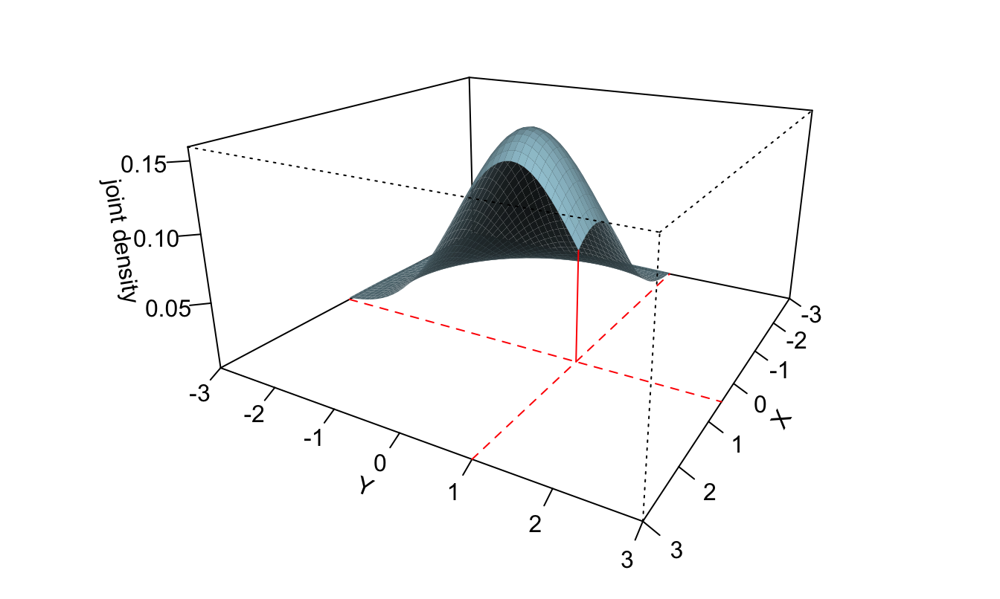
(#fig:essai3d2)The volume between the horizontal plane (\(z=0\)) and the surface is equal to \(F_{XY}(0.5,1)=\mathbb{P}(X<0.5,Y<1)\).
(#def:jointpdf) (Joint probability density function (p.d.f.)) The continuous random variables \(X\) and \(Y\) admit the joint p.d.f. \(f_{XY}\), where \(f_{XY}(x,y) \ge 0\) for all \(x\) and \(y\), if: \[ \mathbb{P}(a < X \le b,c < Y \le d) = \int_{a}^{b}\int_{c}^{d}f_{XY}(x,y)dy dx, \quad \forall a \le b,\;c \le d. \]
The marginal density is the continuous counterpart of a column or row total: \[ f_X(x)=\int_{-\infty}^{+\infty}f_{XY}(x,y)dy, \qquad f_Y(y)=\int_{-\infty}^{+\infty}f_{XY}(x,y)dx. \]
In particular, we have: \[\begin{eqnarray*} &&f_{XY}(x,y)\\ &=& \lim_{\varepsilon \rightarrow 0} \frac{\mathbb{P}(x < X \le x + \varepsilon,y < Y \le y + \varepsilon)}{\varepsilon^2} \\ &=& \lim_{\varepsilon \rightarrow 0} \frac{F_{XY}(x + \varepsilon,y + \varepsilon)-F_{XY}(x,y + \varepsilon)-F_{XY}(x + \varepsilon,y)+F_{XY}(x,y)}{\varepsilon^2}. \end{eqnarray*}\]

(#fig:essai3d)Assume that the basis of the black column is defined by those points whose \(x\)-coordinates are between \(x\) and \(x+\varepsilon\) and \(y\)-coordinates are between \(y\) and \(y+\varepsilon\). Then the volume of the black column is equal to \(\mathbb{P}(x < X \le x+\varepsilon,y < Y \le y+\varepsilon)\), which is approximately equal to \(f_{XY}(x,y)\varepsilon^2\) if \(\varepsilon\) is small.
Figure @ref(fig:figFXYdecompo) illustrates why we have \[\begin{eqnarray*} &&\mathbb{P}(x < X \le x + \varepsilon,y < Y \le y + \varepsilon)\\ &=& F_{XY}(x + \varepsilon,y + \varepsilon)-F_{XY}(x,y + \varepsilon)-F_{XY}(x + \varepsilon,y)+F_{XY}(x,y). \end{eqnarray*}\] Let us denote by \(P_\Omega\) the probability that the point of coordinate \((X,Y)\) is included in the \(\Omega\) area. We have: \[ P_{B} = P_{B+C+D+E} - P_{E+D} - P_{E+C} + P_E, \] which implies that \[\begin{eqnarray*} &&\mathbb{P}(x<X\le x+ \varepsilon,y<Y\le y+ \varepsilon) \\ &=& \mathbb{P}(X\le x+ \varepsilon,Y\le y+ \varepsilon) - \mathbb{P}(X\le x+ \varepsilon,Y\le y) - \mathbb{P}(X\le x,Y\le y+ \varepsilon)\\ &&+ \mathbb{P}(X\le x,Y\le y). \end{eqnarray*}\]
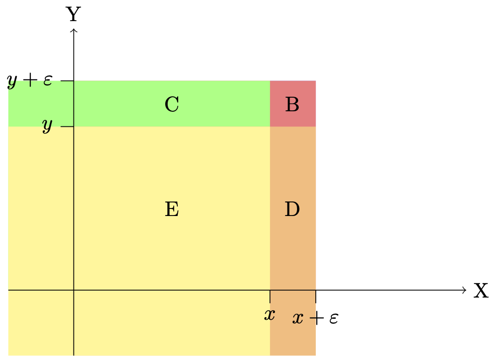
(#fig:figFXYdecompo)Area \(B+C+D+E\) encompasses the points with coordinates \((X,Y)\) such that \(X\le x+\varepsilon\) and \(Y \le y + \varepsilon\). Area \(D+E\) encompasses the points with coordinates \((X,Y)\) such that \(X\le x+\varepsilon\) and \(Y \le y\). Area \(C+E\) encompasses the points with coordinates \((X,Y)\) such that \(X\le x\) and \(Y \le y + \varepsilon\).
(#def:condcdf) (Conditional probability density function) If \(X\) and \(Y\) are continuous random variables and \(f_Y(y)>0\), the conditional density of \(X\) given \(Y=y\) is denoted by \(f_{X|Y}(x,y)\).
It describes the distribution of \(X\) within the subpopulation characterized by \(Y=y\). The associated conditional expectation is \[ \mathbb{E}(X\mid Y=y)=\int_{-\infty}^{+\infty}x f_{X|Y}(x,y)dx. \]
(#prp:conditional-density-formula) (Conditional density) We have \[ f_{X|Y}(x,y)=\frac{f_{XY}(x,y)}{f_Y(y)}. \]
Proof. Condition on a shrinking interval around \(y\). Then \[\begin{eqnarray*} f_{X|Y}(x,y) &=&\lim_{\varepsilon,\delta \rightarrow 0} \frac{\mathbb{P}(x<X\le x+\varepsilon\mid y<Y\le y+\delta)}{\varepsilon}\\ &=&\lim_{\varepsilon,\delta \rightarrow 0} \frac{\mathbb{P}(x<X\le x+\varepsilon,y<Y\le y+\delta)} {\varepsilon\,\mathbb{P}(y<Y\le y+\delta)}\\ &=&\frac{f_{XY}(x,y)}{f_Y(y)}. \end{eqnarray*}\]
(#def:independent) (Independent random variables) Consider two r.v., \(X\) and \(Y\), with respective c.d.f. \(F_X\) and \(F_Y\), and respective p.d.f. \(f_X\) and \(f_Y\).
These random variables are independent if and only if (iff) the joint c.d.f. of \(X\) and \(Y\) (see Def. @ref(def:jointcdf)) is given by: \[ F_{XY}(x,y) = F_{X}(x) \times F_{Y}(y), \] or, equivalently, iff the joint p.d.f. of \((X,Y)\) (see Def. @ref(def:jointpdf)) is given by: \[ f_{XY}(x,y) = f_{X}(x) \times f_{Y}(y). \]
We have the following:
- If \(X\) and \(Y\) are independent, \(f_{X|Y}(x,y)=f_{X}(x)\). This implies, in particular, that \(\mathbb{E}(g(X)|Y)=\mathbb{E}(g(X))\), where \(g\) is any function.
- If \(X\) and \(Y\) are independent, then \(\mathbb{E}(g(X)h(Y))=\mathbb{E}(g(X))\mathbb{E}(h(Y))\) and \(\mathbb{C}ov(g(X),h(Y))=0\), where \(g\) and \(h\) are any functions.
It is important to note that the absence of correlation between two variables is not a sufficient condition to have independence. Consider for instance the case where \(X=Y^2\), with \(Y \sim\mathcal{N}(0,1)\). In this case, we have \(\mathbb{C}ov(X,Y)=0\), but \(X\) and \(Y\) are not independent. Indeed, we have for instance \(\mathbb{E}(Y^2 \times X)=3\), which is not equal to \(\mathbb{E}(Y^2) \times \mathbb{E}(X)=1\). (If \(X\) and \(Y\) were independent, we should have \(\mathbb{E}(Y^2 \times X)=\mathbb{E}(Y^2) \times \mathbb{E}(X)\) according to point 2 above.)
The correspondence between the two settings can be summarized as follows:
| Concept | Discrete variables | Continuous variables |
|---|---|---|
| Distribution | probabilities \(p_X(x)\) | density \(f_X(x)\) |
| Marginalization | sum joint probabilities | integrate the joint density |
| Conditioning | divide by a marginal probability | divide by a marginal density |
| Expectation | probability-weighted sum | density-weighted integral |
Practice: Exercise @ref(exr:basics-quantiles) asks how a density changes after conditioning above a quantile.
1.4 Law of iterated expectations
The conditional means describe different subpopulations. To recover the population mean, we average those conditional means using the population shares of the groups.
(#prp:lawiteratedexpect) (Law of iterated expectations) If \(X\) and \(Y\) are two random variables and if \(\mathbb{E}(|X|)<\infty\), we have: \[ \boxed{\mathbb{E}(X) = \mathbb{E}(\mathbb{E}(X|Y)).} \]
Proof. Suppose first that both \(X\) and \(Y\) are discrete. Partitioning the population according to the possible values of \(Y\) gives \[\begin{eqnarray*} \mathbb{E}(X) &=&\sum_x x\mathbb{P}(X=x)\\ &=&\sum_x x\sum_y\mathbb{P}(X=x\mid Y=y)\mathbb{P}(Y=y)\\ &=&\sum_y\left[\sum_x x\mathbb{P}(X=x\mid Y=y)\right]\mathbb{P}(Y=y)\\ &=&\sum_y\mathbb{E}(X\mid Y=y)\mathbb{P}(Y=y) =\mathbb{E}[\mathbb{E}(X\mid Y)]. \end{eqnarray*}\] For continuous \(Y\), the same argument applies with integrals replacing sums.
In Example @ref(exm:commuting-table), the population mean commuting time is therefore \[ \mathbb{E}(X) =1.2\times 0.5+0.5\times 0.5 =0.85. \] We obtain the same value directly from the marginal distribution of \(X\): \[ \mathbb{E}(X)=0\times0.40+1\times0.35+2\times0.25=0.85. \]
The first calculation averages across groups; the second averages across commuting-time outcomes. The law of iterated expectations states that these two routes must agree.
(#exm:mixture) (Mixture of Gaussian distributions) By definition, \(X\) is drawn from a mixture of Gaussian distributions if: \[ X = \color{blue}{B \times Y_1} + \color{red}{(1-B) \times Y_2}, \] where \(B\), \(Y_1\) and \(Y_2\) are three independent variables drawn as follows: \[ B \sim \mbox{Bernoulli}(p),\quad Y_1 \sim \mathcal{N}(\mu_1,\sigma_1^2), \quad \mbox{and}\quad Y_2 \sim \mathcal{N}(\mu_2,\sigma_2^2). \]
Figure @ref(fig:mixtureG) displays the densities of three Gaussian mixtures. This web interface can be used to explore other parameter values.

(#fig:mixtureG)Example of pdfs of mixtures of Gaussian distribututions.
The law of iterated expectations gives: \[ \mathbb{E}(X) = \mathbb{E}(\mathbb{E}(X|B)) = \mathbb{E}(B\mu_1+(1-B)\mu_2)=p\mu_1 + (1-p)\mu_2. \]
(#exm:Buffon) (Buffon (1733)'s needles) Suppose we have a floor made of parallel strips of wood, each the same width [\(w=1\)]. We drop a needle, of length \(1/2\), onto the floor. What is the probability that the needle crosses the grooves of the floor?
Let’s define the random variable \(X\) by \[ X = \left\{ \begin{array}{cl} 1 & \mbox{if the needle crosses a line}\\ 0 & \mbox{otherwise.} \end{array} \right. \] Conditionally on \(\theta\), it can be seen that we have \(\mathbb{E}(X|\theta)=\cos(\theta)/2\) (see Figure @ref(fig:Buffon)).
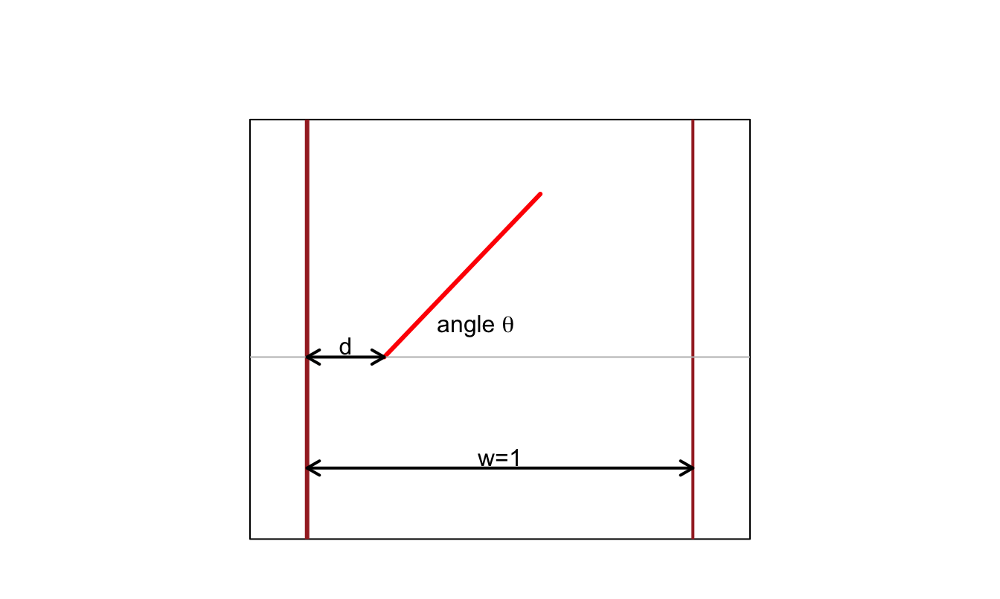
(#fig:Buffon)Schematic representation of the problem.
It is reasonable to assume that \(\theta\) is uniformly distributed on \([-\pi/2,\pi/2]\), therefore: \[ \mathbb{E}(X)=\mathbb{E}(\mathbb{E}(X|\theta))=\mathbb{E}(\cos(\theta)/2)=\int_{-\pi/2}^{\pi/2}\frac{1}{2}\cos(\theta)\left(\frac{d\theta}{\pi}\right)=\frac{1}{\pi}. \]
This web interface simulates the experiment (select the worksheet “Buffon’s needles”).
Practice: Exercise @ref(exr:basics-random-bernoulli) distinguishes conditional and unconditional moments.
1.5 Law of total variance
The population variance also has a useful group interpretation. It combines average dispersion within groups and dispersion between group means.
(#prp:lawtotalvariance) (Law of total variance) If \(X\) and \(Y\) are two random variables and if the variance of \(X\) is finite, we have: \[ \boxed{\mathbb{V}ar(X) = \mathbb{E}(\mathbb{V}ar(X|Y)) + \mathbb{V}ar(\mathbb{E}(X|Y)).} \]
Proof. We have: \[\begin{eqnarray*} \mathbb{V}ar(X) &=& \mathbb{E}(X^2) - \mathbb{E}(X)^2\\ &=& \mathbb{E}(\mathbb{E}(X^2|Y)) - \mathbb{E}(X)^2\\ &=& \mathbb{E}(\mathbb{E}(X^2|Y) \color{blue}{- \mathbb{E}(X|Y)^2}) + \color{blue}{\mathbb{E}(\mathbb{E}(X|Y)^2)} - \color{red}{\mathbb{E}(X)^2}\\ &=& \mathbb{E}(\underbrace{\mathbb{E}(X^2|Y) - \mathbb{E}(X|Y)^2}_{\mathbb{V}ar(X|Y)}) + \underbrace{\mathbb{E}(\mathbb{E}(X|Y)^2) - \color{red}{\mathbb{E}(\mathbb{E}(X|Y))^2}}_{\mathbb{V}ar(\mathbb{E}(X|Y))}. \end{eqnarray*}\]
Returning to Example @ref(exm:commuting-table), one obtains \[ \mathbb{V}ar(X\mid Y=0)=0.56,\qquad \mathbb{V}ar(X\mid Y=1)=0.45. \] Consequently, \[ \underbrace{\mathbb{E}[\mathbb{V}ar(X\mid Y)]}_{\text{within-group variation}} =0.505, \qquad \underbrace{\mathbb{V}ar[\mathbb{E}(X\mid Y)]}_{\text{between-group variation}} =0.1225. \] The total variance is \(0.505+0.1225=0.6275\). This decomposition is often useful in economics because it separates heterogeneity within observable groups from differences in their average outcomes.
(#exm:mixture2) (Mixture of Gaussian distributions (cont'd)) Consider the case of a mixture of Gaussian distributions (Example @ref(exm:mixture)). We have: \[\begin{eqnarray*} \mathbb{V}ar(X) &=& \color{blue}{\mathbb{E}(\mathbb{V}ar(X|B))} + \color{red}{\mathbb{V}ar(\mathbb{E}(X|B))}\\ &=& \color{blue}{p\sigma_1^2+(1-p)\sigma_2^2} + \color{red}{p(1-p)(\mu_1 - \mu_2)^2}. \end{eqnarray*}\]
Practice: Exercise @ref(exr:basics-total-variance) separates within-group and between-group variation.
1.6 Bias, accuracy, and consistency
The quantities introduced so far—means, variances, and probabilities—describe a population. In applications, these quantities are usually unknown and must be estimated from a sample.
Let \(X_1,\ldots,X_n\) be an independent and identically distributed sample from a population with mean \(\mu\) and finite variance \(\sigma^2\). The sample mean \[ \overline X_n=\frac{1}{n}\sum_{i=1}^n X_i \] is an estimator of \(\mu\). It satisfies \[ \mathbb{E}(\overline X_n)=\mu, \qquad \mathbb{V}ar(\overline X_n)=\frac{\sigma^2}{n}. \] Thus its distribution is centred on the population mean and becomes increasingly concentrated as the sample grows. This example anticipates three properties used to evaluate estimators: bias, precision, and consistency.
More generally, let \(\widehat\theta\) estimate a fixed parameter \(\theta\). Its bias is \(\mathbb{E}(\widehat\theta)-\theta\); an unbiased estimator has zero bias. When its second moment is finite, its mean squared error satisfies \[ \operatorname{MSE}(\widehat\theta)=\mathbb{E}[(\widehat\theta-\theta)^2] =\mathbb{V}ar(\widehat\theta)+\operatorname{Bias}(\widehat\theta)^2. \] A small variance means the estimator is concentrated around its own mean; it does not guarantee that this mean is close to the parameter. Exercise @ref(exr:basics-estimator-properties) derives this decomposition. Consistency concerns a different question: what happens as the sample grows?
Econometric parameters include causal effects, elasticities, distributional parameters, and preference parameters such as risk aversion. Except in degenerate cases, an estimate differs from its population target in any particular sample. Consistency requires the estimator to approach that target as the sample size increases.
Denote by \(\hat\theta_n\) the estimate of \(\theta\) based on a sample of size \(n\). We say that \(\hat\theta\) is a consistent estimator of \(\theta\) if, for any \(\varepsilon>0\) (even if very small), the probability that \(\hat\theta_n\) is in \([\theta - \varepsilon,\theta + \varepsilon]\) goes to 1 when \(n\) goes to \(\infty\). Formally: \[ \lim_{n \rightarrow + \infty} \mathbb{P}\left(\hat\theta_n \in [\theta - \varepsilon,\theta + \varepsilon]\right) = 1. \]
That is, \(\hat\theta\) is a consistent estimator if \(\hat\theta_n\) converges in probability (Def. @ref(def:convergenceproba)) to \(\theta\). The sample mean above is consistent when the observations have a finite variance, because \(\mathbb{V}ar(\overline X_n)=\sigma^2/n\) converges to zero. There are also other types of stochastic convergence.1
(#exm:NonConsist) (Example of non-convergent estimator) Assume that \(X_i \sim i.i.d. \mbox{Cauchy}\) with a location parameter of 1 and a scale parameter of 1 (Def. @ref(def:Cauchy)). The sample mean \(\bar{X}_n = \frac{1}{n}\sum_{i=1}^{n} X_i\) does not converge in probability. This is because a Cauchy distribution has no mean; hence the law of large numbers (Theorem @ref(thm:LLN)) does not apply.
The realization below is especially deceptive. For several thousand observations, the sample mean appears to settle near the location parameter 1. But observation 4,495 is approximately 75,073: it moves the sample mean from about 1.01 to 17.71. Increasing the sample size has not protected the sample mean against a new extreme Cauchy draw.
Code
set.seed(7221) # Reproducible path with a late extreme observation
N <- 5000
X <- rcauchy(N, location=1)
X.bar <- cumsum(X)/(1:N)
par(mfrow=c(1,2), mar=c(4.2,5.2,2.6,1),
mgp=c(2.5,.8,0), las=1, cex.axis=.85)
plot(X,type="l",xlab="sample size (n)",
ylab="",main=expression(X[n]),lwd=2)
plot(X.bar,type="l",xlab="sample size (n)",
ylab="",main=expression(bar(X)[n]),lwd=2)
abline(h=1,lty=2,col="grey")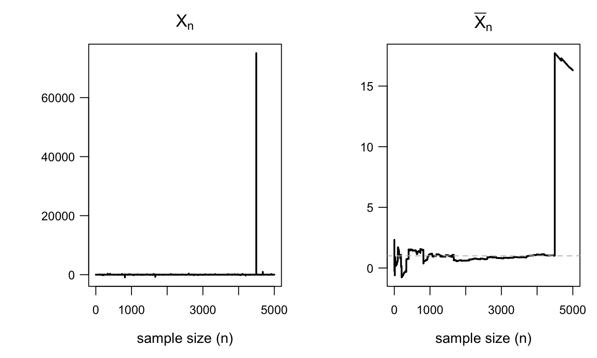
(#fig:figCauchy)Simulation of \(\bar{X}_n\) when \(X_i \sim i.i.d. \mbox{Cauchy}\).
1.7 Chapter recap
- Moments summarize the location, dispersion, and co-movement of random variables; Section @ref(basics-moments) introduces expectation, variance, and covariance.
- A joint distribution determines marginal and conditional distributions. Example @ref(exm:commuting-table) illustrates these operations for discrete variables, while Proposition @ref(prp:conditional-density-formula) gives the continuous conditional-density formula.
- Bayes’ rule in Section @ref(basics-bayes) reverses the direction of conditioning; Definition @ref(def:independent) states when conditioning leaves a distribution unchanged.
- Proposition @ref(prp:lawiteratedexpect) recovers a population mean by averaging conditional means.
- Proposition @ref(prp:lawtotalvariance) decomposes population variance into within-group and between-group components.
- Section @ref(basics-estimators) distinguishes finite-sample bias and precision from consistency as the sample size grows.
1.8 Exercises
Attempt each question and explain your reasoning, including for true-or-false statements. Foundation exercises apply a result directly; Standard exercises require several steps or a short proof; Advanced exercises combine several results or require a longer derivation. Worked solutions and exercise-specific hints are reserved for teaching sessions and are not included in this student edition.
(#exr:basics-covariance) (Covariance identities) Standard | Analytical
Review Section @ref(basics-moments).
Let \(X,Y,V\) have finite second moments, and let \(a,b,c\) be constants. Write \(\mu_X=\mathbb{E}(X)\) and \(\sigma_{XY}=\mathbb{C}ov(X,Y)\).
- Show that \(\mathbb{C}ov(a+bX+cV,Y)=b\sigma_{XY}+c\sigma_{VY}\).
- Show that \(\mathbb{E}(XY)=\mathbb{C}ov(X,Y)+\mathbb{E}(X)\mathbb{E}(Y)\).
(#exr:basics-bayes) (Bayes rule and facial recognition) Foundation | Calculation
Review Section @ref(basics-bayes).
A security system grants access to an authorized person with probability \(0.99\), and to an unauthorized person with probability \(0.02\). Of those attempting to enter, \(5\%\) are unauthorized.
- Given that a person is granted access, what is the probability that the person is authorized?
- Given that a person is denied access, what is the probability that the person is unauthorized?
(#exr:basics-total-variance) (Within-group and between-group variation) Foundation | Calculation
Review Section @ref(basics-total-variance).
Let \(X\) be daily time spent on social media (in hours), and let \(Y\) indicate age group. The population has the following characteristics:
| Age group | Share | Mean (h) | Variance (\(\mathrm{h}^2\)) |
|---|---|---|---|
| Under 30 | 0.6 | 4 | 1.5 |
| 30 or above | 0.4 | 2 | 0.5 |
- Calculate \(\mathbb{E}[\mathbb{V}ar(X\mid Y)]\).
- Calculate \(\mathbb{E}[\mathbb{E}(X\mid Y)]\).
- Calculate \(\mathbb{V}ar[\mathbb{E}(X\mid Y)]\).
- Use the law of total variance to obtain \(\mathbb{V}ar(X)\).
(#exr:basics-quantiles) (Conditioning above a quantile) Standard | Analytical
Review Section @ref(basics-densities).
Let \(X\) have a continuous density \(f\) and cumulative distribution function \(F\). For \(0<\alpha<1\), let \(q_\alpha\) satisfy \(F(q_\alpha)=\alpha\).
- How can \(f\) be obtained from \(F\)?
- Derive the c.d.f. \(F_\alpha\) of \(X\) conditional on \(X>q_\alpha\). State its value both below and above \(q_\alpha\).
- Derive the corresponding density \(f_\alpha\).
(#exr:basics-estimator-properties) (Bias, variance, and mean squared error) Standard | Analytical
Review Section @ref(basics-estimators).
Let \(\widehat\theta\) estimate a fixed parameter \(\theta\), and suppose \(\widehat\theta\) has a finite second moment.
- What property is expressed by \(\mathbb{E}(\widehat\theta)=\theta\)?
- Express \(\mathbb{E}[(\widehat\theta-\theta)^2]\) in terms of the variance and bias of \(\widehat\theta\).
- Does a small variance necessarily imply a small mean squared error? Explain.
(#exr:basics-joint-probabilities) (Employment, residence, and independence) Standard | Calculation
Review Section @ref(basics-discrete).
Let \(X\) indicate employment status (\(0\): employed; \(1\): self-employed), and let \(Y\) indicate residence (\(0\): countryside; \(1\): city). Their joint probabilities are:
| \(Y=0\) | \(Y=1\) | |
|---|---|---|
| \(X=0\) | 0.10 | 0.30 |
| \(X=1\) | 0.15 | 0.45 |
For each statement, decide whether it is true or false and justify your answer.
- \(\mathbb{E}(X)=0.7\).
- \(X\) and \(Y\) are not independent.
- \(\mathbb{V}ar(X)=\mathbb{V}ar(X\mid Y=0)+\mathbb{V}ar(X\mid Y=1)\).
- \(\mathbb{V}ar(X\mid Y=0)=0.24\).
- Bayes’ rule implies \[ \begin{gathered} \mathbb{P}(X=0\mid Y=0)\\ =\frac{\mathbb{P}(Y=0\mid X=0)\mathbb{P}(X=0)} {\mathbb{P}(Y=0\mid X=0)\mathbb{P}(X=0)+\mathbb{P}(Y=0\mid X=1)\mathbb{P}(X=1)}. \end{gathered} \]
- The correlation between \(X\) and \(Y\) is strictly positive.
(#exr:basics-random-bernoulli) (A Bernoulli variable with a random success probability) Standard | Analytical
Review Section @ref(basics-iterated-expectations).
Let \(U\) be uniform on \([0,1]\), and suppose \(Y\mid U\sim\operatorname{Bernoulli}(U)\).
For each statement, decide whether it is true or false and justify your answer.
- \(\mathbb{E}(Y\mid U)=U\).
- \(\mathbb{V}ar(Y\mid U)=U^2\).
- \(\mathbb{V}ar(Y)=1/4\).
- \(\mathbb{E}(Y)=1/4\).
- \(\mathbb{E}(Y+U)=2U\).
2 Central Limit Theorem
The law of large numbers (LLN) and the central limit theorem (CLT) answer two different questions about sample averages. The LLN explains why a sample mean approaches its population counterpart. The CLT describes the remaining estimation error and thereby makes confidence intervals and tests possible. Under the conditions used in this chapter, that error is approximately Gaussian in large samples even when the observations themselves are not.
Prerequisites. Expectations and variances, independent random variables, sample means, and convergence in probability.
After working through this chapter, you should be able to:
- Explain the distinct roles of the law of large numbers and the central limit theorem.
- Derive large-sample approximations for sums and sample means.
- Standardize a statistic and use normal quantiles to approximate probabilities.
- Compare means from two independent samples.
Roadmap. The chapter first establishes why sample averages converge, then studies their large-sample distribution. It concludes by applying these results to differences between independent sample means and to the exercises in Section @ref(clt-exercises).
2.1 Law of large numbers
(#def:smplpop) (Sample and Population) In statistics, a sample refers to a finite set of observations drawn from a population.
Empirical work usually relies on a sample because observing an entire population is impractical. A natural estimator of a population mean is the sample average of \(\{x_1,\dots,x_n\}\): \[ \overline{x}_n = \frac{1}{n}\sum_{i=1}^n x_i. \] This sample mean is an estimator of the true (population) mean \(\mathbb{E}(x_i)\) (assuming the latter exists). According to the law of large numbers (Theorem @ref(thm:LLN)), this estimator is consistent. (see Def. @ref(def:convergenceproba) for the definition of convergence in probability.)
(#thm:LLN) (Law of large numbers) If the random variables \(x_i\) are i.i.d. and \(\mathbb{E}(|x_i|)<\infty\), then the sample mean (\(\overline{x}_n\)) is a consistent estimator of the population mean \(\mu=\mathbb{E}(x_i)\). In other words, the sample mean converges in probability to the population mean.
Proof. See Appendix @ref(CLTappend).
(#exm:doctorVisits) Suppose one is interested in the average number of doctor consultations over 12 months, for Swiss people. One can get an estimate by computing the sample average of a large dataset, for instance using the Swiss Household Panel (SHP):
Figure @ref(fig:incomeDistri) shows the empirical distribution of the number of doctor visits.
Code
library(AEC) # to load the shp data-frame.
shp <- haven::zap_labels(AEC::shp) # retain values, remove import-only labels
Nb.doct.visits <- shp$p19c15
Nb.doct.visits <- Nb.doct.visits[Nb.doct.visits>=0] # remove irrelevant observations
par(plt=c(.15,.95,.2,.95))
barplot(table(Nb.doct.visits),xlim=c(0,25))
(#fig:incomeDistri)Distribution of the number of doctor visits. Source: Swiss Household Panel.
Let us compute the sample mean, variance, and standard deviation:
Code
| Mean | Variance | SD |
|---|---|---|
| 5.254 | 79.506 | 8.917 |
Consistency tells us that the approximation improves with the sample size, but it does not yet quantify the error in a given sample. We first obtain a probability bound and then turn to the richer approximation supplied by the CLT.
A first answer is provided by the Chebychev inequality. Assume the \(x_i\)’s are independently drawn from a distribution of mean \(\mu\) and variance \(\sigma^2\). We have: \[ \mathbb{E}(\bar{x}_n) = \mu \quad \mbox{ and } \quad \mathbb{V}ar(\mu - \bar{x}_n) = \frac{1}{n}\sigma^2 \underset{n \rightarrow \infty}{\rightarrow} 0. \] The Chebychev inequality (Proposition @ref(prp:chebychev)) states that, for any \(\varepsilon > 0\) (even very small), we have: \[ \mathbb{P}(|\bar{x}_n-\mu|>\varepsilon) \le \frac{\mathbb{V}ar(\mu - \bar{x}_n)}{\varepsilon^2} = \frac{\sigma^2}{n\varepsilon^2} \underset{n \rightarrow \infty}{\rightarrow} 0. \] Consider for instance the estimation of the average number of doctor visits (Example @ref(exm:doctorVisits)). In this example, the sample length is \(n=\) 4389, we have \(\bar{x}_n=\) 5.25, and the variance \(\sigma^2\) was approximately equal to 79.51. Therefore, taking \(\varepsilon=0.5\), we have that \(\mathbb{P}(|\bar{x}_n-\mu|>\varepsilon)\) is lower than \(\frac{\sigma^2}{n\varepsilon^2} \approx\) 0.072.
However, this only gives bounds for such probabilities. The central limit theorem provides richer information, as it gives the approximate distribution of the estimation error.
2.2 Central Limit Theorem (CLT)
(#thm:LindbergLevyCLT) (Lindberg-Levy Central limit theorem, CLT) If \(x_n\) is an i.i.d. sequence of random variables with mean \(\mu\) and (finite) variance \(\sigma^2\), then: \[ \boxed{\sqrt{n} (\bar{x}_n - \mu) \overset{d}{\rightarrow} \mathcal{N}(0,\sigma^2), \quad \mbox{where} \quad \bar{x}_n = \frac{1}{n} \sum_{i=1}^{n} x_i.} \] [“\(\overset{d}{\rightarrow}\)” denotes the convergence in distribution (see Def. @ref(def:cvgceDistri))]
Proof. See Appendix @ref(CLTappend).
According to the CLT, when \(n\) is large, the distribution of the error \(\bar{x}_n-\mu\) is approximately normal, whatever the distribution of the \(x_i\)’s, provided that their mean \(\mu\) and variance \(\sigma^2\) exist. Its approximate mean is zero and its standard deviation is \(\sigma/\sqrt{n}\). (We then say that the convergence rate is in \(\sqrt{n}\).) Quantiles of the normal distribution can therefore be used to compute approximate confidence intervals for \(\mu\) from the sample \(\{x_1,\dots,x_n\}\).
This web interface illustrates the CLT with simulations (select the “CLT” block).
The CL theorem was first postulated by the mathematician Abraham de Moivre. In an article published in 1733, he used the normal distribution to approximate the distribution of the number of heads resulting from many tosses of a fair coin. This finding was nearly forgotten until Pierre-Simon Laplace recalled it in his Théorie analytique des probabilités, published in 1812. Laplace expanded De Moivre’s finding by approximating the binomial distribution with the normal distribution.
Practice: Exercises @ref(exr:clt-buffon-precision) and @ref(exr:clt-coin-normal-quantiles) use the CLT to design a simulation and to determine its required precision.
The CLT can be extended to the case where each \(x_i\) is a vector. (In that case, and if the dimension of \(x_i\) is \(m\), then \(\mathbb{V}ar(x_i)\) is a \(m\times m\) matrix.) Here is the multivariate CLT:
(#thm:MCLT) (Multivariate Central limit theorem, CLT) If \(\mathbf{x}_n\) is an i.i.d. sequence of \(m\)-dimensional random variables with mean \(\boldsymbol\mu\) and variance \(\Sigma\), where \(\Sigma\) is a positive definite matrix, then: \[ \boxed{\sqrt{n} (\bar{\mathbf{x}}_n - \boldsymbol\mu) \overset{d}{\rightarrow} \mathcal{N}(\mathbf{0},\Sigma), \quad \mbox{where} \quad \bar{\mathbf{x}}_n = \frac{1}{n} \sum_{i=1}^{n} \mathbf{x}_i.} \]
2.3 Comparison of sample means
The one-sample CLT extends directly to comparisons between populations. The key object is then the difference between two independent sample means.
Consider two independent samples \(\{m_1,\dots,m_{n_m}\}\) and \(\{w_1,\dots,w_{n_w}\}\). Assume that the \(m_i\)’s are i.i.d. with mean \(\mu_m\) and variance \(\sigma_m^2\), and that the \(w_i\)’s are i.i.d. with mean \(\mu_w\) and variance \(\sigma_w^2\).
If \(n_m\) and \(n_w\) are large, the CLT gives the approximations: \[ \sqrt{n_m}(\bar{m} - \mu_m) \overset{a}{\sim} \mathcal{N}(0,\sigma^2_m) \quad \mbox{and} \quad \sqrt{n_w}(\bar{w} - \mu_w) \overset{a}{\sim} \mathcal{N}(0,\sigma^2_w), \] or \[ \bar{m} \overset{a}{\sim} \mathcal{N}\left(\mu_m,\frac{\sigma^2_m}{n_m}\right) \quad \mbox{and} \quad \bar{w} \overset{a}{\sim} \mathcal{N}\left(\mu_w,\frac{\sigma^2_w}{n_w}\right). \]
Since the two samples are independent, \(\bar{m}\) and \(\bar{w}\) are independent, and we get: \[ \bar{m} - \bar{w} \overset{a}{\sim} \mathcal{N}\left(\mu_m-\mu_w,\tau^2\right) \quad \mbox{with} \quad \tau^2 = \frac{\sigma^2_m}{n_m}+\frac{\sigma^2_w}{n_w}. \] This can be used to test the null hypothesis \(H_0: \; \mu_m-\mu_w = 0\) (see Section @ref(Tests)). In practice, the unknown population variances are replaced by their sample counterparts, giving the estimated standard error \(\hat\tau\). Under \(H_0\), the probability that \(\bar{m}-\bar{w}\) lies in \([-1.96\hat\tau,1.96\hat\tau]\) (respectively \([-2.58\hat\tau,2.58\hat\tau]\)) is approximately 0.95 (respectively 0.99) in large samples [see Table @ref(tab:Normal)].
For instance, if \(\bar{m}-\bar{w}\) is not in \([-2.58\hat\tau,2.58\hat\tau]\), then we reject the null hypothesis at the 1% significance level.
(#exm:comparSmplMeans) (Comparison of sample means) Let us use the Swiss Household Panel (SHP) dataset to test the equality between men and women incomes, for Swiss people under the age of 35.
The SHP observations are split into two income samples, one for men and one for women. Observations with negative reported income are excluded.
## Warning: package 'logKDE' was built under R version 4.5.2Code
Figure @ref(fig:RcompMeans) displays the empirical densities of incomes for men and women. Vertical dashed lines indicate sample means:
Code
par(plt=c(.1,.95,.2,.95)) # adjust margins
plot(logdensity(income.w),lwd=2,xlim=c(0,200000),main="",
xlab="Yearly gross income (in CHF)",ylab="") # x and y labels
lines(logdensity(income.m),col="red",lwd=2)
abline(v=mean(income.m),col="red",lty=3,lwd=2)
abline(v=mean(income.w),col="black",lty=3,lwd=2)
legend("topright",c("men yearly income","women"),lty=1,lwd=2,col=c("red","black"))
(#fig:RcompMeans)Distribution of yearly gross incomes for Swiss residents under the age of 35. Source: SHP. Vertical dashed lines indicates the sample mean.
Let us compute \(\bar{m}\), \(\bar{w}\), and the estimated standard error \(\hat\tau\):
Code
## [1] 53035.023 42708.227 2427.425Under the null hypothesis of equal population means, the difference \(\bar{m}-\bar{w}\) would fall outside \([\)-4758,4758\(]\) with probability approximately 5%, and outside \([\)-6263,6263\(]\) with probability approximately 1%. The observed difference is 10327, so we reject equality at both significance levels.
2.4 Chapter recap
- Theorem @ref(thm:LLN) explains why a sample mean converges to its population mean; it is a consistency result.
- Chebyshev’s inequality bounds the probability of a large estimation error but does not describe its full distribution.
- Theorem @ref(thm:LindbergLevyCLT) gives the large-sample distribution of the standardized sample mean and therefore supports confidence intervals and tests.
- The multivariate extension in Theorem @ref(thm:MCLT) applies the same logic to vectors of sample moments.
- Section @ref(comparison-means) combines two independent CLT approximations to compare population means.
2.5 Exercises
Attempt each question and explain your reasoning, including for true-or-false statements. Foundation exercises apply a result directly; Standard exercises require several steps or a short proof; Advanced exercises combine several results or require a longer derivation. Worked solutions and exercise-specific hints are reserved for teaching sessions and are not included in this student edition.
(#exr:clt-financial-returns) (Financial returns and the CLT) Advanced | Application
Review Section @ref(TCL).
Consider a financial asset whose value on day \(i\) is \(S_i\). We set \(s_i = \log(S_i/S_{i-1})\) and we assume that \(s_i = \mu + \sigma Z_i\), where the \(Z_i\) are identically and independently distributed (i.i.d.) and are drawn from a Student distribution with \(\nu\) degrees of freedom (i.e. \(Z_i \sim \text{i.i.d.}\, t(\nu)\)).
An investor buys the asset at date \(0\) and holds it until date \(n\). We denote by \(\bar{s}_n\) the average of \(s_i\) between periods \(0\) and \(n\), that is \(\bar{s}_n = \frac{1}{n} \sum_{i=1}^n s_i\).
We recall that if \(Z \sim t(\nu)\), then \(\mathbb{E}(Z) = 0\) and \(\mathbb{V}ar(Z) = \frac{\nu}{\nu - 2}\) for \(\nu > 2\).
Interpret \(s_i\).
Express \(S_n\) as a function of \(\bar{s}_n\) and of \(S_0\).
Assuming that \(n\) is large, give an approximation of the distribution of \(\sqrt{n}\bar{s}_n\).
Show that \(\mathbb{P}(S_n < S_0) = \mathbb{P}(\sqrt{n}\bar{s}_n < 0)\).
For large \(n\), derive an approximation to the probability that the investor loses money by holding the asset between dates 0 and \(n\).
(#exr:clt-roulette) (Roulette and the Central Limit Theorem) Standard | Application
Review Section @ref(TCL).
The pockets of the roulette wheel are numbered from 0 to 36. There are 18 black pockets, 18 red pockets, and one green pocket (numbered 0). The probability that the ball stops in pocket \(i\), \(i \in\) 0, 1, 2, ..., 36 is 1/37. Each player chooses one color (black or red) and gives 1 $ to the Casino. If the ball lands in a compartment whose color is as bet by the player, then the player earns 2 $. Otherwise, she gets 0.
Determine the payoffs of the Casino when there is only one player who plays once.
One player plays three times. Compute the probability that the Casino loses money.
There are 100 players. Each one plays 100 times. The 10,000 resulting games are assumed to be independent. Approximate the distribution of the casino’s total payoff.
Propose an analytical approximation of the probability that the Casino loses money after \(n\) games, where \(n\) is a large number.
(#exr:clt-payoff-true-false) (Repeated-payoff game: true or false?) Standard | True or false
Review Section @ref(TCL).
Consider a repeated game. The payoff of each round is:
\(-2\) with probability \(\dfrac{1}{2}\),
\(7\) with probability \(\dfrac{1}{7}\),
\(0\) otherwise.
We play \(n\) rounds (\(n\) is large). Payoffs are independent across rounds. Let \(x_i\) be the payoff in round \(i\), and let \[z_n=\sum_{i=1}^n x_i \qquad\text{so that}\qquad z_n=n\bar{x}_n, \quad \bar{x}_n=\frac{1}{n}\sum_{i=1}^n x_i.\] We note that \(\mathbb{E}(x_i)=0\) and we admit (without calculation) that \(\mathbb{V}ar(x_i)=9\).
For each statement, decide whether it is true or false and justify your answer.
\(\mathbb{V}ar(z_n)=9\).
\(z_n\) approximately follows a Normal distribution of mean \(0\) and variance \(9n\).
If \(n=900\), an interval containing approximately 95% of the sampling distribution of \(\bar{x}_n\) is \([-1.96,1.96]\).
We approximately have \(\bar{x}_n \sim \mathcal{N}(0,9)\).
\(\mathbb{P}(z_n<0)\) and \(\mathbb{P}(z_n>0)\) are close to \(\dfrac{1}{2}\).
(#exr:clt-two-samples-true-false) (Comparing two sample means: true or false?) Standard | True or false
Review Section @ref(TCL).
Consider two samples, each of size \(n\), where \(n\) is large. The first sample is \(\{x_1,\dots,x_n\}\) and the second sample is \(\{y_1,\dots,y_n\}\). We assume that all observations are independent (within and across samples). The \(x_i\) are drawn from a distribution with mean \(\mu_x\) and variance \(\sigma_x^2\), and the \(y_i\) are drawn from a distribution with mean \(\mu_y\) and variance \(\sigma_y^2\).
We denote by \(\bar{x}_n\) and \(\bar{y}_n\) the sample means: \[\bar{x}_n=\frac{1}{n}\sum_{i=1}^n x_i, \qquad \bar{y}_n=\frac{1}{n}\sum_{i=1}^n y_i.\]
For each statement, decide whether it is true or false and justify your answer.
The distribution of \(\bar{x}_n-\mu_x\) is approximately \(\mathcal{N}(0,\sigma_x^2)\).
The variance of \(\bar{x}_n\) is \(\sigma_x^2\).
If \(\mu_x=\mu_y\), the distribution of \(\sqrt{n}(\bar{x}_n-\bar{y}_n)\) is approximately \(\mathcal{N}(0,\sigma_x^2+\sigma_y^2)\).
If \(\sigma_x^2=\sigma_y^2=0.5\), \(\bar{x}_n=1\), \(\bar{y}_n=1.1\), and \(n=900\), a test of mean comparison cannot reject \(H_0:\mu_x=\mu_y\) at the 5% significance level.
\(\bar{x}_n-\bar{y}_n\) is a consistent estimator of \(\mu_x-\mu_y\).
(#exr:clt-buffon-precision) (Precision of Buffon's needle estimator) Advanced | Analytical
Review Section @ref(TCL).
Return to Buffon’s needle experiment in Example @ref(exm:Buffon). Let \(X_i\) equal one when needle \(i\) crosses a groove and zero otherwise. In the version of the experiment considered there, \[ \mathbb{E}(X_i)=p=\frac{1}{\pi}. \] After \(n\) independent throws, estimate \(\pi\) by \[ \widehat\pi=\frac{1}{\overline X_n}. \]
- Use the CLT to obtain an approximate distribution for \(\overline X_n\).
- Apply a first-order approximation to obtain the approximate standard error of \(\widehat\pi\).
- Find the smallest integer \(n\) for which the approximate 95% margin of error for \(\widehat\pi\) is at most \(0.01\). Use the true value of \(\pi\) when planning the required sample size.
(#exr:clt-coin-normal-quantiles) (Approximating normal quantiles with a coin) Standard | Simulation design
Review Section @ref(TCL).
Suppose that you have only a fair coin and enough time to repeat an experiment many times.
- Design a simulation that produces observations whose distribution is approximately \(\mathcal{N}(0,1)\). State how many coin tosses constitute one simulated observation and how that observation is standardized.
- Explain how repeated observations from this simulation can be used to approximate the 1st through 99th percentiles of the standard normal distribution.
- Describe how the accuracy of the approximation changes when you increase (i) the number of tosses per observation and (ii) the number of simulated observations.
3 Statistical tests
Prerequisites. Probability distributions, sampling distributions, quantiles, and the central limit theorem.
After working through this chapter, you should be able to:
- Formulate null and alternative hypotheses and define a rejection region.
- Distinguish size, significance level, power, and the two types of testing error.
- Compute and interpret a p-value for a specified test.
- Explain the terminology used for one-tail and two-tail rejection regions.
- Assess the asymptotic level and consistency of a test.
Roadmap. We begin with the logic and possible errors of statistical decisions. We then study rejection regions and p-values, introduce asymptotic properties, and finish with normality tests. Section @ref(tests-exercises) provides applications to size, power, and distributional testing.
A statistical test asks whether a hypothesis about an unknown parameter is compatible with the observed data. The data are random, and their distribution depends on that parameter, so the answer must account for sampling uncertainty.
For example, suppose that \(\mathbf{x}=\{x_1,\dots,x_n\}\) is an i.i.d. sample with unknown mean \(\mu\) and variance \(\sigma^2\). We may wish to assess whether \(\mu=0\) or whether \(\sigma=1\). A test translates either question into a decision rule whose possible errors can be quantified.
The hypothesis the researcher wants to test is called the null hypothesis. It is often denoted by \(H_0\). It is a conjecture about a given property of a population. Without loss of generality, it can be stated as: \[ H_0:\;\{\theta \in \Theta_0\}, \] where \(\Theta_0\) is the set of parameter values allowed by the null hypothesis. It can also be defined through a function \(h\) (say):2 \[ H_0:\;h(\theta)=0. \]
The alternative hypothesis, often denoted \(H_1\), is then defined by \(H_1:\;\{\theta \in \Theta_1\}\), where \(\Theta_1\) contains the parameter values under consideration that are not in \(\Theta_0\).3
The ingredients of a statistical test are:
- a vector of (unknown) parameters (\(\theta\)),
- a test statistic, that is a function of the sample components (\(S(\mathbf{x})\), say), and
- a critical region (\(\Omega\), say), defined as a set of implausible values of \(S\) under \(H_0\).
To implement the test, we need the distribution of \(S\) under \(H_0\). We compute \(S(\mathbf{x})\) and determine whether it lies in the critical region \(\Omega\), which contains values judged sufficiently implausible under the null. If \(S(\mathbf{x})\in\Omega\), we reject \(H_0\). The reasoning is: if the null were true, an outcome at least this unfavorable to it would be rare.
There are two possible outcomes:
- \(H_0\) is rejected if \(S \in \Omega\);
- \(H_0\) is not rejected if \(S \not\in \Omega\).
Except in extreme cases, there is always a non-zero probability to reject \(H_0\) while it is true (Type I error, or false positive), or to fail to reject it while it is false (Type II error, or false negative).
This vocabulary is widely used. For instance, the notions of false positive and false negative are used in the context of Early Warning Signals (see Example @ref(exm:FPFN)).
(#exm:FPFN) (Early Warning Signals) Early-warning systems aim to detect crises before they occur. See, for example, ECB (2014) for applications to financial crises.
Suppose an index \(W\) tends to be large before a financial crisis. An early-warning rule predicts a crisis when \(W>a\). Lowering \(a\) produces more warnings and therefore more false positives; raising \(a\) produces fewer warnings and therefore more false negatives. The threshold determines the trade-off between the two errors.
3.1 Size and power of a test
(#def:sizepower) (Size and Power of a test) For a test with rejection region \(\Omega\), define its rejection probability at parameter value \(\theta\) by \(\pi(\theta)=\mathbb{P}_\theta(S\in\Omega)\). Then:
- the size of the test is \(\alpha=\sup_{\theta\in\Theta_0}\pi(\theta)\); a test has significance level \(\alpha\) if its size is at most \(\alpha\),
- the power function is \(\pi(\theta)\) for \(\theta\in\Theta_1\); at a particular alternative \(\theta\), the probability of a type-II error is \(\beta(\theta)=1-\pi(\theta)\).
For a simple null and a simple alternative, each hypothesis specifies a single distribution. In that special case, these definitions reduce to \[\begin{eqnarray} \alpha &=& \mathbb{P}(S \in \Omega\mid H_0) \quad \mbox{(probability of a false positive)},\\ \beta &=& \mathbb{P}(S \not\in \Omega\mid H_1) \quad \mbox{(probability of a false negative)}. \end{eqnarray}\]
The power is the probability that the test will lead to the rejection of the null hypothesis if the latter is false. Therefore, for a given size, we prefer tests with high power.
In most cases, size and power involve a trade-off. In the early-warning example, increasing \(a\) reduces false positives and therefore the size of the rule, but it also increases false negatives and therefore reduces power. The next section shows how a critical region formalizes this choice.
3.2 Critical regions and p-values
The shape of the critical region depends on which values of \(S\) contradict the null. Its boundary is calibrated so that \(\mathbb{P}_\theta(S\in\Omega)\le\alpha\) for every \(\theta\in\Theta_0\), with equality at a least-favourable null value when the test has size exactly \(\alpha\). A smaller significance level therefore reserves rejection for more unusual outcomes under \(H_0\).
In this book, the terms one-sided and two-sided describe the shape of the rejection region for the chosen test statistic. A two-sided (or two-tailed) test rejects in both tails. This is common when large positive and large negative values of a symmetric statistic both count against \(H_0\), as in Figures @ref(fig:Illusttest1) and @ref(fig:Illusttest2). This web interface illustrates alternative situations.
In much of the statistical literature, however, one-sided and two-sided primarily describe the direction of the alternative hypothesis (for example, \(\mu>\mu_0\) versus \(\mu\ne\mu_0\)). The two usages often agree, but they are not identical. In particular, an upper-tail chi-square or \(F\) test has a one-tail rejection region even though the underlying departure from the null need not have a single direction.
Figure @ref(fig:Illusttest2) also illustrates the notion of p-value for a two-sided test. The p-value is the smallest significance level at which the observed statistic would be rejected by the specified family of rejection regions. Thus, if the p-value is at most \(\alpha\), we reject \(H_0\) at significance level \(\alpha\); otherwise, we do not reject it.
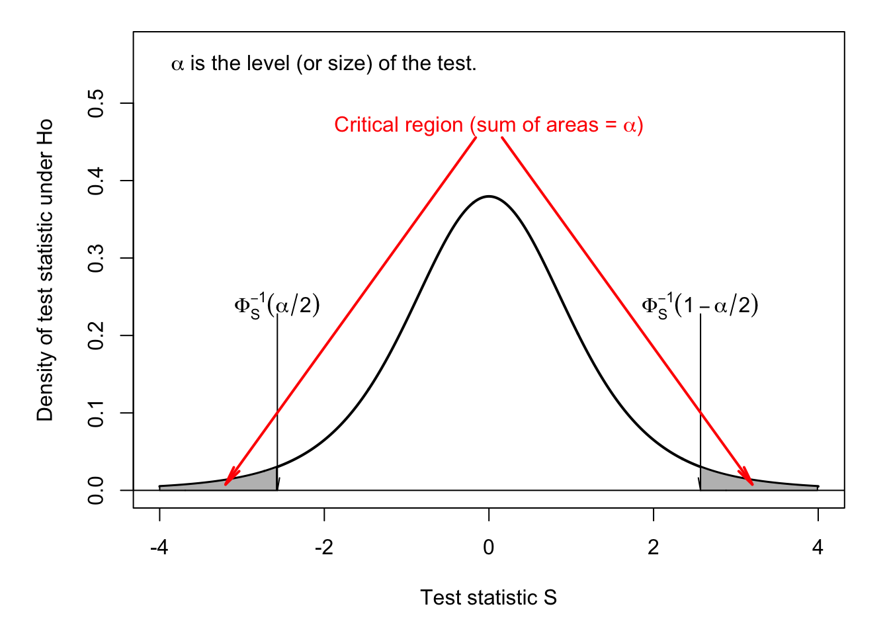
(#fig:Illusttest1)Two-sided test. Under \(H_0\), \(S \sim t(5)\). \(\alpha\) is the size of the test.
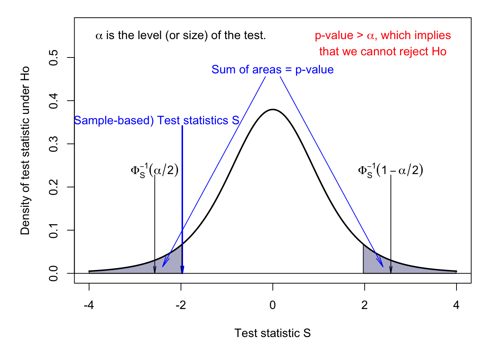
(#fig:Illusttest2)Two-sided test. Under \(H_0\), \(S \sim t(5)\). \(\alpha\) is the size of the test.
Figures @ref(fig:IllusTestOneSided1) and @ref(fig:IllusTestOneSided2) illustrate a one-tailed, or one-sided, rejection region in the terminology used in this course. Here only large values of a chi-square statistic count against \(H_0\), so the critical region is in the upper tail. A statistic with support on \(\mathbb{R}^+\) does not by itself force a one-tail test; the rejection region follows from which values provide evidence against the null. Figure @ref(fig:IllusTestOneSided2) also illustrates the corresponding p-value.
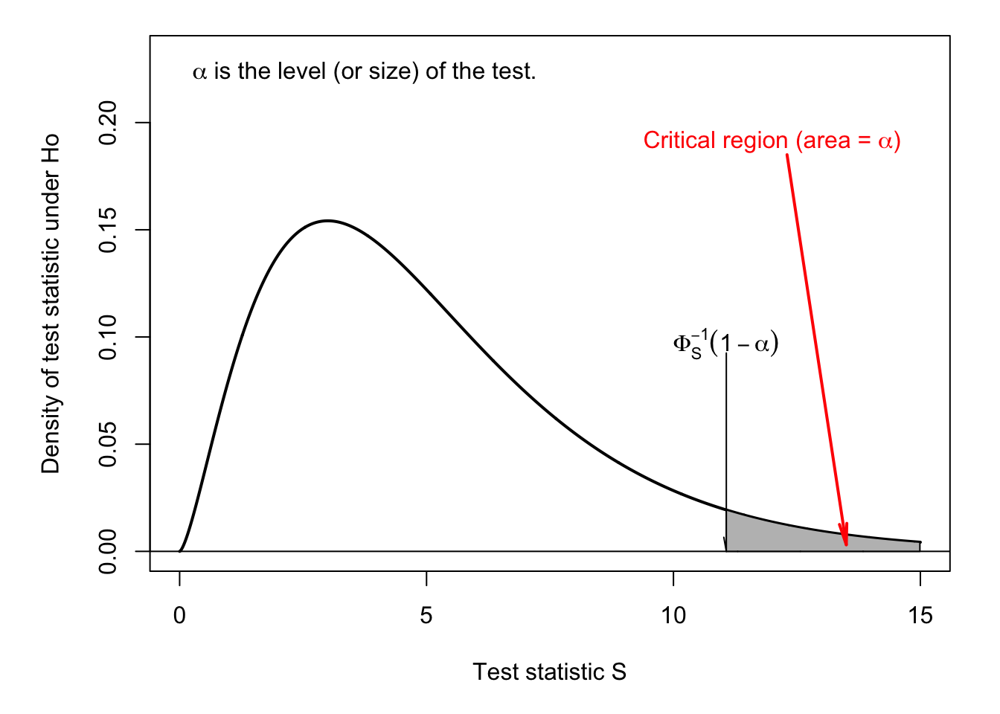
(#fig:IllusTestOneSided1)One-sided test. Under \(H_0\), \(S \sim \chi^2(5)\). \(\alpha\) is the size of the test.

(#fig:IllusTestOneSided2)One-sided test. Under \(H_0\), \(S \sim \chi^2(5)\). \(\alpha\) is the size of the test.
(#exm:Factory) (A practical illustration of size and power) Consider a factory that produces metal cylinders whose diameter has to be equal to 1 cm. The tolerance is \(a=0.01\) cm. More precisely, more than 90% of the parts have to satisfy the tolerance for the whole production (say 1.000.000 parts) to be bought by the client.
The production technology is such that a proportion \(\theta\) (imperfectly known) of the parts does not satisfy the tolerance. The (population) parameter \(\theta\) could be computed by measuring all the parts but this would be costly. Instead, it is decided that \(n \ll 1.000.000\) parts will be measured. In this context, the null hypothesis \(H_0\) is \(\theta \le 10\%\). The producing firm would like \(H_0\) to be true.
Let us denote by \(d_i\) the binary indicator defined as: \[ d_i = \left\{ \begin{array}{cll} 0 & \mbox{if the size of the $i^{th}$ cylinder is in $[1-a,1+a]$;}\\ 1 & \mbox{otherwise.} \end{array} \right. \]
We set \(x_n=\sum_{i=1}^n d_i\). That is, \(x_n\) is the number of measured parts that do not satisfy the tolerance (out of \(n\)).
The decision rule is: do not reject \(H_0\) if \(\dfrac{x_n}{n} \le b\), and reject it otherwise. A natural choice for \(b\) is \(b=0.1\). However, this would not be a conservative choice, since it remains likely that \(x_n/n\le 0.1\) even when \(\mathbb{E}(x_n/n)=\theta>0.1\) (especially if \(n\) is small). Hence, if one chooses \(b=0.1\), the probability of a false negative may be high.
In this simple example, the size and the power of the test can be computed analytically. The test statistic is \(S_n=\frac{x_n}{n}\) and the critical region is \(\Omega = (b,1]\). Since \(x_n\sim\mathcal{B}(n,\theta)\), the probability of rejecting \(H_0\) is: \[\begin{eqnarray*} \mathbb{P}_\theta(S_n \in \Omega) = \sum_{i=\lfloor bn\rfloor+1}^{n}{n\choose i}\theta^i(1-\theta)^{n-i}. \end{eqnarray*}\]
For \(\theta\le0.1\), the previous expression is the probability of a type-I error at that particular null value; the size is its supremum over \([0,0.1]\), attained at \(\theta=0.1\). For \(\theta>0.1\), it is the power at that alternative. Figure @ref(fig:FactoryR) shows how this probability depends on \(\theta\) for two sample sizes: \(n=100\) (upper plot) and \(n=500\) (lower plot).
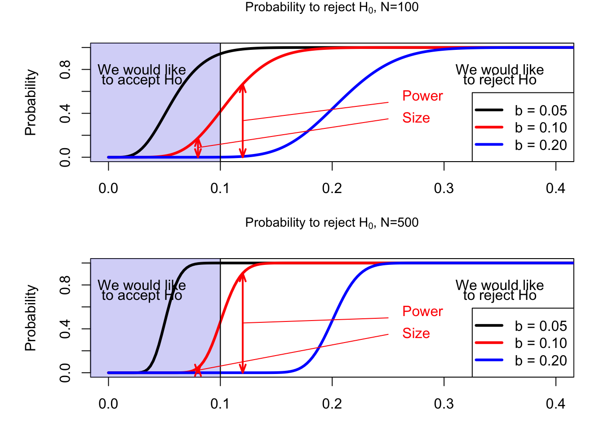
(#fig:FactoryR)Factory example.
(Alternative situations can be explored by using this web interface.)
3.3 Asymptotic properties of statistical tests
The preceding examples use a known finite-sample distribution. More often, the null distribution of a statistic is available only as a large-sample approximation, frequently through the CLT in Chapter @ref(TCL). The rejection probability may then differ from its target in a finite sample even though it approaches that target as \(n\) grows. This motivates the definition of asymptotic size.
(#def:asmyptlevel) (Asymptotic level) An asymptotic test with critical region \(\Omega_n\) has asymptotic size equal to \(\alpha\) if: \[ \limsup_{n\rightarrow\infty}\;\sup_{\theta\in\Theta_0}\mathbb{P}_\theta(S_n\in\Omega_n)=\alpha. \]
(#exm:FactAsymptlevel) (The factory example) Let us come back to the factory example (Example @ref(exm:Factory)). Because \(S_n =\bar{d}_n\), and since \(\mathbb{E}(d_i)=\theta\) and \(\mathbb{V}ar(d_i)=\theta(1-\theta)\), the CLT (Theorem @ref(thm:LindbergLevyCLT)) leads to: \[ S_n \overset{a}{\sim} \mathcal{N}\left(\theta,\frac{1}{n}\theta(1-\theta)\right) \quad \mbox{or} \quad \frac{\sqrt{n}(S_n-\theta)}{\sqrt{\theta(1-\theta)}} \overset{a}{\sim} \mathcal{N}(0,1). \]
Hence, \(\mathbb{P}_\theta (S_n \in \Omega_n)=\mathbb{P}_\theta (S_n > b) \approx 1-\Phi\left(\frac{\sqrt{n}(b-\theta)}{\sqrt{\theta(1-\theta)}}\right)\). Since function \(\theta \rightarrow 1-\Phi\left(\frac{\sqrt{n}(b-\theta)}{\sqrt{\theta(1-\theta)}}\right)\) increases w.r.t. \(\theta\), we have: \[ \underset{\theta \in \Theta=[0,0.1]}{\mbox{sup}} \quad \mathbb{P}_\theta (S_n > b_n) = \mathbb{P}_{\theta=0.1} (S_n \in \Omega_n)\approx\] \[ 1-\Phi\left(\frac{\sqrt{n}(b_n-0.1)}{0.3}\right). \] Hence, if we set \(b_n = 0.1 + 0.3\Phi^{-1}(1-\alpha)/\sqrt{n}\), we have \({\mbox{sup}}_{\theta \in \Theta=[0,0.1]} \quad \mathbb{P}_\theta (S_n > b_n) \approx \alpha\) for large values of \(n\).
Controlling asymptotic size addresses behavior under the null. Under a fixed alternative, we instead want the rejection probability to approach one. A test with this property is consistent.
(#def:asmyptconsisttest) (Asymptotically consistent test) An asymptotic test with critical region \(\Omega_n\) is consistent if: \[ \forall \theta \in \Theta^c, \quad \mathbb{P}_\theta (S_n \in \Omega_n) \rightarrow 1. \]
(#exm:FactAsymptConsist) (The factory example) Let us come back to the factory example (Example @ref(exm:Factory)). We proceed under the assumption that \(\theta>0.1\) and we consider \(b_n = b = 0.1\). We still have: \[ \mathbb{P}_\theta (S_n \in \Omega_n)=\mathbb{P}_\theta (S_n > b) \approx 1-\Phi\left(\frac{\sqrt{n}(b-\theta)}{\sqrt{\theta(1-\theta)}}\right). \]
Because \(\frac{\sqrt{n}(b-\theta)}{\sqrt{\theta(1-\theta)}} \underset{n \rightarrow \infty}{\rightarrow} -\infty\), we have \[ \mathbb{P}_\theta (S_n > b) \approx 1- \underbrace{\Phi\left(\frac{\sqrt{n}(b-\theta)}{\sqrt{\theta(1-\theta)}}\right)}_{\underset{n \rightarrow \infty}{\rightarrow} 0} \underset{n \rightarrow \infty}{\rightarrow} 1. \] Therefore, with \(b_n=b=0.1\), the test is consistent.
3.4 Example: Normality tests
The general ideas above can now be assembled in a concrete test. Gaussian assumptions support many exact finite-sample results, so it is often useful to assess whether a sample is compatible with normality. The Jarque-Bera test compares sample skewness and kurtosis with their Gaussian values. We first define these population and sample moments, then derive the test statistic and study its large-sample behavior.
Let \(f\) be the p.d.f. of \(Y\). The \(k^{th}\) standardized moment of \(Y\) is defined as: \[ \psi_k = \frac{\mu_k}{\left(\sqrt{\mathbb{V}ar(Y)}\right)^k}, \] where \(\mathbb{E}(Y)=\mu\) and \[ \mu_k = \mathbb{E}[(Y-\mu)^k]= \int_{-\infty}^{\infty} (y-\mu)^k f(y) dy \] is the \(k^{th}\) central moment of \(Y\). In particular, \(\mu_2 = \mathbb{V}ar(Y)\). Using these notations, \(\psi_k\) rewrites: \[ \psi_k = \frac{\mu_k}{\left(\mu_2^{1/2}\right)^k}, \]
The skewness of \(Y\) corresponds to \(\psi_3\) and the kurtosis to \(\psi_4\) (Def. @ref(def:skewnesskurtosis)).
(#prp:normSkewKurt) (Skewness and kurtosis of the normal distribution) For a Gaussian var., the skewness (\(\psi_3\)) is 0 and the kurtosis (\(\psi_4\)) is 3.
Proof. For a centered Gaussian distribution, \((-y)^3f(-y)=-y^3f(y)\). This implies that \[\begin{eqnarray*} \int_{-\infty}^{\infty}y^3f(y)dy&=&\int_{-\infty}^{0}y^3f(y)dy+\int_{0}^{\infty}y^3f(y)dy\\ &=&-\int_{0}^{\infty}y^3f(y)dy+\int_{0}^{\infty}y^3f(y)dy=0, \end{eqnarray*}\] which leads to the skewness result.
For the kurtosis, first standardize the variable. If \(Z\sim\mathcal{N}(0,1)\) has density \(f\), then \(f'(z)=-zf(z)\) and therefore \(\frac{d}{dz}(z^3f(z))=3z^2f(z)-z^4f(z)\). Integration over \(\mathbb{R}\) gives \(\mathbb{E}(Z^4)=3\mathbb{E}(Z^2)=3\), which is also the kurtosis of every non-degenerate Gaussian variable.
Let us now introduce the sample analog of standardized moments. The \(k^{th}\) central sample moment of \(Y\) is given by: \[ m_k = \frac{1}{n}\sum_{i=1}^n(y_i - \bar{y})^k, \] and the \(k^{th}\) standardized sample moment of \(Y\) is given by: \[ g_k = \frac{m_k}{m_2^{k/2}}. \]
(#prp:conssitCentralMoments) (Consistency of central sample moments) If the \(y_i\)’s are i.i.d. and \(\mathbb{E}(|Y|^k)<\infty\), then the sample central moment \(m_k\) is a consistent estimator of the central moment \(\mu_k\).
(#prp:Asymptg3Normal) (Asymptotic distribution of 3rd-order sample central moment of a normal distribution) If \(y_i\sim\,i.i.d.\,\mathcal{N}(\mu,\sigma^2)\), then \(\sqrt{n}g_3 \overset{d}{\rightarrow} \mathcal{N}(0,6)\).
Proof. See, e.g. Lehmann (1999).
(#prp:Asymptg4Normal) (Asymptotic distribution of 4th-order sample central moment of a normal distribution) If \(y_i\sim\,i.i.d.\,\mathcal{N}(\mu,\sigma^2)\), then \(\sqrt{n}(g_4-3) \overset{d}{\rightarrow} \mathcal{N}(0,24)\).
(#prp:Asymptg3g4Normal) (Joint asymptotic distribution of 3rd and 4th-order sample central moments of a normal distribution) If \(y_i\sim\,i.i.d.\,\mathcal{N}(\mu,\sigma^2)\), then the vector \((\sqrt{n}g_3,\sqrt{n}(g_4-3))\) is asymptotically bivariate Gaussian. Further its elements are uncorrelated (and therefore independent, because Gaussian).
The Jarque-Bera statistic is defined by: \[ JB = n \left( \frac{g_3^2}{6}+\frac{(g_4-3)^2}{24} \right) = \frac{n}{6}\left(g_3^2 + \frac{(g_4-3)^2}{4}\right). \]
(#prp:JB) (Jarque-Bera asympt. distri.) If \(y_i\sim\,i.i.d.\,\mathcal{N}(\mu,\sigma^2)\), \(JB \overset{d}{\rightarrow} \chi^2(2)\).
Proof. This directly derives from Proposition @ref(prp:Asymptg3g4Normal).
(#exm:JB-consistency) (Consistency of the Jarque-Bera normality test) This example illustrates the consistency of the JB test (see Def. @ref(def:asmyptconsisttest)).
For each simulated sample, we compute the Jarque-Bera statistic defined above.
Code
JB <- function(x){
N <- dim(x)[1] # number of samples
n <- dim(x)[2] # sample size
x.bar <- apply(x,1,mean)
x.x.bar <- x - matrix(x.bar,N,n)
m.2 <- apply(x.x.bar,1,function(x){mean(x^2)})
m.3 <- apply(x.x.bar,1,function(x){mean(x^3)})
m.4 <- apply(x.x.bar,1,function(x){mean(x^4)})
g.3 <- m.3/m.2^(3/2)
g.4 <- m.4/m.2^(4/2)
return(n*(g.3^2/6 + (g.4-3)^2/24))
}Let us first consider the case where \(H_0\) is satisfied. Figure @ref(fig:JBTest2) displays, for different sample sizes \(n\), the distribution of the JB statistics when the \(y_i\)’s are normal, consistently with \(H_0\). It appears that when \(n\) grows, the distribution indeed converges to the \(\chi^2(2)\) distribution (as stated by Proposition @ref(prp:JB)). The \(\chi^2(2)\) distribution is represented in red on each plot.
Code
all.n <- c(5,10,20,100)
nb.sim <- 10000
y <- matrix(rnorm(nb.sim*max(all.n)),nb.sim,max(all.n))
par(mfrow=c(2,2));par(plt=c(.1,.95,.15,.8))
for(i in 1:length(all.n)){
n <- all.n[i]
hist(JB(y[,1:n]),nclass = 200,freq = FALSE,
main=paste("n = ",toString(n),sep=""),xlim=c(0,10))
xx <- seq(0,10,by=.01)
lines(xx,dchisq(xx,df = 2),col="red")
}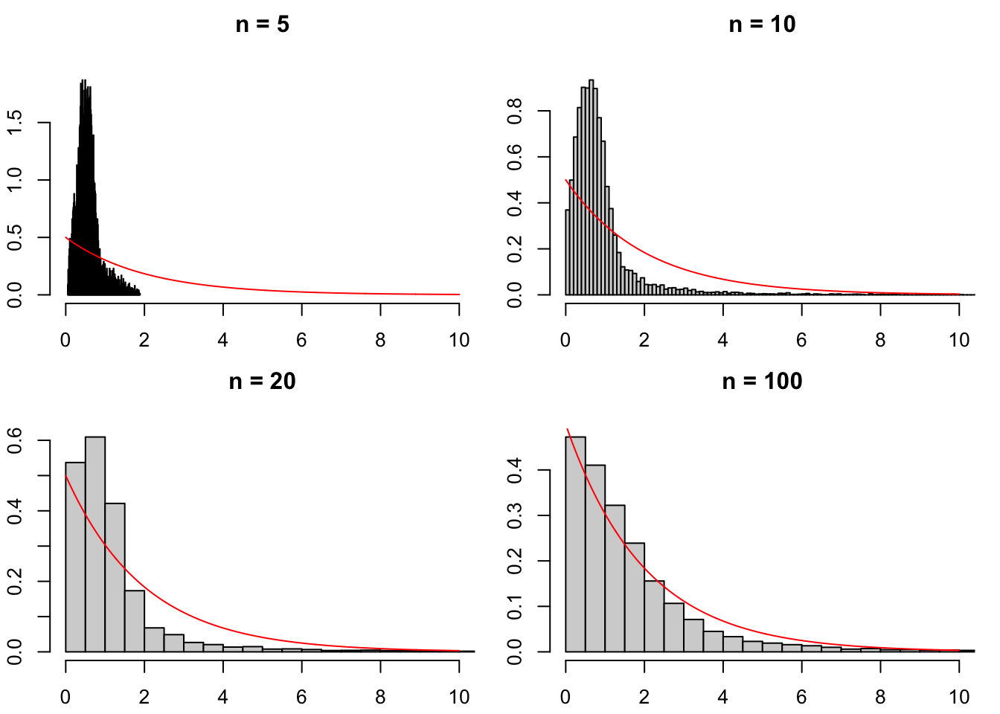
(#fig:JBTest2)Distribution of the JB test statistic under \(H_0\) (normality).
We next draw the \(y_i\)’s from a uniform distribution, so \(H_0\) is not satisfied. Figure @ref(fig:JBTest3) shows that, as \(n\) grows, the distribution of the JB statistic shifts to the right. This illustrates the consistency of the JB test (see Def. @ref(def:asmyptconsisttest)).
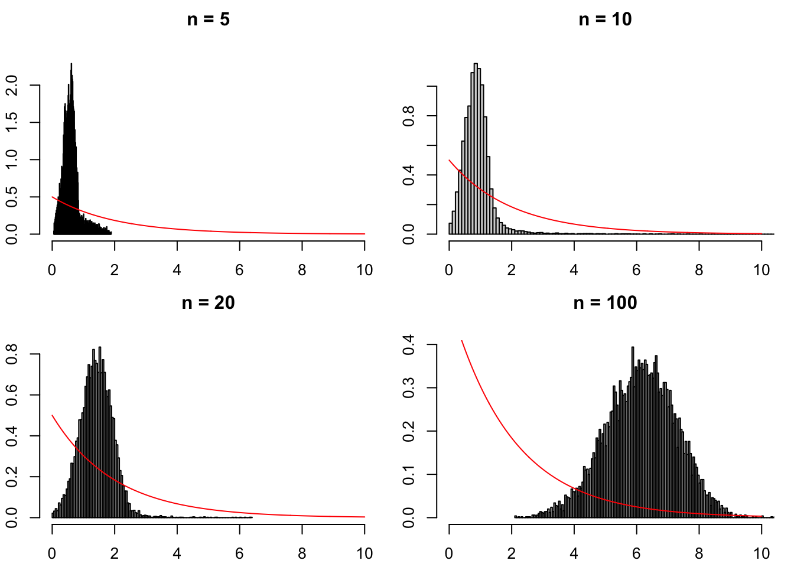
(#fig:JBTest3)Distribution of the JB test statistic when the \(y_i\)’s are drawn from a uniform distribution (hence \(H_0\) is not satisfied).
3.5 Chapter recap
- Definition @ref(def:sizepower) distinguishes the rejection probability under the null (size) from the rejection probability under an alternative (power).
- Section @ref(critical-regions) explains how the direction of evidence determines the rejection region and how a p-value summarizes the evidence against the null.
- Example @ref(exm:Factory) shows the size-power trade-off in a finite-sample decision rule.
- Definition @ref(def:asmyptlevel) extends size control to tests whose null distribution is known only asymptotically.
- Definition @ref(def:asmyptconsisttest) requires the rejection probability to converge to one under every fixed alternative.
- Proposition @ref(prp:JB) combines sample skewness and kurtosis into the asymptotic Jarque-Bera normality test.
3.6 Exercises
Attempt each question and explain your reasoning, including for true-or-false statements. Foundation exercises apply a result directly; Standard exercises require several steps or a short proof; Advanced exercises combine several results or require a longer derivation. Worked solutions and exercise-specific hints are reserved for teaching sessions and are not included in this student edition.
(#exr:tests-kurtosis-mixture) (Kurtosis of a Gaussian scale mixture) Advanced | Analytical
Review Section @ref(Tests).
Assume that \(Z|Y \sim \mathcal{N}(0, Y^2)\) and that \(Y \sim \mathcal{N}(0, \sigma^2)\).
Compute \(\mathbb{V}ar(Z)\).
Recalling that the kurtosis of a normal variable is equal to 3, compute \(\mathbb{E}(Y^4)\).
Compute \(\mathbb{E}(Z^4 | Y)\) and deduce \(\mathbb{E}(Z^4)\).
Compute the kurtosis of \(Z\).
Is \(Z\) a Gaussian variable?
(#exr:tests-normal-test-true-false) (Testing with a normal statistic: true or false?) Foundation | True or false
Review Section @ref(Tests).
For each statement, decide whether it is true or false and justify your answer.
Consider a null hypothesis \(H_0\). Under that null hypothesis, the test statistic \(z\) is \(\mathcal{N}(0, 1)\). We use a two-tail rejection region (a two-sided test in the terminology of this course) and set its size \(\alpha\) at 5%.
Using our data we get \(z = -3.2\). We reject the null hypothesis.
Under \(H_0\), the probability of making type-I errors is 5%.
The probability of making Type-II error is smaller than 5%.
The size (or level) of the test is the probability to make Type-II errors.
If I am very averse to Type-I error, I choose a low value for the size of the level.
(#exr:tests-chi-square-true-false) (Testing with a chi-squared statistic: true or false?) Foundation | True or false
Review Section @ref(Tests).
Consider a test with statistic \(z\). Under the null hypothesis (\(H_0\)), \(z\) follows a \(\chi^2(7)\) distribution (chi-squared with 7 degrees of freedom; see table below). The rejection region is in the upper tail (a one-sided test in the terminology of this course).
For each statement, decide whether it is true or false and justify your answer.
If \(z \ge 10\), we always reject the null hypothesis at the 5% significance level (test size \(\alpha=5\%\)).
If \(H_0\) is valid, and when the test size (\(\alpha\)) is 10%, the probability of making a Type I error is 10%.
The power of the test is necessarily greater than the size of the test.
Under \(H_0\), the probability of having \(-1.96<z<1.96\) is approximately 95%.
If the p-value of the test is 1.5%, we reject \(H_0\) at the 5% significance level (test size \(\alpha=5\%\)).
Use the chi-squared quantiles reported in the statistical tables of the Appendix.
(#exr:tests-power-normal-mean) (Size, power, and sample size) Standard | Calculation
Review Section @ref(size-power).
Let \(X_1,\dots,X_n\) be i.i.d. \(\mathcal{N}(\mu,4)\). Consider \(H_0:\mu=0\) against \(H_1:\mu>0\). The test rejects when \(\bar X_n>c_n\).
- For \(n=25\), choose \(c_n\) so that the test has size \(5\%\).
- Compute the power of this test when \(\mu=0.5\).
- Keeping a 5% significance level, find the smallest integer \(n\) that gives power of at least \(90\%\) when \(\mu=0.5\).
- Explain why reducing the significance level while holding \(n\) fixed reduces power at every fixed alternative \(\mu>0\).
4 Linear regressions
Prerequisites. Conditional expectations, covariance matrices, matrix algebra, statistical tests, and large-sample approximations.
After working through this chapter, you should be able to:
- Derive the OLS estimator and state the assumptions behind its main properties.
- Construct confidence intervals and tests for individual and joint restrictions.
- Diagnose multicollinearity, omitted-variable bias, and irrelevant regressors.
- Explain identification and estimation with instrumental variables.
- Select covariance estimators under heteroskedasticity, serial correlation, and clustering.
- Describe the purpose of shrinkage methods.
Roadmap. We introduce the linear model and OLS before turning to inference and common specification problems. Instrumental variables address endogenous regressors. The general regression model then accommodates non-spherical disturbances, and the final section introduces shrinkage. Section @ref(regressions-exercises) collects exercises spanning these topics.
(#def:essai) Linear regression organizes the conditional relationship between an outcome and a set of explanatory variables. Its basic specification is \[\begin{equation} y_i = \boldsymbol\beta'\mathbf{x}_{i} + \varepsilon_i,(\#eq:linearspecif) \end{equation}\] where \(\mathbf{x}_{i}=[x_{i,1},\dots,x_{i,K}]'\) is a vector of dimension \(K \times 1\).
For entity \(i\), the \(x_{i,k}\)’s, for \(k \in \{1,\dots,K\}\), are explanatory variables, regressors, or covariates. The variable of interest, \(y_i\), is often called dependent variable, or regressand. The last term of the specification, namely \(\varepsilon_i\), is called error, or disturbance.
The coefficients \(\beta_k\) summarize how the conditional mean of \(y_i\) varies with the regressors under the assumptions introduced below. We estimate them from a sample \(\{y_i,\mathbf{x}_{i}\}_{i=1}^n\), where \(n\) denotes the sample size.
To have an intercept in the specification @ref(eq:linearspecif), one has to set \(x_{i,1}=1\) for all \(i\); \(\beta_1\) then corresponds to the intercept.
4.1 Hypotheses
In this section, we introduce different assumptions regarding the covariates and/or the errors. The properties of the estimators used by the researcher depend on which of these assumptions are satisfied.
(#hyp:fullrank) (Full rank) The columns of the sample design matrix \(\mathbf{X}\) are linearly independent: \(\operatorname{rank}(\mathbf{X})=K\). In particular, this requires \(n\ge K\).
Intuitively, when Hypothesis @ref(hyp:fullrank) is violated, then the estimation of the model parameters is unfeasible since, for any value of \(\boldsymbol\beta\), some changes in the explanatory variables will be exactly compensated by other changes in another set of explanatory variables, preventing the identification of these effects.
Let us denote by \(\mathbf{X}\) the matrix containing all explanatory variables, of dimension \(n \times K\). (That is, row \(i\) of \(\mathbf{X}\) is \(\mathbf{x}_i'\).) The following hypothesis concerns the relationship between the errors (gathered in \(\boldsymbol\varepsilon\), a \(n\)-dimensional vector) and the explanatory variables \(\mathbf{X}\):
(#hyp:exogeneity) (Conditional mean-zero assumption) \[\begin{equation} \mathbb{E}(\boldsymbol\varepsilon|\mathbf{X}) = 0. \end{equation}\]
Hypothesis @ref(hyp:exogeneity) has important implications:
(#prp:implicationExog) Under Hypothesis @ref(hyp:exogeneity):
- \(\mathbb{E}(\varepsilon_{i})=0\);
- The \(x_{ij}\)’s and the \(\varepsilon_{i}\)’s have zero covariance, i.e. \(\forall i,\,j \quad \mathbb{C}ov(x_{ij},\varepsilon_{i})=0\). Their correlation is therefore zero whenever both variances are finite and non-zero.
Proof. Let us prove (i) and (ii):
- By the law of iterated expectations: \[ \mathbb{E}(\boldsymbol\varepsilon)=\mathbb{E}(\mathbb{E}(\boldsymbol\varepsilon|\mathbf{X}))=\mathbb{E}(0)=0. \]
- \(\mathbb{E}(x_{ij}\varepsilon_i)=\mathbb{E}(\mathbb{E}(x_{ij}\varepsilon_i|\mathbf{X}))=\mathbb{E}(x_{ij}\underbrace{\mathbb{E}(\varepsilon_i|\mathbf{X})}_{=0})=0\).
The next two hypotheses (@ref(hyp:homoskedasticity) and @ref(hyp:noncorrelResid)) concern the stochastic properties of the errors \(\varepsilon_i\):
(#hyp:homoskedasticity) (Homoskedasticity) \[ \forall i, \quad \mathbb{V}ar(\varepsilon_i|\mathbf{X}) = \sigma^2. \]
Figure @ref(fig:heteroskedasticity) compares two situations: Panel (a) corresponds to homoskedasticity, and Panel (b) corresponds to heteroskedasticity. More specifically, in both plots, \(X_i \sim \mathcal{N}(0,1)\) and \(\varepsilon^*_i \sim \mathcal{N}(0,1)\). In Panel (a) (homoskedasticity): \[ Y_i = 2 + 2X_i + \varepsilon^*_i. \] In Panel (b) (heteroskedasticity): \[ Y_i = 2 + 2X_i + \left(2\mathbb{I}_{\{X_i<0\}}+0.2\mathbb{I}_{\{X_i\ge0\}}\right)\varepsilon^*_i\].
Code
N <- 200
X <- rnorm(N);eps <- rnorm(N)
par(mfrow=c(1,2),plt=c(.2,.95,.2,.8))
Y <- 2 + 2*X + eps
plot(X,Y,pch=19,main="(a) Homoskedasticity",
las=1,cex.lab=.8,cex.axis=.8,cex.main=.8,)
Y <- 2 + 2*X + eps*( (X<0)*2 + (X>=0)*.2 )
plot(X,Y,pch=19,main="(b) Heteroskedasticity",
las=1,cex.lab=.8,cex.axis=.8,cex.main=.8,)
(#fig:heteroskedasticity)Homoskedasticity vs heteroskedasticity. See text for the exact specifications.
Figure @ref(fig:exmpSalarayPhDSHP) shows a real-data pattern that suggests heteroskedasticity, based on data taken from the Swiss Household Panel. The sample is restricted to persons (i) who are younger than 35 years in 2019, and (ii) who have completed at least 19 years of study. The dispersion of yearly income appears to increase with age, although the graph alone is not a formal test.
Code
##
## 8 9 10 12 13 14 16 19 21
## 70 325 350 1985 454 117 990 1263 168Code
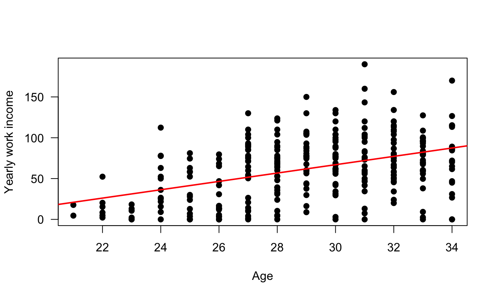
(#fig:exmpSalarayPhDSHP)Income versus age. Data are from the Swiss Household Panel. The sample is restricted to persons that have completed at least 19 years of study. The figure shows that the dispersion of yearly income increases with age.
The next assumption concerns the correlation of the errors across entities.
(#hyp:noncorrelResid) (Uncorrelated errors) \[ \forall i \ne j, \quad \mathbb{C}ov(\varepsilon_i,\varepsilon_j|\mathbf{X})=0. \]
We will often need the conditional covariance matrix of the errors. Proposition @ref(prp:Sigma) gives its form when both Hypotheses @ref(hyp:homoskedasticity) and @ref(hyp:noncorrelResid) hold.
(#prp:Sigma) If Hypotheses @ref(hyp:homoskedasticity) and @ref(hyp:noncorrelResid) hold, then: \[ \mathbb{V}ar(\boldsymbol\varepsilon|\mathbf{X})= \sigma^2 Id, \] where \(Id\) is the \(n \times n\) identity matrix.
We will sometimes assume that errors are Gaussian—or normal. We will then invoke Hypothesis @ref(hyp:normality):
(#hyp:normality) (Normal distribution) \[ \boldsymbol\varepsilon\mid\mathbf{X}\sim\mathcal{N}(\mathbf{0},\sigma^2Id_n). \]
4.2 Least-squares estimation
4.2.1 Derivation of the OLS formula
With the assumptions and notation in place, we now turn to estimation. Ordinary Least Squares (OLS) chooses the coefficient vector \(\mathbf{b}\) that minimizes the sum of squared residuals. Residuals are the sample counterparts of the unobserved errors \(\varepsilon_i\).
For a given vector of coefficients \(\mathbf{b}=[b_1,\dots,b_K]'\), the sum of squared residuals is: \[ f(\mathbf{b}) =\sum_{i=1}^n \left(y_i - \sum_{j=1}^K x_{i,j} b_j \right)^2 = \sum_{i=1}^n (y_i - \mathbf{x}_i' \mathbf{b})^2. \] Minimizing this sum amounts to minimizing: \[ f(\mathbf{b}) = (\mathbf{y} - \mathbf{X}\mathbf{b})'(\mathbf{y} - \mathbf{X}\mathbf{b}). \]
Since:4 \[ \frac{\partial f}{\partial \mathbf{b}}(\mathbf{b}) = - 2 \mathbf{X}'\mathbf{y} + 2 \mathbf{X}'\mathbf{X}\mathbf{b}, \] it comes that a necessary first-order condition (FOC) is: \[\begin{equation} \mathbf{X}'\mathbf{X}\mathbf{b} = \mathbf{X}'\mathbf{y}.(\#eq:OLSFOC) \end{equation}\] Under Assumption @ref(hyp:fullrank), \(\mathbf{X}'\mathbf{X}\) is invertible. Hence: \[ \boxed{\mathbf{b} = (\mathbf{X}'\mathbf{X})^{-1} \mathbf{X}'\mathbf{y}.} \] Vector \(\mathbf{b}\) minimizes the sum of squared residuals. (\(f\) is a non-negative quadratic function, it therefore admits a minimum.)
We have: \[ \mathbf{y} = \underbrace{\mathbf{X}\mathbf{b}}_{\mbox{fitted values } (\hat{\mathbf{y}})} + \underbrace{\mathbf{e}}_{\mbox{residuals}} \]
The estimated residuals are: \[\begin{equation} \mathbf{e} = \mathbf{y} - \mathbf{X} (\mathbf{X}'\mathbf{X})^{-1} \mathbf{X}' \mathbf{y} = \mathbf{M} \mathbf{y},(\#eq:Mres) \end{equation}\] where \(\mathbf{M} := Id - \mathbf{X} (\mathbf{X}'\mathbf{X})^{-1} \mathbf{X}'\) is called the residual maker matrix.
Moreover, the fitted values \(\hat{\mathbf{y}}\) are given by: \[\begin{equation} \hat{\mathbf{y}}=\mathbf{X} (\mathbf{X}'\mathbf{X})^{-1} \mathbf{X}' \mathbf{y} = \mathbf{P} \mathbf{y},(\#eq:Proj) \end{equation}\] where \(\mathbf{P}=\mathbf{X} (\mathbf{X}'\mathbf{X})^{-1} \mathbf{X}'\) is a projection matrix.
These matrices \(\mathbf{M}\) and \(\mathbf{P}\) are such that:
- \(\mathbf{M} \mathbf{X} = \mathbf{0}\): if one regresses one of the explanatory variables on \(\mathbf{X}\), the residuals are null.
- \(\mathbf{M}\mathbf{y}=\mathbf{M}\boldsymbol\varepsilon\) (because \(\mathbf{y} = \mathbf{X}\boldsymbol\beta + \boldsymbol\varepsilon\) and \(\mathbf{M} \mathbf{X} = \mathbf{0}\)).
Here are some additional properties of \(\mathbf{M}\) and \(\mathbf{P}\):
- \(\mathbf{M}\) is symmetric (\(\mathbf{M} = \mathbf{M}'\)) and idempotent (\(\mathbf{M} = \mathbf{M}^2 = \mathbf{M}^k\) for \(k>0\)).
- \(\mathbf{P}\) is symmetric and idempotent.
- \(\mathbf{P}\mathbf{X} = \mathbf{X}\).
- \(\mathbf{P} \mathbf{M} = \mathbf{M} \mathbf{P} = 0\).
- \(\mathbf{y} = \mathbf{P}\mathbf{y} + \mathbf{M}\mathbf{y}\) (decomposition of \(\mathbf{y}\) into two orthogonal parts).
It is easily checked that \(\mathbf{X}'\mathbf{e}=0\). Each column of \(\mathbf{X}\) is therefore orthogonal to \(\mathbf{e}\). In particular, if an intercept is included in the regression (\(x_{i,1} \equiv 1\) for all \(i\)’s, i.e., the first column of \(\mathbf{X}\) is filled with ones), the average of the residuals is null.
(#exm:bivar) (Bivariate case) Consider a bivariate situation, where we regress \(y_i\) on a constant and an explanatory variable \(w_i\). We have \(K=2\), and \(\mathbf{X}\) is a \(n \times 2\) matrix whose \(i^{th}\) row is \([x_{i,1},x_{i,2}]\), with \(x_{i,1}=1\) (to account for the intercept) and with \(w_i = x_{i,2}\) (say).
We have: \[\begin{eqnarray*} \mathbf{X}'\mathbf{X} &=& \left[\begin{array}{cc} n & \sum_i w_i \\ \sum_i w_i & \sum_i w_i^2 \end{array} \right],\\ (\mathbf{X}'\mathbf{X})^{-1} &=& \frac{1}{n\sum_i w_i^2-(\sum_i w_i)^2} \left[\begin{array}{cc} \sum_i w_i^2 & -\sum_i w_i \\ -\sum_i w_i & n \end{array} \right],\\ (\mathbf{X}'\mathbf{X})^{-1}\mathbf{X}'\mathbf{y} &=& \frac{1}{n\sum_i w_i^2-(\sum_i w_i)^2} \left[\begin{array}{c} \sum_i w_i^2\sum_i y_i -\sum_i w_i \sum_i w_iy_i \\ -\sum_i w_i \sum_i y_i + n \sum_i w_i y_i \end{array} \right]\\ &=& \frac{1}{\frac{1}{n}\sum_i(w_i - \bar{w})^2} \left[\begin{array}{c} \frac{\bar{y}}{n}\sum_i w_i^2 -\frac{\bar{w}}{n}\sum_i w_iy_i \\ \frac{1}{n}\sum_i (w_i-\bar{w})(y_i-\bar{y}) \end{array} \right]. \end{eqnarray*}\]
It can be seen that the second element of \(\mathbf{b}=(\mathbf{X}'\mathbf{X})^{-1}\mathbf{X}'\mathbf{y}\) is: \[ b_2 = \frac{\overline{\mathbb{C}ov(W,Y)}}{\overline{\mathbb{V}ar(W)}}, \] where \(\overline{\mathbb{C}ov(W,Y)}\) and \(\overline{\mathbb{V}ar(W)}\) are sample estimates.
Since there is a constant in the regression, we have \(b_1 = \bar{y} - b_2 \bar{w}\).
4.2.2 Properties of the OLS estimate (small sample)
The OLS properties stated in Proposition @ref(prp:propOLS) are valid for any sample size \(n\):
(#prp:propOLS) (Properties of the OLS estimator) We have:
Under Assumptions @ref(hyp:fullrank) and @ref(hyp:exogeneity), the OLS estimator is linear and unbiased.
Under Hypotheses @ref(hyp:fullrank) to @ref(hyp:noncorrelResid), the conditional covariance matrix of \(\mathbf{b}\) is: \(\mathbb{V}ar(\mathbf{b}|\mathbf{X}) = \sigma^2 (\mathbf{X}'\mathbf{X})^{-1}\).
Proof. Under Hypothesis @ref(hyp:fullrank), \(\mathbf{X}'\mathbf{X}\) can be inverted. We have: \[ \mathbf{b} = (\mathbf{X}'\mathbf{X})^{-1} \mathbf{X}'\mathbf{y} = \boldsymbol\beta + (\mathbf{X}'\mathbf{X})^{-1} \mathbf{X}' {\boldsymbol\varepsilon}. \]
- Let us consider the expectation of the last term, i.e. \(\mathbb{E}((\mathbf{X}'\mathbf{X})^{-1} \mathbf{X}' {\boldsymbol\varepsilon})\). Using the law of iterated expectations, we obtain: \[ \mathbb{E}((\mathbf{X}'\mathbf{X})^{-1} \mathbf{X}' {\boldsymbol\varepsilon}) = \mathbb{E}(\mathbb{E}[(\mathbf{X}'\mathbf{X})^{-1} \mathbf{X}' {\boldsymbol\varepsilon}|\mathbf{X}]) = \mathbb{E}((\mathbf{X}'\mathbf{X})^{-1} \mathbf{X}'\mathbb{E}[{\boldsymbol\varepsilon}|\mathbf{X}]). \] By Hypothesis @ref(hyp:exogeneity), we have \(\mathbb{E}[{\boldsymbol\varepsilon}|\mathbf{X}]=0\). Hence \(\mathbb{E}((\mathbf{X}'\mathbf{X})^{-1} \mathbf{X}' {\boldsymbol\varepsilon}) =0\) and result (i) follows.
- \(\mathbb{V}ar(\mathbf{b}|\mathbf{X}) = (\mathbf{X}'\mathbf{X})^{-1} \mathbf{X}' \mathbb{E}(\boldsymbol\varepsilon\boldsymbol\varepsilon'|\mathbf{X}) \mathbf{X} (\mathbf{X}'\mathbf{X})^{-1}\). By Prop. @ref(prp:Sigma), if @ref(hyp:homoskedasticity) and @ref(hyp:noncorrelResid) hold, then we have \(\mathbb{E}(\boldsymbol\varepsilon\boldsymbol\varepsilon'|\mathbf{X})=\mathbb{V}ar(\boldsymbol\varepsilon|\mathbf{X})=\sigma^2 Id\).
Together, Hypotheses @ref(hyp:fullrank) to @ref(hyp:noncorrelResid) form the so-called Gauss-Markov set of assumptions. Under these assumptions, the OLS estimator feature the lowest possible variance within the family of linear unbiased estimates of \(\boldsymbol\beta\):
(#thm:GaussMarkov) (Gauss-Markov Theorem) Under Assumptions @ref(hyp:fullrank) to @ref(hyp:noncorrelResid), for any vector \(w\), the minimum-variance linear unbiased estimator of \(w' \boldsymbol\beta\) is \(w' \mathbf{b}\), where \(\mathbf{b}\) is the least squares estimator. (BLUE: Best Linear Unbiased Estimator.)
Proof. Consider \(\mathbf{b}^* = C \mathbf{y}\), another linear unbiased estimator of \(\boldsymbol\beta\). Since it is unbiased, we must have \(\mathbb{E}(C\mathbf{y}|\mathbf{X}) = \mathbb{E}(C\mathbf{X}\boldsymbol\beta + C\boldsymbol\varepsilon|\mathbf{X}) = \boldsymbol\beta\). We have \(\mathbb{E}(C\boldsymbol\varepsilon|\mathbf{X})=C\mathbb{E}(\boldsymbol\varepsilon|\mathbf{X})=0\) (by @ref(hyp:exogeneity)). Therefore, conditional unbiasedness for every \(\boldsymbol\beta\) requires \(C\mathbf{X}=Id\). (The matrix \(C\) may depend on the observed design matrix \(\mathbf{X}\).) Let us compute \(\mathbb{V}ar(\mathbf{b^*}|\mathbf{X})\). For this, we introduce \(D = C - (\mathbf{X}'\mathbf{X})^{-1}\mathbf{X}'\), which is such that \(D\mathbf{y}=\mathbf{b}^*-\mathbf{b}\). The fact that \(C\mathbf{X}=Id\) implies that \(D\mathbf{X} = \mathbf{0}\). We have \(\mathbb{V}ar(\mathbf{b^*}|\mathbf{X}) = \mathbb{V}ar(C \mathbf{y}|\mathbf{X}) =\mathbb{V}ar(C \boldsymbol\varepsilon|\mathbf{X}) = \sigma^2CC'\) (by Assumptions @ref(hyp:homoskedasticity) and @ref(hyp:noncorrelResid), see Prop. @ref(prp:Sigma)). Using \(C=D+(\mathbf{X}'\mathbf{X})^{-1}\mathbf{X}'\) and exploiting the fact that \(D\mathbf{X} = \mathbf{0}\) leads to: \[ \mathbb{V}ar(\mathbf{b^*}|\mathbf{X}) =\sigma^2\left[(D+(\mathbf{X}'\mathbf{X})^{-1}\mathbf{X}')(D+(\mathbf{X}'\mathbf{X})^{-1}\mathbf{X}')'\right] = \mathbb{V}ar(\mathbf{b}|\mathbf{X}) + \sigma^2 \mathbf{D}\mathbf{D}'. \] Therefore, we have \[\begin{eqnarray*} &&\mathbb{V}ar(w'\mathbf{b^*}|\mathbf{X})=w'\mathbb{V}ar(\mathbf{b}|\mathbf{X})w + \sigma^2 w'\mathbf{D}\mathbf{D}'w\\ &\ge& w'\mathbb{V}ar(\mathbf{b}|\mathbf{X})w=\mathbb{V}ar(w'\mathbf{b}|\mathbf{X}). \end{eqnarray*}\]
The Frish-Waugh theorem (Theorem @ref(thm:FW)) reveals the relationship between the OLS estimator and the notion of partial correlation coefficient. Consider the linear least square regression of \(\mathbf{y}\) on \(\mathbf{X}\). We introduce the notations:
- \(\mathbf{b}^{\mathbf{y}/\mathbf{X}}\): OLS estimates of \(\boldsymbol\beta\),
- \(\mathbf{M}^{\mathbf{X}}\): residual-maker matrix of any regression on \(\mathbf{X}\) (given by \(Id - \mathbf{X} (\mathbf{X}'\mathbf{X})^{-1} \mathbf{X}'\)),
- \(\mathbf{P}^{\mathbf{X}}\): projection matrix of any regression on \(\mathbf{X}\) (given by \(\mathbf{X} (\mathbf{X}'\mathbf{X})^{-1} \mathbf{X}'\)).
Let us split the set of explanatory variables into two: \(\mathbf{X} = [\mathbf{X}_1,\mathbf{X}_2]\). With obvious notations: \(\mathbf{b}^{\mathbf{y}/\mathbf{X}}=[\mathbf{b}_1',\mathbf{b}_2']'\).
(#thm:FW) (Frisch-Waugh Theorem) We have: \[ \mathbf{b}_2 = \mathbf{b}^{\mathbf{M^{\mathbf{X}_1}y}/\mathbf{M^{\mathbf{X}_1}\mathbf{X}_2}}. \]
Proof. The minimization of the least squares leads to (these are first-order conditions, see Eq. @ref(eq:OLSFOC)): \[ \left[ \begin{array}{cc} \mathbf{X}_1'\mathbf{X}_1 & \mathbf{X}_1'\mathbf{X}_2 \\ \mathbf{X}_2'\mathbf{X}_1 & \mathbf{X}_2'\mathbf{X}_2\end{array}\right] \left[ \begin{array}{c} \mathbf{b}_1 \\ \mathbf{b}_2\end{array}\right] = \left[ \begin{array}{c} \mathbf{X}_1' \mathbf{y} \\ \mathbf{X}_2' \mathbf{y} \end{array}\right]. \] Use the first-row block of equations to solve for \(\mathbf{b}_1\) first; it comes as a function of \(\mathbf{b}_2\). Then use the second set of equations to solve for \(\mathbf{b}_2\), which leads to: \[\begin{eqnarray*} \mathbf{b}_2 &=& [\mathbf{X}_2'\mathbf{X}_2 - \mathbf{X}_2'\mathbf{X}_1(\mathbf{X}_1'\mathbf{X}_1)^{-1}\mathbf{X}_1'\mathbf{X}_2]^{-1}\mathbf{X}_2'(Id - \mathbf{X}_1(\mathbf{X}_1'\mathbf{X}_1)^{-1}\mathbf{X}_1')\mathbf{y}\\ &=& [\mathbf{X}_2' \mathbf{M}^{\mathbf{X}_1}\mathbf{X}_2]^{-1}\mathbf{X}_2'\mathbf{M}^{\mathbf{X}_1}\mathbf{y}. \end{eqnarray*}\] Using the fact that \(\mathbf{M}^{\mathbf{X}_1}\) is idempotent and symmetric leads to the result.
This suggests a second way of estimating \(\mathbf{b}_2\):
- Regress \(Y\) on \(X_1\), regress \(X_2\) on \(X_1\).
- Regress the residuals associated with the former regression on those associated with the latter regressions.
This result can be illustrated with regressions involving the number of Google searches for “parapluie” (umbrella in French). In the broad specification, we regress it on French precipitation and month dummies. Next, we deseasonalize both the dependent variable and precipitation by regressing them on the month dummies. As stated by Theorem @ref(thm:FW), regressing deseasonalized Google searches on deseasonalized precipitation gives the same coefficient as in the broad specification.
Code
library(AEC)
dummies <- as.matrix(parapluie[,4:14])
eq_all <- lm(parapluie~dummies+precip,data=parapluie)
deseas_parapluie <- lm(parapluie~dummies,data=parapluie)$residuals
deseas_precip <- lm(precip~dummies,data=parapluie)$residuals
eq_frac <- lm(deseas_parapluie~deseas_precip-1)
model_table(eq_all,eq_frac,omit=c(1:11,"Constant"),omit.stat = c("f","ser"),digits=5,
add.lines=list(c('Monthly dummy','Yes','No')))| Dependent variable: | ||
| parapluie | deseas_parapluie | |
| (1) | (2) | |
| precip | 0.13001*** | |
| (0.03594) | ||
| deseas_precip | 0.13001*** | |
| (0.03277) | ||
| Monthly dummy | Yes | No |
| Observations | 72 | 72 |
| R2 | 0.51793 | 0.18148 |
| Adjusted R2 | 0.41988 | 0.16995 |
| Note: | p<0.1; p<0.05; p<0.01 | |
When \(b_2\) is scalar (and then \(\mathbf{X}_2\) is of dimension \(n \times 1\)), Theorem @ref(thm:FW) gives the expression of the partial regression coefficient \(b_2\): \[ b_2 = \frac{\mathbf{X}_2'M^{\mathbf{X}_1}\mathbf{y}}{\mathbf{X}_2'M^{\mathbf{X}_1}\mathbf{X}_2}. \]
4.2.3 Goodness of fit
The preceding results concern the sampling properties of the coefficient estimates. We now ask a different question: how closely do the fitted values reproduce the observed outcomes within the sample?
Define the total variation in \(y\) as the sum of squared deviations (from the sample mean): \[ TSS = \sum_{i=1}^{n} (y_i - \bar{y})^2. \] We have: \[ \mathbf{y} = \mathbf{X}\mathbf{b} + \mathbf{e} = \hat{\mathbf{y}} + \mathbf{e} \] In the following, we assume that the regression includes a constant (i.e. for all \(i\), \(x_{i,1}=1\)). Denote by \(\mathbf{M}^0\) the matrix that transforms observations into deviations from sample means. Using that \(\mathbf{M}^0 \mathbf{e} = \mathbf{e}\) and that \(\mathbf{X}' \mathbf{e}=0\), we have: \[\begin{eqnarray*} \underbrace{\mathbf{y}'\mathbf{M}^0\mathbf{y}}_{\mbox{Total sum of sq.}} &=& (\mathbf{X}\mathbf{b} + \mathbf{e})' \mathbf{M}^0 (\mathbf{X}\mathbf{b} + \mathbf{e})\\ &=& \underbrace{\mathbf{b}' \mathbf{X}' \mathbf{M}^0 \mathbf{X}\mathbf{b}}_{\mbox{"Explained" sum of sq.}} + \underbrace{\mathbf{e}'\mathbf{e}}_{\mbox{Sum of sq. residuals}}\\ TSS &=& Expl.SS + SSR. \end{eqnarray*}\]
We can now define the coefficient of determination: \[\begin{equation} \boxed{\mbox{Coefficient of determination} = \frac{Expl.SS}{TSS} = 1 - \frac{SSR}{TSS} = 1 - \frac{\mathbf{e}'\mathbf{e}}{\mathbf{y}'\mathbf{M}^0\mathbf{y}}.}(\#eq:RR2) \end{equation}\]
It can be shown (Greene (2003), Section 3.5) that: \[ \mbox{Coefficient of determination} = \frac{[\sum_{i=1}^n(y_i - \bar{y})(\hat{y_i} - \bar{y})]^2}{\sum_{i=1}^n(y_i - \bar{y})^2 \sum_{i=1}^n(\hat{y_i} - \bar{y})^2}. \] That is, the \(R^2\) is the sample squared correlation between \(y\) and the (regression-implied) \(y\)’s predictions.
The higher the \(R^2\), the better the in-sample fit of a model. One has to be cautious with \(R^2\), however, because adding explanatory variables cannot reduce it. As stated by Proposition @ref(prp:chgeInR2), it may increase even when the new variable has no population relationship with the dependent variable. In the limit, \(n\) linearly independent regressors span \(\mathbb{R}^n\) and fit any \(n\)-observation outcome vector exactly, resulting in \(R^2=1\) when the usual definition is applicable.
(#prp:chgeR2) (Change in SSR when a variable is added) We have: \[\begin{equation} \mathbf{u}'\mathbf{u} = \mathbf{e}'\mathbf{e} - c^2(\mathbf{z^*}'\mathbf{z^*}) \qquad (\le \mathbf{e}'\mathbf{e}) (\#eq:uu) \end{equation}\] where (i) \(\mathbf{u}\) and \(\mathbf{e}\) are the residuals in the regressions of \(\mathbf{y}\) on \([\mathbf{X},\mathbf{z}]\) and of \(\mathbf{y}\) on \(\mathbf{X}\), respectively, (ii) \(c\) is the regression coefficient on \(\mathbf{z}\) in the former regression and where \(\mathbf{z}^*\) are the residuals in the regression of \(\mathbf{z}\) on \(\mathbf{X}\).
Proof. The OLS estimates \([\mathbf{d}',\mathbf{c}]'\) in the regression of \(\mathbf{y}\) on \([\mathbf{X},\mathbf{z}]\) satisfies (first-order cond., Eq. @ref(eq:OLSFOC)): \[ \left[ \begin{array}{cc} \mathbf{X}'\mathbf{X} & \mathbf{X}'\mathbf{z} \\ \mathbf{z}'\mathbf{X} & \mathbf{z}'\mathbf{z}\end{array}\right] \left[ \begin{array}{c} \mathbf{d} \\ c\end{array}\right] = \left[ \begin{array}{c} \mathbf{X}' \mathbf{y} \\ \mathbf{z}' \mathbf{y} \end{array}\right]. \] Hence, in particular \(\mathbf{d} = \mathbf{b} - (\mathbf{X}'\mathbf{X})^{-1}\mathbf{X}'\mathbf{z}c\), where \(\mathbf{b}\) is the OLS of \(\mathbf{y}\) on \(\mathbf{X}\). Substituting in \(\mathbf{u} = \mathbf{y} - \mathbf{X}\mathbf{d} - \mathbf{z}c\), we get \(\mathbf{u} = \mathbf{e} - \mathbf{z}^*c\). We therefore have: \[\begin{equation} \mathbf{u}'\mathbf{u} = (\mathbf{e} - \mathbf{z}^*c)'(\mathbf{e} - \mathbf{z}^*c)= \mathbf{e}'\mathbf{e} + c^2(\mathbf{z^*}'\mathbf{z^*}) - 2 c\mathbf{z^*}'\mathbf{e}.(\#eq:uuu) \end{equation}\] Now \(\mathbf{z^*}'\mathbf{e} = \mathbf{z^*}'(\mathbf{y} - \mathbf{X}\mathbf{b}) = \mathbf{z^*}'\mathbf{y}\) because \(\mathbf{z}^*\) are the residuals in an OLS regression on \(\mathbf{X}\). Since \(c = (\mathbf{z^*}'\mathbf{z^*})^{-1}\mathbf{z^*}'\mathbf{y^*}\) (by an application of Theorem @ref(thm:FW)), we have \((\mathbf{z^*}'\mathbf{z^*})c = \mathbf{z^*}'\mathbf{y^*}\) and, therefore, \(\mathbf{z^*}'\mathbf{e} = (\mathbf{z^*}'\mathbf{z^*})c\). Substituting this expression into Eq. @ref(eq:uuu) proves the result.
(#prp:chgeInR2) (Change in the coefficient of determination when a variable is added) Denoting by \(R_W^2\) the coefficient of determination in the regression of \(\mathbf{y}\) on some variable \(\mathbf{W}\), we have: \[ R_{\mathbf{X},\mathbf{z}}^2 = R_{\mathbf{X}}^2 + (1-R_{\mathbf{X}}^2)(r_{yz}^\mathbf{X})^2, \] where \(r_{yz}^\mathbf{X}\) is the coefficient of partial correlation (see Definition @ref(def:partialcorrel)).
Proof. Using the notation of Proposition @ref(prp:chgeR2), Theorem @ref(thm:FW) implies that \(c = (\mathbf{z^*}'\mathbf{z^*})^{-1}\mathbf{z^*}'\mathbf{y^*}\). Substitution into Eq. @ref(eq:uu) gives \(\mathbf{u}'\mathbf{u} = \mathbf{e}'\mathbf{e} - (\mathbf{z^*}'\mathbf{y^*})^2/(\mathbf{z^*}'\mathbf{z^*})\). By the definition of partial correlation in Eq. @ref(eq:pc), \(\mathbf{u}'\mathbf{u} = \mathbf{e}'\mathbf{e}\left(1 - (r_{yz}^\mathbf{X})^2\right)\). Dividing both sides by \(\mathbf{y}'\mathbf{M}_0\mathbf{y}\) proves the result.
Figure @ref(fig:R2issue), below, illustrates the fact that one can obtain an \(R^2\) of one by regressing a sample of length \(n\) on any set of \(n\) linearly-independent variables.
Code
n <- 30;Y <- rnorm(n);X <- matrix(rnorm(n^2),n,n)
all_R2 <- NULL;all_adjR2 <- NULL
for(j in 0:(n-1)){
if(j==0){eq <- lm(Y~1)}else{eq <- lm(Y~X[,1:j])}
all_R2 <- c(all_R2,summary(eq)$r.squared)
all_adjR2 <- c(all_adjR2,summary(eq)$adj.r.squared)
}
par(plt=c(.15,.95,.25,.95))
plot(all_R2,pch=19,ylim=c(min(all_adjR2,na.rm = TRUE),1),
xlab="number of regressors",ylab="R2")
points(all_adjR2,pch=3);abline(h=0,col="light grey",lwd=2)
legend("topleft",c("R2","Adjusted R2"),
lty=NaN,col=c("black"),pch=c(19,3),lwd=2)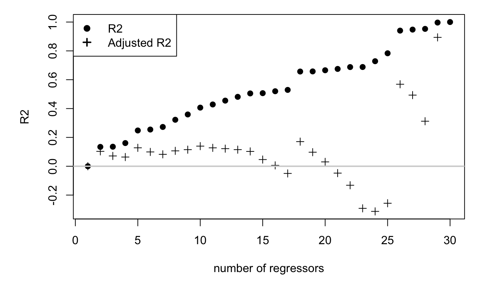
(#fig:R2issue)This figure illustrates the monotonous increase in the \(R^2\) as a function of the number of explanatory variables. In the true model, there is no explanatory variables, i.e., \(y_i = \varepsilon_i\). We then take (independent) regressors and regress \(y\) on the latter, progressively increasing the set of regressors.
In order to address the risk of adding irrelevant explanatory variables, measures of adjusted \(R^2\) have been proposed. Compared to the standard \(R^2\), these measures add penalties that depend on the number of covariates employed in the regression. A common adjusted \(R^2\) measure, denoted by \(\bar{R}^2\), is the following: \[\begin{equation*} \boxed{\bar{R}^2 = 1 - \frac{\mathbf{e}'\mathbf{e}/(n-K)}{\mathbf{y}'\mathbf{M}^0\mathbf{y}/(n-1)} = 1 - \frac{n-1}{n-K}(1-R^2).} \end{equation*}\]
4.2.4 Inference and confidence intervals (in small sample)
Good fit does not by itself imply precise coefficient estimates. Inference requires the sampling distribution of \(\mathbf{b}\), which is available exactly under the Gaussian assumptions stated above.
Under the normality assumption (Assumption @ref(hyp:normality)), we know the distribution of \(\mathbf{b}\) (conditional on \(\mathbf{X}\)). Indeed, \(\mathbf{b} = \boldsymbol\beta + (\mathbf{X}'\mathbf{X})^{-1} \mathbf{X}'\boldsymbol\varepsilon\). Therefore, conditional on \(\mathbf{X}\), vector \(\mathbf{b}\) is an affine combination of Gaussian variables—the components of \(\boldsymbol\varepsilon\). As a result, it is also Gaussian. Its distribution is therefore completely characterized by its mean and variance, and we have: \[\begin{equation} \mathbf{b}|\mathbf{X} \sim \mathcal{N}(\boldsymbol\beta,\sigma^2(\mathbf{X}'\mathbf{X})^{-1}).(\#eq:distriBcondi) \end{equation}\]
Eq. @ref(eq:distriBcondi) can be used to conduct inference and tests. However, in practice, we do not know \(\sigma^2\) (which is a population parameter). The following proposition gives an unbiased estimate of \(\sigma^2\).
(#prp:expects2) Under @ref(hyp:fullrank) to @ref(hyp:noncorrelResid), an unbiased estimate of \(\sigma^2\) is given by: \[\begin{equation} s^2 = \frac{\mathbf{e}'\mathbf{e}}{n-K}.(\#eq:s2) \end{equation}\] (It is sometimes denoted by \(\sigma^2_{OLS}\).)
Proof. We have: \[\begin{eqnarray*} \mathbb{E}(\mathbf{e}'\mathbf{e}|\mathbf{X})&=&\mathbb{E}(\boldsymbol{\varepsilon}'\mathbf{M}\boldsymbol{\varepsilon}|\mathbf{X})=\mathbb{E}(\mbox{Tr}(\boldsymbol{\varepsilon}'\mathbf{M}\boldsymbol{\varepsilon})|\mathbf{X}))\\ &=&\mbox{Tr}(\mathbf{M}\mathbb{E}(\boldsymbol{\varepsilon}\boldsymbol{\varepsilon}'|\mathbf{X}))=\sigma^2 \mbox{Tr}(\mathbf{M}). \end{eqnarray*}\] (Note that we have \(\mathbb{E}(\boldsymbol{\varepsilon}\boldsymbol{\varepsilon}'|\mathbf{X})=\sigma^2Id\) by Assumptions @ref(hyp:homoskedasticity) and @ref(hyp:noncorrelResid), see Prop. @ref(prp:Sigma).) Moreover: \[\begin{eqnarray*} \mbox{Tr}(\mathbf{M})&=&n-\mbox{Tr}(\mathbf{X}(\mathbf{X}'\mathbf{X})^{-1}\mathbf{X}')\\ &=&n-\mbox{Tr}((\mathbf{X}'\mathbf{X})^{-1}\mathbf{X}'\mathbf{X})=n-\mbox{Tr}(Id_{K \times K}), \end{eqnarray*}\] which leads to the result.
Two results will prove important to produce inference:
- We know the conditional distribution of \(s^2\) (Prop. @ref(prp:s2distri)).
- \(s^2\) and \(\mathbf{b}\) are independent random variables (Prop. @ref(prp:indeps2b)).
(#prp:s2distri) Under @ref(hyp:fullrank) to @ref(hyp:normality), we have: \(\dfrac{s^2}{\sigma^2} | \mathbf{X} \sim \frac{1}{n-K}\chi^2(n-K)\).
Proof. We have \(\mathbf{e}'\mathbf{e}=\boldsymbol\varepsilon'\mathbf{M}\boldsymbol\varepsilon\). \(\mathbf{M}\) is an idempotent symmetric matrix. Therefore it can be decomposed as \(PDP'\) where \(D\) is a diagonal matrix and \(P\) is an orthogonal matrix. As a result \(\mathbf{e}'\mathbf{e} = (P'\boldsymbol\varepsilon)'D(P'\boldsymbol\varepsilon)\), i.e. \(\mathbf{e}'\mathbf{e}\) is a weighted sum of independent squared Gaussian variables (the entries of \(P'\boldsymbol\varepsilon\) are independent because they are Gaussian —under @ref(hyp:normality)— and uncorrelated). The variance of each of these i.i.d. Gaussian variable is \(\sigma^2\). Because \(\mathbf{M}\) is an idempotent symmetric matrix, its eigenvalues are either 0 or 1, and its rank equals its trace (see Propositions @ref(prp:rootsidempotent) and @ref(prp:chi2idempotent)). Further, its trace is equal to \(n-K\) (see proof of Eq. @ref(eq:s2)). Therefore \(D\) has \(n-K\) entries equal to 1 and \(K\) equal to 0. Hence, \(\mathbf{e}'\mathbf{e} = (P'\boldsymbol\varepsilon)'D(P'\boldsymbol\varepsilon)\) is a sum of \(n-K\) squared independent Gaussian variables of variance \(\sigma^2\). Therefore \(\frac{\mathbf{e}'\mathbf{e}}{\sigma^2} = (n-K)\frac{s^2}{\sigma^2}\) is a sum of \(n-k\) squared i.i.d. standard normal variables. The result follows by the definition of the chi-square distribution (see Def. @ref(def:chi2)).
(#prp:indeps2b) Under Hypotheses @ref(hyp:fullrank) to @ref(hyp:normality), \(\mathbf{b}\) and \(s^2\) are independent.
Proof. We have \(\mathbf{b}=\boldsymbol\beta + [\mathbf{X}'{\mathbf{X}}]^{-1}\mathbf{X}'\boldsymbol\varepsilon\) and \(s^2 = \boldsymbol\varepsilon' \mathbf{M} \boldsymbol\varepsilon/(n-K)\). Hence \(\mathbf{b}\) is an affine combination of \(\boldsymbol\varepsilon\) and \(s^2\) is a quadratic combination of the same Gaussian shocks. One can write \(s^2\) as \(s^2 = (\mathbf{M}\boldsymbol\varepsilon)' \mathbf{M} \boldsymbol\varepsilon/(n-K)\) and \(\mathbf{b}\) as \(\boldsymbol\beta + \mathbf{T}\boldsymbol\varepsilon\). Since \(\mathbf{T}\mathbf{M}=0\), \(\mathbf{T}\boldsymbol\varepsilon\) and \(\mathbf{M}\boldsymbol\varepsilon\) are independent (because two uncorrelated Gaussian variables are independent), therefore \(\mathbf{b}\) and \(s^2\), which are functions of two sets of independent variables, are independent.
Consistently with Eq. @ref(eq:distriBcondi), under Hypotheses @ref(hyp:fullrank) to @ref(hyp:normality), the \(k^{th}\) entry of \(\mathbf{b}\) satisfies: \[ b_k | \mathbf{X} \sim \mathcal{N}(\beta_k,\sigma^2 v_k), \] where \(v_k\) is the k\(^{th}\) component of the diagonal of \((\mathbf{X}'\mathbf{X})^{-1}\).
Moreover, we have (Prop. @ref(prp:s2distri)): \[ \frac{(n-K)s^2}{\sigma^2} | \mathbf{X} \sim \chi ^2 (n-K). \]
As a result (using Propositions @ref(prp:s2distri) and @ref(prp:indeps2b)), we have: \[\begin{equation} \boxed{t_k = \frac{\frac{b_k - \beta_k}{\sqrt{\sigma^2 v_k}}}{\sqrt{\frac{(n-K)s^2}{\sigma^2(n-K)}}} = \frac{b_k - \beta_k}{\sqrt{s^2v_k}} \sim t(n-K),}(\#eq:resultstudentt) \end{equation}\] where \(t(n-K)\) denotes a Student \(t\) distribution with \(n-K\) degrees of freedom (see Def. @ref(def:tStudent)).5
Note that \(s^2 v_k\) is not exactly the conditional variance of \(b_k\): The variance of \(b_k\) conditional on \(\mathbf{X}\) is \(\sigma^2 v_k\). However \(s^2 v_k\) is an unbiased estimate of \(\sigma^2 v_k\) (by Prop. @ref(prp:expects2)).
The previous result (Eq. @ref(eq:resultstudentt)) can be extended to any linear combinations of elements of \(\mathbf{b}\). (Eq. @ref(eq:resultstudentt) is for its \(k^{th}\) component only.) Let us consider \(\boldsymbol\alpha'\mathbf{b}\), the OLS estimate of \(\boldsymbol\alpha'\boldsymbol\beta\). From Eq. @ref(eq:distriBcondi), we have: \[ \boldsymbol\alpha'\mathbf{b} | \mathbf{X} \sim \mathcal{N}(\boldsymbol\alpha'\boldsymbol\beta,\sigma^2 \boldsymbol\alpha'(\mathbf{X}'\mathbf{X})^{-1}\boldsymbol\alpha). \] Therefore: \[ \frac{\boldsymbol\alpha'\mathbf{b} - \boldsymbol\alpha'\boldsymbol\beta}{\sqrt{\sigma^2 \boldsymbol\alpha'(\mathbf{X}'\mathbf{X})^{-1}\boldsymbol\alpha}} | \mathbf{X} \sim \mathcal{N}(0,1). \] Using the same approach as the one used to derive Eq. @ref(eq:resultstudentt), one can show that Props. @ref(prp:s2distri) and @ref(prp:indeps2b) also imply that: \[\begin{equation} \boxed{\frac{\boldsymbol\alpha'\mathbf{b} - \boldsymbol\alpha'\boldsymbol\beta}{\sqrt{s^2\boldsymbol\alpha'(\mathbf{X}'\mathbf{X})^{-1}\boldsymbol\alpha}} \sim t(n-K).}(\#eq:resultstudentt2) \end{equation}\]

(#fig:chartStudent)The higher the degree of freedom, the closer the distribution of \(t(\nu)\) gets to the normal distribution. (Convergence in distribution.)
Equation @ref(eq:resultstudentt) turns the distance between \(b_k\) and \(\beta_k\) into a probability statement and therefore supports confidence intervals and tests. For example, if \(\sqrt{v_k s^2}=1\) and \(n-K=10\), the probability that \(b_k\) lies below \(\beta_k-\) 4.587 \(\times \sqrt{v_k s^2}\) or above \(\beta_k+\) 4.587 \(\times \sqrt{v_k s^2}\) is 0.1%.
That means for instance that, under the assumption that \(\beta_k=0\), it would be extremely unlikely to have obtained \(b_k/\sqrt{v_k s^2}\) smaller than -4.587 or larger than 4.587. More generally, this shows that the t-statistic, i.e., the ratio \(b_k/\sqrt{v_k s^2}\), is the test statistic associated with the null hypothesis: \[ H_0: \beta_k=0. \] Under the null hypothesis, the test statistic follows a Student-t distribution with \(n-K\) degrees of freedom. The t-statistic is therefore of particular importance, and, as a result, it is routinely reported in regression outputs (see Example @ref(exm:SHP0001)).
(#exm:SHP0001) (Education and income) Consider regression that aims at determining covariates of households’ income. This example makes use of data from the Swiss Household Panel (SHP); edyear19 is the number of years of education and age19 is the age of the respondent, as of 2019.
Code
| Term | Estimate | Std. Error | t value | Pr(>|t|) |
|---|---|---|---|---|
| (Intercept) | -71.974 | 5.708 | -12.609 | <0.001 |
| edyear19 | 4.844 | 0.217 | 22.300 | <0.001 |
| age19 | 3.239 | 0.218 | 14.830 | <0.001 |
| I(age19^2) | -0.029 | 0.002 | -13.842 | <0.001 |
| female | -31.809 | 1.458 | -21.820 | <0.001 |
The last two columns of the previous table give the t-statistic and the p-values associated with t-tests, whose size-\(\alpha\) critical region is: \[ \left]-\infty,-\Phi^{-1}_{t(n-K)}\left(1-\frac{\alpha}{2}\right)\right] \cup \left[\Phi^{-1}_{t(n-K)}\left(1-\frac{\alpha}{2}\right),+\infty\right[. \]
We recall that the p-value is defined as the probability that \(|Z| > |t|\), where \(t\) is the (computed) t-statistics and where \(Z \sim t(n-K)\). That is, in the context of the t-test, the p-value is given by \(2(1 - \Phi_{t(n-K)}(|t_k|))\). See this webpage for details regarding the link between critical regions, p-value, and test outcomes.
Now, suppose we want to compute a (symmetrical) confidence interval \([I_{d,1-\alpha},I_{u,1-\alpha}]\) that is such that \(\mathbb{P}(\beta_k \in [I_{d,1-\alpha},I_{u,1-\alpha}])=1-\alpha\). That is, we want to have: \(\mathbb{P}(\beta_k < I_{d,1-\alpha})=\frac{\alpha}{2}\) and \(\mathbb{P}(\beta_k > I_{u,1-\alpha})=\frac{\alpha}{2}\). Let us focus on \(I_{d,1-\alpha}\) to start with. Using Eq. @ref(eq:resultstudentt), i.e., \(t_k = \frac{b_k - \beta_k}{\sqrt{s^2v_k}} \sim t(n-K)\), we have: \[\begin{eqnarray*} \mathbb{P}(\beta_k < I_{d,1-\alpha})=\frac{\alpha}{2} &\Leftrightarrow& \\ \mathbb{P}\left(\frac{b_k - \beta_k}{\sqrt{s^2v_k}} > \frac{b_k - I_{d,1-\alpha}}{\sqrt{s^2v_k}}\right)=\frac{\alpha}{2} &\Leftrightarrow& \mathbb{P}\left(t_k > \frac{b_k - I_{d,1-\alpha}}{\sqrt{s^2v_k}}\right)=\frac{\alpha}{2} \Leftrightarrow\\ 1 - \mathbb{P}\left(t_k \le \frac{b_k - I_{d,1-\alpha}}{\sqrt{s^2v_k}}\right)=\frac{\alpha}{2} &\Leftrightarrow& \frac{b_k - I_{d,1-\alpha}}{\sqrt{s^2v_k}} = \Phi^{-1}_{t(n-K)}\left(1-\frac{\alpha}{2}\right), \end{eqnarray*}\] where \(\Phi_{t(n-K)}(\alpha)\) is the c.d.f. of the \(t(n-K)\) distribution (Table @ref(tab:Student)).
Doing the same for \(I_{u,1-\alpha}\), we obtain: \[\begin{eqnarray*} &&[I_{d,1-\alpha},I_{u,1-\alpha}] =\\ &&\left[b_k - \Phi^{-1}_{t(n-K)}\left(1-\frac{\alpha}{2}\right)\sqrt{s^2v_k},b_k + \Phi^{-1}_{t(n-K)}\left(1-\frac{\alpha}{2}\right)\sqrt{s^2v_k}\right]. \end{eqnarray*}\]
Using the results presented in Example @ref(exm:SHP0001), we can compute lower and upper bounds of 95% confidence intervals for the estimated parameters as follows:
Code
| Term | Lower 95% | Upper 95% |
|---|---|---|
| (Intercept) | -83.164 | -60.783 |
| edyear19 | 4.418 | 5.270 |
| age19 | 2.811 | 3.667 |
| I(age19^2) | -0.033 | -0.025 |
| female | -34.667 | -28.951 |
4.2.5 Testing a set of linear restrictions
A t-test concerns one coefficient or one linear combination. Many economic hypotheses impose several restrictions at once, so we next test whether \(J\) linear restrictions are jointly consistent with the data: \[\begin{equation}\label{eq:restrictions} \begin{array}{ccc} r_{1,1} \beta_1 + \dots + r_{1,K} \beta_K &=& q_1\\ \vdots && \vdots\\ r_{J,1} \beta_1 + \dots + r_{J,K} \beta_K &=& q_J. \end{array} \end{equation}\] In matrix form, we get: \[\begin{equation} \mathbf{R}\boldsymbol\beta = \mathbf{q}. \end{equation}\]
Define the discrepancy vector \(\mathbf{m} = \mathbf{R}\mathbf{b} - \mathbf{q}\). Under the null hypothesis: \[\begin{eqnarray*} \mathbb{E}(\mathbf{m}|\mathbf{X}) &=& \mathbf{R}\boldsymbol\beta - \mathbf{q} = 0 \quad \mbox{and} \\ \mathbb{V}ar(\mathbf{m}|\mathbf{X}) &=& \mathbf{R} \mathbb{V}ar(\mathbf{b}|\mathbf{X}) \mathbf{R}'. \end{eqnarray*}\]
With these notations, the assumption to test is: \[\begin{equation} \boxed{H_0: \mathbf{R}\boldsymbol\beta - \mathbf{q} = 0 \mbox{ against } H_1: \mathbf{R}\boldsymbol\beta - \mathbf{q} \ne 0.}(\#eq:H0Ftest) \end{equation}\]
Under Hypotheses @ref(hyp:fullrank) to @ref(hyp:noncorrelResid), we have \(\mathbb{V}ar(\mathbf{m}|\mathbf{X}) = \sigma^2 \mathbf{R} (\mathbf{X}'\mathbf{X})^{-1} \mathbf{R}'\) (see Prop. @ref(prp:propOLS)). If we add the normality assumption (Hypothesis @ref(hyp:normality)), we have: \[\begin{equation} W = \mathbf{m}'\mathbb{V}ar(\mathbf{m}|\mathbf{X})^{-1}\mathbf{m} \sim \chi^2(J). (\#eq:W1) \end{equation}\]
If \(\sigma^2\) was known, we could then conduct a Wald test (directly exploiting Eq. @ref(eq:W1)). But this is not the case in practice and we cannot compute \(W\). We can, however, approximate it be replacing \(\sigma^2\) by \(s^2\) (given in Eq. @ref(eq:s2)). The distribution of this new statistic is not \(\chi^2(J)\) any more; it is an \(\mathcal{F}\) distribution (whose quantiles are shown in Table @ref(tab:Fstat)), and the test is called \(F\) test.
(#prp:Ftest1) Under Hypotheses @ref(hyp:fullrank) to @ref(hyp:normality) and if Eq. @ref(eq:H0Ftest) holds, we have: \[\begin{equation} F = \frac{W}{J}\frac{\sigma^2}{s^2} = \frac{\mathbf{m}'(\mathbf{R}(\mathbf{X}'\mathbf{X})^{-1}\mathbf{R}')^{-1}\mathbf{m}}{s^2J} \sim \mathcal{F}(J,n-K),(\#eq:defFstatistics) \end{equation}\] where \(\mathcal{F}\) is the distribution of the F-statistic (see Def. @ref(def:fstatistics)).
Proof. According to Eq. @ref(eq:W1), \(W/J \sim \chi^2(J)/J\). Moreover, the denominator (\(s^2/\sigma^2\)) is \(\sim \chi^2(n-K)\). Therefore, \(F\) is the ratio of a r.v. distributed as \(\chi^2(J)/J\) and another distributed as \(\chi^2(n-K)/(n-K)\). It remains to verify that these r.v. are independent. Under \(H_0\), we have \(\mathbf{m} = \mathbf{R}(\mathbf{b}-\boldsymbol\beta) = \mathbf{R}(\mathbf{X}'\mathbf{X})^{-1}\mathbf{X}'\boldsymbol\varepsilon\). Therefore \(\mathbf{m}'(\mathbf{R}(\mathbf{X}'\mathbf{X})^{-1}\mathbf{R}')^{-1}\mathbf{m}\) is of the form \(\boldsymbol\varepsilon'\mathbf{T}\boldsymbol\varepsilon\) with \(\mathbf{T}=\mathbf{D}'\mathbf{C}\mathbf{D}\) where \(\mathbf{D}=\mathbf{R}(\mathbf{X}'\mathbf{X})^{-1}\mathbf{X}'\) and \(\mathbf{C}=(\mathbf{R}(\mathbf{X}'\mathbf{X})^{-1}\mathbf{R}')^{-1}\). Under Hypotheses @ref(hyp:fullrank) to @ref(hyp:noncorrelResid), the covariance between \(\mathbf{T}\boldsymbol\varepsilon\) and \(\mathbf{M}\boldsymbol\varepsilon\) is \(\sigma^2\mathbf{T}\mathbf{M} = \mathbf{0}\). Therefore, under @ref(hyp:normality), these variables are Gaussian variables with 0 covariance. Hence they are independent.
For large \(n-K\), the \(\mathcal{F}_{J,n-K}\) distribution converges to \(\mathcal{F}_{J,\infty}=\chi^2(J)/J\). This implies that, in large samples, the F-statistic approximately has a \(\chi^2\) distribution. In other words, one can approximately employ Eq. @ref(eq:W1) to perform a Wald test (one just has to replace \(\sigma^2\) with \(s^2\) when computing \(\mathbb{V}ar(\mathbf{m}|\mathbf{X})\)).
The following proposition proposes another equivalent computation of the F-statistic, based on the \(R^2\) of the restricted and unrestricted linear models.
(#prp:Ftest) The F-statistic defined by Eq. @ref(eq:defFstatistics) is also equal to: \[\begin{equation} F = \frac{(R^2-R_*^2)/J}{(1-R^2)/(n-K)} = \frac{(SSR_{restr}-SSR_{unrestr})/J}{SSR_{unrestr}/(n-K)},(\#eq:defFstatistics2) \end{equation}\] where \(R_*^2\) is the coef. of determination (Eq. @ref(eq:RR2)) of the “restricted regression” (SSR: sum of squared residuals.)
Proof. Let’s denote by \(\mathbf{e}_*=\mathbf{y}-\mathbf{X}\mathbf{b}_*\) the vector of residuals associated to the restricted regression (i.e. \(\mathbf{R}\mathbf{b}_*=\mathbf{q}\)). We have \(\mathbf{e}_*=\mathbf{e} - \mathbf{X}(\mathbf{b}_*-\mathbf{b})\). Using \(\mathbf{e}'\mathbf{X}=0\), we get \(\mathbf{e}_*'\mathbf{e}_*=\mathbf{e}'\mathbf{e} + (\mathbf{b}_*-\mathbf{b})'\mathbf{X}'\mathbf{X}(\mathbf{b}_*-\mathbf{b}) \ge \mathbf{e}'\mathbf{e}\).
By Proposition @ref(prp:constrainedLS) (in Appendix @ref(LinAlgebra)), we have: \(\mathbf{b}_*-\mathbf{b}=-(\mathbf{X}'\mathbf{X})^{-1} \mathbf{R}'\{\mathbf{R}(\mathbf{X}'\mathbf{X})^{-1}\mathbf{R}'\}^{-1}(\mathbf{R}\mathbf{b} - \mathbf{q})\). Therefore: \[ \mathbf{e}_*'\mathbf{e}_* - \mathbf{e}'\mathbf{e} = (\mathbf{R}\mathbf{b} - \mathbf{q})'[\mathbf{R}(\mathbf{X}'\mathbf{X})^{-1}\mathbf{R}']^{-1}(\mathbf{R}\mathbf{b} - \mathbf{q}). \] This implies that the F statistic defined in Prop. @ref(prp:Ftest1) is also equal to: \[ \frac{(\mathbf{e}_*'\mathbf{e}_* - \mathbf{e}'\mathbf{e})/J}{\mathbf{e}'\mathbf{e}/(n-K)}, \] which leads to the result.
The null hypothesis \(H_0\) (Eq. @ref(eq:H0Ftest)) of the F-test is rejected if \(F\) —defined by Eq. @ref(eq:defFstatistics) or @ref(eq:defFstatistics2)— is higher than \(\mathcal{F}_{1-\alpha}(J,n-K)\). (Hence, this test is a one-sided test.)
4.2.6 Large-sample properties
Exact t and F distributions rely on Gaussian errors. When normality is relaxed, large-sample approximations provide a second route to inference.
To begin with, we proceed under Hypothesis @ref(hyp:fullrank) to @ref(hyp:noncorrelResid). (We will see, later on, how to deal with —partial— relaxations of Hypothesis @ref(hyp:homoskedasticity) and @ref(hyp:noncorrelResid).)
Under regularity assumptions, and under Hypotheses @ref(hyp:fullrank) to @ref(hyp:noncorrelResid), even if the residuals are not normally-distributed, the least square estimators can be asymptotically normal and inference can be performed in the same way as in small samples when Hypotheses @ref(hyp:fullrank) to @ref(hyp:normality) hold. This derives from Prop. @ref(prp:asymptOLS) (below). The F-test (Prop. @ref(prp:Ftest)) and the t-test (Eq. @ref(eq:resultstudentt)) can then be performed.
(#prp:asymptOLS) Under Assumptions @ref(hyp:fullrank) to @ref(hyp:noncorrelResid), suppose that the \((\mathbf{x}_i,\varepsilon_i)\) are i.i.d. with the finite moments required below and that: \[\begin{equation} Q = \mbox{plim}_{n \rightarrow \infty} \frac{\mathbf{X}'\mathbf{X}}{n},(\#eq:Qasympt) \end{equation}\] where \(Q\) is positive definite. Then: \[\begin{equation} \sqrt{n}(\mathbf{b} - \boldsymbol\beta)\overset{d} {\rightarrow} \mathcal{N}\left(0,\sigma^2Q^{-1}\right).(\#eq:convgceOLS) \end{equation}\]
Proof. Since \(\mathbf{b} = \boldsymbol\beta + \left( \frac{\mathbf{X}'\mathbf{X}}{n}\right)^{-1}\left(\frac{\mathbf{X}'\boldsymbol\varepsilon}{n}\right)\), we have: \(\sqrt{n}(\mathbf{b} - \boldsymbol\beta) = \left( \frac{\mathbf{X}'\mathbf{X}}{n}\right)^{-1} \left(\frac{1}{\sqrt{n}}\right)\mathbf{X}'\boldsymbol\varepsilon\). Since \(f:A \rightarrow A^{-1}\) is a continuous function (for \(A \ne \mathbf{0}\)), \(\mbox{plim}_{n \rightarrow \infty} \left(\frac{\mathbf{X}'\mathbf{X}}{n}\right)^{-1} = \mathbf{Q}^{-1}\) (see Prop. @ref(prp:Slutsky)). Let us denote by \(V_i\) the vector \(\mathbf{x}_i \varepsilon_i\). Because the \((\mathbf{x}_i,\varepsilon_i)\)’s are independent, the \(V_i\)’s are independent as well. Their covariance matrix is \(\sigma^2\mathbb{E}(\mathbf{x}_i \mathbf{x}_i')=\sigma^2Q\). Applying the multivariate central limit theorem on vectors \(V_i\) gives \(\sqrt{n}\left(\frac{1}{n}\sum_{i=1}^n \mathbf{x}_i \varepsilon_i\right) = \left(\frac{1}{\sqrt{n}}\right)\mathbf{X}'\boldsymbol\varepsilon \overset{d}{\rightarrow} \mathcal{N}(0,\sigma^2Q)\). An application of Slutsky’s theorem (Prop. @ref(prp:Slutsky)) then leads to the results.
In practice, \(\sigma^2\) is approximated by \(s^2=\frac{\mathbf{e}'\mathbf{e}}{n-K}\) (Eq. @ref(eq:s2)) and \(\mathbf{Q}^{-1}\) by \(\left(\frac{\mathbf{X}'\mathbf{X}}{n}\right)^{-1}\). That is, the covariance matrix of the estimator is approximated by: \[\begin{equation} \boxed{\widehat{\mathbb{V}ar}(\mathbf{b}) = s^2 (\mathbf{X}'\mathbf{X})^{-1}.}(\#eq:sXX) \end{equation}\]
Eqs. @ref(eq:Qasympt) and @ref(eq:convgceOLS) respectively correspond to convergences in probability and in distribution (see Definitions @ref(def:convergenceproba) and @ref(def:cvgceDistri), respectively).
4.3 Common pitfalls in linear regressions
The preceding theory clarifies what OLS delivers when its assumptions hold. The next three cases show how the quality of estimation changes when regressors contain little independent variation, relevant variables are omitted, or irrelevant variables are added.
4.3.1 Multicollinearity
Consider the model: \(y_i = \beta_1 x_{i,1} + \beta_2 x_{i,2} + \varepsilon_i\), where all variables are zero-mean and \(\mathbb{V}ar(\varepsilon_i)=\sigma^2\). We have: \[ \mathbf{X}'\mathbf{X} = \left[ \begin{array}{cc} \sum_i x_{i,1}^2 & \sum_i x_{i,1} x_{i,2} \\ \sum_i x_{i,1} x_{i,2} & \sum_i x_{i,2}^2 \end{array}\right], \] therefore: \[\begin{eqnarray*} (\mathbf{X}'\mathbf{X})^{-1} &=& \frac{1}{\sum_i x_{i,1}^2\sum_i x_{i,2}^2 - (\sum_i x_{i,1} x_{i,2})^2} \left[ \begin{array}{cc} \sum_i x_{i,2}^2 & -\sum_i x_{i,1} x_{i,2} \\ -\sum_i x_{i,1} x_{i,2} & \sum_i x_{i,1}^2 \end{array}\right]. \end{eqnarray*}\] The inverse of the upper-left parameter of \((\mathbf{X}'\mathbf{X})^{-1}\) is: \[\begin{equation} \sum_i x_{i,1}^2 - \frac{(\sum_i x_{i,1} x_{i,2})^2}{\sum_i x_{i,2}^2} = \sum_i x_{i,1}^2(1 - correl_{1,2}^2),(\#eq:multicollin) \end{equation}\] where \(correl_{1,2}\) is the sample correlation between \(\mathbf{x}_{1}\) and \(\mathbf{x}_{2}\).
Considering the whole matrix, we have: \[\begin{eqnarray*} (\mathbf{X}'\mathbf{X})^{-1} &=& \frac{1}{1 - correl_{1,2}^2}\left[ \begin{array}{cc} \frac{1}{\sum_i x_{i,1}^2}& - \frac{\sum_i x_{i,1} x_{i,2}}{\sum_i x_{i,1}^2\sum_i x_{i,2}^2}\\ - \frac{\sum_i x_{i,1} x_{i,2}}{\sum_i x_{i,1}^2\sum_i x_{i,2}^2} & \frac{1}{\sum_i x_{i,2}^2} \end{array}\right]. \end{eqnarray*}\]
Hence, the closer to one \(correl_{1,2}\), the higher the variance of \(b_1\) (recall that the variance of \(b_1\) is the upper-left component of \(\sigma^2(\mathbf{X}'\mathbf{X})^{-1}\)). That is, if some of our regressors are close to a linear combination of the other ones, then the confidence intervals will tend to be wide, which typically reduces the power of the t-test (we tend to fail to reject the null hypothesis that the coefficients are different from zero).
4.3.2 Omitted variables
Consider the following model (the “True model”): \[ \mathbf{y} = \underbrace{\mathbf{X}_1}_{n \times K_1}\underbrace{\boldsymbol\beta_1}_{K_1 \times 1} + \underbrace{\mathbf{X}_2}_{n\times K_2}\underbrace{\boldsymbol\beta_2}_{K_2 \times 1} + \boldsymbol\varepsilon \] If one computes \(\mathbf{b}_1\) by regressing \(\mathbf{y}\) on \(\mathbf{X}_1\) only, one gets: \[ \mathbf{b}_1 = (\mathbf{X}_1'\mathbf{X}_1)^{-1}\mathbf{X}_1'\mathbf{y} = \boldsymbol\beta_1 + (\mathbf{X}_1'\mathbf{X}_1)^{-1}\mathbf{X}_1'\mathbf{X}_2\boldsymbol\beta_2 + (\mathbf{X}_1'\mathbf{X}_1)^{-1}\mathbf{X}_1'\boldsymbol\varepsilon. \]
This results in the omitted-variable formula: \[ \mathbb{E}(\mathbf{b}_1|\mathbf{X}) = \boldsymbol\beta_1 + \underbrace{(\mathbf{X}_1'\mathbf{X}_1)^{-1}(\mathbf{X}_1'\mathbf{X}_2)}_{K_1 \times K_2}\boldsymbol\beta_2. \] (Each column of \((\mathbf{X}_1'\mathbf{X}_1)^{-1}(\mathbf{X}_1'\mathbf{X}_2)\) are the OLS regressors obtained when regressing the columns of \(\mathbf{X}_2\) on \(\mathbf{X}_1\).) Unless the variables included in \(\mathbf{X}_1\) are orthogonal to those in \(\mathbf{X}_2\), we obtain a bias. A way to address this potential pitfall is to introduce “controls” in the specification.
(#exm:CASchools) Let us use the California Test Score dataset (in the package AER). Assume we want to measure the effect of the students-to-teacher ratio (str) on student test scores (testscr). The following regressions show that the effect is lower when controls are added.
Code
library(AER); data("CASchools")
CASchools$str <- CASchools$students/CASchools$teachers
CASchools$testscr <- .5 * (CASchools$math + CASchools$read)
eq1 <- lm(testscr~str,data=CASchools)
eq2 <- lm(testscr~str+lunch,data=CASchools)
eq3 <- lm(testscr~str+lunch+english,data=CASchools)
model_table(eq1,eq2,eq3,no.space = TRUE,omit.stat=c("f","ser"))| Dependent variable: | |||
| testscr | |||
| (1) | (2) | (3) | |
| str | -2.280*** | -1.117*** | -0.998*** |
| (0.480) | (0.240) | (0.239) | |
| lunch | -0.600*** | -0.547*** | |
| (0.017) | (0.022) | ||
| english | -0.122*** | ||
| (0.032) | |||
| Constant | 698.933*** | 702.911*** | 700.150*** |
| (9.467) | (4.700) | (4.686) | |
| Observations | 420 | 420 | 420 |
| R2 | 0.051 | 0.767 | 0.775 |
| Adjusted R2 | 0.049 | 0.766 | 0.773 |
| Note: | p<0.1; p<0.05; p<0.01 | ||
4.3.3 Irrelevant variable
Consider the true model: \[ \mathbf{y} = \mathbf{X}_1\boldsymbol\beta_1 + \boldsymbol\varepsilon, \] while the estimated model is: \[ \mathbf{y} = \mathbf{X}_1\boldsymbol\beta_1 + \mathbf{X}_2\boldsymbol\beta_2 + \boldsymbol\varepsilon \]
The estimates are unbiased. However, adding irrelevant explanatory variables increases the variance of the estimate of \(\boldsymbol\beta_1\) (compared to the case where one uses the correct explanatory variables). This is the case unless the correlation between \(\mathbf{X}_1\) and \(\mathbf{X}_2\) is null, see Eq. @ref(eq:multicollin).
In other words, the estimator is inefficient, i.e., there exists an alternative consistent estimator whose variance is lower. The inefficiency problem can have serious consequences when testing hypotheses such as \(H_0: \beta_1 = 0\). Due to the loss of power, we might wrongly infer that the \(\mathbf{X}_1\) variables are not “relevant” (Type-II error, False Negative).
4.4 Instrumental Variables
Omitted variables are one reason why a regressor may be correlated with the error. Simultaneity and measurement error can create the same problem. When the conditional mean-zero assumption \(\mathbb{E}(\boldsymbol\varepsilon|\mathbf{X})=0\) is implausible, OLS generally fails to estimate the parameter consistently. Instrumental variables recover identifying variation from variables that are related to the endogenous regressors but orthogonal to the structural error.
Consider the following model: \[\begin{equation} y_i = \mathbf{x_i}'\boldsymbol\beta + \varepsilon_i, \quad \mbox{where } \mathbb{E}(\varepsilon_i)=0 \mbox{ and } \mathbf{x_i}\not\perp \varepsilon_i.(\#eq:modelIV) \end{equation}\]
Let us illustrate how this situation may result in biased OLS estimate. Consider for instance the situation where: \[\begin{equation} \mathbb{E}(\varepsilon_i)=0 \quad \mbox{and} \quad \mathbb{E}(\varepsilon_i \mathbf{x_i})=\boldsymbol\gamma,(\#eq:exmIV) \end{equation}\] in which case we have \(\mathbf{x}_i\not\perp \varepsilon_i\) (consistently with Eq. @ref(eq:modelIV)).
By the law of large numbers, \(\mbox{plim}_{n \rightarrow \infty} \mathbf{X}'\boldsymbol\varepsilon / n = \boldsymbol\gamma\). If \(\mathbf{Q}_{xx} := \mbox{plim } \mathbf{X}'\mathbf{X}/n\), the OLS estimator is not consistent because \[ \mathbf{b} = \boldsymbol\beta + (\mathbf{X}'\mathbf{X})^{-1}\mathbf{X}'\boldsymbol\varepsilon \overset{p}{\rightarrow} \boldsymbol\beta + \mathbf{Q}_{xx}^{-1}\boldsymbol\gamma \ne \boldsymbol\beta. \]
Let us now introduce the notion of instruments.
(#def:instruments) (Instrumental variables) The \(L\)-dimensional random variable \(\mathbf{z}_i\) is a valid set of instruments if:
- \(\mathbf{z}_i\) is correlated to \(\mathbf{x}_i\);
- we have \(\mathbb{E}(\boldsymbol\varepsilon|\mathbf{Z})=0\) and
- the orthogonal projections of the \(\mathbf{x}_i\)’s on the \(\mathbf{z}_i\)’s are not multicollinear.
Point c implies in particular that the dimension of \(\mathbf{z}_i\) has to be at least as large as that of \(\mathbf{x}_i\). If \(\mathbf{z}_i\) is a valid set of instruments, we have: \[ \mbox{plim}\left( \frac{\mathbf{Z}'\mathbf{y}}{n} \right) =\mbox{plim}\left( \frac{\mathbf{Z}'(\mathbf{X}\boldsymbol\beta + \boldsymbol\varepsilon)}{n} \right) = \mbox{plim}\left( \frac{\mathbf{Z}'\mathbf{X}}{n} \right)\boldsymbol\beta. \] Indeed, by the law of large numbers, \(\frac{\mathbf{Z}'\boldsymbol\varepsilon}{n} \overset{p}{\rightarrow}\mathbb{E}(\mathbf{z}_i\varepsilon_i)=0\).
If \(L = K\), the matrix \(\frac{\mathbf{Z}'\mathbf{X}}{n}\) is of dimension \(K \times K\) and we have: \[ \left[\mbox{plim }\left( \frac{\mathbf{Z}'\mathbf{X}}{n} \right)\right]^{-1}\mbox{plim }\left( \frac{\mathbf{Z}'\mathbf{y}}{n} \right) = \boldsymbol\beta. \] By continuity of the inverse function (everywhere but at 0): \(\left[\mbox{plim }\left( \frac{\mathbf{Z}'\mathbf{X}}{n} \right)\right]^{-1}=\mbox{plim }\left( \frac{\mathbf{Z}'\mathbf{X}}{n} \right)^{-1}\). The Slutsky Theorem (Prop. @ref(prp:Slutsky)) further implies that: \[ \mbox{plim }\left( \frac{\mathbf{Z}'\mathbf{X}}{n} \right)^{-1} \mbox{plim }\left( \frac{\mathbf{Z}'\mathbf{y}}{n} \right) = \mbox{plim }\left( \left( \frac{\mathbf{Z}'\mathbf{X}}{n} \right)^{-1} \frac{\mathbf{Z}'\mathbf{y}}{n} \right). \] Hence \(\mathbf{b}_{iv}\) is consistent if it is defined by: \[ \boxed{\mathbf{b}_{iv} = (\mathbf{Z}'\mathbf{X})^{-1}\mathbf{Z}'\mathbf{y}.} \]
(#prp:IV) (Asymptotic distribution of the IV estimator) If \(\mathbf{z}_i\) is a \(L\)-dimensional random variable that constitutes a valid set of instruments (see Def. @ref(def:instruments)) and if \(L=K\), then the asymptotic distribution of \(\mathbf{b}_{iv}\) is: \[ \mathbf{b}_{iv} \overset{d}{\rightarrow} \mathcal{N}\left(\boldsymbol\beta,\frac{\sigma^2}{n}\left[Q_{xz}Q_{zz}^{-1}Q_{zx}\right]^{-1}\right) \] where \(\mbox{plim } \mathbf{Z}'\mathbf{Z}/n =: \mathbf{Q}_{zz}\), \(\mbox{plim } \mathbf{Z}'\mathbf{X}/n =: \mathbf{Q}_{zx}\), \(\mbox{plim } \mathbf{X}'\mathbf{Z}/n =: \mathbf{Q}_{xz}\).
Proof. The proof is very similar to that of Prop. @ref(prp:asymptOLS), the starting point being that \(\mathbf{b}_{iv} = \boldsymbol\beta + (\mathbf{Z}'\mathbf{X})^{-1}\mathbf{Z}'\boldsymbol\varepsilon\).
When \(L=K\), we have: \[ \left[Q_{xz}Q_{zz}^{-1}Q_{zx}\right]^{-1}=Q_{zx}^{-1}Q_{zz}Q_{xz}^{-1}. \] In practice, to estimate \(\mathbb{V}ar(\mathbf{b}_{iv}) = \frac{\sigma^2}{n}Q_{zx}^{-1}Q_{zz}Q_{xz}^{-1}\), we replace \(\sigma^2\) by: \[ s_{iv}^2 = \frac{1}{n}\sum_{i=1}^{n} (y_i - \mathbf{x}_i'\mathbf{b}_{iv})^2. \]
What about when \(L > K\)? In this case, we proceed as follows:
- Regress \(\mathbf{X}\) on the space spanned by \(\mathbf{Z}\) and
- Regress \(\mathbf{y}\) on the fitted values \(\hat{\mathbf{X}}:=\mathbf{Z}(\mathbf{Z}'\mathbf{Z})^{-1}\mathbf{Z}'\mathbf{X}\).
This two-step approach is called Two-Stage Least Squares (2SLS). It results in: \[\begin{equation} \boxed{\mathbf{b}_{iv} = [\mathbf{X}'\mathbf{Z}(\mathbf{Z}'\mathbf{Z})^{-1}\mathbf{Z}'\mathbf{X}]^{-1}\mathbf{X}'\mathbf{Z}(\mathbf{Z}'\mathbf{Z})^{-1}\mathbf{Z}'\mathbf{Y}.} (\#eq:IV) \end{equation}\]
In this case, Prop. @ref(prp:IV) still holds, with \(\mathbf{b}_{iv}\) given by Eq. @ref(eq:IV).
If the instruments do not properly satisfy Condition (a) in Def. @ref(def:instruments) (i.e. if \(\mathbf{x}_i\) and \(\mathbf{z}_i\) are only loosely related), the instruments are said to be weak (see, e.g., J. H. Stock and Yogo (2005), available here or Andrews, Stock, and Sun (2019)). A simple standard way to test for weak instruments consist in looking at the F-statistic associated with the first stage of the estimation. The easier it is to reject the null hypothesis (large test statistic), the less weak —or the stronger— the instruments.
The Durbin-Wu-Hausman test (Durbin (1954), Wu (1973), Hausman (1978)) can be used to test if IV necessary. (IV techniques are required if \(\mbox{plim}_{n \rightarrow \infty} \mathbf{X}'\boldsymbol\varepsilon / n \ne 0\).) Hausman (1978) proposes a test of the efficiency of estimators. Under the null hypothesis two estimators, \(\mathbf{b}_0\) and \(\mathbf{b}_1\), are consistent but \(\mathbf{b}_0\) is (asymptotically) efficient relative to \(\mathbf{b}_1\). Under the alternative hypothesis, \(\mathbf{b}_1\) (IV in the present case) remains consistent but not \(\mathbf{b}_0\) (OLS in the present case). That is, when we reject the null hypothesis, it means that the OLS estimator is not consistent, potentially due to endogeneity issue.
The test statistic is: \[ H = (\mathbf{b}_1 - \mathbf{b}_0)' MPI(\mathbb{V}ar(\mathbf{b}_1) - \mathbb{V}ar(\mathbf{b}_0))(\mathbf{b}_1 - \mathbf{b}_0), \] where \(MPI\) is the Moore-Penrose pseudo-inverse. Under the null hypothesis, \(H \sim \chi^2(q)\), where \(q\) is the rank of \(\mathbb{V}ar(\mathbf{b}_1) - \mathbb{V}ar(\mathbf{b}_0)\).
(#exm:priceElasticity) (Estimation of price elasticity) See e.g. WHO and estimation of tobacco price elasticity of demand.
We want to estimate what is the effect on demand of an exogenous increase in prices of cigarettes (say).
The model is: \[\begin{eqnarray*} \underbrace{q^d_t}_{\mbox{log(demand)}} &=& \alpha_0 + \alpha_1 \underbrace{\times p_t}_{\mbox{log(price)}} + \alpha_2 \underbrace{\times w_t}_{\mbox{income}} + \varepsilon_t^d\\ \underbrace{q^s_t}_{\mbox{log(supply)}} &=& \gamma_0 + \gamma_1 \times p_t + \gamma_2 \underbrace{\times \mathbf{y}_t}_{\mbox{cost factors}} + \varepsilon_t^s, \end{eqnarray*}\] where \(\mathbf{y}_t\), \(w_t\), \(\varepsilon_t^s \sim \mathcal{N}(0,\sigma^2_s)\) and \(\varepsilon_t^d \sim \mathcal{N}(0,\sigma^2_d)\) are independent.
Equilibrium: \(q^d_t = q^s_t\). This implies that prices are endogenous: \[ p_t = \frac{\alpha_0 + \alpha_2 w_t + \varepsilon_t^d - \gamma_0 - \gamma_2 \mathbf{y}_t - \varepsilon_t^s}{\gamma_1 - \alpha_1}. \] In particular we have \(\mathbb{E}(p_t \varepsilon_t^d) = \frac{\sigma^2_d}{\gamma_1 - \alpha_1} \ne 0\) \(\Rightarrow\) Regressing by OLS \(q_t^d\) on \(p_t\) gives biased estimates (see Eq. @ref(eq:exmIV)).

(#fig:figureIV)This figure illustrates the situation prevailing when estimating a price-elasticity (and the price is endogenous).
Let us use IV regressions to estimate the price elasticity of cigarette demand. For that purpose, we use the CigarettesSW dataset of package AER (these data are used by J. Stock and Watson (2003)). This panel dataset documents cigarette consumption for the 48 continental US States from 1985–1995. The instrument is the real tax on cigarettes arising from the state’s general sales tax. The rationale is that larger general sales tax drives cigarette prices up, but the general tax is not determined by other forces affecting \(\varepsilon_t^d\).
Code
data("CigarettesSW", package = "AER")
CigarettesSW$rprice <- with(CigarettesSW, price/cpi)
CigarettesSW$rincome <- with(CigarettesSW, income/population/cpi)
CigarettesSW$tdiff <- with(CigarettesSW, (taxs - tax)/cpi)
## model
eq.IV1 <- ivreg(log(packs) ~ log(rprice) + log(rincome) |
log(rincome) + tdiff + I(tax/cpi),
data = CigarettesSW, subset = year == "1995")
eq.IV2 <- ivreg(log(packs) ~ log(rprice) | tdiff,
data = CigarettesSW, subset = year == "1995")
eq.no.IV <- lm(log(packs) ~ log(rprice) + log(rincome),
data = CigarettesSW, subset = year == "1995")
model_table(eq.no.IV,eq.IV1,eq.IV2,no.space = TRUE,
omit.stat=c("f","ser"))| Dependent variable: | |||
| log(packs) | |||
| OLS | instrumental | ||
| variable | |||
| (1) | (2) | (3) | |
| log(rprice) | -1.407*** | -1.277*** | -1.084*** |
| (0.251) | (0.263) | (0.317) | |
| log(rincome) | 0.344 | 0.280 | |
| (0.235) | (0.239) | ||
| Constant | 10.342*** | 9.895*** | 9.720*** |
| (1.023) | (1.059) | (1.514) | |
| Observations | 48 | 48 | 48 |
| R2 | 0.433 | 0.429 | 0.401 |
| Adjusted R2 | 0.408 | 0.404 | 0.388 |
| Note: | p<0.1; p<0.05; p<0.01 | ||
| Diagnostic | df1 | df2 | statistic | p-value |
|---|---|---|---|---|
| Weak instruments | 2 | 44 | 244.734 | <0.001 |
| Wu-Hausman | 1 | 44 | 3.068 | 0.0868 |
| Sargan | 1 | NA | 0.333 | 0.5641 |
The last three tests are interpreted as follows:
- Since the p-value of the first test is small, we reject the null hypothesis according to which the instrument is weak.
- The small p-value of the Wu-Hausman test implies that we reject the null hypothesis according to which the OLS estimates are consistent (at the 10% level only, though).
- No over-identification (misspecification) is detected by the Sargan test (large p-value).
(#exm:IVCollegeDistance) (Education and wage) In this example, we make use of another dataset proposed by J. Stock and Watson (2003), namely the CollegeDistance dataset.6 the objective is to estimate the effect of education on wages. Education choice is suspected to be an endogenous variable, which calls for an IV strategy. The instrumental variable is the distance to college (see, e.g., Dee (2004)).
Code
library(sem)
data("CollegeDistance", package = "AER")
eq.1st.stage <- lm(education ~ urban + gender + ethnicity + unemp + distance,
data = CollegeDistance)
CollegeDistance$ed.pred<- predict(eq.1st.stage)
eq.2nd.stage <- lm(wage ~ urban + gender + ethnicity + unemp + ed.pred,
data = CollegeDistance)
eqOLS <- lm(wage ~ urban + gender + ethnicity + unemp + education,
data=CollegeDistance)
eq2SLS <- ivreg(wage ~ urban + gender + ethnicity + unemp + education|
urban + gender + ethnicity + unemp + distance,
data=CollegeDistance)
model_table(eq.1st.stage,eq.2nd.stage,eq2SLS,eqOLS,
no.space = TRUE,omit.stat = c("f","ser"))| Dependent variable: | ||||
| education | wage | |||
| OLS | OLS | instrumental | OLS | |
| variable | ||||
| (1) | (2) | (3) | (4) | |
| urbanyes | -0.092 | 0.046 | 0.046 | 0.070 |
| (0.065) | (0.045) | (0.060) | (0.045) | |
| genderfemale | -0.025 | -0.071* | -0.071 | -0.085** |
| (0.052) | (0.037) | (0.050) | (0.037) | |
| ethnicityafam | -0.524*** | -0.227*** | -0.227** | -0.556*** |
| (0.072) | (0.073) | (0.099) | (0.052) | |
| ethnicityhispanic | -0.275*** | -0.351*** | -0.351*** | -0.544*** |
| (0.068) | (0.057) | (0.077) | (0.049) | |
| unemp | 0.010 | 0.139*** | 0.139*** | 0.133*** |
| (0.010) | (0.007) | (0.009) | (0.007) | |
| distance | -0.087*** | |||
| (0.012) | ||||
| ed.pred | 0.647*** | |||
| (0.101) | ||||
| education | 0.647*** | 0.005 | ||
| (0.136) | (0.010) | |||
| Constant | 14.061*** | -0.359 | -0.359 | 8.641*** |
| (0.083) | (1.412) | (1.908) | (0.157) | |
| Observations | 4,739 | 4,739 | 4,739 | 4,739 |
| R2 | 0.023 | 0.117 | -0.612 | 0.110 |
| Adjusted R2 | 0.022 | 0.116 | -0.614 | 0.109 |
| Note: | p<0.1; p<0.05; p<0.01 | |||
4.5 General Regression Model (GRM) and robust covariance matrices
The OLS and IV sections focused primarily on whether coefficients are identified and consistently estimated. Inference introduces a separate issue: the familiar covariance formula assumes homoskedastic, mutually uncorrelated errors. The general regression model allows a richer error covariance structure and leads to appropriate standard errors when those assumptions fail.
4.5.1 Presentation of the General Regression Model (GRM)
It will prove useful to introduce the following notation: \[\begin{eqnarray} \mathbb{V}ar(\boldsymbol\varepsilon | \mathbf{X}) = \mathbb{E}(\boldsymbol\varepsilon \boldsymbol\varepsilon'| \mathbf{X}) &=& \boldsymbol\Sigma. (\#eq:assumGLS2) \end{eqnarray}\]
Note that Eq. @ref(eq:assumGLS2) is more general than Hypothesis @ref(hyp:homoskedasticity) and @ref(hyp:noncorrelResid) because the diagonal entries of \(\boldsymbol\Sigma\) may be different (as opposed to under Hypothesis @ref(hyp:homoskedasticity)), and the non-diagonal entries of \(\boldsymbol\Sigma\) can be non-null (as opposed to under Hypothesis @ref(hyp:noncorrelResid)).
(#def:GRM) (General Regression Model (GRM)) Hypothesis @ref(hyp:fullrank) and @ref(hyp:exogeneity), together with Eq. @ref(eq:assumGLS2), form the General Regression Model (GRM) framework.
Naturally, a regression model where Hypotheses @ref(hyp:fullrank) to @ref(hyp:noncorrelResid) hold is a specific case of the GRM framework.
The GRM context notably encompasses situations of heteroskedasticity and autocorrelation:
Heteroskedasticity: \[\begin{equation} \boldsymbol\Sigma = \left[ \begin{array}{cccc} \sigma_1^2 & 0 & \dots & 0 \\ 0 & \sigma_2^2 & & 0 \\ \vdots && \ddots& \vdots \\ 0 & \dots & 0 & \sigma_n^2 \end{array} \right]. (\#eq:heteroskedasticity) \end{equation}\]
Autocorrelation: \[\begin{equation} \boldsymbol\Sigma = \sigma^2 \left[ \begin{array}{cccc} 1 & \rho_{2,1} & \dots & \rho_{n,1} \\ \rho_{2,1} & 1 & & \vdots \\ \vdots && \ddots& \rho_{n,n-1} \\ \rho_{n,1} & \rho_{n,2} & \dots & 1 \end{array} \right]. (\#eq:autocorrelation) \end{equation}\]
(#exm:autocorrelaaa) (Auto-regressive processes) Autocorrelation is common in time-series contexts (see Section @ref(TS)). In a time-series context, subscript \(i\) refers to a date.
Assume for instance that: \[\begin{equation} y_i = \mathbf{x}_i' \boldsymbol\beta + \varepsilon_i (\#eq:usual) \end{equation}\] with \[\begin{equation} \varepsilon_i = \rho \varepsilon_{i-1} + v_i, \quad v_i \sim \mathcal{N}(0,\sigma_v^2).(\#eq:usual2) \end{equation}\] In this case, we are in the GRM context, with: \[\begin{equation} \boldsymbol\Sigma =\frac{ \sigma_v^2}{1 - \rho^2} \left[ \begin{array}{cccc} 1 & \rho & \dots & \rho^{n-1} \\ \rho & 1 & & \vdots \\ \vdots && \ddots& \rho \\ \rho^{n-1} & \rho^{n-2} & \dots & 1 \end{array} \right].(\#eq:SigmaAutocorrel) \end{equation}\]
In some cases —in particular when one assumes a parametric formulation for \(\boldsymbol\Sigma\)— one can determine a better (more accurate) estimator than the OLS one. This approach is called Generalized Least Squares (GLS), which we present below.
4.5.2 Generalized Least Squares
Assume \(\boldsymbol\Sigma\) is known (“feasible GLS”). Because \(\boldsymbol\Sigma\) is symmetric positive, it admits a spectral decomposition of the form \(\boldsymbol\Sigma = \mathbf{C} \boldsymbol\Lambda \mathbf{C}'\), where \(\mathbf{C}\) is an orthogonal matrix (i.e. \(\mathbf{C}\mathbf{C}'=Id\)) and \(\boldsymbol\Lambda\) is a diagonal matrix (the diagonal entries are the eigenvalues of \(\boldsymbol\Sigma\)).
We have \(\boldsymbol\Sigma = (\mathbf{P}\mathbf{P}')^{-1}\) with \(\mathbf{P} = \mathbf{C}\boldsymbol\Lambda^{-1/2}\). (We also have \(\mathbf{P}=\boldsymbol\Sigma^{-1/2}\).) Consider the transformed model: \[ \mathbf{P}'\mathbf{y} = \mathbf{P}'\mathbf{X}\boldsymbol\beta + \mathbf{P}'\boldsymbol\varepsilon \quad \mbox{or} \quad \mathbf{y}^* = \mathbf{X}^*\boldsymbol\beta + \boldsymbol\varepsilon^*. \] The variance of \(\boldsymbol\varepsilon^*\) is the identity matrix \(Id\). In the transformed model, OLS is BLUE (Gauss-Markow Theorem @ref(thm:GaussMarkov)).
The Generalized least squares estimator of \(\boldsymbol\beta\) is: \[\begin{equation} \boxed{\mathbf{b}_{GLS} = (\mathbf{X}'\boldsymbol\Sigma^{-1}\mathbf{X})^{-1}\mathbf{X}'\boldsymbol\Sigma^{-1}\mathbf{y}.}(\#eq:betaGLS) \end{equation}\] We have: \[ \mathbb{V}ar(\mathbf{b}_{GLS}|\mathbf{X}) = (\mathbf{X}'\boldsymbol\Sigma^{-1}\mathbf{X})^{-1}. \]
However, in general, \(\boldsymbol\Sigma\) is unknown. The GLS estimator is then said to be infeasible. Some structure is required. Assume \(\boldsymbol\Sigma\) admits a parametric form \(\boldsymbol\Sigma(\theta)\). The estimation becomes feasible (FGLS) if one replaces \(\boldsymbol\Sigma(\theta)\) by \(\boldsymbol\Sigma(\hat\theta)\), where \(\hat\theta\) is a consistent estimator of \(\theta\). In that case, the FGLS is asymptotically efficient (see Example @ref(exm:autocorrelaaa2)).
When \(\boldsymbol\Sigma\) has no obvious structure: the OLS (or IV) is the only estimator available. Under regularity assumptions, it remains unbiased, consistent, and asymptotically normally distributed, but not efficient. Standard inference procedures are no longer appropriate.
(#exm:autocorrelaaa2) (GLS in the auto-correlation case) Consider the case presented in Example @ref(exm:autocorrelaaa). Because the OLS estimate \(\mathbf{b}\) of \(\boldsymbol\beta\) is consistent, the estimates \(e_i\) of the \(\varepsilon_i\)’s also are. Consistent estimators of \(\rho\) and \(\sigma_v\) are then obtained by regressing the \(e_i\)’s on the \(e_{i-1}\)’s. Using these estimates in Eq. @ref(eq:SigmaAutocorrel) provides a consistent estimate of \(\boldsymbol\Sigma\). Applying these steps recursively gives an efficient estimator of \(\boldsymbol\beta\) (Cochrane and Orcutt (1949)).
4.5.3 Asymptotic properties of the OLS estimator in the GRM framework
Since \(\mathbf{b} = \boldsymbol\beta + \left(\mathbf{X}'\mathbf{X}\right)^{-1} \mathbf{X}'\boldsymbol\varepsilon\) and \(\mathbb{V}ar(\boldsymbol\varepsilon|\mathbf{X})=\boldsymbol\Sigma\), we have: \[\begin{equation} \mathbb{V}ar(\mathbf{b}|\mathbf{X}) = \frac{1}{n}\left(\frac{1}{n}\mathbf{X}'\mathbf{X}\right)^{-1}\left(\frac{1}{n}\mathbf{X}'\boldsymbol\Sigma\mathbf{X}\right)\left(\frac{1}{n}\mathbf{X}'\mathbf{X}\right)^{-1}.(\#eq:xsx) \end{equation}\]
Therefore, the conditional covariance matrix of the OLS estimator is not \(\sigma^2 (\mathbf{X}'\mathbf{X})^{-1}\) any longer, and using \(s^2 (\mathbf{X}'\mathbf{X})^{-1}\) for inference may be misleading. Below, we will see how to construct appropriate estimates of the covariance matrix of \(\mathbf{b}\). Before that, let us prove that the OLS estimator remains consistent in the GRM framework.
(#prp:ols-grm-consistency) (Consistency of the OLS estimator in the GRM framework) If \(\mbox{plim }(\mathbf{X}'\mathbf{X}/n)\) and \(\mbox{plim }(\mathbf{X}'\boldsymbol\Sigma\mathbf{X}/n)\) are finite positive definite matrices, then \(\mbox{plim }(\mathbf{b})=\boldsymbol\beta\).
Proof. We have \(\mathbb{V}ar(\mathbf{b})=\mathbb{E}[\mathbb{V}ar(\mathbf{b}|\mathbf{X})]+\mathbb{V}ar[\mathbb{E}(\mathbf{b}|\mathbf{X})]\). Since \(\mathbb{E}(\mathbf{b}|\mathbf{X})=\boldsymbol\beta\), \(\mathbb{V}ar[\mathbb{E}(\mathbf{b}|\mathbf{X})]=0\). Eq. @ref(eq:xsx) implies that \(\mathbb{V}ar(\mathbf{b}|\mathbf{X}) \rightarrow 0\). Hence \(\mathbf{b}\) converges in mean square, and therefore in probability (see Prop. @ref(prp:implicationsconv)).
Prop. @ref(prp:AsymptGRM) gives the asymptotic distribution of the OLS estimator in the GRM framework.
(#prp:AsymptGRM) (Asymptotic distribution of the OLS estimator in the GRM framework) If \(Q_{xx}=\mbox{plim }(\mathbf{X}'\mathbf{X}/n)\) and \(Q_{x\boldsymbol\Sigma x}=\mbox{plim }(\mathbf{X}'\boldsymbol\Sigma\mathbf{X}/n)\) are finite positive definite matrices, then: \[ \sqrt{n}(\mathbf{b}-\boldsymbol\beta) \overset{d}{\rightarrow} \mathcal{N}(0,Q_{xx}^{-1}Q_{x\boldsymbol\Sigma x}Q_{xx}^{-1}). \]
The IV estimator also features a normal asymptotic distribution:
(#prp:AsymptIVGRM) (Asymptotic distribution of the IV estimator in the GRM framework) If regressors and IV variables are “well-behaved”, then: \[ \mathbf{b}_{iv} \overset{a}{\sim} \mathcal{N}(\boldsymbol\beta,\mathbf{V}_{iv}), \] where \[ \mathbf{V}_{iv} = \frac{1}{n}(\mathbf{Q}^*)\mbox{ plim }\left(\frac{1}{n} \mathbf{Z}'\boldsymbol\Sigma \mathbf{Z}\right)(\mathbf{Q}^*)', \] with \[ \mathbf{Q}^* = [\mathbf{Q}_{xz}\mathbf{Q}_{zz}^{-1}\mathbf{Q}_{zx}]^{-1}\mathbf{Q}_{xz}\mathbf{Q}_{zz}^{-1}. \]
For practical purposes, one needs to have estimates of \(\boldsymbol\Sigma\) in Props. @ref(prp:AsymptGRM) or @ref(prp:AsymptIVGRM). The complication comes from the fact that \(\boldsymbol\Sigma\) is of dimension \(n \times n\), and its estimation —based on a sample of length \(n\)— is therefore infeasible in the general case. Notwithstanding, looking at Eq. @ref(eq:xsx), it appears that one can focus on the estimation of \(Q_{x\boldsymbol\Sigma x}=\mbox{plim }(\mathbf{X}'\boldsymbol\Sigma\mathbf{X}/n)\) (or \(\mbox{plim }\left(\frac{1}{n} \mathbf{Z}'\boldsymbol\Sigma \mathbf{Z}\right)\) in the IV case). This matrix being of dimension \(K \times K\), its estimation is easier.
We have: \[\begin{equation} \frac{1}{n}\mathbf{X}'\boldsymbol\Sigma\mathbf{X} = \frac{1}{n}\sum_{i=1}^{n}\sum_{j=1}^{n}\sigma_{i,j}\mathbf{x}_i\mathbf{x}'_j. (\#eq:GeneralXSigmaX) \end{equation}\]
The so-called robust covariance matrices are estimates of the previous matrix. Their computation is based on the fact that if \(\mathbf{b}\) is consistent, then the \(e_i\)’s are consistent estimators of the \(\varepsilon_i\)’s.
In the following sections (@ref(HAC) and @ref(Clusters)), we present two types of robust covariance matrices.
4.5.4 HAC-robust covariance matrices
When only heteroskedasticity prevails, i.e., when matrix \(\boldsymbol\Sigma\) is as in Eq. @ref(eq:heteroskedasticity), then one can use the formula proposed by White (1980) to estimate \(\frac{1}{n}\mathbf{X}'\boldsymbol\Sigma\mathbf{X}\) (see Example @ref(exm:HCheteroskedasticity)). When the residuals feature both heteroskedasticity and auto-correlation, then one can use the Newey and West (1987) approach (see Example @ref(exm:HCheterAC)).
(#exm:HCheteroskedasticity) (Heteroskedasticity) This is the case of Eq. @ref(eq:heteroskedasticity). We have \(\sigma_{i,j}=0\) for \(i \ne j\). Hence, in this case, we then need to estimate \(\frac{1}{n}\sum_{i=1}^{n}\sigma_{i}^2\mathbf{x}_i\mathbf{x}'_i\). White (1980) has shown that, under general conditions: \[\begin{equation} \mbox{plim}\left( \frac{1}{n}\sum_{i=1}^{n}\sigma_{i}^2\mathbf{x}_i\mathbf{x}'_i \right) = \mbox{plim}\left( \frac{1}{n}\sum_{i=1}^{n}e_{i}^2\mathbf{x}_i\mathbf{x}'_i \right). (\#eq:white) \end{equation}\] The estimator of \(\frac{1}{n}\mathbf{X}'\boldsymbol\Sigma\mathbf{X}\) therefore is: \[\begin{equation} M_{HC0} = \frac{1}{n}\mathbf{X}' \left[ \begin{array}{cccc} e_1^2 & 0 & \dots & 0 \\ 0 & e_2^2 & \\ \vdots & & \ddots&0 \\ 0 & \dots & 0 & e_n^2 \end{array} \right] \mathbf{X}.(\#eq:White) \end{equation}\] where the \(e_i\) are the OLS residuals of the regression. The previous estimator is often called HC0. The HC1 estimator, due to J. MacKinnon and White (1985), is obtained by applying an adjustment factor \(n/(n-K)\) for the number of degrees of freedom (as in Prop. @ref(prp:expects2)). That is: \[\begin{equation} M_{HC1} = \frac{n}{n-K}M_{HC0}.(\#eq:WhiteHC1) \end{equation}\]
We can illustrate the influence of heteroskedasticity using simulations. Consider the following model: \[ y_i = x_i + \varepsilon_i, \quad \varepsilon_i \sim \mathcal{N}(0,x_i^2), \] where the \(x_i\)’s are i.i.d. \(t(6)\).
Here is a simulated sample (\(n=200\)) of this model:

(#fig:simulHeterosk)Situation of heteroskedasticity. The model is \(y_i = x_i + \varepsilon_i, \quad \varepsilon_i \sim \mathcal{N}(0,x_i^2)\), where the \(x_i\)’s are i.i.d. \(t(6)\).
We simulate 1000 samples of the same model with \(n=200\). For each sample, we compute the OLS estimate of \(\beta\) (\(=1\)). For each of the 1000 OLS estimations, we employ (a) the standard OLS variance formula (\(s^2 (\mathbf{X}'\mathbf{X})^{-1}\)) and (b) the White formula to estimate the variance of \(b\). For each formula, we compute the average of the 1000 resulting standard deviations and compare these with the standard deviation of the 1000 OLS estimate of \(\beta\).
Code
library(sandwich)
n <- 200 # sample size
N <- 500 # number of simulated samples
XX <- matrix(rt(n*N,df=6),n,N)
YY <- matrix(XX + XX*rnorm(n),n,N)
all_b <- NULL;all_V_OLS <- NULL
all_V_White_HC0 <- NULL;all_V_White_HC1 <- NULL
for(j in 1:N){
Y <- matrix(YY[,j],ncol=1)
X <- matrix(XX[,j],ncol=1)
eq <- lm(Y~X)
b <- eq$coefficients[2]
V_OLS <- vcov(eq)[2,2]
V_White_HC0 <- vcovHC(eq, type = "HC0")[2,2]
V_White_HC1 <- vcovHC(eq, type = "HC1")[2,2]
all_b <- c(all_b,b)
all_V_OLS <- c(all_V_OLS,V_OLS)
all_V_White_HC0 <- c(all_V_White_HC0,V_White_HC0)
all_V_White_HC1 <- c(all_V_White_HC1,V_White_HC1)
}
c(sd(all_b),mean(sqrt(all_V_OLS)),
mean(sqrt(all_V_White_HC0)),mean(sqrt(all_V_White_HC1)))## [1] 0.14920201 0.07326526 0.14690822 0.14764832The White formula yields, on average, an estimated standard deviation much closer to the simulation benchmark than the conventional OLS formula, which underestimates the standard deviation of \(b\).
In the following example, we regress GDP growth rates from the Jordà, Schularick, and Taylor (2017) database on a systemic financial crisis dummy. We compute the HC0- and HC1-based standard deviations of the parameter estimate, and compare it to the one based on the standard OLS formula. The adjusted standard deviations are close to the one provided by the non-adjusted OLS formula.
Code
library(lmtest)
library(sandwich)
nT <- dim(JST)[1]
JST$growth <- NaN
JST$growth[2:nT] <- log(JST$rgdpbarro[2:nT]/JST$rgdpbarro[1:(nT-1)])
JST.red <- subset(JST,year>1950)
JST.red$iso <- as.factor(JST.red$iso)
JST.red$year <- as.factor(JST.red$year)
eq <- lm(growth~crisisJST+iso+year,data=JST.red)
vcovHC0 <- vcovHC(eq, type = "HC0")
vcovHC1 <- vcovHC(eq, type = "HC1")
model_table(eq, eq, eq,column.labels = c("No HC", "HC0","HC1"),
omit = c("iso","year"),no.space = TRUE,keep.stat = "n",
se = list(NULL,sqrt(diag(vcovHC0)),sqrt(diag(vcovHC1))))| Dependent variable: | |||
| growth | |||
| No HC | HC0 | HC1 | |
| (1) | (2) | (3) | |
| crisisJST | -0.015*** | -0.015*** | -0.015*** |
| (0.005) | (0.005) | (0.006) | |
| Constant | 0.042*** | 0.042*** | 0.042*** |
| (0.005) | (0.007) | (0.007) | |
| Observations | 1,258 | 1,258 | 1,258 |
| Note: | p<0.1; p<0.05; p<0.01 | ||
(#exm:HCheterAC) (Heteroskedasticity and Autocorrelation (HAC)) Newey and West (1987) have proposed a formula to address both heteroskedasticity and auto-correlation of the residuals (Eqs. @ref(eq:heteroskedasticity) and @ref(eq:autocorrelation)). They show that, if the correlation between terms \(i\) and \(j\) gets sufficiently small when \(|i-j|\) increases: \[\begin{eqnarray} &&\mbox{plim} \left( \frac{1}{n}\sum_{i=1}^{n}\sum_{j=1}^{n}\sigma_{i,j}\mathbf{x}_i\mathbf{x}'_j \right) \approx \\ &&\mbox{plim} \left( \frac{1}{n}\sum_{t=1}^{n}e_{t}^2\mathbf{x}_t\mathbf{x}'_t + \frac{1}{n}\sum_{\ell=1}^{L}\sum_{t=\ell+1}^{n}w_\ell e_{t}e_{t-\ell}(\mathbf{x}_t\mathbf{x}'_{t-\ell} + \mathbf{x}_{t-\ell}\mathbf{x}'_{t}) \right), \nonumber (\#eq:NW) \end{eqnarray}\] where \(w_\ell = 1 - \ell/(L+1)\).
Let us illustrate the influence of autocorrelation using simulations. We consider the following model: \[\begin{equation} y_i = x_i + \varepsilon_i,(\#eq:simul11) \end{equation}\] where the \(x_i\)’s and the \(\varepsilon_i\)’s are such that: \[\begin{equation} x_i = 0.8 x_{i-1} + u_i \quad and \quad \varepsilon_i = 0.8 \varepsilon_{i-1} + v_i, (\#eq:simul22) \end{equation}\] where the \(u_i\)’s and the \(v_i\)’s are mutually independent i.i.d. \(\mathcal{N}(0,1)\) innovations. Thus both \(x_i\) and \(\varepsilon_i\) are serially correlated, but they are independent of one another; this simulation is designed to illustrate autocorrelation rather than heteroskedasticity.
We simulate 500 samples of the same model with \(n=200\). For each sample, we compute the OLS estimate of \(\beta\) (=1). For each of the 500 OLS estimations, we employ (a) the standard OLS variance formula (\(s^2 (\mathbf{X}'\mathbf{X})^{-1}\)), (b) the White formula, and (c) the Newey-West formula to estimate the variance of \(b\). For each formula, we compute the average of the 500 resulting standard deviations and compare these with the standard deviation of the 500 OLS estimate of \(\beta\).
Code
library(AEC);library(sandwich)
n <- 100 # sample length
nb.sim <- 500 # number of simulated samples
all.b <- NULL;all.OLS.stdv.b <- NULL
all.Whi.stdv.b <- NULL;all.NW.stdv.b <- NULL
for(i in 1:nb.sim){
eps <- rnorm(n);x <- rnorm(n)
for(i in 2:n){
eps[i] <- eps[i] + .8*eps[i-1]
x[i] <- x[i] + .8*x[i-1]
}
y <- x + eps
eq <- lm(y~x)
all.b <- c(all.b,eq$coefficients[2])
all.OLS.stdv.b <- c(all.OLS.stdv.b,summary(eq)$coefficients[2,2])
White.V <- vcovHC(eq, type="HC1")
NWest.V <- NeweyWest(eq)
all.Whi.stdv.b <- c(all.Whi.stdv.b,sqrt(White.V[2,2]))
all.NW.stdv.b <- c(all.NW.stdv.b, sqrt(NWest.V[2,2]))
}
data_table(data.frame("Simulation SD"=sd(all.b),
"Mean OLS SE"=mean(all.OLS.stdv.b), "Mean HC1 SE"=mean(all.Whi.stdv.b),
"Mean HAC SE"=mean(all.NW.stdv.b), check.names=FALSE), digits=3)| Simulation SD | Mean OLS SE | Mean HC1 SE | Mean HAC SE |
|---|---|---|---|
| 0.211 | 0.1 | 0.095 | 0.182 |
The Newey-West formula yields, on average, an estimated standard deviation closer to the simulation benchmark than the conventional OLS formula, which underestimates the standard deviation of \(b\).
These results show why autocorrelation-robust inference matters. Before choosing such an adjustment, however, we may want to diagnose serial correlation in the residuals. The Durbin-Watson test, proposed by Durbin and Watson (1950) and Durbin and Watson (1951), uses the statistic \[ DW = \frac{\sum_{i=2}^{n}(e_i - e_{i-1})^2}{\sum_{i=1}^{n}e_i^2}= 2(1 - r) - \underbrace{\frac{e_1^2 + e_n^2}{\sum_{i=1}^{n}e_i^2}}_{\overset{p}{\rightarrow} 0}, \] where \(r\) is the slope in the regression of the \(e_i\)’s on the \(e_{i-1}\)’s, i.e.: \[ r = \frac{\sum_{i=2}^{n}e_i e_{i-1}}{\sum_{i=1}^{n-1}e_i^2}. \] (\(r\) is a consistent estimator of \(\mathbb{C}or(\varepsilon_i,\varepsilon_{i-1})\), i.e. \(\rho\) in Eq. @ref(eq:usual2).)
The one-sided test for \(H_0\): \(\rho=0\) against \(H_1\): \(\rho>0\) is carried out by comparing \(DW\) to values \(d_L(T, K)\) and \(d_U(T, K)\): \[ \left\{ \begin{array}{ll} \mbox{If $DW < d_L$,}&\mbox{ the null hypothesis is rejected;}\\ \mbox{if $DW > d_U$,}&\mbox{ the hypothesis is not rejected;}\\ \mbox{If $d_L \le DW \le d_U$,} &\mbox{ no conclusion is drawn.} \end{array} \right. \]
(#exm:DurbinWats) (Durbin-Watson test) We regress the short-term nominal US interest rate on inflation. We then employ the Durbin-Watson test to see whether the residuals are auto-correlated (which is quite obviously the case).
Code
library(car)
data <- subset(JST,iso=="USA");T <- dim(data)[1]
data$infl <- c(NaN,100*log(data$cpi[2:T]/data$cpi[1:(T-1)]))
data$infl[(data$infl< -5)|(data$infl>10)] <- NaN
par(mfrow=c(1,2))
plot(data$year,data$stir,ylim=c(-10,20),type="l",lwd=2,xlab="",
ylab="",main="Nominal rate and inflation")
lines(data$year,data$infl,col="red",lwd=2)
eq <- lm(stir~infl,data=data)
plot(eq$residuals,type="l",col="blue",main="Residuals",xlab="",ylab="")
## lag Autocorrelation D-W Statistic p-value
## 1 0.7321902 0.4984178 0
## Alternative hypothesis: rho != 04.5.5 Cluster-robust covariance matrices
HAC estimators exploit an ordering of observations. In many cross-sectional and panel applications, dependence is instead organized by groups. Cluster-robust inference allows arbitrary dependence within a cluster while assuming independence across clusters. A cluster may gather entities from the same geographical area, industry, or cohort. This section follows J. G. MacKinnon, Nielsen, and Webb (2022); another useful reference is Cameron and Miller (2014).
The OLS estimator satisfies: \[\begin{equation} \mathbf{b} = \boldsymbol\beta + (\mathbf{X}'\mathbf{X})^{-1}\mathbf{X}'\boldsymbol\varepsilon.(\#eq:BBB) \end{equation}\] Consider a set \(\{n_1,n_2,\dots,n_G\}\) s.t. \(n=\sum_g n_g\), on which is based the following decomposition of \(\mathbf{X}\): \[ \mathbf{X} = \left[ \begin{array}{c} \mathbf{X}_1 \\ \mathbf{X}_2 \\ \vdots\\ \mathbf{X}_G \end{array} \right]. \] With these notations, Eq. @ref(eq:BBB) rewrites: \[\begin{equation} \mathbf{b} - \boldsymbol\beta = \left(\sum_{g=1}^G \mathbf{X}_g'\mathbf{X}_g\right)^{-1}\sum_{g=1}^G \mathbf{s}_g,(\#eq:cluster1) \end{equation}\] where \[\begin{equation} \mathbf{s}_g = \mathbf{X}_g'\boldsymbol\varepsilon_g (\#eq:definiS) \end{equation}\] denotes the score vector (of dimension \(K \times 1\)) associated with the \(g^{th}\) cluster.
If the model is correctly specified then \(\mathbb{E}(\mathbf{s}_g)=0\) for all clusters \(g\). Note that Eq. @ref(eq:cluster1) is valid for any partition of \(\{1,\dots,n\}\). Dividing the sample into clusters becomes meaningful if we further assume that the following hypothesis holds:
(#hyp:cluster) (Clusters) We have: \[ (i)\; \mathbb{E}(\mathbf{s}_g\mathbf{s}_g')=\Sigma_g,\quad (ii)\; \mathbb{E}(\mathbf{s}_g\mathbf{s}_q')=0,\;g \ne q, \] where \(s_g\) is defined in Eq. @ref(eq:definiS).
The real assumption here is \((ii)\); the first one simply gives a notation for the covariance matrix of the score associated with the \(g^{th}\) cluster. Remark that these covariance matrices can differ across clusters. That is, cluster-based inference is robust against both heteroskedasticity and intra-cluster dependence without imposing any restrictions on the (unknown) form of either of them.
Naturally, matrix \(\Sigma_g\) depends on the covariance structure of the \(\varepsilon\)’s. In particular, if \(\Omega_g = \mathbb{E}(\boldsymbol\varepsilon_g\boldsymbol\varepsilon_g'|\mathbf{X}_g)\), then we have \(\Sigma_g = \mathbb{E}(\mathbf{X}_g'\Omega_g\mathbf{X}_g)\).
Under Hypothesis @ref(hyp:cluster), it comes that the conditional covariance matrix of \(\mathbf{b}\) is: \[\begin{equation} \left(\mathbf{X}'\mathbf{X}\right)^{-1}\left(\sum_{g=1}^G \Sigma_g\right)\left(\mathbf{X}'\mathbf{X}\right)^{-1}(\#eq:cluster2) \end{equation}\]
Let us denote by \(\varepsilon_{g,i}\) the error associated with the \(i^{th}\) component of vector \(\boldsymbol\varepsilon_g\). Consider the special case where \(\mathbb{E}(\varepsilon_{g,i} \varepsilon_{g,j}|\mathbf{X}_g)=\sigma^2\mathbb{I}_{\{i=j\}}\), then Eq. @ref(eq:cluster2) gives the standard expression \(\sigma^2\left(\mathbf{X}'\mathbf{X}\right)^{-1}\) (see Eq. @ref(eq:distriBcondi)).
If we have \(\mathbb{E}(\varepsilon_{gi} \varepsilon_{gj}|\mathbf{X}_g)=\sigma_{gi}^2\mathbb{I}_{\{i=j\}}\), then we fall in the case addressed by the White formula (see Example @ref(exm:HCheteroskedasticity)). That is, in this case, the conditional covariance matrix of \(\mathbf{b}\) is: \[ \left(\mathbf{X}'\mathbf{X}\right)^{-1}\left(\mathbf{X}'\left[ \begin{array}{cccc} \sigma_1^2 & 0 & \dots & 0 \\ 0 & \sigma_2^2 & & 0 \\ \vdots && \ddots& \vdots \\ 0 & \dots & 0 & \sigma_n^2 \end{array} \right]\mathbf{X}\right)\left(\mathbf{X}'\mathbf{X}\right)^{-1}. \] As in White (1980), the natural way to approach the conditional covariance given in Eq. @ref(eq:cluster2) consists in replacing the \(\Sigma_g\) matrices by their sample equivalent, i.e. \(\widehat{\Sigma}_g=\mathbf{X}_g'\mathbf{e}_g\mathbf{e}_g'\mathbf{X}_g\). Adding corrections for the number of degrees of freedom, this leads to the following estimate of the covariance matrix of \(\mathbf{b}\): \[\begin{equation} \frac{G(n-1)}{(G-1)(n-K)}\left(\mathbf{X}'\mathbf{X}\right)^{-1}\left(\sum_{g=1}^G\widehat{\Sigma}_g\right) \left(\mathbf{X}'\mathbf{X}\right)^{-1}. (\#eq:AsymptCL) \end{equation}\] The previous estimate is CRCV1 in J. G. MacKinnon, Nielsen, and Webb (2022). Note that we indeed find the White-MacKinnon estimator (Eq. @ref(eq:WhiteHC1)) when \(G=n\).
Remark that if there was only one cluster (\(G=1\)), and neglecting the degree-of-freedom correction, we would have: \[ \left(\mathbf{X}'\mathbf{X}\right)^{-1}\left(\mathbf{X}'\mathbf{e}\mathbf{e}'\mathbf{X}\right) \left(\mathbf{X}'\mathbf{X}\right)^{-1} = 0 \] because \(\mathbf{X}'\mathbf{e}=0\). Hence, having large clusters does not necessarily increase variance.
Often, when working with panel data (see Chapter @ref(Panel)), we want to cluster in different dimensions. A typical case is when the data are indexed by both individuals (\(i\)) and time (\(t\)). In that case, we may indeed suspect that: (a) the residuals are correlated across clusters of dates (e.g., with monthly data, a cluster may be one year) and (b) the residuals are correlated across clusters of individuals (e.g., with data at the county level a cluster may be a state). In this case, one can employ two-way clustering.
Formally, consider two distinct partitions of the data: one through index \(g\), with \(g \in \{1,\dots,G\}\), and the other through index \(h\), with \(h \in \{1,\dots,H\}\). Accordingly, we denote by \(\mathbf{X}_{g,h}\) the submatrix of \(\mathbf{X}\) that contains the explanatory variables corresponding to clusters \(g\) and \(h\) (e.g., the firms of a given country \(g\) at a given date \(h\)). We also denote by \(\mathbf{X}_{g,\bullet}\) (respectively \(\mathbf{X}_{\bullet,h}\)) the submatrix of \(\mathbf{X}\) containing all explanatory variables pertaining to cluster \(g\), for all possible values of \(h\) (resp. to cluster \(h\), for all possible values of \(g\)).
We will make the following assumption:
(#hyp:twowaycluster) (Two-way clusters) We have: \[\begin{eqnarray*} &&\mathbb{E}(\mathbf{s}_{g,\bullet}\mathbf{s}_{g,\bullet}')=\Sigma_g,\quad \mathbb{E}(\mathbf{s}_{\bullet,h}\mathbf{s}_{\bullet,h}')=\Sigma^*_h,\quad \mathbb{E}(\mathbf{s}_{g,h}\mathbf{s}_{g,h}')=\Sigma_{g,h},\\ &&\mathbb{E}(\mathbf{s}_{g,h}\mathbf{s}_{q,k}')=0\;\mbox{if }g\neq q\mbox{ and }h \ne k. \end{eqnarray*}\]
(#prp:twoWayCov) (Covariance of scores in the two-way-cluster setup) Under this assumption, the matrix of covariance of the scores is given by: \[ \Sigma = \sum_{g=1}^G \Sigma_{g} + \sum_{h=1}^H \Sigma^*_{h} - \sum_{g=1}^G\sum_{h=1}^H \Sigma_{g,h}. \] (The last term on the right-hand side must be subtracted in order to avoid double counting.)
Proof. We have: \[\begin{eqnarray*} \Sigma &=& \sum_{g=1}^G\sum_{q=1}^G\sum_{h=1}^H\sum_{k=1}^H \mathbf{s}_{g,h}\mathbf{s}_{q,k}'\\ &=& \sum_{g=1}^G\underbrace{\left(\sum_{h=1}^H\sum_{k=1}^H \mathbf{s}_{g,h}\mathbf{s}_{g,k}'\right)}_{=\Sigma_g}+\sum_{h=1}^H\underbrace{\left(\sum_{g=1}^G\sum_{q=1}^G \mathbf{s}_{g,h}\mathbf{s}_{q,h}'\right)}_{=\Sigma^*_h}-\sum_{g=1}^G\sum_{h=1}^H \mathbf{s}_{g,h}\mathbf{s}_{g,h}', \end{eqnarray*}\] which gives the result.
The asymptotic theory can be based on two different approaches: (i) large number of clusters (common case), and (ii) fixed number of clusters but large number of observations in each cluster (see Subsections 4.1 and 4.2 in J. G. MacKinnon, Nielsen, and Webb (2022)). The more variable the \(N_g\)’s (clusters’ sizes are heterogeneous in terms of size), the less reliable asymptotic inference based on Eq. @ref(eq:AsymptCL), especially when a very few clusters are unusually large, or when the distribution of the data is heavy-tailed. These issues are somehow mitigated when the clusters have an approximate factor structure.
In practice, \(\Sigma\) is estimated by: \[ \widehat{\Sigma} = \sum_{g=1}^G \widehat{\mathbf{s}}_{g,\bullet}\widehat{\mathbf{s}}_{g,\bullet}' + \sum_{h=1}^H \widehat{\mathbf{s}}_{\bullet,h}\widehat{\mathbf{s}}_{\bullet,h} - \sum_{g=1}^G\sum_{h=1}^H \widehat{\mathbf{s}}_{g,h}\widehat{\mathbf{s}}_{g,h}', \] and we use: \[ \widehat{\mathbb{V}ar}(\mathbf{b}) = \left(\mathbf{X}'\mathbf{X}\right)^{-1}\widehat{\Sigma}\left(\mathbf{X}'\mathbf{X}\right)^{-1}. \]
As an alternative to an asymptotic approximation, one can use the bootstrap methods discussed in Section 5 of J. G. MacKinnon, Nielsen, and Webb (2022). In R, the package fwildclusterboot implements such procedures.7
Let us come back to the analysis of the effect of systemic financial crises on GDP growth. Clustering the data at the country level and, further, at both the country and time levels gives the following:
Code
eq <- lm(growth~crisisJST+iso+year,data=JST.red)
vcov1 <- vcovHC(eq, type = "HC1")
vcov2 <- vcovCL(eq, cluster = JST.red[, c("iso")])
vcov3 <- vcovCL(eq, cluster = JST.red[, c("iso","year")])
model_table(eq, eq, eq, eq,column.labels = c("No HAC", "Heterosk.",
"1-way Clust.","2-way Clust."),
omit = c("iso","year"),no.space = TRUE,keep.stat = "n",
se = list(NULL,sqrt(diag(vcov1)),
sqrt(diag(vcov2)),sqrt(diag(vcov3))))| Dependent variable: | ||||
| growth | ||||
| No HAC | Heterosk. | 1-way Clust. | 2-way Clust. | |
| (1) | (2) | (3) | (4) | |
| crisisJST | -0.015*** | -0.015*** | -0.015*** | -0.015** |
| (0.005) | (0.006) | (0.006) | (0.007) | |
| Constant | 0.042*** | 0.042*** | 0.042*** | 0.042*** |
| (0.005) | (0.007) | (0.007) | (0.002) | |
| Observations | 1,258 | 1,258 | 1,258 | 1,258 |
| Note: | p<0.1; p<0.05; p<0.01 | |||
4.6 Shrinkage methods
The chapter has so far treated the set of regressors as given. When many covariates are potentially relevant, selecting a specification becomes part of the estimation problem. Keeping all variables can make estimates imprecise (Section @ref(irrelevant)); shrinkage methods trade some bias for lower variance and, in the lasso case, variable selection. The two best-known approaches are ridge regression and the lasso.8 Both modify the OLS minimization problem (Section @ref(LSquares)): \[\begin{equation} \mathbf{b} = \underset{\boldsymbol\beta}{\mbox{argmin}}\; \sum_{i=1}^n(y_i - \mathbf{x}_i'\boldsymbol\beta)^2 \end{equation}\] is replaced with the following: \[\begin{equation} \mathbf{b}_\lambda = \underset{\boldsymbol\beta}{\mbox{argmin}}\; \sum_{i=1}^n(y_i - \mathbf{x}_i'\boldsymbol\beta)^2 + \lambda f(\boldsymbol\beta),(\#eq:minLasso) \end{equation}\] where \(\lambda f(\boldsymbol\beta)\) is a penalty term that positively depends on the “size” of the components of \(\boldsymbol\beta\). This term is called the shrinkage penalty term.
Specifically, assuming that the vector \(\mathbf{x}_i\) of potential covariates is of dimension \(K \times 1\), we have: \[\begin{eqnarray*} f(\boldsymbol\beta) & = & \sum_{j=1}^K \beta_j^2 \quad \mbox{in the ridge case ($\ell_2$ norm)},\\ f(\boldsymbol\beta) & = & \sum_{j=1}^K |\beta_j| \quad \mbox{in the lasso case ($\ell_1$ norm)}. \end{eqnarray*}\]
In most cases, we do not want to involve the intercept in the set of parameters to shrink, and the preceding equations are respectively replaced with: \[\begin{eqnarray*} f(\boldsymbol\beta) & = & \sum_{j=2}^K \beta_j^2 \quad \mbox{(ridge)},\\ f(\boldsymbol\beta) & = & \sum_{j=2}^K |\beta_j| \quad \mbox{(lasso)}. \end{eqnarray*}\]
The \(\ell_1\) and \(\ell_2\) penalties affect estimates differently as the tuning parameter \(\lambda\) grows. Ridge coefficients move continuously towards zero. Under the lasso penalty, some coefficients become exactly zero. Ridge therefore performs shrinkage, whereas the lasso performs both shrinkage and variable selection.
Parameter \(\lambda\) has to be determined separately from the minimization problem of Eq. @ref(eq:minLasso). One can combine standard criteria (e.g., BIC or Akaike) for this purpose.
In R, one can use the glmnet package to run ridge and lasso regressions. In the following example, we employ this package to model interest rates proposed to debtors, using data extracted from the Lending Club platform.
To begin with, let us define the variables we want to consider:
Code
library(AEC)
library(glmnet)
credit_lasso <- AEC::credit
credit_lasso <- credit_lasso[complete.cases(credit_lasso),]
credit_lasso$owner <- 1*(credit_lasso$home_ownership=="OWN")
credit_lasso$mortgage <- 1*(credit_lasso$home_ownership=="MORTGAGE")
credit_lasso$verification_status <- 1*(credit_lasso$verification_status=="Not Verified")
credit_lasso$emp_length_10 <- 1*(credit_lasso$emp_length_10)
credit_lasso$log_annual_inc <- log(credit_lasso$annual_inc)
credit_lasso$log_funded_amnt <- log(credit_lasso$funded_amnt)
credit_lasso$annual_inc2 <- (credit_lasso$annual_inc)^2
credit_lasso$funded_amnt2 <- (credit_lasso$funded_amnt)^2
x <- subset(credit_lasso,
select = c(delinq_2yrs,annual_inc,annual_inc2,log_annual_inc,
dti,installment,funded_amnt,
funded_amnt2,log_funded_amnt,pub_rec,emp_length_10,
owner,mortgage,pub_rec_bankruptcies,revol_util,revol_bal))Let us standardize the data:
Code
Next, we define the set of \(\lambda\) we will use, and run the ridge and lasso regressions:
Code
The following figure shows how estimated parameters depend on \(\lambda\):
Code
variab <- 6
plot(result.ridge$lambda,coef(result.ridge)[variab,],type="l",
ylim=c(min(coef(result.ridge)[variab,],coef(result.lasso)[variab,]),
max(coef(result.ridge)[variab,],coef(result.lasso)[variab,])),
xlab=expression(lambda),ylab="Estimated parameter",lwd=2)
lines(result.lasso$lambda,coef(result.lasso)[variab,],col="red",lwd=2)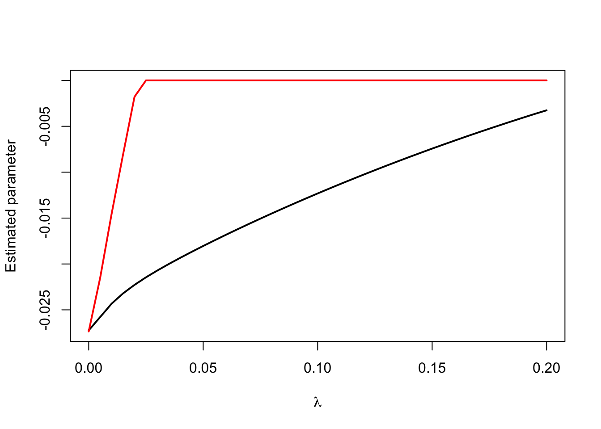
Let us take two values of \(\lambda\) and see the associated estimated parameters in the context of lasso regressions:
Code
| Lambda i | Lambda j |
|---|---|
| 0.105 | 0.005 |
Code
| Term | Lambda i | Lambda j |
|---|---|---|
| (Intercept) | 0.0000 | 0.0000 |
| delinq_2yrs | 0.0868 | 0.0967 |
| annual_inc | 0.0000 | 0.0093 |
| annual_inc2 | 0.0000 | 0.0000 |
| log_annual_inc | 0.0000 | -0.0523 |
| dti | 0.0000 | -0.0215 |
| installment | 0.1010 | 7.0292 |
| funded_amnt | 0.0000 | -6.3174 |
| funded_amnt2 | 0.0000 | -0.3297 |
| log_funded_amnt | 0.0000 | -0.1759 |
| pub_rec | 0.0000 | 0.0470 |
| emp_length_10 | 0.0000 | -0.0201 |
| owner | 0.0000 | -0.0079 |
| mortgage | -0.0073 | -0.0433 |
| pub_rec_bankruptcies | 0.0000 | 0.0000 |
| revol_util | 0.3803 | 0.2497 |
| revol_bal | 0.0000 | -0.0245 |
Code
The glmnet package (see Hastie et al. (2021)) also offers tools to implement cross-validation:

## [1] 0.004282086Code
## [1] 0.004699584## 17 x 1 sparse Matrix of class "dgCMatrix"
## lambda.min
## (Intercept) 2.539322e-14
## delinq_2yrs 9.364945e-02
## annual_inc 1.019866e-02
## annual_inc2 .
## log_annual_inc -5.285472e-02
## dti -2.249588e-02
## installment 7.299546e+00
## funded_amnt -6.550874e+00
## funded_amnt2 -3.598220e-01
## log_funded_amnt -1.838827e-01
## pub_rec 4.582058e-02
## emp_length_10 -1.970788e-02
## owner -8.766370e-03
## mortgage -4.224765e-02
## pub_rec_bankruptcies .
## revol_util 2.418006e-01
## revol_bal -2.431620e-02Code
## lambda.min
## 21529 0.3251772
## 21547 -0.1847952
## 21579 0.6847148
## 21583 -0.2662681
## 21608 -0.20470794.7 Chapter recap
- Section @ref(linearHyp) states the assumptions that determine the finite- and large-sample properties of regression estimators.
- Section @ref(LSquares) derives OLS, and Theorem @ref(thm:GaussMarkov) identifies its efficiency among linear unbiased estimators under the Gauss-Markov assumptions.
- Proposition @ref(prp:Ftest) shows how jointly imposed linear restrictions can be tested by comparing restricted and unrestricted fit.
- Section @ref(CommonPitfalls) separates multicollinearity, omitted-variable bias, and the loss of precision caused by irrelevant regressors.
- Definition @ref(def:instruments) states the relevance and exogeneity requirements for instrumental variables.
- Definition @ref(def:GRM) allows heteroskedastic and correlated disturbances; Sections @ref(HAC) and @ref(Clusters) develop corresponding covariance estimators.
- Section @ref(shrinkage) explains how ridge and lasso estimation trade fit against coefficient magnitude when many covariates are available.
4.8 Exercises
Attempt each question and explain your reasoning, including for true-or-false statements. Foundation exercises apply a result directly; Standard exercises require several steps or a short proof; Advanced exercises combine several results or require a longer derivation. Worked solutions and exercise-specific hints are reserved for teaching sessions and are not included in this student edition.
(#exr:regressions-ols-inference) (OLS inference in a three-regressor model) Standard | Analytical
Review Section @ref(LSquares).
Consider the following linear regression: \[y_i = \beta_1 x_{i,1} + \beta_2 x_{i,2} + \beta_3 x_{i,3} + \varepsilon_i,\] where \(x_{i,1} = 1\) for all \(i\). We observe \((y_i, x_{i,2}, x_{i,3})\), for \(i \in \{1, \dots, n\}\), with \(n = 200\).
In matrix notation, the linear regression writes: \[\mathbf{y} = \boldsymbol{X}\boldsymbol{\beta} + \boldsymbol{\varepsilon}.\] The OLS estimator of \(\boldsymbol{\beta} = [\beta_1, \beta_2, \beta_3]'\) is denoted by \(\mathbf{b}\).
We suppose that the standard full-rank, conditional-mean-zero, homoskedasticity, and no-cross-correlation assumptions hold. We additionally assume normally distributed errors.
The OLS estimates of the disturbances \(\varepsilon_i\) are denoted by \(e_i\). Show that \(\bar{e}_n = 0\).
Show that if \(\mathbb{E}(\boldsymbol{\varepsilon} | \boldsymbol{X}) = 0\), the OLS estimator of \(\boldsymbol{\beta}\) is unbiased.
The correlation between \(x_{i,2}\) and \(x_{i,3}\) is 0.98. What does it imply for the \(\mathbf{b}\) estimator? (No computation is required here, just a brief explanation.)
In the following, we assume that \(\beta_3 = 0\) and that the Gauss–Markov assumptions are satisfied. In the formulas below, \(\boldsymbol{X}\) denotes the \(n\times2\) design matrix of the reduced model \(y_i = \beta_1 + \beta_2 x_{i,2} + \varepsilon_i\). Its OLS estimation gives \(b_2 = 1.2\), a residual sum of squares of 181, and \[(\boldsymbol{X}'\boldsymbol{X})^{-1} = \begin{bmatrix} 1.1 & 0.4 \\ 0.4 & 0.25 \end{bmatrix}.\]Give an estimate of \(\mathbb{V}ar(b_2|\boldsymbol{X})\).
Compute an approximate 95% confidence interval for \(\beta_2\). You will also briefly explain why you can compute such an interval in the present case.
(#exr:regressions-fitted-hyperplane) (The fitted hyperplane and sample averages) Standard | Proof
Review Section @ref(LSquares).
Consider the linear model: \[y_i = \beta_1 x_{i,1} + \beta_2 x_{i,2} + \cdots + \beta_K x_{i,K} + \varepsilon_i = \mathbf{x}_i'\boldsymbol{\beta} + \varepsilon_i, \quad i = 1, \dots, n.\] We assume that Assumptions 4.1 (full rank), 4.2 (conditional mean zero), 4.3 (homoskedasticity), 4.4 (non-correlated residuals) of the course hold. We further assume that \(x_{i,1} = 1\) for all \(i\).
Show that the hyperplane of the regression passes through the average of the data, i.e., \[\bar{y} = \bar{\mathbf{x}}'\mathbf{b},\] where \[\bar{y} = \frac{1}{n} \sum_{i=1}^n y_i, \quad \bar{\mathbf{x}} = \frac{1}{n} \sum_{i=1}^n \mathbf{x}_i,\] and where \(\mathbf{b}\) is the OLS estimator of \(\boldsymbol{\beta} = [\beta_1, \dots, \beta_K]'\).
Show that the mean of the fitted values (\(= \mathbf{X}\mathbf{b}\)) is equal to the mean of the actual values, i.e., \[\bar{y} = \frac{1}{n} \sum_{i=1}^n \hat{y}_i,\] where \(\hat{y}_i = \mathbf{b}'\mathbf{x}_i\).
The \(R^2\) coefficient is defined by \[R^2 = \frac{\sum_{i=1}^n (\hat{y}_i - \bar{y})^2}{\sum_{i=1}^n (y_i - \bar{y})^2}.\] Show that \(\sum_{i=1}^n (y_i - \bar{y})^2 = \sum_{i=1}^n (y_i - \hat{y}_i)^2 + \sum_{i=1}^n (\hat{y}_i - \bar{y})^2\), and deduce that \(R^2\) is between 0 and 1.
(#exr:regressions-variance-estimator) (Unbiased estimation of the error variance) Advanced | Proof
Review Section @ref(LSquares).
Consider the linear model: \[y_i = \beta_1 x_{i,1} + \beta_2 x_{i,2} + \cdots + \beta_K x_{i,K} + \varepsilon_i = \mathbf{x}_i'\boldsymbol{\beta} + \varepsilon_i, \quad i = 1, \dots, n.\] We assume that Assumptions 4.1 (full rank), 4.2 (conditional mean zero), 4.3 (homoskedasticity), and 4.4 (non-correlated residuals) hold.
Let \(\mathbf{b}\) be the estimator of \(\boldsymbol{\beta}\) and let \(s^2\) be the OLS estimator of \(\sigma^2\). The estimator \(s^2\) is defined by: \[s^2 = \frac{\mathbf{e}'\mathbf{e}}{n - K}, \quad \text{where } \mathbf{e} = \mathbf{y} - \mathbf{X}\mathbf{b}.\]
Write the model above in matrix form: \[\mathbf{y} = \mathbf{X}\boldsymbol{\beta} + \boldsymbol{\varepsilon},\] clarifying how \(\mathbf{y}\), \(\mathbf{X}\), \(\boldsymbol{\beta}\), and \(\boldsymbol{\varepsilon}\) are defined and their dimensions.
Show that the estimated residuals are orthogonal to the explanatory variables.
Show that if the model contains an intercept, the estimated residuals have mean zero.
Show that if the columns of \(\mathbf{X}\) are orthogonal, the estimator of \(\beta_j\) in the model above coincides with that of \(\beta_j\) in \(y_i = \beta_j x_{i,j} + u_i, \quad i = 1, \dots, n\).
Show that \(s^2\) is conditionally unbiased for \(\sigma^2\).
(#exr:regressions-ols-properties) (OLS assumptions, confidence intervals, and tests) Standard | Analytical
Review Section @ref(LSquares).
Verbeek (2004), exercise 2.1 (slightly modified)
Consider the linear model \[y_i = \beta_1 + \beta_2 x_{i,2} + \beta_3 x_{i,3} + \varepsilon_i = \mathbf{x}_i' \boldsymbol{\beta} + \varepsilon_i, \quad i = 1, \dots, n,\]
Let \(\mathbf{b}\) be the estimator of \(\boldsymbol{\beta} = [\beta_1, \beta_2, \beta_3]'\) and let \(s^2\) be the OLS estimator of \(\sigma^2\). Assume that \(n\) is large.
Express \(\mathbf{b}\).
Which assumptions are needed to make \(\mathbf{b}\) an unbiased estimator for \(\boldsymbol{\beta}\)?
Explain how a confidence interval for \(\beta_2\) can be constructed. Which additional assumptions are needed?
Explain how one can test the hypothesis that \(\beta_3 = 1\).
Explain how one can test the joint hypothesis that \(\beta_2 + \beta_3 = 0\) and \(\beta_1 = 2\).
Explain how one can test the hypothesis that \(\beta_2 = \beta_3 = 0\).
Suppose that \(\lim_{n \to \infty} \frac{1}{n} \mathbf{X}'\mathbf{X} = \mathbf{Q}\) and that all \((y_i, x_{i,2}, x_{i,3})\) are independent across \(i\). Which assumptions are needed to make \(\mathbf{b}\) a consistent estimator for \(\boldsymbol{\beta}\)?
Suppose that \(x_{i,2} = 2 + 3x_{i,3}\). What will happen if you try to estimate the linear model above?
Suppose that the model is estimated with \(x_{i,2}^* = 2x_{i,2} - 2\) included rather than \(x_{i,2}\). How are the coefficients in this model related to those in the original model above? And the \(R^2\)s?
(#exr:regressions-gauss-markov-true-false) (Gauss-Markov results: true or false?) Standard | True or false
Review Section @ref(CommonPitfalls).
Verbeek (2004), exercise 2.4 (slightly modified)
Carefully read the following statements. Are they True or False? Explain.
Under Gauss-Markov conditions, OLS can be shown to be BLUE. The phrase linear in this acronym refers to the fact that we are estimating a linear model.
The Gauss–Markov conditions alone are sufficient for the usual exact t-test in small samples.
A regression of the OLS residual upon the regressors included in the model by construction yields an \(R^2\) of zero. (We suppose the regression includes a constant.)
The hypothesis that the OLS estimator is equal to zero can be tested by means of a t-test.
If the absolute t-value of a coefficient is smaller than 1.96, we reject the null hypothesis that the coefficient is zero, with 95% confidence.
Because OLS provides the best linear approximation of a variable \(y\) from a set of regressors, OLS also gives the best linear unbiased estimators for the coefficients of the regressors.
If a variable in a model is significant at the 10% level, it is also significant at the 5% level.
(#exr:regressions-ols-matrix-true-false) (OLS matrices and residuals: true or false?) Standard | True or false
Review Section @ref(LSquares).
We assume that the Gauss–Markov assumptions (4.1 to 4.4 from the course) are satisfied in the model \[y_i=\mathbf{x}_i'\boldsymbol\beta+\varepsilon_i, \qquad \mathbb{V}ar(\varepsilon_i|\mathbf{X})=\sigma^2.\] The model includes a constant (the first component \(x_{i,1}=1\) for all \(i\)). The dimension of \(\mathbf{x}_i\) is \(K\times 1\), with \(K>1\).
Consider the OLS regression of \(y_i\) on \(\mathbf{x}_i\). Let \(\mathbf{b}\) denote the OLS estimator of \(\boldsymbol\beta\) and let \(\mathbf{e}\) denote the residual vector, \(\mathbf{e}=\mathbf{y}-\mathbf{X}\mathbf{b}\), where \(\mathbf{X}\) is the \(n\times K\) matrix whose \(i\)th row is \(\mathbf{x}_i'\), and \(\mathbf{y}=[y_1,\dots,y_n]'\).
We assume that \(n\) is large, that \(\{\mathbf{x}_i,\varepsilon_i\}\) are i.i.d. across individuals \(i\), and that \(\mathbf{X}'\mathbf{X}/n\) converges to an invertible matrix \(Q\).
We set \(s^2=\mathbf{e}'\mathbf{e}/(n-K)\) and denote by \(v_k\) the \(k\)th diagonal element of \((\mathbf{X}'\mathbf{X})^{-1}\).
For each statement, decide whether it is true or false and justify your answer.
\(s^2=\sigma^2\).
The sum of the OLS residuals \(e_i\) is equal to zero.
The distribution of the OLS estimator is approximately Gaussian only if the errors \(\varepsilon_i\) are Gaussian.
For \(k=1,\dots,K\), the distribution of \(b_k-\beta_k\) is approximately \(\mathcal{N}(0,s^2 v_k)\).
The coefficient of determination (\(R^2\)) is strictly larger than 0.
(#exr:regressions-instrumental-variables-true-false) (Endogeneity and instruments: true or false?) Advanced | True or false
Review Section @ref(IV).
Consider four random variables \(v_i\), \(w_i\), \(z_i\), and \(\varepsilon_i\). Each of them is Gaussian with mean zero.
An additional random variable \(y_i\) is defined by \[y_i=\beta_1 v_i+\beta_2 w_i+\varepsilon_i.\]
The error term \(\varepsilon_i\) is uncorrelated with \(v_i\) and \(z_i\), but it is correlated with \(w_i\). Moreover, \(w_i\) is correlated with \(z_i\) but not with \(v_i\). This implies in particular that \(\mathbb{E}(\varepsilon_i|v_i)=0\), \(\mathbb{E}(\varepsilon_i|v_i,w_i)\neq 0\), \(\mathbb{E}(\varepsilon_i|w_i)\neq 0\), \(\mathbb{E}(\varepsilon_i|v_i,z_i)=0\), \(\mathbb{E}(w_i|v_i)=0\), and \(\mathbb{E}(v_i|w_i)=0\).
None of the four random variables can be obtained as an exact linear combination of the other three. Finally, the variables \((v_i,w_i,z_i,\varepsilon_i)\) are independent across entities \(i\).
We denote by \(\hat{w}_i\) the fitted value of \(w_i\) in the first-stage OLS regression of \(w_i\) on both exogenous variables, \(v_i\) and \(z_i\).
For each statement, decide whether it is true or false and justify your answer.
In the OLS regression of \(y_i\) on \((v_i,w_i)\), the OLS estimator of \(\boldsymbol\beta=(\beta_1,\beta_2)'\) is unbiased.
\(z_i\) is a valid instrument for \(w_i\).
In the OLS regression of \(y_i\) on \(v_i\) (alone), the OLS estimator of \(\beta_1\) is unbiased.
In the OLS regression of \(y_i\) on \(w_i\) (alone), the OLS estimator of \(\beta_2\) is unbiased.
Regressing \(y_i\) on \((v_i,\hat{w}_i)\) by OLS provides a consistent estimate of \((\beta_1,\beta_2)'\).
(#exr:regressions-measurement-error) (Measurement error in income) Advanced | Application
Review Section @ref(CommonPitfalls).
We denote by \(c_i\) the logarithm of consumption by household \(i\) and by \(y_i^*\) the permanent income of the same household.
Consider the consumption function \[c_i = \beta y_i^* + \varepsilon_i, \quad \varepsilon_i \sim \mathcal{N}(0, \sigma^2),\] where \(\mathbb{E}(\varepsilon_i | y_i^*) = 0.\)
Permanent income \(y_i^*\) is not observed but we have data on \(y_i\), the current income of household \(i\). Assume that \(y_i = y_i^* + v_i\), where \(v_i \sim \mathcal{N}(0, w^2)\), \(\mathbb{E}(v_i | y_i^*) = 0\) and \(\mathbb{E}(v_i | \varepsilon_i) = 0\).
We have a sample of size \(n\) and use the notation: \(\mathbf{y} = [y_1, \dots, y_n]' \quad \text{and} \quad \mathbf{u} = [u_1, \dots, u_n]'\). We assume further that the \((y_i^*, \varepsilon_i, v_i)\) are independent (across \(i\)).
Now consider the linear regression of \(c_i\) on \(y_i\): \(c_i = \beta y_i + u_i\). The residuals of this regression are denoted by \(u_i\).
Show that \(u_i = \varepsilon_i - \beta v_i\).
Compute the covariance between \(y_i\) and \(u_i\).
We denote by \(\mathbf{b}\) the OLS estimator of \(\beta\) in the regression of \(c_i\) on \(y_i\) (with no constant term). After expressing \(\mathbf{b}\) as a function of \(\beta\), \(\mathbf{y}\) and \(\mathbf{u}\), give the limit of \(\mathbf{b}\) when \(n \to \infty\) (the formula involves, in particular, \(\mathbb{E}(y_i)\) and \(\mathbb{V}ar(y_i)\)).
(#exr:regressions-sentiment-returns) (Consumer sentiment and stock returns) Advanced | Application
Review Section @ref(CommonPitfalls).
We want to study the influence of consumer sentiment on stock returns (\(y_i\)). Some institutions construct (aggregated) consumer sentiment indices. These indices are usually based on surveys. We denote by \(\Delta s_i\) the change in the value of such an index between date \(i - 1\) and date \(i\).
We have a sample of \(n\) dates and we assume that the observations \((y_i, \Delta s_i)\) are independent across time (in other words they are "serially independent").
Consider the model: \[ y_i = \beta \Delta s_i + \varepsilon_i,\] with \(\mathbb{E}(\varepsilon_i) = 0\).
We also assume that: \[\varepsilon_i = \eta_i + \nu_i\] \[\Delta s_i = \delta \eta_i + \zeta_i\] where \(\eta_i\), \(\nu_i\) and \(\zeta_i\) are zero-mean variables that are mutually and serially independent and with respective variances \(\sigma_\eta^2\), \(\sigma_\nu^2\) and \(\sigma_\zeta^2\).
Provide potential interpretations of \(\eta_i\) and compute \(\mathbb{E}(\varepsilon_i \Delta s_i)\).
What can be said about the OLS estimate of \(\beta\) (the model above)?
Let \(z_i\) be the value of a weather index at date \(i\). Interpret the condition \(\mathbb{E}(\varepsilon_i\mid z_i)=0\). What additional condition must \(z_i\) satisfy to be a valid instrument? Assuming validity, name the method that can be used to estimate \(\beta\).
Let \(\mathbf Z\) be the \(n\)-dimensional vector with \(i\)th element \(z_i\). Regress \(\Delta s_i\) on \(z_i\) by OLS and express the fitted vector \(\widehat{\Delta\mathbf s}\) as a function of \(\mathbf Z\).
Show that the OLS regression of \(y_i\) on the fitted values \(\widehat{\Delta s_i}\) provides a consistent estimate of \(\beta\).
(#exr:regressions-serial-correlation) (A regression with MA(1) errors) Advanced | Analytical
Review Section @ref(ChapterLS).
Consider the model:
\[y_i = \beta_1 x_{i,1} + \cdots + \beta_K x_{i,K} + \varepsilon_i,\]
where \(\varepsilon_i = u_i + \delta u_{i-1}\).
There is no collinear relationship among the explanatory variables \(x_{i,k}\). The \(u_i\) are i.i.d. \(\mathcal{N}(0, \sigma^2)\). These disturbances \(u_i\) are independent from the \(\mathbf{x}_j = [x_{j,1},\dots,x_{j,K}]'\).
We denote by \(\mathbf{X}\) the matrix whose \((i,k)\) entry is \(x_{i,k}\) and by \(\boldsymbol{\varepsilon}\) the vector \([\varepsilon_1,\dots,\varepsilon_n]'\). The sample size is denoted by \(n\).
Compute \(\mathbb{E}(\boldsymbol{\varepsilon})\) and \(\mathbb{C}ov(\varepsilon_i, \varepsilon_j)\). Consider three cases: (1) \(i = j\), (2) \(i = j+1\) (or \(i = j-1\)), and (3) \(i > j+1\) (or \(i < j-1\)). Express \(\mathbf{\Sigma} = \mathbb{C}ov(\boldsymbol{\varepsilon})\) as a function of \(\sigma^2\) and \(\delta\).
Compute \(\mathbb{V}ar(\mathbf{b} | \mathbf{X})\) where \(\mathbf{b}\) is the OLS estimate of \(\boldsymbol{\beta} = [\beta_1, \dots, \beta_K]'\).
If we knew \(\mathbf{\Sigma}\), what would be the best linear unbiased estimator of \(\boldsymbol\beta\)?
Assuming that \(\mathbf{X'X}/n\) and \(\mathbf{X'\Sigma X}/n\) converge to positive definite matrices (when \(n\) goes to infinity), explain how to obtain a consistent estimate of \(\boldsymbol{\beta}\).
(#exr:regressions-projection-matrix-true-false) (Projection matrices and OLS residuals: true or false?) Standard | True or false
Review Section @ref(LSquares).
Consider the multiple linear regression model in matrix form: \[\mathbf{y} = \mathbf{X}\boldsymbol{\beta} + \boldsymbol\varepsilon.\] \(\mathbf{y}\) is a \(n \times 1\) vector (dependent variable), \(\mathbf{X}\) is a \(n \times K\) matrix (the first column is a constant and the remaining \(K-1\) columns are explanatory variables), \(\boldsymbol{\beta}\) is a \(K \times 1\) vector (coefficients), and \(\boldsymbol\varepsilon\) is a \(n \times 1\) vector (error term). We denote \(\mathbf{b}\) as the OLS estimator of \(\boldsymbol{\beta}\). The residuals are \[\mathbf{e} = \mathbf{y} - \mathbf{X}\mathbf{b}.\] We denote \[\mathbf{P} = \mathbf{X}(\mathbf{X'X})^{-1}\mathbf{X'}\] as the projection matrix (which exists).
For each statement, decide whether it is true or false and justify your answer.
For \(\mathbf{b}\) to be unbiased we do not need homoskedasticity in the errors.
The OLS estimator is necessarily biased if the error term does not follow a normal distribution.
\(\mathbf{PPX} = \mathbf{PX}\).
The fact that \(\mathbf{X}\) is orthogonal to \(\mathbf{e}\) \((\mathbf{X}'\mathbf{e} = \mathbf{0})\) suggests that our OLS estimator is unbiased.
\(\boldsymbol\varepsilon = \mathbf{My}\), where \(\mathbf{M} = \mathbf{I} - \mathbf{X}(\mathbf{X'X})^{-1}\mathbf{X'}\).
(#exr:regressions-robust-inference) (The covariance estimator changes inference) Standard | Application
Review Section @ref(Clusters).
An OLS regression gives \(b_2=0.80\). Three estimated standard errors are available:
| Covariance estimator | Standard error of \(b_2\) |
|---|---|
| Homoskedastic | 0.25 |
| Heteroskedasticity-robust | 0.40 |
| Cluster-robust | 0.55 |
- Explain why the coefficient estimate is the same in all three rows.
- For each standard error, test \(H_0:\beta_2=0\) against \(H_1:\beta_2\ne0\) at the 5% significance level using the large-sample critical value 1.96.
- Which covariance estimator should be preferred if observations may be dependent within firms but firms are independent of one another? State the additional sampling requirement needed for its large-sample justification.
- Explain why choosing a covariance estimator after comparing which one gives significance is invalid practice.
(#exr:regressions-ridge-and-lasso) (Ridge shrinkage in an orthogonal design) Advanced | Analytical
Review Section @ref(shrinkage).
Consider the centered linear model \(\mathbf y=\mathbf X\boldsymbol\beta+\boldsymbol\varepsilon\), where \(\mathbb{E}(\boldsymbol\varepsilon\mid\mathbf X)=\mathbf0\), \(\mathbb{V}ar(\boldsymbol\varepsilon\mid\mathbf X)=\sigma^2\mathbf I\), and \(\mathbf X'\mathbf X=n\mathbf I_K\). The ridge estimator minimizes \[ (\mathbf y-\mathbf X\mathbf b)'(\mathbf y-\mathbf X\mathbf b)+\lambda\mathbf b'\mathbf b, \qquad \lambda\ge0. \]
- Derive the ridge estimator and show that \(\mathbf b_R=\frac{n}{n+\lambda}\mathbf b_{OLS}\).
- Compute \(\mathbb{E}(\mathbf b_R\mid\mathbf X)\) and its conditional bias.
- Compute \(\mathbb{V}ar(\mathbf b_R\mid\mathbf X)\) and compare it with the conditional variance of OLS.
- Explain the bias–variance trade-off created by increasing \(\lambda\).
- Ridge generally does not set coefficients exactly to zero. Which feature of the lasso penalty can produce exact zeros?
5 Panel regressions
Prerequisites. Linear regression, omitted-variable bias, generalized least squares, instrumental variables, and hypothesis testing.
After working through this chapter, you should be able to:
- Recognize the structure of a panel dataset and distinguish pooled, fixed-effects, and random-effects models.
- Derive and interpret the within estimator.
- Explain when random-effects estimation is consistent and how it differs from fixed effects.
- Identify the source of bias in dynamic panel regressions and the role of internal instruments.
- State the identifying assumption behind difference-in-differences.
Roadmap. The chapter introduces panel notation and the main assumptions before presenting fixed-effects and random-effects estimators. It then studies dynamic panels and closes with programme-evaluation methods. Section @ref(panel-exercises) applies these ideas.
5.1 Specification and notations
A panel dataset follows the same entities across time. Entities are indexed by \(i\in\{1,\dots,n\}\) and periods by \(t\in\{1,\dots,T\}\). This repeated-observation structure lets us distinguish variation across entities from variation within an entity over time.
The linear panel regression model is: \[\begin{equation} y_{i,t} = \mathbf{x}'_{i,t}\underbrace{\boldsymbol\beta}_{K \times 1} + \underbrace{\mathbf{z}'_{i}\boldsymbol\alpha}_{\mbox{Individual effects}} + \varepsilon_{i,t}.(\#eq:panel1) \end{equation}\]
When running panel regressions, the usual objective is to estimate \(\boldsymbol\beta\).
Figure @ref(fig:simulPanel) illustrates why that distinction matters. The model is \(y_{i,t}=\alpha_i+\beta x_{i,t}+\varepsilon_{i,t}\) for \(t\in\{1,2\}\). In Panel (b), blue and red dots represent the two periods, and each line joins observations for the same entity. The pooled correlation between \(y\) and \(x\) is negative, yet the within-entity relationship is positive because \(\beta=5\). The entity effects \(\alpha_i\) are negatively correlated with \(x_{i,t}\), so ignoring the panel structure would reverse the sign of the relationship of interest.
Code
T <- 2; n <- 12 # 2 periods and 12 entities
alpha <- 5*rnorm(n) # draw fixed effects
x.1 <- rnorm(n) - .5*alpha # note: x_i's correlate to alpha_i's
x.2 <- rnorm(n) - .5*alpha
beta <- 5; sigma <- .3
y.1 <- alpha + x.1 + sigma*rnorm(n);y.2 <- alpha + x.2 + sigma*rnorm(n)
x <- c(x.1,x.2) # pooled x
y <- c(y.1,y.2) # pooled y
par(mfrow=c(1,2))
plot(x,y,col="black",pch=19,xlab="x",ylab="y",main="(a)")
plot(x,y,col="black",pch=19,xlab="x",ylab="y",main="(b)")
points(x.1,y.1,col="blue",pch=19);points(x.2,y.2,col="red",pch=19)
for(i in 1:n){lines(c(x.1[i],x.2[i]),c(y.1[i],y.2[i]))}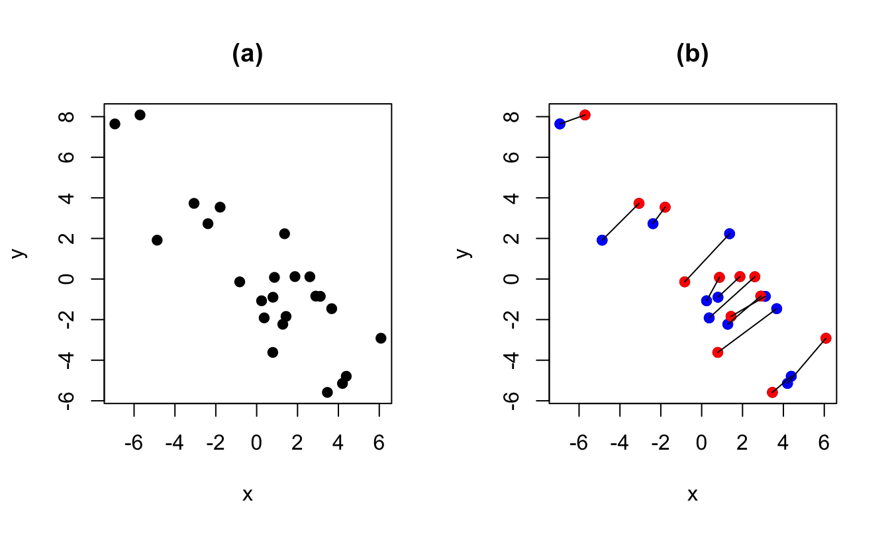
(#fig:simulPanel)The data are the same for both panels. On Panel (b), blue dots are for \(t=1\), red dots are for \(t=2\). The lines relate the dots associated to the same entity \(i\).
Figure @ref(fig:cigarettes) presents the same type of plot based on the Cigarette Consumption Panel dataset (CigarettesSW dataset, used in J. Stock and Watson (2003)). This dataset documents the average consumption of cigarettes in 48 continental US states for two dates (1985 and 1995).
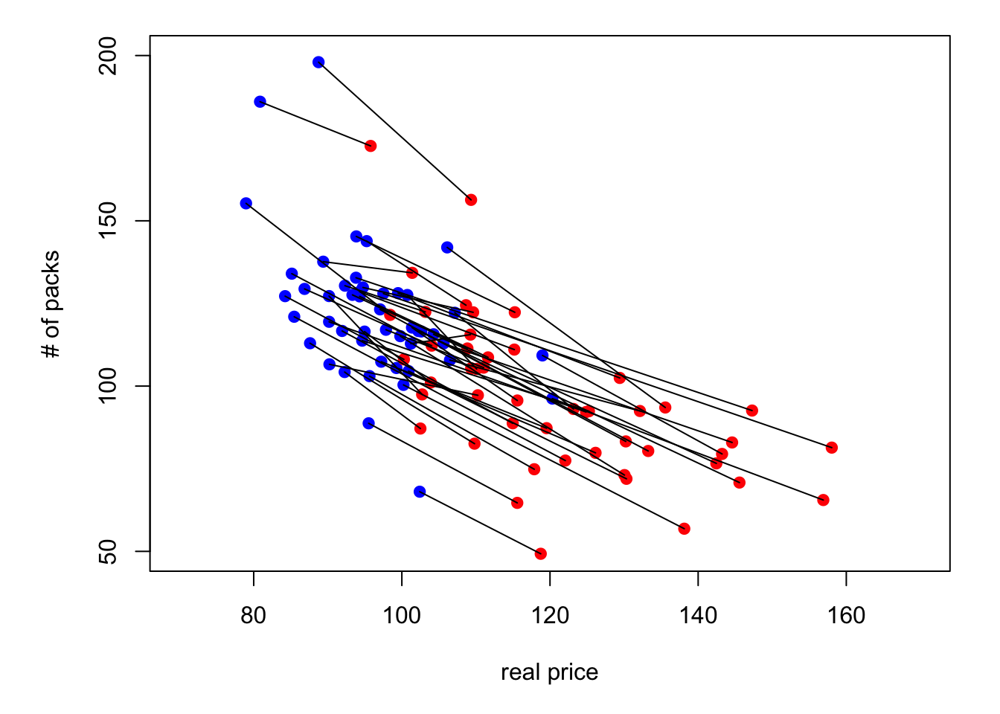
(#fig:cigarettes)Cigarette consumption versus real price in the CigarettesSW panel dataset.
We will make use of the following notations: \[ \mathbf{y}_i = \underbrace{\left[ \begin{array}{c} y_{i,1}\\ \vdots\\ y_{i,T} \end{array}\right]}_{T \times 1}, \quad \boldsymbol\varepsilon_i = \underbrace{\left[ \begin{array}{c} \varepsilon_{i,1}\\ \vdots\\ \varepsilon_{i,T} \end{array}\right]}_{T \times 1}, \quad \mathbf{x}_i = \underbrace{\left[ \begin{array}{c} \mathbf{x}_{i,1}'\\ \vdots\\ \mathbf{x}_{i,T}' \end{array}\right]}_{T \times K}, \quad \mathbf{X} = \underbrace{\left[ \begin{array}{c} \mathbf{x}_{1}\\ \vdots\\ \mathbf{x}_{n} \end{array}\right]}_{(nT) \times K}. \] \[ \tilde{\mathbf{y}}_i = \left[ \begin{array}{c} y_{i,1} - \bar{y}_i\\ \vdots\\ y_{i,T} - \bar{y}_i \end{array}\right], \quad \tilde{\boldsymbol\varepsilon}_i = \left[ \begin{array}{c} \varepsilon_{i,1} - \bar{\varepsilon}_i\\ \vdots\\ \varepsilon_{i,T} - \bar{\varepsilon}_i \end{array}\right], \] \[ \tilde{\mathbf{x}}_i = \left[ \begin{array}{c} \mathbf{x}_{i,1}' - \bar{\mathbf{x}}_i'\\ \vdots\\ \mathbf{x}_{i,T}' - \bar{\mathbf{x}}_i' \end{array}\right], \quad \tilde{\mathbf{X}} = \left[ \begin{array}{c} \tilde{\mathbf{x}}_{1}\\ \vdots\\ \tilde{\mathbf{x}}_{n} \end{array}\right], \quad \tilde{\mathbf{Y}} = \left[ \begin{array}{c} \tilde{\mathbf{y}}_{1}\\ \vdots\\ \tilde{\mathbf{y}}_{n} \end{array}\right], \] where \[ \bar{y}_i = \frac{1}{T} \sum_{t=1}^T y_{i,t}, \quad \bar{\varepsilon}_i = \frac{1}{T}\sum_{t=1}^T \varepsilon_{i,t} \quad \mbox{and} \quad \bar{\mathbf{x}}_i = \frac{1}{T}\sum_{t=1}^T \mathbf{x}_{i,t}. \]
5.2 Three standard cases
How the individual effect relates to the observed regressors determines the appropriate estimator. The following three cases separate pooled models, fixed effects, and random effects.
There are three typical situations:
- Pooled regression: \(\mathbf{z}_i \equiv 1\). This case amounts to the case studied in Chapter @ref(ChapterLS).
- Fixed Effects (Section @ref(FixedEffect)): \(\mathbf{z}_i\) is unobserved, but correlates with \(\mathbf{x}_i\) \(\Rightarrow\) \(\mathbf{b}\) is biased and inconsistent in the OLS regression of \(\mathbf{y}\) on \(\mathbf{X}\) (omitted variable, see Section @ref(Omitted)).
- Random Effects (Section @ref(RandomEffect)): \(\mathbf{z}_i\) is unobserved, but uncorrelated with \(\mathbf{x}_i\). The model writes: \[ y_{i,t} = \mathbf{x}'_{i,t}\boldsymbol\beta + \alpha + \underbrace{{\color{blue}u_i + \varepsilon_{i,t}}}_{\mbox{compound error}}, \] where \(\alpha = \mathbb{E}(\mathbf{z}'_{i}\boldsymbol\alpha)\) and \(u_i = \mathbf{z}'_{i}\boldsymbol\alpha - \mathbb{E}(\mathbf{z}'_{i}\boldsymbol\alpha) \perp \mathbf{x}_i\). In that case, the OLS is consistent, but not efficient. GLS can be used to gain efficiencies over OLS (see Section @ref(GLS) for a presentation of the GLS approach).
5.3 Estimation of fixed-effects models
When individual effects may be correlated with the regressors, the estimator must remove those effects rather than treat them as part of the disturbance. The fixed-effects approaches below do so through dummy variables, within transformations, or first differences.
(#hyp:FE) (Fixed-effect model) We assume that:
- There is no perfect multicollinearity among the regressors.
- \(\mathbb{E}(\varepsilon_{i,t}|\mathbf{X})=0\), for all \(i,t\).
- We have: \[ \mathbb{E}(\varepsilon_{i,t}\varepsilon_{j,s}|\mathbf{X}) = \left\{ \begin{array}{cl} \sigma^2 & \mbox{if $i=j$ and $s=t$},\\ 0 & \mbox{otherwise.} \end{array}\right. \]
These assumptions are analogous to those introduced in the standard linear regression:
- \(\leftrightarrow\) Hyp. @ref(hyp:fullrank), (ii) \(\leftrightarrow\) Hyp. @ref(hyp:exogeneity), (iii) \(\leftrightarrow\) Hyp. @ref(hyp:homoskedasticity) + @ref(hyp:noncorrelResid).
In matrix form, for a given \(i\), the model writes: \[ \mathbf{y}_i = \mathbf{x}_i \boldsymbol\beta + \mathbf{1}_T\alpha_i + \boldsymbol\varepsilon_i, \] where \(\mathbf{1}_T\) is a \(T\)-dimensional vector of ones.
This is the Least Square Dummy Variable (LSDV) model: \[\begin{equation} \mathbf{y} = [\mathbf{X} \quad \mathbf{D}] \left[ \begin{array}{c} \boldsymbol\beta\\ \boldsymbol\alpha \end{array} \right] + \boldsymbol\varepsilon, (\#eq:LSDV) \end{equation}\] with: \[ \mathbf{D} = \underbrace{ \left[\begin{array}{cccc} \mathbf{1}_T&\mathbf{0}&\dots&\mathbf{0}\\ \mathbf{0}&\mathbf{1}_T&\dots&\mathbf{0}\\ &&\vdots&\\ \mathbf{0}&\mathbf{0}&\dots&\mathbf{1}_T\\ \end{array}\right]}_{(nT \times n)}. \]
The linear regression (Eq. @ref(eq:LSDV)) —with the dummy variables— satisfies the Gauss-Markov conditions (Theorem @ref(thm:GaussMarkov)). Hence, in this context, the OLS estimator is the best linear unbiased estimator (BLUE).
Denoting by \(\mathbf{Z}\) the matrix \([\mathbf{X} \quad \mathbf{D}]\), and by \(\mathbf{b}\) and \(\mathbf{a}\) the respective OLS estimates of \(\boldsymbol\beta\) and of \(\boldsymbol\alpha\), we have: \[\begin{equation} \boxed{ \left[ \begin{array}{c} \mathbf{b}\\ \mathbf{a} \end{array} \right] = [\mathbf{Z}'\mathbf{Z}]^{-1}\mathbf{Z}'\mathbf{y}.} (\#eq:bfixedeffects11) \end{equation}\]
When the number of entities \(n\) grows while \(T\) is fixed, the dimension of \(\boldsymbol\alpha\) also grows. Consequently, the usual fixed-dimensional OLS limit theorem cannot be applied to the full vector \([\mathbf{b}',\mathbf{a}']'\). Under strict exogeneity, cross-sectional independence, and standard moment and rank conditions, the within estimator \(\mathbf{b}\) of the common slope vector \(\boldsymbol\beta\) is consistent and asymptotically normal as \(n\rightarrow\infty\) with fixed \(T\). By contrast, each individual effect \(\alpha_i\) is estimated from only \(T\) observations and is generally not consistent when \(T\) remains fixed.
In practice, an estimator of the covariance matrix of \([\mathbf{b}',\mathbf{a}']'\) is: \[ s^2 \left( \mathbf{Z}'\mathbf{Z}\right)^{-1} \quad with \quad s^2 = \frac{\mathbf{e}'\mathbf{e}}{nT - K - n}, \] where \(\mathbf{e}\) is the \((nT) \times 1\) vector of OLS residuals.
There is an alternative way of expressing the LSDV estimators. It involves the residual-maker matrix matrix \(\mathbf{M_D}=Id - \mathbf{D}(\mathbf{D}'\mathbf{D})^{-1}\mathbf{D}'\) (see Eq. @ref(eq:Mres)), which acts as an operator that removes entity-specific means, i.e.: \[ \tilde{\mathbf{Y}} = \mathbf{M_D}\mathbf{Y}, \quad \tilde{\mathbf{X}} = \mathbf{M_D}\mathbf{X} \quad and \quad \tilde{\boldsymbol\varepsilon} = \mathbf{M_D}\boldsymbol\varepsilon. \]
With these notations, using the Frisch-Waugh theorem (Theorem @ref(thm:FW)), we get another expression for the estimator \(\mathbf{b}\) appearing in Eq. @ref(eq:bfixedeffects11): \[\begin{equation} \boxed{\mathbf{b} = [\mathbf{X}'\mathbf{M_D}\mathbf{X}]^{-1}\mathbf{X}'\mathbf{M_D}\mathbf{y}.}(\#eq:bfixedeffects) \end{equation}\]
This amounts to regressing the \(\tilde{y}_{i,t}\)’s (\(= y_{i,t} - \bar{y}_i\)) on the \(\tilde{\mathbf{x}}_{i,t}\)’s (\(=\mathbf{x}_{i,t} - \bar{\mathbf{x}}_i\)).
The estimate of \(\boldsymbol\alpha\) is given by: \[\begin{equation} \boxed{\mathbf{a} = (\mathbf{D}'\mathbf{D})^{-1}\mathbf{D}'(\mathbf{y} - \mathbf{X}\mathbf{b}),} (\#eq:a) \end{equation}\] which is obtained by developing the second row of \[ \left[ \begin{array}{cc} \mathbf{X}'\mathbf{X} & \mathbf{X}'\mathbf{D}\\ \mathbf{D}'\mathbf{X} & \mathbf{D}'\mathbf{D} \end{array}\right] \left[ \begin{array}{c} \mathbf{b}\\ \mathbf{a} \end{array}\right] = \left[ \begin{array}{c} \mathbf{X}'\mathbf{Y}\\ \mathbf{D}'\mathbf{Y} \end{array}\right], \] which are the first-order conditions resulting from the least squares problem (see Eq. @ref(eq:OLSFOC)).
One can use different types of fixed effects in the same regression. Typically, one can have time and entity fixed effects. In that case, the model writes: \[ y_{i,t} = \mathbf{x}_{i,t}'\boldsymbol\beta + \alpha_i + \gamma_t + \varepsilon_{i,t}. \]
The LSDV approach (Eq. @ref(eq:LSDV)) can still be resorted to. It suffices to extend the \(\mathbf{Z}\) matrix with additional columns (then called time dummies): \[\begin{equation} \mathbf{y} = [\mathbf{X} \quad \mathbf{D} \quad \mathbf{C}] \left[ \begin{array}{c} \boldsymbol\beta\\ \boldsymbol\alpha\\ \boldsymbol\gamma \end{array} \right] + \boldsymbol\varepsilon, (\#eq:LSDV2) \end{equation}\] with: \[ \mathbf{C} = \left[\begin{array}{cccc} \boldsymbol{\delta}_1&\boldsymbol{\delta}_2&\dots&\boldsymbol{\delta}_{T-1}\\ \vdots&\vdots&&\vdots\\ \boldsymbol{\delta}_1&\boldsymbol{\delta}_2&\dots&\boldsymbol{\delta}_{T-1}\\ \end{array}\right], \] where the \(T\)-dimensional vector \(\boldsymbol\delta_t\) (the time dummy) is \[ [0,\dots,0,\underbrace{1}_{\mbox{t$^{th}$ entry}},0,\dots,0]'. \]
Using state and year fixed effects in the CigarettesSW panel dataset yields the following results:
Code
data("CigarettesSW", package = "AER")
CigarettesSW$rprice <- with(CigarettesSW, price/cpi) # compute real price
CigarettesSW$rincome <- with(CigarettesSW, income/population/cpi)
eq.pooled <- lm(log(packs)~log(rprice)+log(rincome),data=CigarettesSW)
eq.LSDV <- lm(log(packs)~log(rprice)+log(rincome)+state,
data=CigarettesSW)
CigarettesSW$year <- as.factor(CigarettesSW$year)
eq.LSDV2 <- lm(log(packs)~log(rprice)+log(rincome)+state+year,
data=CigarettesSW)
model_table(eq.pooled,eq.LSDV,eq.LSDV2,no.space = TRUE,
omit=c("state","year"),
add.lines=list(c('State FE','No','Yes','Yes'),
c('Year FE','No','No','Yes')),
omit.stat=c("f","ser"))| Dependent variable: | |||
| log(packs) | |||
| (1) | (2) | (3) | |
| log(rprice) | -1.334*** | -1.210*** | -1.056*** |
| (0.135) | (0.114) | (0.149) | |
| log(rincome) | 0.318** | 0.121 | 0.497 |
| (0.136) | (0.190) | (0.304) | |
| Constant | 10.067*** | 9.954*** | 8.360*** |
| (0.516) | (0.264) | (1.049) | |
| State FE | No | Yes | Yes |
| Year FE | No | No | Yes |
| Observations | 96 | 96 | 96 |
| R2 | 0.552 | 0.966 | 0.967 |
| Adjusted R2 | 0.542 | 0.929 | 0.931 |
| Note: | p<0.1; p<0.05; p<0.01 | ||
(#exm:JSTPanel) (Housing prices and interest rates) In this example, we want to estimate the effect of short and long-term interest rate on housing prices. The data come from the Jordà, Schularick, and Taylor (2017) dataset (see this website).
Code
library(AEC);library(sandwich)
data(JST); JST <- subset(JST,year>1950);N <- dim(JST)[1]
JST$hpreal <- JST$hpnom/JST$cpi # real house price index
JST$dhpreal <- 100*log(JST$hpreal/c(NaN,JST$hpreal[1:(N-1)]))
# Put NA's when change in country:
JST$dhpreal[c(0,JST$iso[2:N]!=JST$iso[1:(N-1)])] <- NaN
JST$dhpreal[abs(JST$dhpreal)>30] <- NaN # remove extreme price change
JST$YEAR <- as.factor(JST$year) # to have time fixed effects
eq1_noFE <- lm(dhpreal ~ stir + ltrate,data=JST)
eq1_FE <- lm(dhpreal ~ stir + ltrate + iso + YEAR,data=JST)
eq2_noFE <- lm(dhpreal ~ I(ltrate-stir),data=JST)
eq2_FE <- lm(dhpreal ~ I(ltrate-stir) + iso + YEAR,data=JST)
model_table(eq1_noFE, eq1_FE, eq2_noFE, eq2_FE, column.labels = c("no FE", "with FE", "no FE","with FE"),
omit = c("iso","YEAR","Constant"),keep.stat = "n",
add.lines=list(c('Country FE','No','Yes','No','Yes'),
c('Year FE','No','Yes','No','Yes')))| Dependent variable: | ||||
| dhpreal | ||||
| no FE | with FE | no FE | with FE | |
| (1) | (2) | (3) | (4) | |
| stir | 0.485*** | 0.532*** | ||
| (0.114) | (0.134) | |||
| ltrate | -0.690*** | -0.384*** | ||
| (0.127) | (0.145) | |||
| I(ltrate - stir) | -0.476*** | -0.475*** | ||
| (0.115) | (0.125) | |||
| Country FE | No | Yes | No | Yes |
| Year FE | No | Yes | No | Yes |
| Observations | 1,141 | 1,141 | 1,141 | 1,141 |
| Note: | p<0.1; p<0.05; p<0.01 | |||
If we suspect heteroskedasticity and autocorrelation (HAC) in the residuals, we can apply cluster corrections (see Section @ref(Clusters)):
Code
vcov_cluster1_noFE <- vcovCL(eq1_noFE, cluster = JST[, c("iso","YEAR")])
vcov_cluster1_FE <- vcovCL(eq1_FE, cluster = JST[, c("iso","YEAR")])
vcov_cluster2_noFE <- vcovCL(eq2_noFE, cluster = JST[, c("iso","YEAR")])
vcov_cluster2_FE <- vcovCL(eq2_FE, cluster = JST[, c("iso","YEAR")])
robust_se_FE1_noFE <- sqrt(diag(vcov_cluster1_noFE))
robust_se_FE1_FE <- sqrt(diag(vcov_cluster1_FE))
robust_se_FE2_noFE <- sqrt(diag(vcov_cluster2_noFE))
robust_se_FE2_FE <- sqrt(diag(vcov_cluster2_FE))
model_table(eq1_noFE, eq1_FE, eq2_noFE, eq2_FE, column.labels = c("no FE", "with FE", "no FE","with FE"),
omit = c("iso","YEAR","Constant"),keep.stat = "n",
add.lines=list(c('Country FE','No','Yes','No','Yes'),
c('Year FE','No','Yes','No','Yes')),
se = list(robust_se_FE1_noFE,robust_se_FE1_FE,
robust_se_FE2_noFE,robust_se_FE2_FE))| Dependent variable: | ||||
| dhpreal | ||||
| no FE | with FE | no FE | with FE | |
| (1) | (2) | (3) | (4) | |
| stir | 0.485* | 0.532** | ||
| (0.271) | (0.240) | |||
| ltrate | -0.690** | -0.384* | ||
| (0.269) | (0.200) | |||
| I(ltrate - stir) | -0.476* | -0.475** | ||
| (0.255) | (0.213) | |||
| Country FE | No | Yes | No | Yes |
| Year FE | No | Yes | No | Yes |
| Observations | 1,141 | 1,141 | 1,141 | 1,141 |
| Note: | p<0.1; p<0.05; p<0.01 | |||
5.4 Estimation of random effects models
If the individual effect is uncorrelated with the regressors, it can be incorporated into the covariance structure of a composite error. This additional assumption permits random-effects estimation and can improve efficiency by using both within- and between-entity variation.
Here, the individual effects are assumed to be not correlated to other variables (the \(\mathbf{x}_i\)’s). In that context, the OLS estimator is consistent. However, it is not efficient. The GLS approach can be employed to gain efficiency.
Random-effect models write: \[ y_{i,t}=\mathbf{x}'_{it}\boldsymbol\beta + (\alpha + \underbrace{u_i}_{\substack{\text{Random}\\\text{heterogeneity}}}) + \varepsilon_{i,t}, \] with \[\begin{eqnarray*} \mathbb{E}(\varepsilon_{i,t}|\mathbf{X})&=&\mathbb{E}(u_{i}|\mathbf{X}) =0,\\ \mathbb{E}(\varepsilon_{i,t}\varepsilon_{j,s}|\mathbf{X}) &=& \left\{ \begin{array}{cl} \sigma_\varepsilon^2 & \mbox{ if $i=j$ and $s=t$},\\ 0 & \mbox{ otherwise.} \end{array} \right.\\ \mathbb{E}(u_{i}u_{j}|\mathbf{X}) &=& \left\{ \begin{array}{cl} \sigma_u^2 & \mbox{ if $i=j$},\\ 0 & \mbox{otherwise.} \end{array} \right.\\ \mathbb{E}(\varepsilon_{i,t}u_{j}|\mathbf{X})&=&0 \quad \text{for all $i$, $j$ and $t$}. \end{eqnarray*}\]
Introducing the notations \(\eta_{i,t} = u_i + \varepsilon_{i,t}\) and \(\boldsymbol\eta_i = [\eta_{i,1},\dots,\eta_{i,T}]'\), we have \(\mathbb{E}(\boldsymbol\eta_i |\mathbf{X}) = \mathbf{0}\) and \(\mathbb{V}ar(\boldsymbol\eta_i | \mathbf{X}) = \boldsymbol\Gamma\), where \[ \boldsymbol\Gamma = \left[ \begin{array}{ccccc} \sigma_\varepsilon^2+\sigma_u^2 & \sigma_u^2 & \sigma_u^2 & \dots & \sigma_u^2\\ \sigma_u^2 & \sigma_\varepsilon^2+\sigma_u^2 & \sigma_u^2 & \dots & \sigma_u^2\\ \vdots && \ddots && \vdots \\ \sigma_u^2 & \sigma_u^2 & \sigma_u^2 & \dots & \sigma_\varepsilon^2+\sigma_u^2\\ \end{array} \right] = \sigma_\varepsilon^2Id_T + \sigma_u^2\mathbf{1}_T\mathbf{1}_T', \] where \(Id_T\) is the identity matrix of dimension \(T \times T\), and \(\mathbf{1}_T\) is a \(T\)-dimensional vector of ones.
Denoting by \(\boldsymbol\Sigma\) the covariance matrix of \(\boldsymbol\eta = [\boldsymbol\eta_1',\dots,\boldsymbol\eta_n']'\), we have: \[ \boldsymbol\Sigma = Id_n \otimes \boldsymbol\Gamma. \]
where \(Id_n\) is the identity matrix of dimension \(n \times n\).
If we knew \(\boldsymbol\Sigma\), we would apply (feasible) GLS (Eq. @ref(eq:betaGLS), in Section @ref(GLS)): \[ \mathbf{b}_{GLS} = (\mathbf{X}'\boldsymbol\Sigma^{-1}\mathbf{X})^{-1}\mathbf{X}'\boldsymbol\Sigma^{-1}\mathbf{y}. \] (As explained in Section @ref(GLS), this amounts to regressing \({\boldsymbol\Sigma^{-1/2}}'\mathbf{y}\) on \({\boldsymbol\Sigma^{-1/2}}'\mathbf{X}\).)
It can be checked that \(\boldsymbol\Sigma^{-1/2} = Id_n \otimes (\boldsymbol\Gamma^{-1/2})\) where \[ \boldsymbol\Gamma^{-1/2} = \frac{1}{\sigma_\varepsilon}\left( Id_T - \frac{\theta}{T}\mathbf{1}_T\mathbf{1}_T'\right),\quad \mbox{with}\quad\theta = 1 - \frac{\sigma_\varepsilon}{\sqrt{\sigma_\varepsilon^2+T\sigma_u^2}}. \]
Hence, if we knew \(\boldsymbol\Sigma\), we would transform the data as follows: \[ \boldsymbol\Gamma^{-1/2}\mathbf{y}_i = \frac{1}{\sigma_\varepsilon}\left[\begin{array}{c}y_{i,1} - \theta\bar{y}_i\\y_{i,2} - \theta\bar{y}_i\\\vdots\\y_{i,T} - \theta\bar{y}_i\\\end{array}\right]. \]
What about when \(\boldsymbol\Sigma\) is unknown? One can take deviations from group means to remove heterogeneity: \[\begin{equation} y_{i,t} - \bar{y}_i = [\mathbf{x}_{i,t} - \bar{\mathbf{x}}_i]'\boldsymbol\beta + (\varepsilon_{i,t} - \bar{\varepsilon}_i).(\#eq:OLSRUM) \end{equation}\] The previous equation can be estimated consistently by OLS. Although its residuals are correlated across periods for a given entity, this dependence affects the covariance estimator rather than coefficient consistency; see Proposition @ref(prp:ols-grm-consistency).
We have \(\mathbb{E}\left[\sum_{t=1}^{T}(\varepsilon_{i,t}-\bar{\varepsilon}_i)^2\right] = (T-1)\sigma_{\varepsilon}^2\).
The \(\varepsilon_{i,t}\)’s are not observed but \(\mathbf{b}\), the OLS estimator of \(\boldsymbol\beta\) in Eq. @ref(eq:OLSRUM), is a consistent estimator of \(\boldsymbol\beta\). Using an adjustment for the degrees of freedom, we can approximate their variance with: \[ \hat{\sigma}_e^2 = \frac{1}{nT-n-K}\sum_{i=1}^{n}\sum_{t=1}^{T}(e_{i,t} - \bar{e}_i)^2. \]
What about \(\sigma_u^2\)? We can exploit the fact that OLS are consistent in the pooled regression: \[ \mbox{plim }s^2_{pooled} = \mbox{plim }\frac{\mathbf{e}'\mathbf{e}}{nT-K-1} = \sigma_u^2 + \sigma_\varepsilon^2, \] and therefore use \(s^2_{pooled} - \hat{\sigma}_e^2\) as an approximation to \(\sigma_u^2\).
Let us come back to Example @ref(exm:JSTPanel), concerning the relationship between changes in housing prices and interest rates. The table below compares pooled, random-effects, and two-way fixed-effects estimates of the same specification.
Code
library(plm);library(stargazer)
eq.RE <- plm(dhpreal ~ stir + ltrate,data=JST,index=c("iso","YEAR"),
model="random",effect="twoways")
eq.FE <- plm(dhpreal ~ stir + ltrate,data=JST,index=c("iso","YEAR"),
model="within",effect="twoways")
eq0 <- plm(dhpreal ~ stir + ltrate,data=JST,index=c("iso","YEAR"),
model="pooling")
model_table(eq0, eq.RE, eq.FE, no.space = TRUE,
column.labels=c("Pooled","Random Effect","Fixed Effects"),
add.lines=list(c('State FE','No','Yes','Yes'),
c('Year FE','No','Yes','Yes')),
omit.stat=c("f","ser"))| Dependent variable: | |||
| dhpreal | |||
| Pooled | Random Effect | Fixed Effects | |
| (1) | (2) | (3) | |
| stir | 0.485*** | 0.456*** | 0.532*** |
| (0.114) | (0.019) | (0.134) | |
| ltrate | -0.690*** | -0.541*** | -0.384*** |
| (0.127) | (0.020) | (0.145) | |
| Constant | 4.103*** | 3.341*** | |
| (0.421) | (0.096) | ||
| State FE | No | Yes | Yes |
| Year FE | No | Yes | Yes |
| Observations | 1,141 | 1,141 | 1,141 |
| R2 | 0.027 | 0.024 | 0.015 |
| Adjusted R2 | 0.025 | 0.022 | -0.067 |
| Note: | p<0.1; p<0.05; p<0.01 | ||
One can run an Hausman (1978) test in order to check whether or not the fixed-effect model is needed. Indeed, if this is not the case (i.e., if the covariates are not correlated to the disturbances), then it is preferable to use the random-effect estimation as the latter is more efficient.
##
## Hausman Test
##
## data: dhpreal ~ stir + ltrate
## chisq = 3.8386, df = 2, p-value = 0.1467
## alternative hypothesis: one model is inconsistentBecause the p-value is high, we do not reject the null hypothesis that the random effect is uncorrelated with the covariates. The random-effects estimator therefore remains compatible with the test and, under its maintained assumptions, is more efficient. Failure to reject is not evidence that the null is true.
(#exm:airbnb) (Airbnb prices: district effects and clustered uncertainty) Why do Airbnb prices differ across Zurich? We use the historical snapshot of 22 June 2017 collected from Tom Slee’s website and distributed with AEC. This is a cross-section of listings, not a panel tracking the same listings over time. Districts provide the groups for our fixed effects. The supplied sample contains entire-home/apartment listings; it should not be interpreted as a representative sample of all accommodation or of today’s market. We retain prices in the units recorded in the dataset.
We compare listings with different numbers of bedrooms and accommodation capacities, first across the city and then within districts. Location, quality, and other unobserved attributes can affect both prices and these covariates, so the coefficients describe conditional associations rather than causal effects.
Code
library(AEC)
library(sp) # plotting methods for the supplied district polygons
# Keep a separate analysis dataset and use the same sample in both models.
airbnb_data <- AEC::airbnb
analysis_vars <- c("price", "bedrooms", "accommodates", "neighborhood")
airbnb_data <- airbnb_data[complete.cases(airbnb_data[analysis_vars]), ]
airbnb_data$neighborhood <- factor(airbnb_data$neighborhood)
n_districts <- nlevels(airbnb_data$neighborhood)
# Use one area scale for all maps (magnitude is price or absolute residual).
airbnb_map <- function(magnitude, colour, title="") {
plot(AEC::zurich_districts, col="grey90", border="white", main=title)
points(airbnb_data$longitude, airbnb_data$latitude, pch=21,
cex=1.5*sqrt(magnitude/100),
col=adjustcolor(colour, alpha.f=.55),
bg=adjustcolor(colour, alpha.f=.2))
}Our analysis uses 1321 listings in 12 districts. Figure @ref(fig:airbnb) shows their locations and prices. Circle area is proportional to price; the white boundaries delineate districts.
Code
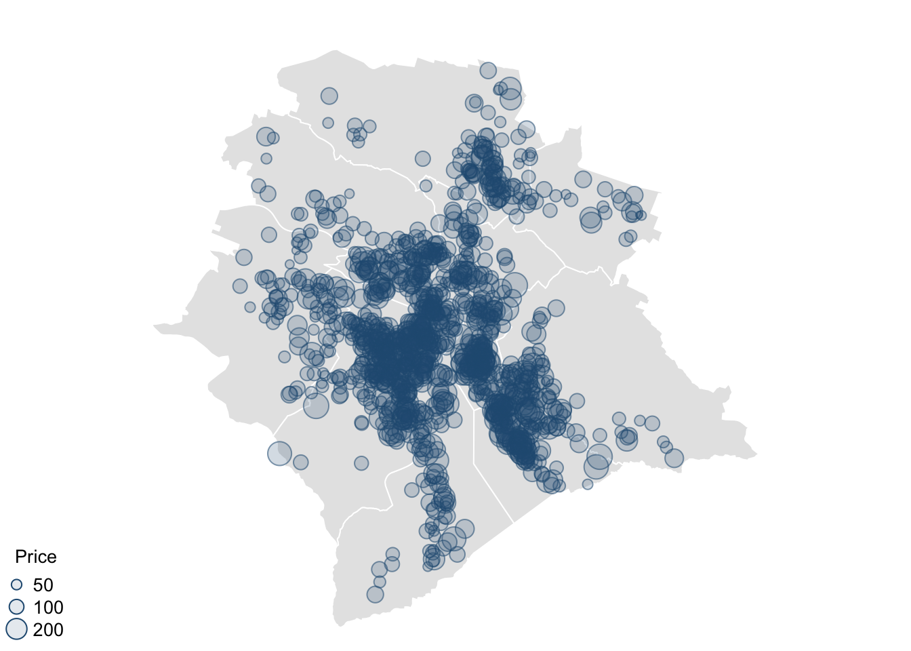
(#fig:airbnb)Airbnb prices in Zurich, 22 June 2017. Circle area is proportional to the recorded price; white lines delineate districts.
District effects and standard errors answer different questions. District dummies allow the conditional mean price to differ across districts. Clustering allows disturbances to be correlated across listings in the same district. Adding fixed effects does not, by itself, remove all within-district dependence.
We estimate \(price_{ig} = \alpha_g + \beta_1 bedrooms_{ig} + \beta_2 accommodates_{ig} + \varepsilon_{ig}\), where \(g\) denotes the district. Without district effects, we replace \(\alpha_g\) by a common intercept.
Code
airbnb_noFE <- lm(price ~ bedrooms + accommodates, data=airbnb_data)
airbnb_FE <- lm(price ~ bedrooms + accommodates + neighborhood,
data=airbnb_data)
# Compare three covariance estimators, using explicit corrections.
airbnb_se_table <- function(model, label) {
terms <- c("bedrooms", "accommodates")
V <- list(
Conventional=vcov(model),
HC1=sandwich::vcovHC(model, type="HC1"),
District=sandwich::vcovCL(model, cluster=~neighborhood,
type="HC1", cadjust=TRUE))
se <- sapply(V, function(v) sqrt(diag(v))[terms])
data.frame(Model=label, Variable=terms,
Estimate=unname(coef(model)[terms]), se, row.names=NULL)
}
airbnb_results <- rbind(
airbnb_se_table(airbnb_noFE, "No district FE"),
airbnb_se_table(airbnb_FE, "District FE"))
data_table(airbnb_results, digits=2, row.names=FALSE,
col.names=c("Model", "Variable", "Estimate",
"SE: conventional", "SE: HC1", "SE: district"))| Model | Variable | Estimate | SE: conventional | SE: HC1 | SE: district |
|---|---|---|---|---|---|
| No district FE | bedrooms | 5.63 | 2.19 | 2.07 | 2.26 |
| No district FE | accommodates | 17.45 | 1.32 | 1.42 | 1.20 |
| District FE | bedrooms | 7.23 | 2.14 | 2.04 | 2.35 |
| District FE | accommodates | 16.43 | 1.28 | 1.42 | 1.47 |
Within each model, the coefficient estimates are identical whichever covariance estimator we use; only the reported uncertainty changes. Conventional standard errors assume homoskedastic, uncorrelated disturbances. HC1 allows heteroskedasticity. The district-clustered estimator additionally allows arbitrary dependence within districts, while requiring independence across districts. It need not produce larger standard errors. Here type="HC1" specifies the observation/parameter-count adjustment and cadjust=TRUE applies the \(G/(G-1)\) cluster adjustment, with \(G\) districts. See the sandwich documentation.
Only 12 clusters. These corrections do not guarantee reliable inference with so few districts. We therefore report standard errors without automatic significance stars. For hypothesis tests, investigate a small-sample procedure such as CR2 with Satterthwaite degrees of freedom (see the clubSandwich worked example). Also consider whether district boundaries plausibly separate independent disturbances: nearby listings across a boundary, or listings sharing a host, may remain dependent.
What do the fixed effects absorb? Figure @ref(fig:airbnb3) compares residuals using identical symbol scales in both panels. Blue indicates a positive residual (a price above the model’s fitted value), and orange a negative residual. Circle area is proportional to the absolute residual.
Code
local({
old_par <- par(mfrow=c(1, 2), mar=c(0, 0, 3, 0), oma=c(3, 0, 0, 0))
on.exit(par(old_par))
residual_sets <- list(residuals(airbnb_noFE), residuals(airbnb_FE))
titles <- c("(a) No district effects", "(b) District effects")
for (j in seq_along(residual_sets)) {
e <- residual_sets[[j]]
airbnb_map(abs(e), ifelse(e >= 0, "#2166AC", "#B35806"), titles[j])
legend("bottomleft", legend=c("25", "100", "200"),
title="Absolute residual", pch=21,
pt.cex=1.5*sqrt(c(25, 100, 200)/100), bty="n", cex=.8)
}
mtext("Blue: above fitted price Orange: below fitted price",
side=1, outer=TRUE, line=1, cex=.9)
})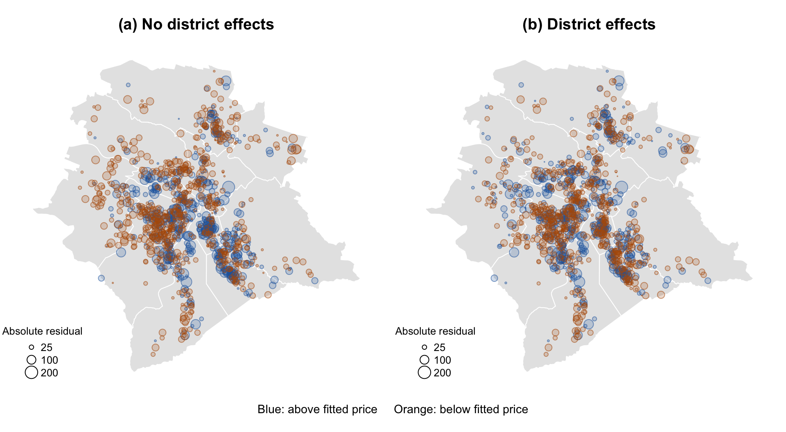
(#fig:airbnb3)Airbnb price residuals without and with district effects. Blue: observed price above fitted price; orange: below. Both panels use the same area scale for absolute residuals.
OLS with district dummies forces the residuals to sum to zero within each district. This is an algebraic property of the fitted model, not evidence that omitted variables or spatial dependence have disappeared. We can check the property directly:
Code
## [1] 3.361414e-145.5 Dynamic panel regressions
The preceding estimators assume that lagged outcomes do not appear among the regressors. Once they do, the transformed lag is mechanically correlated with the transformed error. Dynamic-panel methods address this endogeneity with internal instruments constructed from earlier observations.
In what precedes, it has been assumed that there is no correlation between the observations indexed by \((i,t)\) and those indexed by \((j,s)\) as long as \(j \ne i\) or \(t \ne s\). If one suspects that the errors \(\varepsilon_{i,t}\) are correlated (across entities \(i\) for a given date \(t\), or across dates for a given entity, or both), then one should employ a robust covariance matrix (see Section @ref(Clusters)).
In several cases, auto-correlation in the variable of interest may stem from an auto-regressive specification. That is, Eq. @ref(eq:panel1) is then replaced by: \[\begin{equation} y_{i,t} = \rho y_{i,t-1} + \mathbf{x}'_{i,t}\underbrace{\boldsymbol\beta}_{K \times 1} + \underbrace{\alpha_i}_{\mbox{Individual effects}} + \varepsilon_{i,t}.(\#eq:paneldyn) \end{equation}\]
In that case, even if the explanatory variables \(\mathbf{x}_{i,t}\) are uncorrelated to the errors \(\varepsilon_{i,t}\), we have that the additional explanatory variable \(y_{i,t-1}\) correlates to the errors \(\varepsilon_{i,t-1},\varepsilon_{i,t-2},\dots,\varepsilon_{i,1}\). As a result, the LSDV estimate of the model parameters \(\{\rho,\boldsymbol\beta\}\) may be biased, even if \(n\) is large. To see this, notice that the LSDV regression amounts to regressing \(\widetilde{\mathbf{y}}\) on \(\widetilde{\mathbf{X}}\) (see Eq. @ref(eq:bfixedeffects)), where the elements of \(\widetilde{\mathbf{X}}\) are the explanatory variables from which we subtract their within-sample means. In particular, we have: \[ \tilde{y}_{i,t-1} = y_{i,t-1} - \frac{1}{T} \sum_{s=1}^{T} y_{i,s-1}, \] which correlates to the corresponding error, that is: \[ \tilde{\varepsilon}_{i,t} = \varepsilon_{i,t} - \frac{1}{T} \sum_{s=1}^{T} \varepsilon_{i,s}. \]
The previous equation shows that the within-group estimator (LSDV) introduces all realizations of the \(\varepsilon_{i,t}\) errors into the transformed error term (\(\tilde{\varepsilon}_{i,t}\)). As a result, in large-\(n\) fixed-\(T\) panels, it is consistent only if all the right-hand-side variables of the regression are strictly exogenous (i.e., do not correlate to past, present, and future errors \(\varepsilon_{i,t}\)).9 This is not the case when there are lags of \(y_{i,t}\) on the right-hand side of the regression formula.
The following simulation illustrates this bias. The horizontal coordinates are the fixed effects \(\alpha_i\), and the vertical coordinates are their LSDV estimates. The blue line is the 45-degree line.
Code
n <- 400;T <- 10
rho <- 0.8;sigma <- .5
alpha <- rnorm(n)
y <- alpha /(1-rho) + sigma^2/(1 - rho^2) * rnorm(n)
all_y <- y
for(t in 2:T){
y <- rho * y + alpha + sigma * rnorm(n)
all_y <- rbind(all_y,y)
}
y <- c(all_y[2:T,]);y_1 <- c(all_y[1:(T-1),])
D <- diag(n) %x% rep(1,T-1)
Z <- cbind(c(y_1),D)
b <- solve(t(Z) %*% Z) %*% t(Z) %*% y
a <- b[2:(n+1)]
plot(alpha,a)
lines(c(-10,10),c(-10,10),col="blue")
(#fig:dynpanel1)illustration of the bias pertianing to the LSDV estimation approach in the presence of auto-correlation of the depend variable.
In the previous example, the estimate of \(\rho\) (whose true value is 0.8) is 0.535.
To address this, one can resort to instrumental-variable regressions. Anderson and Hsiao (1982) have, in particular, proposed a first-differenced Two Stage Least Squares (2SLS) estimator (see Eq. @ref(eq:IV) in Section @ref(IV)). This estimation is based on the following transformation of the model: \[\begin{equation} \Delta y_{i,t} = \rho \Delta y_{i,t-1} + (\Delta \mathbf{x}_{i,t})'\boldsymbol\beta + \Delta\varepsilon_{i,t}.(\#eq:paneldynFisrtDiff) \end{equation}\] The OLS estimates of the parameters are biased because \(\varepsilon_{i,t-1}\) —which is part of the error \(\Delta\varepsilon_{i,t}\)— is correlated to \(y_{i,t-1}\) —which is part of the “explanatory variable”, namely \(\Delta y_{i,t-1}\). But consistent estimates can be obtained using 2SLS with instrumental variables that are correlated with \(\Delta y_{i,t}\) but orthogonal to \(\Delta\varepsilon_{i,t}\). One can for instance use \(\{y_{i,t-2},\mathbf{x}_{i,t-2}\}\) as instruments. Note that this approach can be implemented only if there are at least 3 time observations per entity \(i\).
If the explanatory variables \(\mathbf{x}_{i,t}\) are predetermined, they may correlate with past errors but not with current or future errors; then \(\mathbf{x}_{i,t-1}\) is a valid instrument for the differenced equation at date \(t\). If they are strictly exogenous, they are uncorrelated with \(\varepsilon_{i,s}\) at every date \(s\), and contemporaneous \(\mathbf{x}_{i,t}\) can also be used as instruments.
Using the previous (simulated) example, this approach consists in the following steps:
Code
While the OLS estimate of \(\rho\) (whose true value is 0.8) was 0.535, we obtain here rho_2SLS \(=\) 1.379.
Let us come back to the general case (with covariates \(\mathbf{x}_{i,k}\)’s). For \(t=3\), \(y_{i,1}\) (and \(\mathbf{x}_{i,1}\)) is the only possible instrument. However, for \(t=4\), one could use \(y_{i,2}\) and \(y_{i,1}\) (as well as \(\mathbf{x}_{i,2}\) and \(\mathbf{x}_{i,1}\)). More generally, defining matrix \(Z_i\) as follows: \[ Z_i = \left[ \begin{array}{ccccccccccccccccc} \mathbf{z}_{i,1}' & 0 & \dots \\ 0 & \mathbf{z}_{i,1}' & \mathbf{z}_{i,2}' & 0 & \dots \\ 0 &0 &0 & \mathbf{z}_{i,1} & \mathbf{z}_{i,2}' & \mathbf{z}_{i,3}' & 0 & \dots \\ \vdots \\ 0 & \dots &&&&&& 0 & \mathbf{z}_{i,1}' & \dots & \mathbf{z}_{i,T-2}' \end{array} \right], \] where \(\mathbf{z}_{i,t} = [y_{i,t},\mathbf{x}_{i,t}']'\), we have the moment conditions:10 \[ \mathbb{E}(Z_i'\Delta {\boldsymbol\varepsilon}_i)=0, \]
with \(\Delta{\boldsymbol\varepsilon}_i = [ \Delta \varepsilon_{i,3},\dots,\Delta \varepsilon_{i,T}]'\).
These restrictions are used in the GMM approach employed by Arellano and Bond (1991). Specifically, a GMM estimator of the model parameters is given by: \[ \mbox{argmin}\;\left(\frac{1}{n} \sum_{i=1}^n Z_i' \Delta \boldsymbol\varepsilon_i\right)'W_n\left(\frac{1}{n} \sum_{i=1}^n Z_i' \Delta \boldsymbol\varepsilon_i\right), \] using the weighting matrix \[ W_n = \left(\frac{1}{n}\sum_{i=1}^n Z_i'\widehat{\Delta\boldsymbol\varepsilon_i}\widehat{\Delta\boldsymbol\varepsilon_i}'Z_i\right)^{-1}, \] where the \(\widehat{\Delta\boldsymbol\varepsilon_i}\)’s are consistent estimates of the \(\Delta\boldsymbol\varepsilon_i\)’s that result from a preliminary estimation. In this sense, this estimator is a two-step GMM one.
If the disturbances are homoskedastic, then it can be shown that an asymptotically equivalent (efficient) GMM estimator can be obtained by using: \[ W_{1,n} = \left(\frac{1}{n}\sum_{i=1}^{n}Z_i'HZ_i\right)^{-1}, \] where \(H\) is is \((T-2) \times (T-2)\) matrix of the form: \[ H = \left[\begin{array}{ccccccc} 2 & -1 & 0 & \dots &0 \\ -1 & 2 & -1 & & \vdots \\ 0 & \ddots& \ddots & \ddots & 0 \\ \vdots & & -1 & 2&-1\\ 0&\dots & 0 & -1 & 2 \end{array}\right]. \]
It is straightforward to extend these GMM methods to cases where there is more than one lag of the dependent variable on the right-hand side of the equation or in cases where disturbances feature limited moving-average serial correlation.
The pdynmc package implements these GMM approaches (see Fritsch, Pua, and Schnurbus (2019)). The one-step estimates reported below replicate results from Arellano and Bond (1991).
Code
library(pdynmc)
data(EmplUK, package = "plm")
dat <- EmplUK
dat[,c(4:7)] <- log(dat[,c(4:7)])
m1 <- pdynmc(dat = dat, # name of the dataset
varname.i = "firm", # name of the cross-section identifier
varname.t = "year", # name of the time-series identifiers
use.mc.diff = TRUE, # use moment conditions from equations in differences? (i.e. instruments in levels)
use.mc.lev = FALSE, # use moment conditions from equations in levels? (i.e. instruments in differences)
use.mc.nonlin = FALSE, # use nonlinear (quadratic) moment conditions?
include.y = TRUE, # instruments should be derived from the lags of the dependent variable?
varname.y = "emp", # name of the dependent variable in the dataset
lagTerms.y = 2, # number of lags of the dependent variable
fur.con = TRUE, # further control variables (covariates) are included?
fur.con.diff = TRUE, # include further control variables in equations from differences ?
fur.con.lev = FALSE, # include further control variables in equations from level?
varname.reg.fur = c("wage", "capital", "output"), # covariate(s) -in the dataset- to treat as further controls
lagTerms.reg.fur = c(1,2,2), # number of lags of the further controls
include.dum = TRUE, # A logical variable indicating whether dummy variables for the time periods are included (defaults to 'FALSE').
dum.diff = TRUE, # A logical variable indicating whether dummy variables are included in the equations in first differences (defaults to 'NULL').
dum.lev = FALSE, # A logical variable indicating whether dummy variables are included in the equations in levels (defaults to 'NULL').
varname.dum = "year",
w.mat = "iid.err", # One of the character strings c('"iid.err"', '"identity"', '"zero.cov"') indicating the type of weighting matrix to use (defaults to '"iid.err"')
std.err = "corrected",
estimation = "onestep", # One of the character strings c('"onestep"', '"twostep"', '"iterative"'). Denotes the number of iterations of the parameter procedure (defaults to '"twostep"').
opt.meth = "none" # numerical optimization procedure. When no nonlinear moment conditions are employed in estimation, closed form estimates can be computed by setting the argument to '"none"
)
panel_table(m1)Dynamic panel GMM (onestep): 1 step(s), 41 instruments, 16 parameters.
| Term | Estimate | Std.Err.rob | z-value.rob | Pr(>|z.rob|) |
|---|---|---|---|---|
| L1.emp | 0.686 | 0.145 | 4.746 | < 0.001 |
| L2.emp | -0.085 | 0.056 | -1.524 | 0.12751 |
| L0.wage | -0.608 | 0.178 | -3.411 | < 0.001 |
| L1.wage | 0.393 | 0.168 | 2.337 | 0.01944 |
| L0.capital | 0.357 | 0.059 | 6.046 | < 0.001 |
| L1.capital | -0.058 | 0.073 | -0.793 | 0.42778 |
| L2.capital | -0.020 | 0.033 | -0.610 | 0.54186 |
| L0.output | 0.609 | 0.173 | 3.527 | < 0.001 |
| L1.output | -0.711 | 0.232 | -3.069 | 0.00215 |
| L2.output | 0.106 | 0.141 | 0.749 | 0.45386 |
| 1979 | 0.010 | 0.010 | 0.929 | 0.35289 |
| 1980 | 0.022 | 0.018 | 1.243 | 0.21387 |
| 1981 | -0.012 | 0.030 | -0.399 | 0.68989 |
| 1982 | -0.027 | 0.029 | -0.924 | 0.35549 |
| 1983 | -0.021 | 0.030 | -0.700 | 0.48393 |
| 1976 | -0.008 | 0.031 | -0.245 | 0.80646 |
| Component | Instruments |
|---|---|
| inst.diff | 27 |
| dum.diff | 6 |
| inst.furCon.diff | 8 |
| Test | Statistic | df | p.value |
|---|---|---|---|
| Hansen J | 48.750 | 25 | 0.00303 |
| Slope Wald test | 528.061 | 10 | < 0.001 |
| Time-dummy Wald test | 14.976 | 6 | 0.02045 |
The next table reports two-step estimates of the same specification.
| Term | Estimate |
|---|---|
| L1.emp | 0.629 |
| L2.emp | -0.065 |
| L0.wage | -0.526 |
| L1.wage | 0.311 |
| L0.capital | 0.278 |
| L1.capital | 0.014 |
| L2.capital | -0.040 |
| L0.output | 0.592 |
| L1.output | -0.566 |
| L2.output | 0.101 |
| 1979 | 0.011 |
| 1980 | 0.023 |
| 1981 | -0.021 |
| 1982 | -0.031 |
| 1983 | -0.018 |
| 1976 | -0.023 |
Arellano and Bond (1991) have proposed a specification test. If the model is correctly specified, then the errors of Eq. @ref(eq:paneldynFisrtDiff) —that is the first-difference equation— should feature non-zero first-order auto-correlations, but zero higher-order autocorrelations.
Function mtest.fct of package pdynmc implements this test. Here is its result in the present case:
##
## Arellano and Bond (1991) serial correlation test of degree 3
##
## data: 1step GMM Estimation
## normal = 0.07225, p-value = 0.9424
## alternative hypothesis: serial correlation of order 3 in the error termsOne can also implement the Hansen J-test of the over-identifying restrictions (see Section @ref(overidentif)):
##
## J-Test of Hansen
##
## data: 1step GMM Estimation
## chisq = 48.75, df = 25, p-value = 0.00303
## alternative hypothesis: overidentifying restrictions invalid##
## J-Test of Hansen
##
## data: 2step GMM Estimation
## chisq = 31.381, df = 25, p-value = 0.1767
## alternative hypothesis: overidentifying restrictions invalid5.6 Introduction to program evaluation
Panel methods are especially useful when a policy or intervention affects some entities but not others. Program evaluation studies the causal effects of such treatments, including the implementation or announcement of policy measures. This section introduces potential outcomes, randomized controlled trials, and difference-in-differences. See Abadie and Cattaneo (2018) for a broad review and Angrist and Pischke (2008) for a foundational treatment.
5.6.1 Presentation of the problem
To begin with, let us consider a single entity. To simplify notations, we drop the entity index (\(i\)). Let us denote by \(Y\) the outcome variable (for the variable of interest), by \(W\) is a binary variable indicating whether the considered entity has received treatment (\(W=1\)) or not (\(W=0\)), and by \(X\) a vector of covariates, assumed to be predetermined relative to the treatment. That is, \(W\) and \(X\) could be correlated, but the values of \(X\) have been determined before that of \(W\) (in such a way that the realization of \(W\) does not affect \(X\)). Typcally, \(X\) contains characteristics of the considered entity.
We are interested in the effect of the treatment, that is: \[ Y_1 - Y_0, \] where \(Y_1\) correspond to the outcome obtained under treatment, while \(Y_0\) is the outcome obtained without it. Notice that we have: \[ Y = (1-W) Y_0 + W Y_1. \]
The problem is that observing \((Y,W,X)\) is not sufficient to observe the treatment effect \(Y_1 - Y_0\). Additional assumptions are needed to estimate it, or, more precisely, its expectations (average treatment effect): \[ ATE = \mathbb{E}(Y_1 - Y_0). \]
Importantly, \(ATE\) is different from the following quantity: \[ \alpha = \underbrace{\mathbb{E}(Y|W=1)}_{=\mathbb{E}(Y_1|W=1)} - \underbrace{\mathbb{E}(Y|W=0)}_{=\mathbb{E}(Y_0|W=0)}, \] that is easier to estimate. Indeed, a consistent estimate of \(\alpha\) is the difference between the means of the outcome variables in two sub-samples: one containing only the treated entities (this gives an estimate of \(\mathbb{E}(Y_1|W=1)\)) and the other containing only the non-treated entities (this gives an estimate of \(\mathbb{E}(Y_0|W=0)\)). Coming back to \(ATE\), the problem is that we won’t have direct information regarding \(\mathbb{E}(Y_0|W=1)\) and \(\mathbb{E}(Y_1|W=0)\). However, these two conditional expectations are part of \(ATE\). Indeed, \(ATE = \mathbb{E}(Y_1) - \mathbb{E}(Y_0)\), and: \[\begin{eqnarray} \mathbb{E}(Y_1) &=& \mathbb{E}(Y_1|W=0)\mathbb{P}(W=0)+\mathbb{E}(Y_1|W=1)\mathbb{P}(W=1) (\#eq:EY1a) \\ \mathbb{E}(Y_0) &=& \mathbb{E}(Y_0|W=0)\mathbb{P}(W=0)+\mathbb{E}(Y_0|W=1)\mathbb{P}(W=1). (\#eq:EY0a) \end{eqnarray}\]
5.6.2 Randomized controlled trials (RCTs)
The fundamental evaluation problem is that each entity reveals only one potential outcome. Random assignment solves the associated selection problem by making treatment independent of the potential outcomes.
In the context of Randomized controlled trials (RCTs), entities are randomly assigned to receive the treatment. As a result, we have \(\mathbb{E}(Y_1) = \mathbb{E}(Y_1|W=0) = \mathbb{E}(Y_1|W=1)\) and \(\mathbb{E}(Y_0) = \mathbb{E}(Y_0|W=0) = \mathbb{E}(Y_0|W=1)\). Using this into Eqs. @ref(eq:EY1a) and @ref(eq:EY0a) yields \(ATE = \alpha\).
Therefore, in this context, estimating \(\mathbb{E}(Y_1-Y_0)\) amounts to computing the difference between two sample means, namely (a) the sample mean of the subset of \(Y_i\)’s corresponding to the entities for which \(W_i=1\), and (b) the one for which \(W_i=0\).
More accurate estimates can be obtained through regressions. Assume that the model reads: \[ Y_{i} = W_{i} \beta_{1} + X_i'\boldsymbol\beta_z + \varepsilon_i, \] where \(\mathbb{E}(\varepsilon_i|X_i) = 0\) (and \(W_i\) is independent from \(X_i\) and \(\varepsilon_i\)). In this case, we obtain a consistent estimate of \(\beta_1\) by regressing \(\mathbf{y}\) on \(\mathbf{Z} = [\mathbf{w},\mathbf{X}]\).
5.6.3 Difference-in-differences (DiD) approach
Random assignment is often unavailable. Difference-in-differences instead uses changes over time in a treated group and a comparison group, relying on a parallel-trends assumption to construct the missing counterfactual.
The DiD approach is a popular methodology implemented in cases where \(W\) cannot be considered as an independent variable. It exploits two dimensions: entities (\(i\)), and time (\(t\)). To simplify the exposition, we consider only two periods here (\(t=0\) and \(t=1\)).
Consider the following model: \[\begin{equation} Y_{i,t} = W_{i,t} \beta_1 + \mu_i + \delta_t + \varepsilon_{i,t}(\#eq:DiD) \end{equation}\]
The parameter of interest is \(\beta_{1}\), which is the treatment effect (recall that \(W_{i,t} \in \{0,1\}\)). Usually, for all entities \(i\), we have \(W_{i,t=0}=0\). But only some of them are treated on date 1, i.e., \(W_{i,1} \in \{0,1\}\).
The treatment indicator may be correlated with the time-invariant effect \(\mu_i\), so \(\mu_i\) may constitute a confounder. DiD removes this fixed difference by comparing changes. Its key identifying assumption is parallel trends: in the absence of treatment, the mean change would have been the same in the treated and control groups. In this model, that condition is \(\mathbb{E}(\varepsilon_{i,1}-\varepsilon_{i,0}\mid W_{i,1}=1)=\mathbb{E}(\varepsilon_{i,1}-\varepsilon_{i,0}\mid W_{i,1}=0)\). We also assume no anticipation: treatment at date 1 does not affect the date-0 outcome.
We have:
\[ \begin{array}{cccccccccc} \mathbb{E}(Y_{i,1}|W_{i,1}=1) &=& \beta_1 &+& \mathbb{E}(\mu_i|W_{i,1}=1) &+&\mathbb{E}(\delta_1|W_{i,1}=1) &+& \mathbb{E}(\varepsilon_{i,1}|W_{i,1}=1) \\ \mathbb{E}(Y_{i,0}|W_{i,1}=1) &=& && \mathbb{E}(\mu_i|W_{i,1}=1) &+&\mathbb{E}(\delta_0|W_{i,1}=1) &+& \mathbb{E}(\varepsilon_{i,0}|W_{i,1}=1) \\ \mathbb{E}(Y_{i,1}|W_{i,1}=0) &=& && \mathbb{E}(\mu_i|W_{i,1}=0) &+&\mathbb{E}(\delta_1|W_{i,1}=0) &+& \mathbb{E}(\varepsilon_{i,1}|W_{i,1}=0) \\ \mathbb{E}(Y_{i,0}|W_{i,1}=0) &=& && \mathbb{E}(\mu_i|W_{i,1}=0) &+&\mathbb{E}(\delta_0|W_{i,1}=0) &+& \mathbb{E}(\varepsilon_{i,0}|W_{i,1}=0). \end{array} \] and, under our assumptions, it can be checked that:
\[ \beta_1 = \mathbb{E}(\Delta Y_{i,1}|W_{i,1}=1) - \mathbb{E}(\Delta Y_{i,1}|W_{i,1}=0), \] where \(\Delta Y_{i,1}=Y_{i,1}-Y_{i,0}\). Therefore, in this context, the treatment effect appears to be a difference (of two conditionnal expectations) of difference (of the outcome variable, through time).
This is illustrated by Figure @ref(fig:figAbadie), which represents the generic DiD framework.

(#fig:figAbadie)Source: Abadie et al., (1998).
In practice, the two-period DiD is estimated using group and time indicators and their interaction; the coefficient on the interaction is the DiD estimate. With repeated observations on the same entities, unit and time fixed effects provide the equivalent regression formulation. Observed covariates can improve precision or adjust for compositional differences, but time-invariant controls do not generally replace unit fixed effects or eliminate unobserved time-invariant confounding.
5.6.4 Application of the DiD approach
This example is based on the data used in Meyer, Viscusi, and Durbin (1995). This dataset is part of the wooldridge package. This paper examines the effect of workers’ compensation for injury on time out of work. It exploits a natural experiment approach of comparing individuals injured before and after increases in the maximum weekly benefit amount. Specifically, in 1980, the cap on weekly earnings covered by worker’s compensation was increased in Kentucky and Michigan. This can be exploited to check whether this new policy was followed by an increase in the amount of time workers spent unemployed (for example, higher compensation may reduce workers’ incentives to avoid injury).
As shown in Figure @ref(fig:figMeyer), the measure has only affected high-earning workers. The idea exploited by Meyer, Viscusi, and Durbin (1995) was to compare the increase in time out of work before-after 1980 for higher-earnings workers on the one hand (entities who received the treatment) and low-earnings workers on the other hand (control group).

(#fig:figMeyer)Source: Meyer et al., (1995).
We replicate some of their results. The dependent variable is the logarithm of the duration of benefits. Further details on the data are available in the documentation for the injury dataset in the wooldridge package.
In the table of results below, the parameter of interest is the one associated with the interaction term afchnge:highearn. Columns 2 and 3 correspond to the first two column of Table 6 in Meyer, Viscusi, and Durbin (1995).
Code
library(wooldridge)
data(injury)
injury <- subset(injury,ky==1)
injury$indust <- as.factor(injury$indust)
injury$injtype <- as.factor(injury$injtype)
#names(injury)
eq1 <- lm(log(durat) ~ afchnge + highearn + afchnge*highearn,data=injury)
eq2 <- lm(log(durat) ~ afchnge + highearn + afchnge*highearn +
lprewage*highearn + male + married + lage + ltotmed + hosp +
indust + injtype,data=injury)
eq3 <- lm(log(durat) ~ afchnge + highearn + afchnge*highearn +
lprewage*highearn + male + married + lage + indust +
injtype,data=injury)
model_table(eq1,eq2,eq3,omit=c("indust","injtype","Constant"),no.space = TRUE,
add.lines = list(c("industry dummy","no","yes","yes"),
c("injury dummy","no","yes","yes")),
order = c(1,2,18,3:17,19,20),omit.stat = c("f","ser"))| Dependent variable: | |||
| log(durat) | |||
| (1) | (2) | (3) | |
| afchnge | 0.008 | -0.004 | 0.016 |
| (0.045) | (0.038) | (0.045) | |
| highearn | 0.256*** | -0.595 | -1.522 |
| (0.047) | (0.930) | (1.099) | |
| afchnge:highearn | 0.191*** | 0.162*** | 0.215*** |
| (0.069) | (0.059) | (0.069) | |
| lprewage | 0.207** | 0.258** | |
| (0.088) | (0.104) | ||
| male | -0.070* | -0.072 | |
| (0.039) | (0.046) | ||
| married | 0.055 | 0.051 | |
| (0.035) | (0.041) | ||
| lage | 0.244*** | 0.252*** | |
| (0.044) | (0.052) | ||
| ltotmed | 0.361*** | ||
| (0.011) | |||
| hosp | 0.252*** | ||
| (0.044) | |||
| highearn:lprewage | 0.065 | 0.232 | |
| (0.158) | (0.187) | ||
| industry dummy | no | yes | yes |
| injury dummy | no | yes | yes |
| Observations | 5,626 | 5,347 | 5,347 |
| R2 | 0.021 | 0.319 | 0.049 |
| Adjusted R2 | 0.020 | 0.316 | 0.046 |
| Note: | p<0.1; p<0.05; p<0.01 | ||
5.7 Chapter recap
- Section @ref(panel-cases) distinguishes pooled, fixed-effects, and random-effects models according to the role of unobserved individual heterogeneity.
- Hypothesis @ref(hyp:FE) permits individual effects to be correlated with regressors; Section @ref(FixedEffect) removes those effects using dummy variables, within transformations, or first differences.
- Section @ref(RandomEffect) gains efficiency by assuming that individual effects are uncorrelated with the regressors and incorporating them into the error covariance structure.
- Example @ref(exm:airbnb) shows why effect estimates and uncertainty estimates answer different questions in panel applications.
- Section @ref(DynPanel) explains why lagged dependent variables become endogenous after fixed-effect transformations and how earlier observations provide instruments.
- Section @ref(program-evaluation) introduces potential outcomes and randomized assignment; Section @ref(did) develops difference-in-differences under a parallel-trends assumption.
5.8 Exercises
Attempt each question and explain your reasoning, including for true-or-false statements. Foundation exercises apply a result directly; Standard exercises require several steps or a short proof; Advanced exercises combine several results or require a longer derivation. Worked solutions and exercise-specific hints are reserved for teaching sessions and are not included in this student edition.
(#exr:panel-fixed-effects) (Fixed effects in a panel model) Advanced | Analytical
Review Section @ref(FixedEffect).
Consider the following panel regression model: \[y_{i,t} = \beta x_{i,t} + \alpha_i + \varepsilon_{i,t}, \quad i \in \{1, \dots, n\}, \quad t \in \{1, \dots, T\},\] where \(x_{i,t}\) and \(\beta\) are scalars, where the \(\varepsilon_{i,t}\)’s are i.i.d. \(\mathcal{N}(0, \sigma^2)\) and where \(\mathbb{E}(\varepsilon_{i,t}|\mathbf{X}) = 0\), where \(\mathbf{X} = [\mathbf{x}_1', \dots, \mathbf{x}_n']'\) with \(\mathbf{x}_i = [x_{i,1}, \dots, x_{i,T}]'\) (i.e., \(\mathbf{x}_i\) is of dimension \(T \times 1\) and \(\mathbf{X}\) is of dimension \((nT) \times 1\)). The disturbances \(\varepsilon_{i,t}\) and the explanatory variables \(x_{i,t}\) are assumed to be independent across entities \(i\) and across time \(t\). However, in general, the \(\alpha_i\)s may be correlated to the \(x_{i,t}\).
What is called this type of model?
For this question only, assume that \(\alpha_i=\alpha\). Explain how to estimate the model.
Return to the general case (where \(\alpha_i\) may be different from \(\alpha_j\) if \(i \neq j\)) and let us use the notation \(\nu_{i,t} = \alpha_i - \alpha + \varepsilon_{i,t}\) where \(\alpha\) is defined by \(\alpha = \mathbb{E}(\alpha_i)\). In this case, the model can be written: \[y_{i,t} = \alpha + \beta x_{i,t} + \nu_{i,t}, \quad i \in \{1, \dots, n\}, t \in \{1, \dots, T\}.\]
What can we say about \(\mathbb{E}(\nu_{i,t}|x_{i,t})\)?
Explain how to get the best linear unbiased estimators (BLUE) of \(\beta\) and \(\boldsymbol{\alpha} = [\alpha_1, \dots, \alpha_n]'\). (Propose formulas based on matrices that you will specify).
Give the covariance matrix of these BLUE estimators.
Explain how one can use an \(F\)-test to test for the equality of the \(\alpha_i\)s.
(#exr:panel-effects-true-false) (Individual and time effects: true or false?) Standard | True or false
Review Section @ref(Panel).
Consider the panel regression model:
\[y_{it} = \mathbf{x}_{it}'\boldsymbol{\beta} + \gamma_t + \alpha_i + \varepsilon_{it}\]
where:
\(t \in \{1, \dots, T\}\) indexes the time period.
\(i \in \{1, \dots, n\}\) indexes the individuals.
\(\mathbf{x}_{it}\) is a vector of time-varying regressors for individual \(i\) in period \(t\).
\(\boldsymbol{\beta}\) denotes the associated coefficients.
\(\gamma_t \neq 0\) is a time-specific effect that has a non-zero correlation with \(\mathbf{x}_{it}\).
\(\alpha_i \neq 0\) is a time-constant unobserved individual effect that has a non-zero correlation with \(\mathbf{x}_{it}\).
\(\varepsilon_{it}\) is independent across \(i\) and \(t\), independent of all regressors and effects, and satisfies \(\varepsilon_{it} \sim \mathcal{N}(0, 1)\).
For each statement, decide whether it is true or false and justify your answer.
Random effects regression consistently estimates \(\boldsymbol{\beta}\) when including both \(\mathbf{x}_{it}\) and \(\gamma_t\) in the regression model.
In an infinitely large sample, the Hausman test rejects the hypothesis of equal coefficients across random and fixed effects regression when including both \(\mathbf{x}_{it}\) and \(\gamma_t\) in the regression models.
Fixed effects regression consistently estimates \(\boldsymbol{\beta}\) when omitting \(\gamma_t\) in the regression model, while including \(\mathbf{x}_{it}\) in the model.
The time-varying error term \(\varepsilon_{it}\) satisfies strict exogeneity.
Random effects regression imposes weaker assumptions on the joint error term \(\alpha_i + \varepsilon_{it}\) than fixed effects regression.
(#exr:panel-difference-in-differences) (Difference-in-differences from group means) Standard | Calculation
Review Section @ref(Panel).
A policy is introduced between two periods for a treated group but not for a control group. The sample means of the outcome are:
| Group | Before | After |
|---|---|---|
| Control | 10 | 12 |
| Treated | 11 | 16 |
- Compute the before–after change for each group.
- Compute the difference-in-differences estimate.
- State the parallel-trends assumption in this setting and explain its role.
- Consider the regression \[ y_{it}=\alpha+\delta\,\mathrm{Treated}_i+\tau\,\mathrm{After}_t +\beta(\mathrm{Treated}_i\times\mathrm{After}_t)+u_{it}. \] Which coefficient equals the difference-in-differences estimate?
- Give one example of a change occurring between the periods that would violate the identifying assumption.
(#exr:panel-dynamic-panel) (Endogeneity after first differencing) Advanced | Analytical
Review Section @ref(DynPanel).
Consider \[ y_{it}=\rho y_{i,t-1}+\alpha_i+\varepsilon_{it}, \] where \(\varepsilon_{it}\) has mean zero, variance \(\sigma^2\), and is serially uncorrelated. Initial conditions are independent of future innovations.
- First-difference the model to remove \(\alpha_i\).
- Show that \(\Delta y_{i,t-1}\) is correlated with \(\Delta\varepsilon_{it}\). In particular, compute \(\mathbb{C}ov(\varepsilon_{i,t-1},\varepsilon_{it}-\varepsilon_{i,t-1})\).
- Explain why OLS applied to the differenced equation is inconsistent when the number of entities grows and the number of periods is fixed.
- Show why \(y_{i,t-2}\) can be a valid instrument for \(\Delta y_{i,t-1}\) under the stated assumptions. Distinguish instrument exogeneity from relevance.
- What feature of the error process would invalidate this instrument?
6 Estimation methods
This chapter presents three approaches to estimating parametric models: the Generalized Method of Moments (GMM), maximum likelihood (ML), and Bayesian inference. The general context is the following: you observe a sample \(\mathbf{y}=\{y_1,\dots,y_n\}\), assume that the data have been generated by a model parameterized by \({\boldsymbol\theta} \in \mathbb{R}^K\), and seek to estimate its true value \({\boldsymbol\theta}_0\).
Prerequisites. Probability densities, expectations, matrix algebra, optimization, the central limit theorem, and statistical testing.
After working through this chapter, you should be able to:
- Construct a GMM criterion from population moment conditions.
- Explain identification, weighting, efficient GMM, and overidentification tests.
- Form a likelihood, compute a score and information matrix, and derive an MLE.
- Use likelihood-based methods for estimation and testing.
- Combine a prior distribution with a likelihood and interpret the posterior distribution.
- Explain the role of simulation in Bayesian computation.
Roadmap. The chapter develops GMM first, maximum likelihood second, and Bayesian inference third. These approaches share an emphasis on an explicit statistical model but differ in the information they use and the uncertainty they report. Section @ref(estimation-exercises) compares them in applications.
6.1 Generalized Method of Moments (GMM)
GMM begins with implications of the model that can be written as population moment conditions. Estimation chooses parameter values that make their sample analogues as close to zero as possible. This perspective includes many familiar estimators and does not require a complete distributional specification.
6.1.1 Definition of the GMM estimator
Let \(y_i\) be a \(p\times1\) vector of variables, \(\boldsymbol\theta\) a \(K\times1\) parameter vector, and \(h(y_i;\boldsymbol\theta)\) a continuous \(r\times1\) vector-valued function.
We denote by \(\boldsymbol\theta_0\) the true value of \(\boldsymbol\theta\) and we assume that \(\boldsymbol\theta_0\) satisfies: \[ \mathbb{E}[h(y_i;\boldsymbol\theta_0)] = \mathbf{0}. \]
We denote by \(\underline{y_i}\) the information contained in the current and past observations of \(y_i\), that is: \(\underline{y_i} = \{y_i,y_{i-1},\dots,y_1\}\). We denote by \(g(\underline{y_n};\boldsymbol\theta)\) the sample average of the \(h(y_i;\boldsymbol\theta)\) vectors, i.e.: \[ g(\underline{y_n};\boldsymbol\theta) = \frac{1}{n} \sum_{i=1}^{n} h(y_i;\boldsymbol\theta). \]
The GMM estimator chooses \(\boldsymbol\theta\) so that the sample moments are as close as possible to their population target, zero.
(#def:GMM) A GMM estimator of \(\boldsymbol\theta_0\) is given by: \[ \hat{\boldsymbol\theta}_n = \mbox{argmin}_{\boldsymbol\theta} \quad g(\underline{y_n};\boldsymbol\theta)'\, W_n \, g(\underline{y_n};\boldsymbol\theta), \] where \(W_n\) is a positive definite matrix (that may depend on \(\underline{y_n}\)).
In the specific case where \(K = r\) (the dimension of \(\boldsymbol\theta\) is the same as that of \(h(y_i;\boldsymbol\theta)\) —or of \(g(\underline{y_n};\boldsymbol\theta)\)— then \(\hat{\boldsymbol\theta}_n\) satisfies: \[ g(\underline{y_n};\hat{\boldsymbol\theta}_n) = \mathbf{0}. \] Under regularity and identification conditions, this estimator is consistent, that is \(\hat{\boldsymbol\theta}_{n}\) converges towards \(\boldsymbol\theta_0\) in probability, which we denote by: \[\begin{equation} \mbox{plim}_n\;\hat{\boldsymbol\theta}_{n}= \boldsymbol\theta_0,\quad \mbox{or} \quad\hat{\boldsymbol\theta}_{n} \overset{p}{\rightarrow} \boldsymbol\theta_0,(\#eq:consistGMM) \end{equation}\] i.e. \(\forall \varepsilon>0\), \(\lim_{n \rightarrow \infty} \mathbb{P}(|\hat{\boldsymbol\theta}_{n} - \boldsymbol\theta_0|>\varepsilon) = 0\) (this is Definition @ref(def:convergenceproba)).
Definition @ref(def:GMM) involves a positive definite matrix \(W_n\). Under the required identification and regularity conditions, any sequence of positive definite weighting matrices converging to a positive definite limit yields consistency. The GMM estimator achieves the minimum asymptotic variance when \(W_n\) converges to the inverse of matrix \(S\), defined by: \[ S = Asy.\mathbb{V}ar\left(\sqrt{n}g(\underline{y_n};\boldsymbol\theta_0)\right). \] In this case, \(W_n\) is said to be the optimal weighting matrix.
The intuition behind this result is the same that underlies Generalized Least Squares (see Section @ref(GLS)), that is: it is beneficial to use a criterion in which the weights are inversely proportional to the variances of the moments.
If \(h(x_i;\boldsymbol\theta_0)\) is not correlated to \(h(x_j;\boldsymbol\theta_0)\), for \(i \ne j\), then we have: \[ S = \mathbb{V}ar(h(x_i;\boldsymbol\theta_0)), \] which can be approximated by \[ \hat{\Gamma}_{0,n}=\frac{1}{n}\sum_{i=1}^{n} h(x_i;\hat{\boldsymbol\theta}_n)h(x_{i};\hat{\boldsymbol\theta}_n)'. \]
In a time series context, we often have correlation between \(x_i\) and \(x_{i+k}\), especially for small \(k\)’s. In this case, and if the time series \(\{y_i\}\) is covariance stationary (see Def. @ref(def:covstat)), then we have: \[ S := \sum_{\nu = -\infty}^{\infty} \Gamma_\nu, \] where \(\Gamma_\nu := \mathbb{E}[h(x_i;\boldsymbol\theta_0) h(x_{i-\nu};\boldsymbol\theta_0)']\). Matrix \(S\) is called the long-run variance of process \(\{y_i\}\) (see Def. @ref(def:LRV)).
For \(\nu \ge 0\), let us define \(\hat{\Gamma}_{\nu,n}\) by: \[ \hat{\Gamma}_{\nu,n} = \frac{1}{n} \sum_{i=\nu + 1}^{n} h(x_i;\hat{\boldsymbol\theta}_n)h(x_{i-\nu};\hat{\boldsymbol\theta}_n)', \] then \(S\) can be approximated by the Newey and West (1987) formula (similar to Eq. @ref(eq:NWest)): \[\begin{equation} \hat{\Gamma}_{0,n} + \sum_{\nu=1}^{q}\left[1-\frac{\nu}{q+1}\right](\hat{\Gamma}_{\nu,n}+\hat{\Gamma}_{\nu,n}'). (\#eq:Shat) \end{equation}\]
6.1.2 Asymptotic distribution of the GMM estimator
We have: \[\begin{equation} \boxed{\sqrt{n}(\hat{\boldsymbol\theta}_n - \boldsymbol\theta_0) \overset{d}{\rightarrow} \mathcal{N}(0,V),}(\#eq:asymptGMM) \end{equation}\] where \(V = (D'S^{-1}D)^{-1}\), with \[ D := \left.\mathbb{E}\left(\frac{\partial h(x_i;\boldsymbol\theta)}{\partial \boldsymbol\theta'}\right)\right|_{\boldsymbol\theta = \boldsymbol\theta_0}. \]
Matrix \(V\) can be approximated by \[\begin{equation} \hat{V}_n = (\hat{D}_n'\hat{S}_n^{-1}\hat{D}_n)^{-1},(\#eq:VGMM) \end{equation}\] where \(\hat{S}_n\) is given by Eq. @ref(eq:Shat) and \[ \hat{D}_n := \left.\frac{\partial g(\underline{y_n};\boldsymbol\theta)}{\partial \boldsymbol\theta'}\right|_{\boldsymbol\theta = \hat{\boldsymbol\theta}_n}. \] In practice, the previous matrix is computed numerically.
6.1.3 Testing hypotheses in the GMM framework
A first important test is the one concerning the validity of the moment restrictions (Sargan-Hansen test; Sargan (1958) and Hansen (1982)). Assume that the number of restrictions imposed is larger than the number of parameters to estimate (\(r>K\)). In this case, the restrictions are said to be over-identifiying.
Under correct specification, we asymptotically have: \[ \sqrt{n}g(\underline{y_n};{\boldsymbol\theta}_0) \overset{a}{\sim} \mathcal{N}(0,S). \] As a result, it comes that: \[\begin{equation} J_n = n\,g(\underline{y_n};\hat{\boldsymbol\theta}_n)'\hat S_n^{-1}g(\underline{y_n};\hat{\boldsymbol\theta}_n) (\#eq:HansenSargan) \end{equation}\] asymptotically follows a \(\chi^2\) distribution. The number of degrees of freedom is equal to \(r-K\). (Note that, for \(r=K\), we have, as expected, \(J=0\).) That is, asymptotically: \[ J_n \sim \chi^2(r-K). \] The GMM framework also supports tests of parameter restrictions. Equation @ref(eq:asymptGMM) leads directly to Wald tests (see Eq. @ref(eq:W1) in Section @ref(Ftest)). A criterion-difference test provides an analogue of the likelihood-ratio test in Definition @ref(def:LR). Consider an unrestricted model and a version imposing \(k\) restrictions. If both use the same moment conditions and the same weighting matrix, computed from the unrestricted model using Eq. @ref(eq:VGMM), then \[ n\left[Q_n(\hat{{\boldsymbol\theta}}^*_n)-Q_n(\hat{{\boldsymbol\theta}}_n)\right]\overset{d}{\rightarrow}\chi^2(k), \] where \(Q_n(\boldsymbol\theta)=g(\underline{y_n};\boldsymbol\theta)'W_n g(\underline{y_n};\boldsymbol\theta)\) and \(\hat{{\boldsymbol\theta}}^*_n\) is the constrained estimate of \({\boldsymbol\theta}_0\).
6.1.4 Example: Estimation of the Stochastic Discount Factor (s.d.f.)
Under the no-arbitrage assumption, there exists a random variable \(\mathcal{M}_{t,t+1}\) (a s.d.f.) such that \[ \mathbb{E}_t(\mathcal{M}_{t,t+1}R_{t+1})=1 \] for any (gross) asset return \(R_{t+1}\). In the following, \(R_{t+1}\) denotes an \(n_r\)-dimensional vector of gross returns between dates \(t\) and \(t+1\).
We consider the following specification of the s.d.f.: \[\begin{equation} \mathcal{M}_{t,t+1} = 1 - \textbf{b}_M'(F_{t+1} - \mathbb{E}_t(F_{t+1})), (\#eq:sdf) \end{equation}\] where \(F_t\) is a vector of factors. Eq. @ref(eq:sdf) then reads: \[ \mathbb{E}_t([1 - \textbf{b}_M'(F_{t+1} - \mathbb{E}_t(F_{t+1}))]R_{t+1})=1. \]
Assume that the date-\(t\) information set is \(\mathcal{I}_t=\{\textbf{z}_t,\mathcal{I}_{t-1}\}\), where \(\textbf{z}_t\) is a vector of variables observed on date \(t\). (We then have \(\mathbb{E}_t(\bullet) \equiv \mathbb{E}(\bullet|\mathcal{I}_t)\).)
We can use \(\textbf{z}_t\) as an instrument. Indeed, we have: \[\begin{eqnarray} &&\mathbb{E}(z_{i,t} [\textbf{b}_M'\{F_{t+1} - \mathbb{E}_t(F_{t+1})\}R_{t+1}-R_{t+1}+1]) \nonumber \\ &=&\mathbb{E}(\mathbb{E}_t\{z_{i,t} [\textbf{b}_M'\{F_{t+1} - \mathbb{E}_t(F_{t+1})\}R_{t+1}-R_{t+1}+1]\})\nonumber\\ &=&\mathbb{E}(z_{i,t} \underbrace{\mathbb{E}_t\{\textbf{b}_M'\{F_{t+1} - \mathbb{E}_t(F_{t+1})\}R_{t+1}-R_{t+1}+1\}}_{1 - \mathbb{E}_t(\mathcal{M}_{t,t+1}R_{t+1})=0})=0.(\#eq:momF) \end{eqnarray}\] We have then converted a conditional moment condition into a unconditional one (which we need to implement the GMM approach described above). However, at that stage, we can still not directly use the GMM formulas because of the conditional expectation \(\mathbb{E}_t(F_{t+1})\) that appears in \(\mathbb{E}(z_{i,t} [\textbf{b}_M'\{F_{t+1} - \mathbb{E}_t(F_{t+1})\}R_{t+1}-R_{t+1}+1])=0\).
To go further, let us assume that: \[ \mathbb{E}_t(F_{t+1}) = \textbf{b}_F \textbf{z}_t. \] We can then easily estimate matrix \(\textbf{b}_F\) (of dimension \(n_F \times n_z\)) by OLS. Note here that these OLS can be seen as a special GMM case. Indeed, as was done in Eq. @ref(eq:momF), we can show that, for the \(j^{th}\) component of \(F_t\), we have: \[ \mathbb{E}( [F_{j,t+1} - \textbf{b}_{F,j} \textbf{z}_t]\textbf{z}_{t})=0, \] where \(\textbf{b}_{F,j}\) denotes the \(j^{th}\) row of \(\textbf{b}_{F}\). This yields the OLS formula.
Equipped with \(\textbf{b}_F\), we rely on the following moment restrictions to estimate \(\textbf{b}_M\):
\[
\mathbb{E}(z_{i,t} [\textbf{b}_M'\{F_{t+1} - \textbf{b}_F \textbf{z}_t\}R_{t+1}-R_{t+1}+1])=0.
\]
Specifically, the number of restrictions is \(n_R \times n_z\). Let us implement this approach in the U.S. context, using data extracted from the FRED database. In factor \(F_t\), we use the changes in the VIX and in the personal consumption expenditures. The returns (\(R_t\)) are based on the OECD share-price index for the United States (SPASTT01USM661N) and on the ICE BofA BBB US Corporate Index Total Return Index (a bond return index).
Historical data required. The numerical results below require the archived monthly 1990–2022 snapshot. FRED now limits the ICE bond series to three years of history, so this analysis is not executed without the historical data. See the repository README for the snapshot format.
Code
gmm_data <- read_gmm_data(gmm_path)
vix <- data.frame(value=gmm_data$VIXCLS)
pce <- data.frame(value=gmm_data$PCE)
sto <- data.frame(value=gmm_data$SPASTT01USM661N)
bdr <- data.frame(value=gmm_data$BAMLCC0A4BBBTRIV)
T <- dim(vix)[1]
dvix <- c(vix$value[3:T]/vix$value[2:(T-1)]) # change in VIX t+1
dpce <- c(pce$value[3:T]/pce$value[2:(T-1)]) # change in PCE t+1
dsto <- c(sto$value[3:T]/sto$value[2:(T-1)]) # return t+1
dbdr <- c(bdr$value[3:T]/bdr$value[2:(T-1)]) # return t+1
dvix_1 <- c(vix$value[2:(T-1)]/vix$value[1:(T-2)]) # change in VIX t
dpce_1 <- c(pce$value[2:(T-1)]/pce$value[1:(T-2)]) # change in PCE t
dsto_1 <- c(sto$value[2:(T-1)]/sto$value[1:(T-2)]) # return t
dbdr_1 <- c(bdr$value[2:(T-1)]/bdr$value[1:(T-2)]) # return tDefine the matrices containing the \(F_{t+1}\), \(\textbf{z}_t\), and \(R_{t+1}\) vectors:
Code
Function f_aux compute the \(h(x_t;{\boldsymbol\theta})\) and the \(g(\underline{y_T};{\boldsymbol\theta})\); function f2beMin is the function to be minimized.
Code
f_aux <- function(theta){
b_M <- matrix(theta[1:n_F],ncol=1)
R_aux <- matrix(F_innov %*% b_M,T-2,n_R) * R_tp1 - R_tp1 + 1
H <- (R_aux %x% matrix(1,1,n_z)) * (matrix(1,1,n_R) %x% Z)
g <- matrix(apply(H,2,mean),ncol=1)
return(list(g=g,H=H))
}
f2beMin <- function(theta,W){# function to be minimized
res <- f_aux(theta)
return(t(res$g) %*% W %*% res$g)
}Now, let’s minimize this function, using use the BFGS numerical algorithm (part of the optim wrapper). We run 10 iterations (where \(W\) is updated).
Code
Finally, let’s compute the standard deviation of the parameter estimates, using Eq. @ref(eq:VGMM):
Code
eps <- .0001
g0 <- f_aux(theta)$g
D <- NULL
for(i in 1:length(theta)){
theta.i <- theta
theta.i[i] <- theta.i[i] + eps
gi <- f_aux(theta.i)$g
D <- cbind(D,(gi-g0)/eps)
}
n_gmm <- nrow(F_tp1) # two initial months are used to construct lagged ratios
V <- 1/n_gmm * solve(t(D) %*% W %*% D)
std.dev <- sqrt(diag(V));t.stud <- theta/std.dev
data_table(cbind(Estimate=theta, SE=std.dev, "t statistic"=t.stud), digits=4)The Hansen statistic can be used to test the model (see Eq. @ref(eq:HansenSargan)). If the model is correct, we have: \[ T g(\underline{y_T};\hat{\boldsymbol\theta})'\, \hat S^{-1} \, g(\underline{y_T};\hat{\boldsymbol\theta}) \overset{d}{\rightarrow}\chi^2(J - K), \] where \(J\) is the number of moment constraints (\(n_z \times n_r\) here) and \(K\) is the number of estimated parameters (\(=n_F\) here).
6.2 Maximum likelihood estimation
GMM uses selected moment implications of a model. Maximum likelihood uses the full probability model: it asks which parameter value makes the observed sample most probable. We begin with this intuition and then establish the estimator’s formal properties.
6.2.1 Intuition
Intuitively, the Maximum Likelihood Estimation (MLE) consists in looking for the value of \({\boldsymbol\theta}\) that is such that the probability of having observed \(\mathbf{y}\) (the sample at hand) is the highest possible.
To set an example, assume that the time periods between the arrivals of two customers in a shop, denoted by \(y_i\), are i.i.d. and follow an exponential distribution, i.e. \(y_i \sim \,i.i.d.\, \mathcal{E}(\lambda)\). You have observed these arrivals for some time, thereby constituting a sample \(\mathbf{y}=\{y_1,\dots,y_n\}\). You want to estimate \(\lambda\) (i.e. in that case, the vector of parameters is simply \({\boldsymbol\theta} = \lambda\)).
We use the scale parametrization: \(\lambda>0\) is both the mean and the scale. The density of \(Y\) is \(f(y;\lambda) = \dfrac{1}{\lambda}\exp(-y/\lambda)\) for \(y\ge0\). Fig. @ref(fig:MLE1) represents such density functions for different values of \(\lambda\).
Your 200 observations are reported at the bottom of Fig. @ref(fig:MLE1) (red bars). You build the histogram and display it on the same chart.
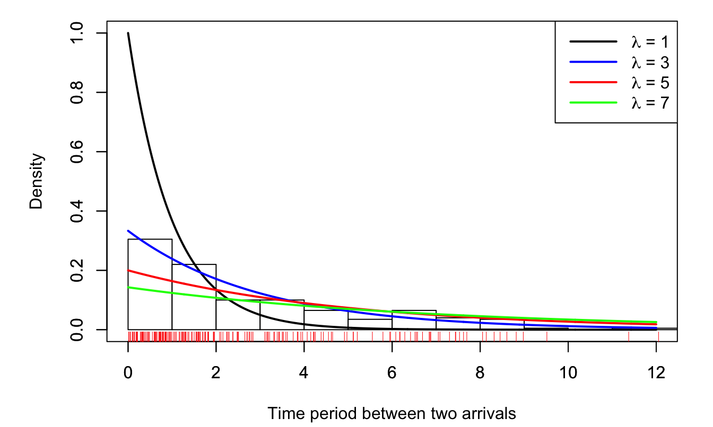
(#fig:MLE1)The red ticks, at the bottom, indicate observations (there are 200 of them). The historgram is based on these 200 observations
What is your estimate of \(\lambda\)? Intuitively, one is led to take the \(\lambda\) for which the (theoretical) distribution is the closest to the histogram (that can be seen as an “empirical distribution”). This approach is consistent with the idea of picking the \(\lambda\) for which the probability of observing the values included in \(\mathbf{y}\) is the highest.
Let us be more formal. Assume that you have only four observations: \(y_1=1.1\), \(y_2=2.2\), \(y_3=0.7\) and \(y_4=5.0\). What was the probability of jointly observing:
- \(1.1-\varepsilon \le Y_1 < 1.1+\varepsilon\),
- \(2.2-\varepsilon \le Y_2 < 2.2+\varepsilon\),
- \(0.7-\varepsilon \le Y_3 < 0.7+\varepsilon\), and
- \(5.0-\varepsilon \le Y_4 < 5.0+\varepsilon\)?
Because the \(y_i\)’s are i.i.d., this probability is \(\prod_{i=1}^4(2\varepsilon f(y_i,\lambda))\). The next plot shows the probability (divided by \(16\varepsilon^4\), which does not depend on \(\lambda\)) as a function of \(\lambda\).

(#fig:MLE2)Proba. that \(y_i-\varepsilon \le Y_i < y_i+\varepsilon\), \(i \in \{1,2,3,4\}\). The vertical red line indicates the maximum of the function.
The value of \(\lambda\) that maximizes the probability is 2.26.
Let us come back to the example with 200 observations:

(#fig:MLE3)Log-likelihood function associated with the 200 i.i.d. observations. The vertical red line indicates the maximum of the function.
In that case, the value of \(\lambda\) that maxmimizes the probability is 3.04.
6.2.2 Definition and properties
\(f(y;\boldsymbol\theta)\) denotes the probability density function (p.d.f.) of a random variable \(Y\) which depends on a set of parameters \(\boldsymbol\theta\). The density of \(n\) independent and identically distributed (i.i.d.) observations of \(Y\) is given by: \[ f(\mathbf{y};\boldsymbol\theta) = \prod_{i=1}^n f(y_i;\boldsymbol\theta), \] where \(\mathbf{y}\) denotes the vector of observations; \(\mathbf{y} = \{y_1,\dots,y_n\}\).
(#def:likelihood) (Likelihood function) The likelihood function is: \[ \mathcal{L}: \boldsymbol\theta \rightarrow \mathcal{L}(\boldsymbol\theta;\mathbf{y})=f(\mathbf{y};\boldsymbol\theta)=f(y_1,\dots,y_n;\boldsymbol\theta). \]
We often work with \(\log \mathcal{L}\), the log-likelihood function.
(#exm:normal) (Gaussian distribution) If \(y_i \sim \,i.i.d.\, \mathcal{N}(\mu,\sigma^2)\), then \[ \log \mathcal{L}(\boldsymbol\theta;\mathbf{y}) = - \frac{1}{2}\sum_{i=1}^n\left( \log \sigma^2 + \log 2\pi + \frac{(y_i-\mu)^2}{\sigma^2} \right). \]
(#def:score) (Score) The score \(S(y;\boldsymbol\theta)\) is given by \(\frac{\partial \log f(y;\boldsymbol\theta)}{\partial \boldsymbol\theta}\).
If \(y_i \sim \mathcal{N}(\mu,\sigma^2)\), and using \(\boldsymbol\theta=[\mu,\sigma^2]'\) (Example @ref(exm:normal)), then \[ \frac{\partial \log f(y;\boldsymbol\theta)}{\partial \boldsymbol\theta} = \left[\begin{array}{c} \dfrac{\partial \log f(y;\boldsymbol\theta)}{\partial \mu}\\ \dfrac{\partial \log f(y;\boldsymbol\theta)}{\partial \sigma^2} \end{array}\right] = \left[\begin{array}{c} \dfrac{y-\mu}{\sigma^2}\\ \frac{1}{2\sigma^2}\left(\frac{(y-\mu)^2}{\sigma^2}-1\right) \end{array}\right]. \]
(#prp:score-expectation) (Score expectation) If differentiation can be passed under the integral sign and the support of \(Y\) does not depend on \(\boldsymbol\theta\), the expectation of the score is zero.
Proof. We have: \[\begin{eqnarray*} \mathbb{E}\left(\frac{\partial \log f(Y;\boldsymbol\theta)}{\partial \boldsymbol\theta}\right) &=& \int \frac{\partial \log f(y;\boldsymbol\theta)}{\partial \boldsymbol\theta} f(y;\boldsymbol\theta) dy \\ &=& \int \frac{\partial f(y;\boldsymbol\theta)/\partial \boldsymbol\theta}{f(y;\boldsymbol\theta)} f(y;\boldsymbol\theta) dy = \frac{\partial}{\partial \boldsymbol\theta} \int f(y;\boldsymbol\theta) dy\\ &=&\partial 1 /\partial \boldsymbol\theta = 0, \end{eqnarray*}\] which gives the result.
(#def:Fisher) (Fisher information matrix) The information matrix is (minus) the the expectation of the second derivatives of the log-likelihood function: \[ \mathcal{I}_Y(\boldsymbol\theta) = - \mathbb{E} \left( \frac{\partial^2 \log f(Y;\boldsymbol\theta)}{\partial \boldsymbol\theta \partial \boldsymbol\theta'} \right). \]
(#prp:information-equality) (Information equality) Under the same regularity conditions used for the score identity, we have \[ \mathcal{I}_Y(\boldsymbol\theta) = \mathbb{E} \left[ \left( \frac{\partial \log f(Y;\boldsymbol\theta)}{\partial \boldsymbol\theta} \right) \left( \frac{\partial \log f(Y;\boldsymbol\theta)}{\partial \boldsymbol\theta} \right)' \right] = \mathbb{V}ar[S(Y;\boldsymbol\theta)]. \]
Proof. We have \(\frac{\partial^2 \log f(Y;\boldsymbol\theta)}{\partial \boldsymbol\theta \partial \boldsymbol\theta'} = \frac{\partial^2 f(Y;\boldsymbol\theta)}{\partial \boldsymbol\theta \partial \boldsymbol\theta'}\frac{1}{f(Y;\boldsymbol\theta)} - \frac{\partial \log f(Y;\boldsymbol\theta)}{\partial \boldsymbol\theta}\frac{\partial \log f(Y;\boldsymbol\theta)}{\partial \boldsymbol\theta'}\). The expectation of the first right-hand side term is \(\partial^2 1 /(\partial \boldsymbol\theta \partial \boldsymbol\theta') = \mathbf{0}\), which gives the result.
(#exm:unlabeled-div-26) If \(y_i \sim\,i.i.d.\, \mathcal{N}(\mu,\sigma^2)\), let \(\boldsymbol\theta = [\mu,\sigma^2]'\) then \[ \frac{\partial \log f(y;\boldsymbol\theta)}{\partial \boldsymbol\theta} = \left[\frac{y-\mu}{\sigma^2} \quad \frac{1}{2\sigma^2}\left(\frac{(y-\mu)^2}{\sigma^2}-1\right) \right]', \] and \[ \mathcal{I}_Y(\boldsymbol\theta) = \mathbb{E}\left( \frac{1}{\sigma^4} \left[ \begin{array}{cc} \sigma^2&y-\mu\\ y-\mu & \frac{(y-\mu)^2}{\sigma^2}-\frac{1}{2} \end{array}\right] \right)= \left[ \begin{array}{cc} 1/\sigma^2&0\\ 0 & 1/(2\sigma^4) \end{array}\right]. \]
(#prp:additiv) (Additive property of the Information matrix) The information matrix resulting from two independent experiments is the sum of the information matrices: \[ \mathcal{I}_{X,Y}(\boldsymbol\theta) = \mathcal{I}_X(\boldsymbol\theta) + \mathcal{I}_Y(\boldsymbol\theta). \]
Proof. Directly deduced from the definition of the information matrix (Def. @ref(def:Fisher)), using that the expectation of a product of independent variables is the product of the expectations.
(#thm:FDCR) (Frechet-Darmois-Cramer-Rao bound) Consider an unbiased estimator of \(\boldsymbol\theta\) denoted by \(\hat{\boldsymbol\theta}(Y)\). The variance of the random variable \(\boldsymbol\omega'\hat{\boldsymbol\theta}\) (which is a linear combination of the components of \(\hat{\boldsymbol\theta}\)) is larger than: \[ \boldsymbol\omega'\mathcal{I}_Y(\boldsymbol\theta)^{-1}\boldsymbol\omega, \] provided the information matrix is nonsingular and the usual regularity conditions hold.
Proof. Unbiasedness and differentiation under the integral imply \(\mathbb{C}ov[\hat{\boldsymbol\theta}(Y),S(Y;\boldsymbol\theta)]=Id\). The matrix covariance inequality then gives \(\mathbb{V}ar(\hat{\boldsymbol\theta})\succeq\mathcal{I}_Y(\boldsymbol\theta)^{-1}\). Premultiplying and postmultiplying by \(\boldsymbol\omega'\) and \(\boldsymbol\omega\) gives the stated scalar bound.
(#def:identif) (Identifiability) The vector of parameters \(\boldsymbol\theta\) is identifiable if two distinct parameter values cannot generate the same probability distribution. In a model described by densities, this means that for any \(\boldsymbol\theta^*\ne\boldsymbol\theta\): \[ f(\cdot;\boldsymbol\theta^*)\not\equiv f(\cdot;\boldsymbol\theta). \]
(#def:MLEest) (Maximum Likelihood Estimator (MLE)) The maximum likelihood estimator (MLE) is the vector \(\boldsymbol\theta\) that maximizes the likelihood function. Formally: \[\begin{equation} \boldsymbol\theta_{MLE} = \arg \max_{\boldsymbol\theta} \mathcal{L}(\boldsymbol\theta;\mathbf{y}) = \arg \max_{\boldsymbol\theta} \log \mathcal{L}(\boldsymbol\theta;\mathbf{y}).(\#eq:MLEestimator) \end{equation}\]
(#def:likFunction) (Likelihood equation) A necessary condition for maximizing the likelihood function (under regularity assumption, see Hypotheses @ref(hyp:MLEregularity)) is: \[\begin{equation} \dfrac{\partial \log \mathcal{L}(\boldsymbol\theta;\mathbf{y})}{\partial \boldsymbol\theta} = \mathbf{0}. \end{equation}\]
(#hyp:MLEregularity) (Regularity assumptions) We have:
- \(\boldsymbol\theta \in \Theta\) where \(\Theta\) is compact.
- \(\boldsymbol\theta_0\) is identified.
- The log-likelihood function is continuous in \(\boldsymbol\theta\).
- \(\mathbb{E}_{\boldsymbol\theta_0}(\log f(Y;\boldsymbol\theta))\) exists.
- The log-likelihood function is such that \((1/n)\log\mathcal{L}(\boldsymbol\theta;\mathbf{y})\) converges almost surely to \(\mathbb{E}_{\boldsymbol\theta_0}(\log f(Y;\boldsymbol\theta))\), uniformly in \(\boldsymbol\theta \in \Theta\).
- The log-likelihood function is twice continuously differentiable in an open neighborhood of \(\boldsymbol\theta_0\).
- The matrix \(\mathbf{I}(\boldsymbol\theta_0) = - \mathbb{E}_0 \left( \frac{\partial^2 \log \mathcal{L}(\boldsymbol\theta;\mathbf{y})}{\partial \boldsymbol\theta \partial \boldsymbol\theta'}\right)\) —the Fisher Information matrix— exists and is nonsingular.
(#prp:MLEproperties) (Properties of MLE) Under regularity conditions (Assumptions @ref(hyp:MLEregularity)), the MLE is:
- Consistent: \(\mbox{plim}\; \boldsymbol\theta_{MLE} = {\boldsymbol\theta}_0\) (\({\boldsymbol\theta}_0\) is the true vector of parameters).
- Asymptotically normal: \[\begin{equation} \boxed{\sqrt{n}(\boldsymbol\theta_{MLE} - \boldsymbol\theta_{0}) \overset{d}{\rightarrow} \mathcal{N}(0,\mathcal{I}_Y(\boldsymbol\theta_0)^{-1}).} (\#eq:normMLE) \end{equation}\]
- Asymptotically efficient: \(\boldsymbol\theta_{MLE}\) is asymptotically efficient and achieves the Frechet-Darmois-Cramer-Rao lower bound for consistent estimators.
- Invariant: The MLE of \(g(\boldsymbol\theta_0)\) is \(g(\boldsymbol\theta_{MLE})\) if \(g\) is a continuous and continuously differentiable function.
Proof. See Appendix @ref(AppendixProof).
Since \(\mathcal{I}_Y(\boldsymbol\theta_0)=\frac{1}{n}\mathbf{I}(\boldsymbol\theta_0)\), the asymptotic covariance matrix of the MLE is \([\mathbf{I}(\boldsymbol\theta_0)]^{-1}\), that is: \[ [\mathbf{I}(\boldsymbol\theta_0)]^{-1} = \left[- \mathbb{E}_0 \left( \frac{\partial^2 \log \mathcal{L}(\boldsymbol\theta;\mathbf{y})}{\partial \boldsymbol\theta \partial \boldsymbol\theta'}\right) \right]^{-1}. \] A direct (analytical) evaluation of this expectation is often out of reach. It can however be estimated by, either: \[\begin{eqnarray} \hat{\mathbf{I}}_1^{-1} &=& \left( - \frac{\partial^2 \log \mathcal{L}({\boldsymbol\theta_{MLE}};\mathbf{y})}{\partial {\boldsymbol\theta} \partial {\boldsymbol\theta}'}\right)^{-1}, (\#eq:III1)\\ \hat{\mathbf{I}}_2^{-1} &=& \left( \sum_{i=1}^n \frac{\partial \log \mathcal{L}({\boldsymbol\theta_{MLE}};y_i)}{\partial {\boldsymbol\theta}} \frac{\partial \log \mathcal{L}({\boldsymbol\theta_{MLE}};y_i)}{\partial {\boldsymbol\theta'}} \right)^{-1}. (\#eq:I2) \end{eqnarray}\]
Asymptotically, we have \((\hat{\mathbf{I}}_1^{-1})\hat{\mathbf{I}}_2=Id\), that is, the two formulas provide the same result.
In case of (suspected) misspecification, one can use the so-called sandwich estimator of the covariance matrix.11 This covariance matrix is given by: \[\begin{equation} \hat{\mathbf{I}}_3^{-1} = \hat{\mathbf{I}}_1^{-1} \hat{\mathbf{I}}_2 \hat{\mathbf{I}}_1^{-1}.(\#eq:III3) \end{equation}\]
6.2.3 MLE in practice
To implement MLE, we need:
- A parametric model (depending on the vector of parameters \(\boldsymbol\theta\) whose “true” value is \(\boldsymbol\theta_0\)) is specified.
- i.i.d. sources of randomness are identified.
- The density associated to one observation \(y_i\) is computed analytically (as a function of \(\boldsymbol\theta\)): \(f(y;\boldsymbol\theta)\).
- The log-likelihood is \(\log \mathcal{L}(\boldsymbol\theta;\mathbf{y}) = \sum_i \log f(y_i;\boldsymbol\theta)\).
- The MLE estimator results from the optimization problem (this is Eq. @ref(eq:MLEestimator)): \[\begin{equation} \boldsymbol\theta_{MLE} = \arg \max_{\boldsymbol\theta} \log \mathcal{L}(\boldsymbol\theta;\mathbf{y}). \end{equation}\]
- In large samples, \(\boldsymbol\theta_{MLE} \overset{a}{\sim} \mathcal{N}({\boldsymbol\theta}_0,\mathbf{I}(\boldsymbol\theta_0)^{-1})\), where \(\mathbf{I}(\boldsymbol\theta_0)^{-1}\) is estimated by means of Eq. @ref(eq:III1), Eq. @ref(eq:I2), or Eq. @ref(eq:III3). Most of the time, this computation is numerical.
6.2.4 Example: MLE estimation of a Gaussian mixture
Consider the returns of the Swiss Market Index (SMI). Assume that these returns are independently drawn from a mixture of Gaussian distributions. The p.d.f. \(f(x;\boldsymbol\theta)\), with \(\boldsymbol\theta = [\mu_1,\mu_2,\sigma_1,\sigma_2,p]'\), is given by: \[ p \frac{1}{\sqrt{2\pi\sigma_1^2}}\exp\left(-\frac{(x - \mu_1)^2}{2\sigma_1^2}\right) + (1-p)\frac{1}{\sqrt{2\pi\sigma_2^2}}\exp\left(-\frac{(x - \mu_2)^2}{2\sigma_2^2}\right). \] (See p.d.f. of mixtures of Gaussian distributions.)
The density is unchanged if the two components are relabelled. Thus, without a labelling convention such as \(\mu_1\le\mu_2\), the parameter vector is identified only up to permutation of the component labels. Numerical optimization may select either labelling.
Code
library(AEC);data(smi)
T <- dim(smi)[1]
h <- 5 # holding period (one week)
smi$r <- c(rep(NaN,h),
100*c(log(smi$Close[(1+h):T]/smi$Close[1:(T-h)])))
indic.dates <- seq(1,T,by=5) # weekly returns
smi <- smi[indic.dates,]
smi <- smi[complete.cases(smi),]
par(mfrow=c(1,1));par(plt=c(.15,.95,.1,.95))
plot(smi$Date,smi$r,type="l",xlab="",ylab="in percent")
abline(h=0,col="blue")
abline(h=mean(smi$r,na.rm = TRUE)+2*sd(smi$r,na.rm = TRUE),lty=3,col="blue")
abline(h=mean(smi$r,na.rm = TRUE)-2*sd(smi$r,na.rm = TRUE),lty=3,col="blue")
(#fig:smiData)Time series of SMI weekly returns (source: Yahoo Finance).
Build the log-likelihood function (fucntion log.f), and use the numerical BFGS algorithm to maximize it (using the optim wrapper):
Code
f <- function(theta,y){ # Likelihood function
mu.1 <- theta[1]; mu.2 <- theta[2]
sigma.1 <- exp(theta[3]); sigma.2 <- exp(theta[4])
p <- exp(theta[5])/(1+exp(theta[5]))
res <- p*1/sqrt(2*pi*sigma.1^2)*exp(-(y-mu.1)^2/(2*sigma.1^2)) +
(1-p)*1/sqrt(2*pi*sigma.2^2)*exp(-(y-mu.2)^2/(2*sigma.2^2))
return(res)
}
log.f <- function(theta,y){ #log-Likelihood function
return(-sum(log(f(theta,y))))
}
res.optim <- optim(c(0,0,log(0.5),log(1.5),.5),
log.f,
y=smi$r,
method="BFGS", # could be "Nelder-Mead"
control=list(trace=FALSE,maxit=100),hessian=TRUE)
theta <- res.optim$par
theta## [1] 0.3011448 -1.3171034 0.5718777 1.5730684 1.9458617Next, compute estimates of the covariance matrix of the MLE (using Eqs. @ref(eq:III1), @ref(eq:I2), and @ref(eq:III3)), and compare the three sets of resulting standard deviations for the five estimated paramters:
Code
# Hessian approach:
I.1 <- solve(res.optim$hessian)
# Outer-product of gradient approach:
log.f.0 <- log(f(theta,smi$r))
epsilon <- .00000001
d.log.f <- NULL
for(i in 1:length(theta)){
theta.i <- theta
theta.i[i] <- theta.i[i] + epsilon
log.f.i <- log(f(theta.i,smi$r))
d.log.f <- cbind(d.log.f,
(log.f.i - log.f.0)/epsilon)
}
I.2 <- solve(t(d.log.f) %*% d.log.f)
# Misspecification-robust approach (sandwich formula):
I.3 <- I.1 %*% solve(I.2) %*% I.1
data_table(cbind(Hessian=diag(I.1), OPG=diag(I.2),
Sandwich=diag(I.3)), digits=6)| Hessian | OPG | Sandwich |
|---|---|---|
| 0.003683 | 0.003199 | 0.005865 |
| 0.227128 | 0.194561 | 0.387129 |
| 0.001837 | 0.000882 | 0.005463 |
| 0.008374 | 0.002046 | 0.035897 |
| 0.092177 | 0.040365 | 0.314050 |
According to the first (respectively third) type of estimate for the covariance matrix, a 95% confidence interval for \(\mu_1\) is [0.182, 0.42] (resp. [0.151, 0.451]).
We estimated \(\log(\sigma_1)\) and \(\log(\sigma_2)\) rather than the standard deviations themselves, which enforces \(\sigma_1,\sigma_2>0\). Similarly, we estimated \(\nu=\log(p/(1-p))\) rather than \(p\), so that \(p=\exp(\nu)/(1+\exp(\nu))\) always lies in \((0,1)\). To obtain standard errors for the transformed parameters, we use the Delta method. For a differentiable function \(g\) and large \(n\), we have: \[\begin{equation} \mathbb{V}ar(g(\hat{\boldsymbol\theta}_n)) \approx \frac{\partial g(\hat{\boldsymbol\theta}_n)}{\partial \boldsymbol\theta'}\mathbb{V}ar(\hat{\boldsymbol\theta}_n)\frac{\partial g(\hat{\boldsymbol\theta}_n)'}{\partial \boldsymbol\theta}.(\#eq:DeltaMethod) \end{equation}\]
Code
g <- function(theta){
mu.1 <- theta[1]; mu.2 <- theta[2]
sigma.1 <- exp(theta[3]); sigma.2 <- exp(theta[4])
p <- exp(theta[5])/(1+exp(theta[5]))
return(c(mu.1,mu.2,sigma.1,sigma.2,p))
}
# Computation of g's gradient around estimated theta:
eps <- .00001
g.theta <- g(theta)
g.gradient <- NULL
for(i in 1:5){
theta.perturb <- theta
theta.perturb[i] <- theta[i] + eps
g.gradient <- cbind(g.gradient,(g(theta.perturb)-g.theta)/eps)
}
Var <- g.gradient %*% I.3 %*% t(g.gradient)
stdv.g.theta <- sqrt(diag(Var))
stdv.theta <- sqrt(diag(I.3))
data_table(cbind(Estimate=theta, SE=stdv.theta,
"Transformed estimate"=g.theta, "Delta-method SE"=stdv.g.theta),
digits=4)| Estimate | SE | Transformed estimate | Delta-method SE |
|---|---|---|---|
| 0.3011 | 0.0766 | 0.3011 | 0.0766 |
| -1.3171 | 0.6222 | -1.3171 | 0.6222 |
| 0.5719 | 0.0739 | 1.7716 | 0.1309 |
| 1.5731 | 0.1895 | 4.8214 | 0.9135 |
| 1.9459 | 0.5604 | 0.8750 | 0.0613 |
The previous results show that the MLE estimate of \(p\) is 0.8749947, and its standard deviation is approximately equal to 0.0612959.
To finish with, let us draw the estimated parametric p.d.f. (the mixture of Gaussian distribution), and compare it to a non-parametric (kernel-based) estimate of this p.d.f. (using function density):
Code
x <- seq(-5,5,by=.01)
par(plt=c(.1,.95,.1,.95))
plot(x,f(theta,x),type="l",lwd=2,xlab="returns, in percent",ylab="",
ylim=c(0,1.4*max(f(theta,x))))
lines(density(smi$r),type="l",lwd=2,lty=3)
lines(x,dnorm(x,mean=mean(smi$r),sd = sd(smi$r)),col="red",lty=2,lwd=2)
rug(smi$r,col="blue")
legend("topleft",
c("Kernel estimate (non-parametric)",
"Estimated mixture of Gaussian distr. (MLE, parametric)",
"Normal distribution"),
lty=c(3,1,2),lwd=c(2), # line width
col=c("black","black","red"),pt.bg=c(1),pt.cex = c(1),
bg="white",seg.len = 4)
(#fig:smidistri)Comparison of different estimates of the distribution of returns.
6.2.5 Test procedures
Suppose we want to test the following parameter restrictions: \[\begin{equation} \boxed{H_0: \underbrace{h(\boldsymbol\theta)}_{r \times 1}=0.} \end{equation}\]
In the context of MLE, three tests are largely used:
- Likelihood Ratio (LR) test,
- Wald (W) test,
- Lagrange Multiplier (LM) test.
Here is the rationale behind these three tests:12
- LR: If \(h(\boldsymbol\theta)=0\), then imposing this restriction during the estimation (restricted estimator) should not result in a large decrease in the likelihood function (w.r.t the unrestricted estimation).
- Wald: If \(h(\boldsymbol\theta)=0\), then \(h(\hat{\boldsymbol\theta})\) should not be far from \(0\) (even if these restrictions are not imposed during the MLE).
- LM: If \(h(\boldsymbol\theta)=0\), then the gradient of the likelihood function should be small when evaluated at the restricted estimator.
In terms of implementation, while the LR necessitates to estimate both restricted and unrestricted models, the Wald test requires the estimation of the unrestricted model only, and the LM tests requires the estimation of the restricted model only.
As shown below, the three test statistics associated with these three tests coincide asymptotically. (Therefore, they naturally have the same asymptotic distribution, that are \(\chi^2\).)
(#prp:Walddistri) (Asymptotic distribution of the Wald statistic) Under regularity conditions (Assumptions @ref(hyp:MLEregularity)) and under \(H_0: h(\boldsymbol\theta)=0\), the Wald statistic, defined by: \[ \boxed{\xi^W = h(\hat{\boldsymbol\theta})' \mathbb{V}ar[h(\hat{\boldsymbol\theta})]^{-1} h(\hat{\boldsymbol\theta}),} \] where \[\begin{equation} \mathbb{V}ar[h(\hat{\boldsymbol\theta})] = \left(\frac{\partial h(\hat{\boldsymbol\theta})}{\partial \boldsymbol\theta'} \right) \mathbb{V}ar[\hat{\boldsymbol\theta}] \left(\frac{\partial h(\hat{\boldsymbol\theta})'}{\partial \boldsymbol\theta} \right),(\#eq:varinWald) \end{equation}\] is asymptotically \(\chi^2(r)\), where the number of degrees of freedom \(r\) corresponds to the dimension of \(h(\boldsymbol\theta)\). (Note that Eq. @ref(eq:varinWald) is the same as the one used in the Delta method, see Eq. @ref(eq:DeltaMethod).)
The Wald test, defined by the critical region \[ \{\xi^W \ge \chi^2_{1-\alpha}(r)\}, \] where \(\chi^2_{1-\alpha}(r)\) denotes the quantile of level \(1-\alpha\) of the \(\chi^2(r)\) distribution, has asymptotic level \(\alpha\) and is consistent.13
Proof. See Appendix @ref(AppendixProof).
In practice, in Eq. @ref(eq:varinWald), \(\mathbb{V}ar[\hat{\boldsymbol\theta}]\) is replaced by an estimate given, e.g., by Eq. @ref(eq:III1), Eq. @ref(eq:I2), or Eq. @ref(eq:III3).
(#prp:LMdistri) (Asymptotic distribution of the LM test statistic) Under regularity conditions (Assumptions @ref(hyp:MLEregularity)) and under \(H_0: h(\boldsymbol\theta)=0\), the LM statistic \[\begin{equation} \boxed{\xi^{LM} = \left(\left.\frac{\partial \log \mathcal{L}(\boldsymbol\theta)}{\partial \boldsymbol\theta'}\right|_{\boldsymbol\theta = \hat{\boldsymbol\theta}^0} \right) [\mathbf{I}(\hat{\boldsymbol\theta}^0)]^{-1} \left(\left.\frac{\partial \log \mathcal{L}(\boldsymbol\theta)}{\partial \boldsymbol\theta }\right|_{\boldsymbol\theta = \hat{\boldsymbol\theta}^0} \right),} (\#eq:xiLM) \end{equation}\] (where \(\hat{\boldsymbol\theta}^0\) is the restricted MLE estimator) is \(\chi^2(r)\).
The test defined by the critical region: \[ \{\xi^{LM} \ge \chi^2_{1-\alpha}(r)\} \] has asymptotic level \(\alpha\) and is consistent (see Defs. @ref(def:asmyptlevel) and @ref(def:asmyptconsisttest)). This test is called Score or Lagrange Multiplier (LM) test.
Proof. See Appendix @ref(AppendixProof).
(#def:LR) (Likelihood Ratio test statistics) The likelihood ratio associated to a restriction of the form \(H_0: h({\boldsymbol\theta})=0\) is given by: \[ LR = \frac{\mathcal{L}_R(\boldsymbol\theta;\mathbf{y})}{\mathcal{L}_U(\boldsymbol\theta;\mathbf{y})} \quad (\in [0,1]), \] where \(\mathcal{L}_R\) (respectively \(\mathcal{L}_U\)) is the likelihood function that imposes (resp. that does not impose) the restriction. The likelihood ratio test statistic is given by \(-2\log(LR)\), that is: \[ \boxed{\xi^{LR}= 2 (\log\mathcal{L}_U(\boldsymbol\theta;\mathbf{y})-\log\mathcal{L}_R(\boldsymbol\theta;\mathbf{y})).} \]
(#prp:equivLRLMW) (Asymptotic equivalence of LR, LM, and Wald tests) Under the null hypothesis \(H_0\), we have, asymptotically: \[ \xi^{LM} = \xi^{LR} = \xi^{W}. \]
Proof. See Appendix @ref(AppendixProof).
6.3 Bayesian approach
GMM and maximum likelihood treat the parameter as fixed and evaluate estimators through repeated samples. Bayesian inference instead represents uncertainty about the parameter with a probability distribution and updates that distribution after observing the data.
6.3.1 Introduction
An excellent introduction to Bayesian methods is proposed by Martin Haugh, 2017.
As suggested by the name of this approach, the starting point is the Bayes formula: \[ \mathbb{P}(A|B) = \frac{\mathbb{P}(A \& B)}{\mathbb{P}(B)}, \] where \(A\) and \(B\) are two “events”. For instance, \(A\) may be: parameter \(\alpha\) (conceived as something stochastic) lies in interval \([a,b]\). Assume that you are interested in the probability of occurrence of \(A\). Without any specific information (or “unconditionally”), this probability if \(\mathbb{P}(A)\). Your evaluation of this probability can only be better if you are provided with any additional form of information. Typically, if the event \(B\) tends to occur simultaneously with \(A\), then knowledge of \(B\) can be useful. The Bayes formula says how this additional information (on \(B\)) can be used to “update” the probability of event \(A\).
Suppose the structure and probability distributions of the data-generating process are known, but their parameter values \(\boldsymbol\theta\) are not. Before observing the sample, uncertainty about these parameters is represented by a prior distribution. Bayes’ formula combines the prior with the likelihood to produce the posterior distribution.14 A particular sample can shift a posterior or even increase uncertainty about some feature relative to the prior; posterior concentration is a large-sample property that requires additional conditions.
Let us formalize this intuition. Define the prior by \(f_{\boldsymbol\theta}({\boldsymbol\theta})\) and the model realizations (the “data”) by vector \(\mathbf{y}\). The joint distribution of \((\mathbf{y},{\boldsymbol\theta})\) is given by: \[ f_{Y,{\boldsymbol\theta}}(\mathbf{y},{\boldsymbol\theta}) = f_{Y|{\boldsymbol\theta}}(\mathbf{y},{\boldsymbol\theta})f_{\boldsymbol\theta}({\boldsymbol\theta}), \] and, symmetrically, by \[ f_{Y,{\boldsymbol\theta}}(\mathbf{y},{\boldsymbol\theta}) = f_{{\boldsymbol\theta}|Y}({\boldsymbol\theta},\mathbf{y})f_Y(\mathbf{y}), \] where \(f_{{\boldsymbol\theta}|Y}(\cdot,\mathbf{y})\), the distribution of the parameters conditional on the observations, is the posterior distribution.
The last two equations imply that: \[\begin{equation} f_{{\boldsymbol\theta}|Y}({\boldsymbol\theta},\mathbf{y}) = \frac{f_{Y|{\boldsymbol\theta}}(\mathbf{y},{\boldsymbol\theta})f_{{\boldsymbol\theta}}({\boldsymbol\theta})}{f_Y(\mathbf{y})}.(\#eq:post1) \end{equation}\] Note that \(f_Y\) is the marginal (or unconditional) distribution of \(\mathbf{y}\), that can be written: \[\begin{equation} f_Y(\mathbf{y}) = \int f_{Y|{\boldsymbol\theta}}(\mathbf{y},{\boldsymbol\theta})f_{\boldsymbol\theta}({\boldsymbol\theta}) d {\boldsymbol\theta}. \end{equation}\]
Eq. @ref(eq:post1) is sometimes rewritten as follows: \[\begin{equation} f_{{\boldsymbol\theta}|Y}({\boldsymbol\theta},\mathbf{y}) \propto f_{{\boldsymbol\theta},Y}({\boldsymbol\theta},\mathbf{y}) := f_{Y|{\boldsymbol\theta}}(\mathbf{y},{\boldsymbol\theta})f_{\boldsymbol\theta}({\boldsymbol\theta}), (\#eq:post2) \end{equation}\] where \(\propto\) means, loosely speaking, “proportional to”. In rare instances, starting from given priors, one can analytically compute the posterior distribution \(f_{\boldsymbol\theta}({\boldsymbol\theta},\mathbf{y})\). However, in most cases, this is out of reach. One then has to resort to numerical approaches to compute the posterior distribution. Monte Carlo Markov Chains (MCMC) is one of them.
In regular, correctly specified, fixed-dimensional parametric models, a Bernstein–von Mises theorem often implies that the posterior is asymptotically normal around the MLE, with covariance given by the inverse Fisher information. In that setting, Bayesian credible intervals and likelihood-based confidence intervals become asymptotically equivalent. The result can fail in irregular, high-dimensional, nonidentified, or misspecified models, or with unsuitable priors.
6.3.2 Monte-Carlo Markov Chains
Closed-form posterior distributions are exceptional. Markov chain Monte Carlo methods approximate posterior expectations by generating draws whose long-run distribution is the posterior.
MCMC uses simulation to approximate a distribution that is difficult to derive or integrate analytically. In many settings, we can generate draws whose limiting distribution is the posterior even when its normalizing constant is unavailable.
(#def:MC) (Markov Chain) The sequence \(\{z_i\}\) is said to be a (first-order) Markovian process is it satisfies: \[ f(z_i|z_{i-1},z_{i-2},\dots) = f(z_i|z_{i-1}). \]
The Metropolis-Hastings (MH) algorithm generates a sequence of parameter draws whose distribution approaches the posterior in Eq. @ref(eq:post1).
The MH algorithm is a recursive algorithm. That is, one can draw the \(i^{th}\) value of \({\boldsymbol\theta}\), denoted by \({\boldsymbol\theta}_i\), if one has already drawn \({\boldsymbol\theta}_{i-1}\). Assume we have \({\boldsymbol\theta}_{i-1}\). We obtain a value for \({\boldsymbol\theta}_i\) by implementing the following steps:
- Draw \(\tilde{{\boldsymbol\theta}}_i\) from the conditional distribution \(Q_{\tilde{{\boldsymbol\theta}}|{\boldsymbol\theta}}(\cdot,{\boldsymbol\theta}_{i-1})\), called proposal distribution.
- Draw \(u\) in a uniform distribution on \([0,1]\).
- Compute \[\begin{equation} \alpha(\tilde{{\boldsymbol\theta}}_i,{\boldsymbol\theta}_{i-1}):= \min\left(\frac{f_{{\boldsymbol\theta},Y}(\tilde{{\boldsymbol\theta}}_i,\mathbf{y})}{f_{{\boldsymbol\theta},Y}({\boldsymbol\theta}_{i-1},\mathbf{y})}\times\frac{Q_{\tilde{{\boldsymbol\theta}}|{\boldsymbol\theta}}({\boldsymbol\theta}_{i-1},\tilde{{\boldsymbol\theta}}_i)}{Q_{\tilde{{\boldsymbol\theta}}|{\boldsymbol\theta}}(\tilde{{\boldsymbol\theta}}_i,{\boldsymbol\theta}_{i-1})},1\right),(\#eq:mh-acceptance) \end{equation}\] where \(f_{{\boldsymbol\theta},Y}\) is given in Eq. @ref(eq:post2).
- If \(u<\alpha(\tilde{{\boldsymbol\theta}}_i,{\boldsymbol\theta}_{i-1})\), then take \({\boldsymbol\theta}_i = \tilde{{\boldsymbol\theta}}_i\), otherwise we leave \({\boldsymbol\theta}_i\) equal to \({\boldsymbol\theta}_{i-1}\).
It can be shown that, the distribution of the draws converges to the posterior distribution. That is, after a sufficiently large number of iterations, the draws can be considered to be drawn from the posterior distribution.15
To get some insights into the algorithm, consider the case of a symmetric proposal distribution, that is: \[\begin{equation} Q_{\tilde{{\boldsymbol\theta}}|{\boldsymbol\theta}}(\tilde{{\boldsymbol\theta}}_i,{\boldsymbol\theta}_{i-1})=Q_{\tilde{{\boldsymbol\theta}}|{\boldsymbol\theta}}({\boldsymbol\theta}_{i-1},\tilde{{\boldsymbol\theta}}_i).(\#eq:symmQ) \end{equation}\] We then have: \[\begin{equation} \alpha(\tilde{{\boldsymbol\theta}},{\boldsymbol\theta}_{i-1})= \min\left(\frac{q(\tilde{{\boldsymbol\theta}},y)}{q({\boldsymbol\theta}_{i-1},y)},1\right). (\#eq:hypoQ) \end{equation}\] Remember that, up to the marginal distribution of the data (\(f_Y(\mathbf{y})\)), \(f_{{\boldsymbol\theta},Y}(\tilde{{\boldsymbol\theta}},\mathbf{y})\) is the probability of observing \(\mathbf{y}\) conditional on having a model parameterized by \(\tilde{\boldsymbol\theta}\). Then, under Eq. @ref(eq:hypoQ), it appears that if this probability is larger for \(\tilde{\boldsymbol\theta}\) than for \({\boldsymbol\theta}_{i-1}\) (in which case \(\tilde{\boldsymbol\theta}\) seems “more consistent with the observations \(\mathbf{y}\)” than \({\boldsymbol\theta}_{i-1}\)), we accept \({\boldsymbol\theta}_i\). By contrast, if \(f_{{\boldsymbol\theta},Y}(\tilde{{\boldsymbol\theta}},\mathbf{y})<f_{{\boldsymbol\theta},Y}({\boldsymbol\theta}_{i-1},\mathbf{y})\), then we do not necessarily accept the proposed value \(\tilde{{\boldsymbol\theta}}\), especially if \(f_{{\boldsymbol\theta},Y}(\tilde{{\boldsymbol\theta}},\mathbf{y})\ll f_{{\boldsymbol\theta},Y}({\boldsymbol\theta}_{i-1},\mathbf{y})\) (in which case \(\tilde{\boldsymbol\theta}\) seems far less consistent with the observations \(\mathbf{y}\) than \({\boldsymbol\theta}_{i-1}\), and, accordingly, the acceptance probability, namely \(\alpha(\tilde{{\boldsymbol\theta}},{\boldsymbol\theta}_{i-1})\), is small).
The choice of the proposal distribution \(Q_{\tilde{\boldsymbol\theta}|{\boldsymbol\theta}}\) determines how quickly the algorithm explores the posterior. Equation @ref(eq:mh-acceptance) shows that the ideal proposal would be the posterior itself: then every proposal would be accepted. This choice is unavailable in practice because the purpose of the algorithm is precisely to approximate that posterior.
A common choice for \(Q\) is a multivariate normal distribution. If \({\boldsymbol\theta}\) is of dimension \(K\), we can for instance use: \[ Q(\tilde{\boldsymbol\theta},{\boldsymbol\theta})= \frac{1}{\left(\sqrt{2\pi\sigma^2}\right)^K}\exp\left(-\frac{1}{2}\sum_{j=1}^K\frac{(\tilde{\boldsymbol\theta}_j-{\boldsymbol\theta}_j)^2}{\sigma^2}\right), \] which is an example of symmetric proposal distribution (see Eq. @ref(eq:symmQ)). Equivalently, we then have: \[ \tilde{\boldsymbol\theta} = {\boldsymbol\theta} + \varepsilon, \] where \(\varepsilon\) is a \(K\)-dimensional vector of independent zero-mean normal disturbances of variance \(\sigma^2\).16 One then has to determine an appropriate value for \(\sigma\). If it is too low, then \(\alpha\) will be close to 1 (as \(\tilde{{\boldsymbol\theta}}_i\) will be close to \({\boldsymbol\theta}_{i-1}\)), and we will accept very often the proposed value (\(\tilde{{\boldsymbol\theta}}_i\)). This seems to be a favourable situation. But it may not be. Indeed, it means that it will take a large number of iterations to explore the whole distribution of \({\boldsymbol\theta}\). What if \(\sigma\) is very large? In this case, it is likely that the porposed values (\(\tilde{{\boldsymbol\theta}}_i\)) will often result in poor likelihoods; The probability of acceptance will then be low and the Markov chain may be blocked at its initial value. Therefore, intermediate values of \(\sigma^2\) have to be determined. The acceptance rate (i.e., the average value of \(\alpha(\tilde{{\boldsymbol\theta}},{\boldsymbol\theta}_{i-1})\)) can be used as a guide for that. Indeed, a literature explores the optimal values for such acceptance rate (in order to obtain the best possible fit of the posterior for a minimum number of algorithm iterations). In particular, following Roberts, Gelman, and Gilks (1997), people often target acceptance rate of the order of magnitude of 20%.
It is important to note that, to implement this approach, one only has to be able to compute the joint p.d.f. \(q({\boldsymbol\theta},\mathbf{y})=f_{Y|{\boldsymbol\theta}}(\mathbf{y},{\boldsymbol\theta})f_{\boldsymbol\theta}({\boldsymbol\theta})\) (Eq. @ref(eq:post2)). That is, as soon as one can evaluate the likelihood (\(f_{Y|{\boldsymbol\theta}}(\mathbf{y},{\boldsymbol\theta})\)) and the prior (\(f_{\boldsymbol\theta}({\boldsymbol\theta})\)), we can employ this methodology.
6.3.3 Example: AR(1) specification
In the following example, we employ MCMC in order to estimate the posterior distributions of the three parameters defining an AR(1) model (see Section @ref(ARsection)). The specification is as follows: \[ y_t = \mu + \rho y_{t-1} + \sigma \varepsilon_{t}, \quad \varepsilon_t \sim \,i.i.d.\,\mathcal{N}(0,1). \] Hence, we have \({\boldsymbol\theta} = [\mu,\rho,\sigma]\). We first simulate the process over \(T=20\) periods.
Code

The likelihood \(f_{Y|{\boldsymbol\theta}}(\mathbf{y},{\boldsymbol\theta})\) combines the stationary density of the initial observation with the Gaussian transition densities. We use a logistic transformation to constrain \(\rho\) to \((0,1)\) and an exponential transformation to ensure that \(\sigma\) is positive.
Code
likelihood <- function(param,Y){
mu <- param[1]
rho <- exp(param[2])/(1+exp(param[2]))
sigma <- exp(param[3])
MU <- mu/(1-rho)
SIGMA2 <- sigma^2/(1-rho^2)
L <- 1/sqrt(2*pi*SIGMA2)*exp(-(Y[1]-MU)^2/(2*SIGMA2))
Y1 <- Y[2:length(Y)]
Y0 <- Y[1:(length(Y)-1)]
aux <- 1/sqrt(2*pi*sigma^2)*exp(-(Y1-mu-rho*Y0)^2/(2*sigma^2))
L <- L * prod(aux)
return(L)
}We use a Gaussian random-walk proposal distribution \(Q_{\tilde{\boldsymbol\theta}|{\boldsymbol\theta}}(\tilde{\boldsymbol\theta},{\boldsymbol\theta})\).
Code
We consider Gaussian priors:
Code
The joint density \(f_{{\boldsymbol\theta},Y}\) is the product of the likelihood and the prior density.
Code
The acceptance probability \(\alpha\) is given by Eq. @ref(eq:mh-acceptance).
Code
We then apply the Metropolis-Hastings recursion to generate draws from the posterior distribution.
Code
MCMC <- function(Y,means_prior,stdv_prior,a,N){
x <- means_prior
all_theta <- NULL
count_accept <- 0
for(i in 1:N){
y <- rQ(x,a)
alph <- alpha(y,x,means_prior,stdv_prior,a)
#print(alph)
u <- runif(1)
if(u < alph){
count_accept <- count_accept + 1
x <- y}
all_theta <- rbind(all_theta,x)}
print(paste("Acceptance rate:",toString(round(count_accept/N,3))))
return(all_theta)}Specify the Gaussian priors:
Code
## [1] "Acceptance rate: 0.116"Code
par(mfrow=c(2,3))
for(i in 1:length(means_prior)){
m <- means_prior[i]
s <- stdv_prior[i]
x <- seq(m-3*s,m+3*s,length.out = 100)
par(mfg=c(1,i))
aux <- density(resultMCMC[,i])
par(plt=c(.15,.95,.15,.85))
plot(x,dnorm(x,m,s),type="l",xlab="",ylab="",main=paste("Parameter",i),
ylim=c(0,max(aux$y)))
lines(aux$x,aux$y,col="red",lwd=2)
abline(v=true_values[i],lty=2,col="blue")
par(mfg=c(2,i))
plot(resultMCMC[,i],1:length(resultMCMC[,i]),xlim=c(min(x),max(x)),
type="l",xlab="",ylab="")}
(#fig:MCMC8)The upper line of plot compares prior (black) and posterior (red) distributions. The vertical dashed blue lines indicate the true values of the parameters. The second row of plots show the sequence of \(\boldsymbol\theta_i\)’s generated by the MCMC algorithm. These sequences are the ones used to produce the posterior distributions (red lines) in the upper plots.
6.4 Chapter recap
- Section @ref(secGMM) builds estimators from population moment conditions; Definition @ref(def:GMM) turns their sample analogues into a quadratic criterion.
- The weighting matrix determines GMM efficiency, while Section @ref(overidentif) uses excess moment conditions to assess specification.
- Definition @ref(def:likelihood) views the observed sample as a function of the parameter; Definitions @ref(def:score) and @ref(def:Fisher) summarize its local slope and curvature.
- Definition @ref(def:MLEest) defines the maximum-likelihood estimator, and Proposition @ref(prp:MLEproperties) states its main large-sample properties under regularity conditions.
- Section @ref(TestMLE) compares Wald, LM, and likelihood-ratio tests; Proposition @ref(prp:equivLRLMW) establishes their asymptotic equivalence under the null.
- Section @ref(bayesian) combines priors and likelihoods into posterior distributions, while Definition @ref(def:MC) supplies the Markov-chain language used for posterior simulation.
6.5 Exercises
Attempt each question and explain your reasoning, including for true-or-false statements. Foundation exercises apply a result directly; Standard exercises require several steps or a short proof; Advanced exercises combine several results or require a longer derivation. Worked solutions and exercise-specific hints are reserved for teaching sessions and are not included in this student edition.
(#exr:estimation-mle-exponential) (Maximum likelihood for an exponential distribution) Standard | Analytical
Review Section @ref(secMLE).
Exponential population: Let \(X_1,\dots,X_n\) be i.i.d. with distribution \(\mathcal{E}(\lambda)\), whose density is
\[f_X(x) = \frac{1}{\lambda} e^{-\frac{1}{\lambda}x},\]
with \(\lambda > 0\) and \(x>0\). Suppose the observed sample is \(x_1,\dots,x_n\). Denote it by \(\mathbf{x}=(x_1,\dots,x_n)'\).
Construct the likelihood function \(\mathcal{L}(\theta; \mathbf{X})\). What is \(\theta\)?
Construct the log-likelihood function \(\log \mathcal{L}(\theta; \mathbf{X})\).
What is the maximum likelihood estimator of \(\theta\)?
Compute the second derivative of the log-likelihood function \(\log \mathcal{L}(\theta; \mathbf{X})\).
Noting that \(\mathbb{E}(X) = \lambda\), compute \(\mathbf{I}(\theta_0) = \mathcal{I}_{x_1, \dots, x_n}(\theta_0)\).
Find the asymptotic distribution of \(\theta_{MLE}\).
(#exr:estimation-mle-poisson) (Maximum likelihood for a Poisson distribution) Standard | Analytical
Review Section @ref(secMLE).
Poisson population: Let \(X_1,\dots,X_n\) be i.i.d. Poisson random variables with parameter \(\lambda\), so that \(\mathbb{P}(X_i=x)=e^{-\lambda}\lambda^x/x!\) for \(\lambda>0\) and \(x=0,1,2,\dots\). Suppose the observed sample is \(x_1,\dots,x_n\), denoted by \(\mathbf{x}=(x_1,\dots,x_n)'\).
Answer the same questions as in the preceding exponential-distribution exercise.
(#exr:estimation-mle-normal) (Maximum likelihood for a normal distribution) Advanced | Analytical
Review Section @ref(secMLE).
Normal population: Let \(X_1,\dots,X_n\) be i.i.d. \(\mathcal{N}(\mu,\sigma^2)\) random variables, with density \[f_X(x) = \frac{1}{\sqrt{2\pi\sigma^2}} e^{-\frac{1}{2\sigma^2} (x - \mu)^2},\] where \(\mu \in \mathbb{R}\), \(\sigma > 0\), and \(x \in \mathbb{R}\).
Answer the same questions as in the preceding exponential-distribution exercise.
(#exr:estimation-gdp-crises) (Maximum likelihood with GDP crises) Advanced | Application
Review Section @ref(secMLE).
We denote by \(y_t\) the GDP growth rate of year \(t\). This growth rate is given by:
\[y_t = \varepsilon_t - \gamma d_t,\]
where the variables \(d_t\) and \(\varepsilon_t\) are independent. More precisely: (i) for \(s \neq t\), \(d_t\) and \(d_s\) are independent, as well as \(\varepsilon_t\) and \(\varepsilon_s\), and (ii) for any \(t\) and \(s\), \(d_t\) and \(\varepsilon_s\) are independent. The variable \(d_t\) is a crisis indicator (with \(\gamma > 0\)).
We assume that \(d_t \sim i.i.d.\mathcal{B}(p)\), where \(\mathcal{B}(p)\) denotes a Bernoulli distribution with parameter \(p\) and \(\varepsilon_t \sim i.i.d.\mathcal{N}(\mu,\sigma^2)\).
Our estimation sample is of length \(T\). We want to estimate \(\theta = [p, \gamma, \mu, \sigma^2]'\). Crucially, we assume that the crisis variables \(d_t\) are not observed; that is, we observe \(y_t\) only.
Express the distribution of \(y_t\) conditional to \(d_t = 0\) (denoted by \(f(y_t|d_t = 0; \theta)\)) and the distribution of \(y_t\) conditional to \(d_t = 1\) (denoted by \(f(y_t|d_t = 1; \theta)\)).
Show that \(f(y_t; \theta) = p f(y_t|d_t = 1; \theta) + (1 - p) f(y_t|d_t = 0; \theta)\).
Write the log-likelihood \(\log \mathcal{L}(\mathbf{y}; \theta)\).
The log-likelihood is maximized numerically. The value of \(\theta\) for which the likelihood is maximized is \(\hat{\theta} = [0.04, 2.90, 2.50, 1.10]'\) (the values of \(y_t\) are expressed in percentage points). The inverse of the Hessian matrix of the log-likelihood, computed at \(\hat{\theta}\), is:
\[H = \left( \frac{\partial^2 \log \mathcal{L}(\hat{\theta}; \mathbf{y})}{\partial \theta \partial \theta'} \right)^{-1} = \begin{bmatrix} -0.000100 & -0.000015 & -0.000025 & -0.000020 \\ -0.000015 & -0.160002 & 0.019996 & 0.004003 \\ -0.000025 & 0.019996 & -0.042056 & -0.001505 \\ -0.000020 & 0.004003 & -0.001505 & -0.250204 \end{bmatrix}\]
Explain how to approximate the asymptotic distribution of \(\hat{\theta}\).
Compute a 95% confidence interval for \(\gamma\).
How can the asymptotic variance of \(\hat{\gamma}-\hat{\mu}\) be approximated? Test \(H_0:\gamma=\mu\) at the 5% significance level.
(#exr:estimation-ols-versus-mle) (OLS and maximum likelihood) Standard | Proof
Review Section @ref(secMLE).
Consider the linear model \[y_i = \beta_1 x_{i,1} + \beta_2 x_{i,2} + \cdots + \beta_K x_{i,K} + \varepsilon_i = \mathbf{x}_i' \boldsymbol{\beta} + \varepsilon_i, \quad i = 1, \dots, n,\] and assume that Assumptions 4.1 to 4.5 of the course on linear regressions hold for this model. Let \(\mathbf{b}_{ML}\) be the maximum-likelihood estimator of \(\boldsymbol{\beta}\) and let \(\sigma^2_{ML}\) be the ML estimator of \(\sigma^2\).
Show that \(\mathbf{b}_{ML} = \mathbf{b}\), where \(\mathbf{b}\) is the OLS estimator of \(\boldsymbol{\beta}\).
Compute \(\sigma^2_{ML}\).
Show that \(\sigma^2_{ML}\) is biased.
Show that \(\sigma^2_{ML}\) is consistent.
(#exr:estimation-ols-mle-numerical) (Numerical comparison of OLS and ML inference) Standard | Calculation
Review Section @ref(secMLE).
Consider the Gaussian linear model of the preceding exercise, with \(K = 4\). We have a sample of size \(n = 8\). We obtain (with the usual notations):
\[(\mathbf{X}'\mathbf{X})^{-1} = \begin{pmatrix} 3 & 2 & 2 & 0 \\ 2 & 2 & 1 & 0 \\ 2 & 1 & 2 & 0 \\ 0 & 0 & 0 & 1 \end{pmatrix}, \quad \mathbf{b} = \begin{pmatrix} 1 \\ 2 \\ 7 \\ 7 \end{pmatrix}, \quad \mathbf{e}'\mathbf{e} = 8\]
Compute \(\sigma^2_{ML}\) and \(\sigma^2_{OLS}\) (\(\sigma^2_{OLS}\) is the OLS-based estimate of \(\sigma^2\), that we often denote by \(s^2\)).
Let \(F_{ML}\) and \(F_{OLS}\) be the test statistics for \(H_0: \mathbf{R}\boldsymbol{\beta} = \mathbf{q}\) when \(\sigma^2_{ML}\) and \(\sigma^2_{OLS}\) are used, respectively. Show that \(F_{OLS} = \frac{F_{ML}}{2}\).
Compute \(F_{ML}\) and \(F_{OLS}\) for the null hypothesis \(H_0: \beta_2 + \beta_3 = \beta_1 + \beta_4 = 10\). (No final calculation is needed, only write down the matrix form of the calculations that give the test statistics.)
What are the main issues associated with the use of an F-test based on a Maximum Likelihood estimation (in a small sample)?
(#exr:estimation-mle-true-false) (Maximum-likelihood theory: true or false?) Standard | True or false
Review Section @ref(secMLE).
Consider a sample of variables \(y_i\), \(i \in \{1,\dots,n\}\), that are independently and identically distributed. The sample length \(n\) is large. The distribution of the \(y_i\)’s depends on three parameters gathered in vector \(\boldsymbol\theta=[\theta_1,\theta_2,\theta_3]'\). The likelihood function is given by \(\mathcal{L}(\boldsymbol\theta;{\bf y})\), where \({\bf y}=[y_1,\dots,y_n]'\).
We denote by \(\boldsymbol\theta_{MLE}=[\theta_{MLE,1},\theta_{MLE,2},\theta_{MLE,3}]'\) the maximum likelihood estimate of \(\boldsymbol\theta\). We obtain \(\boldsymbol\theta_{MLE} = [-2.90,0.82,0.60]'\). The opposite of the inverse of the Hessian matrix of the log-likelihood, evaluated at \(\boldsymbol\theta_{MLE}\), is: \[-\left[\frac{\partial^2\log \mathcal{L}(\boldsymbol\theta_{MLE};{\bf y})}{\partial \boldsymbol\theta \partial \boldsymbol\theta'}\right]^{-1} = \left[ \begin{array}{ccc} 1.00 & 0.30 & -0.40\\ 0.30 & 2.00 & 0.20\\ -0.40 & 0.20 & 0.25 \end{array} \right].\]
For each statement, decide whether it is true or false and justify your answer.
An estimate of \(\theta_{MLE,2}\)’s variance is 1.
An estimate of the variance of \(\theta_{MLE,1}+\theta_{MLE,2}\) is 3.
\(0\) is not included in the approximate 95% confidence interval of \(\theta_1\).
We reject the null hypothesis \(H_0:\;\theta_3=0\) at the 5% significance level.
The correlation between the estimates of \(\theta_1\) and \(\theta_3\) is negative.
(#exr:estimation-gmm-moments) (Exactly identified and overidentified moments) Standard | Analytical
Review Section @ref(secGMM).
Let \(Y_1,\dots,Y_n\) be i.i.d. with mean \(\mu\), variance \(v>0\), and finite fourth moment. Let \(\boldsymbol\theta=(\mu,v)'\).
- Construct two moment conditions based on the mean and variance.
- Show that the exactly identified GMM estimator solves these sample moments and obtain explicit formulas for \(\hat\mu\) and \(\hat v\).
- Does the weighting matrix affect this exactly identified estimator? Explain.
- Suppose the distribution is also assumed symmetric, so that \(\mathbb{E}[(Y_i-\mu)^3]=0\). Explain why the model is now overidentified.
- How many degrees of freedom does the corresponding overidentification test have, and what does rejection mean?
(#exr:estimation-bayesian-normal-mean) (Bayesian updating for a normal mean) Standard | Calculation
Review Section @ref(secMLE).
Conditional on \(\mu\), let \(Y_1,\dots,Y_n\) be i.i.d. \(\mathcal{N}(\mu,\sigma^2)\), where \(\sigma^2\) is known. The prior is \(\mu\sim\mathcal{N}(m_0,v_0)\).
- Show that the posterior distribution is \(\mathcal{N}(m_n,v_n)\), where \[ v_n=\left(\frac1{v_0}+\frac n{\sigma^2}\right)^{-1}, \qquad m_n=v_n\left(\frac{m_0}{v_0}+\frac{n\bar Y_n}{\sigma^2}\right). \]
- Interpret \(m_n\) as a precision-weighted average of the prior mean and sample mean.
- Compute the posterior mean and variance when \(m_0=0\), \(v_0=1\), \(\sigma^2=4\), \(n=4\), and \(\bar Y_n=3\).
- Give a central approximate 95% posterior credible interval for \(\mu\) using 1.96 as the normal critical value.
- Derive the posterior predictive distribution of a new observation \(Y_{n+1}\).
7 Binary-choice models
Prerequisites. Conditional probability, Bernoulli variables, linear regression, and maximum-likelihood estimation.
After working through this chapter, you should be able to:
- Explain why a linear probability model has heteroskedastic disturbances and potentially inadmissible fitted values.
- Interpret probit and logit models through conditional probabilities and latent variables.
- Write and maximize the likelihood of a binary-choice model.
- Compute and interpret marginal effects.
- Compare models using likelihood-based measures and assess predictions with classification rates and ROC curves.
Roadmap. We start from the linear probability model and then introduce nonlinear probability functions. A latent-variable representation motivates probit and logit specifications. The remaining sections cover estimation, marginal effects, goodness of fit, and predictive evaluation before the exercises in Section @ref(binary-exercises).
Many economic outcomes are qualitative rather than continuous: a household defaults or does not, an individual participates or does not, and a firm enters a market or stays out. When \(y_i\in\{0,1\}\), the object to model is the conditional probability \(\mathbb{P}(y_i=1\mid\mathbf{x}_i)\). The covariates are collected in a \(K\times1\) vector \(\mathbf{x}_i\).
The spectrum of applications is wide:
- Binary decisions (e.g. in referendums, being owner or renter, living in the city or in the countryside, in/out of the labour force,…),
- Contamination (disease or default),
- Success/failure outcomes.
Without loss of generality, the model reads: \[\begin{equation}\label{eq:binaryBenroulli} y_i | \mathbf{X} \sim \mathcal{B}(g(\mathbf{x}_i;\boldsymbol\theta)), \end{equation}\] where \(g(\mathbf{x}_i;\boldsymbol\theta)\) is the parameter of the Bernoulli distribution. In other words, conditionally on \(\mathbf{X}\): \[\begin{equation} y_i = \left\{ \begin{array}{cl} 1 & \mbox{ with probability } g(\mathbf{x}_i;\boldsymbol\theta)\\ 0 & \mbox{ with probability } 1-g(\mathbf{x}_i;\boldsymbol\theta), \end{array} \right.(\#eq:genericBinary) \end{equation}\] where \(\boldsymbol\theta\) is a vector of parameters to be estimated.
An estimation strategy is to assume that \(g(\mathbf{x}_i;\boldsymbol\theta)\) can be proxied by \(\tilde{\boldsymbol\theta}'\mathbf{x}_i\) and to run a linear regression to estimate \(\tilde{\boldsymbol\theta}\) (a situation called Linear Probability Model, LPM): \[ y_i = \tilde{\boldsymbol\theta}'\mathbf{x}_i + \varepsilon_i. \] If the conditional probability is truly linear, OLS consistently estimates its coefficients; if it is nonlinear, OLS instead estimates the coefficients of the best linear projection. The fitted values can fall below zero or above one. Moreover, because \(\mathbb{V}ar(y_i\mid\mathbf{x}_i)=p_i(1-p_i)\), the disturbances are generally heteroskedastic, so heteroskedasticity-robust standard errors should be used. The disturbances cannot be conditionally Gaussian because \(y_i\in\{0,1\}\).
Figure @ref(fig:LPM) illustrates the fit resulting from an application of the LPM model to binary (dependent) variables.

(#fig:LPM)Fitting a binary variable with a linear model (Linear Probability Model, LPM). The model is \(\mathbb{P}(y_i=1|x_i)=\Phi(0.5+2x_i)\), where \(\Phi\) is the c.d.f. of the normal distribution and where \(x_i \sim \,i.i.d.\,\mathcal{N}(0,1)\).
Except for its last row (LPM case), Table @ref(tab:foo) provides examples of functions \(g\) valued in \([0,1]\), and that can therefore used in models of the type: \(\mathbb{P}(y_i=1|\mathbf{x}_i;\boldsymbol\theta) = g(\boldsymbol\theta'\mathbf{x}_i)\) (see Eq. @ref(eq:genericBinary)). The “linear” case is given for comparison, but note that it does not satisfy \(g(\boldsymbol\theta'\mathbf{x}_i) \in [0,1]\) for any value of \(\boldsymbol\theta'\mathbf{x}_i\).
| Model | Function \(g\) | Derivative |
|---|---|---|
| Probit | \(\Phi\) | \(\phi\) |
| Logit | \(\dfrac{\exp(x)}{1+\exp(x)}\) | \(\dfrac{\exp(x)}{(1+\exp(x))^2}\) |
| Complementary log-log | \(1 - \exp(-\exp(x))\) | \(\exp(-\exp(x))\exp(x)\) |
| linear (LPM) | \(x\) | 1 |
Figure @ref(fig:ProbLogit) displays the first three \(g\) functions appearing in Table @ref(tab:foo).

(#fig:ProbLogit)Probit, Logit, and Log-log functions.
The probit and the logit models are popular binary-choice models. In the probit model, we have: \[\begin{equation} g(z) = \Phi(z),(\#eq:probit) \end{equation}\] where \(\Phi\) is the c.d.f. of the normal distribution. And for the logit model: \[\begin{equation} g(z) = \frac{1}{1+\exp(-z)}.(\#eq:logit) \end{equation}\]
Figure @ref(fig:LPM2) shows the conditional probabilities associated with the (probit) model that had been used to generate the data of Figure @ref(fig:LPM).

(#fig:LPM2)The model is \(\mathbb{P}(y_i=1|x_i)=\Phi(0.5+2x_i)\), where \(\Phi\) is the c.d.f. of the normal distribution and where \(x_i \sim \,i.i.d.\,\mathcal{N}(0,1)\). Crosses give the model-implied probabilities of having \(y_i=1\) (conditional on \(x_i\)).
7.1 Latent-variable and utility interpretations
Probability functions specify how covariates map into observed choices. A latent-variable representation supplies an economic interpretation: the observed binary outcome records whether an unobserved index crosses a threshold.
The probit model has an interpretation in terms of latent variables, which, in turn, is often exploited in structural models, called Random Utility Models (RUM). In such structural models, it is assumed that the agents that have to take the decision do so by selecting the outcome that provides them with the larger utility (for agent \(i\), two possible outcomes: \(y_i=0\) or \(y_i=1\)). Part of this utility is observed by the econometrician —it depends on the covariates \(\mathbf{x}_i\)— and part of it is latent.
In the probit model, we have: \[ \mathbb{P}(y_i=1|\mathbf{x}_i;\boldsymbol\theta) = \Phi(\boldsymbol\theta'\mathbf{x}_i) = \mathbb{P}(-\varepsilon_{i}<\boldsymbol\theta'\mathbf{x}_i), \] where \(\varepsilon_{i} \sim \mathcal{N}(0,1)\). That is: \[ \mathbb{P}(y_i=1|\mathbf{x}_i;\boldsymbol\theta) = \mathbb{P}(0< y_i^*), \] where \(y_i^* = \boldsymbol\theta'\mathbf{x}_i + \varepsilon_i\), with \(\varepsilon_{i} \sim \mathcal{N}(0,1)\). Variable \(y_i^*\) can be interpreted as a (latent) variable that determines \(y_i\) (since \(y_i = \mathbb{I}_{\{y_i^*>0\}}\)).
Figure @ref(fig:Latent) illustrates this situation.

(#fig:Latent)Distribution of \(y_i^*\) conditional on \(\mathbf{x}_i\).
Assume that agent (\(i\)) chooses \(y_i=1\) if the utility associated with this choice (\(U_{i,1}\)) is higher than the one associated with \(y_i=0\) (that is \(U_{i,0}\)). Assume further that the utility of agent \(i\), if she chooses outcome \(j\) (\(\in \{0,1\}\)), is given by \[ U_{i,j} = V_{i,j} + \varepsilon_{i,j}, \] where \(V_{i,j}\) is the deterministic component of the utility associated with choice and where \(\varepsilon_{i,j}\) is a random (agent-specific) component. Moreover, posit \(V_{i,j} = \boldsymbol\theta_j'\mathbf{x}_i\). We then have: \[\begin{eqnarray} \mathbb{P}(y_i = 1|\mathbf{x}_i;\boldsymbol\theta) &=& \mathbb{P}(\boldsymbol\theta_1'\mathbf{x}_i+\varepsilon_{i,1}>\boldsymbol\theta_0'\mathbf{x}_i+\varepsilon_{i,0}) \nonumber\\ &=& F(\boldsymbol\theta_1'\mathbf{x}_i-\boldsymbol\theta_0'\mathbf{x}_i) = F([\boldsymbol\theta_1-\boldsymbol\theta_0]'\mathbf{x}_i),(\#eq:utility) \end{eqnarray}\] where \(F\) is the c.d.f. of \(\varepsilon_{i,0}-\varepsilon_{i,1}\).
Note that only the difference \(\boldsymbol\theta_1-\boldsymbol\theta_0\) is identifiable (as opposed to \(\boldsymbol\theta_1\) and \(\boldsymbol\theta_0\)). Moreover, replacing \(U\) with \(aU\) (\(a>0\)) gives the same model; this scaling issue can be solved by fixing the variance of \(\varepsilon_{i,0}-\varepsilon_{i,1}\).
(#exm:migration) (Migration and income) The RUM approach has been used by Nakosteen and Zimmer (1980) to study migration choices. Their model is based on the comparison of marginal costs and benefits associated with migration. The main ingredients of their approach are as follows:
- Wage that can be earned at the present location: \(y_p^* = \boldsymbol\theta_p'\mathbf{x}_p + \varepsilon_p\).
- Migration cost: \(C^*= \boldsymbol\theta_c'\mathbf{x}_c + \varepsilon_c\).
- Wage earned elsewhere: \(y_m^* = \boldsymbol\theta_m'\mathbf{x}_m + \varepsilon_m\).
In this context, agents decision to migrate if \(y_m^* > y_p^* + C^*\), i.e. if \[ y^* = y_m^* - y_p^* - C^* = \boldsymbol\theta'\mathbf{x} + \underbrace{\varepsilon}_{=\varepsilon_m - \varepsilon_c - \varepsilon_p}>0, \] where \(\mathbf{x}\) is the union of the \(\mathbf{x}_i\)s, for \(i \in \{p,m,c\}\).
7.2 Alternative-varying regressors
So far, the regressors have described the decision maker. Some choice problems also include attributes that differ across alternatives, such as prices or travel times. These variables require a specification in which utility is indexed by the available choice.
In some cases, regressors may depend on the considered alternative (\(0\) or \(1\)). For instance:
- When modeling the decision to participate in the labour force (or not), the wage depends on the alternative. Typically, it is zero if the considered agent has decided not to work (and strictly positive otherwise).
- In the context of the choice of transportation mode, “time cost” depends on the considered transportation mode.
In terms of utility, we then have: \[ V_{i,j} = {\theta^{(u)}_{j}}'\mathbf{u}_{i,j} + {\theta^{(v)}_{j}}'\mathbf{v}_{i}, \] where the \(\mathbf{u}_{i,j}\)’s are regressors associated with agent \(i\), but taking different values for the different choices (\(j=0\) or \(j=1\)). In that case, Eq. @ref(eq:utility) becomes: \[\begin{equation} \mathbb{P}(y_i = 1|\mathbf{x}_i;\boldsymbol\theta) = F\left({\theta^{(u)}_{1}}'\mathbf{u}_{i,1}-{\theta^{(u)}_{0}}'\mathbf{u}_{i,0}+[\boldsymbol\theta_1^{(v)}-\boldsymbol\theta_0^{(v)}]'\mathbf{v}_i\right),(\#eq:utility2) \end{equation}\] and, if \(\theta^{(u)}_{1}=\theta^{(u)}_{0}=\theta^{(u)}\) —as is customary— we get: \[\begin{equation} \mathbb{P}(y_i = 1|\mathbf{x}_i;\boldsymbol\theta) = F\left({\theta^{(u)}}'(\mathbf{u}_{i,1}-\mathbf{u}_{i,0})+[\boldsymbol\theta_1^{(v)}-\boldsymbol\theta_0^{(v)}]'\mathbf{v}_i\right).(\#eq:utility3) \end{equation}\]
(#exm:FishingTable) (Fishing-mode dataset) The fishing-mode dataset used in Cameron and Trivedi (2005) (Chapters 14 and 15) contains alternative-specific variables. Specifically, for each individual, the price and catch rate depend on the fishing model. In the table reported below, lines price and catch correspond to the prices and catch rates associated with the chosen alternative.
| Statistic | N | Mean | St. Dev. | Min | Max |
| price.beach | 1,182 | 103.422 | 103.641 | 1.290 | 843.186 |
| price.pier | 1,182 | 103.422 | 103.641 | 1.290 | 843.186 |
| price.boat | 1,182 | 55.257 | 62.713 | 2.290 | 666.110 |
| price.charter | 1,182 | 84.379 | 63.545 | 27.290 | 691.110 |
| catch.beach | 1,182 | 0.241 | 0.191 | 0.068 | 0.533 |
| catch.pier | 1,182 | 0.162 | 0.160 | 0.001 | 0.452 |
| catch.boat | 1,182 | 0.171 | 0.210 | 0.0002 | 0.737 |
| catch.charter | 1,182 | 0.629 | 0.706 | 0.002 | 2.310 |
| income | 1,182 | 4,099.337 | 2,461.964 | 416.667 | 12,500.000 |
7.3 Estimation
Once the probability function has been specified, its parameters can be estimated by maximum likelihood. Each observation contributes the probability assigned to the outcome that actually occurred.
These models can be estimated by Maximum Likelihood approaches (see Section @ref(secMLE)).
To simplify the exposition, we consider the \(\mathbf{x}_i\) vectors of covariates to be deterministic. Moreover, we assume that the r.v. are independent across entities \(i\). How to write the likelihood in that case? It is easily checked that: \[ f(y_i|\mathbf{x}_i;\boldsymbol\theta) = g(\boldsymbol\theta'\mathbf{x}_i)^{y_i}(1-g(\boldsymbol\theta'\mathbf{x}_i))^{1-y_i}. \]
Therefore, if the observations \((\mathbf{x}_i,y_i)\) are independent across entities \(i\), we obtain: \[ \log \mathcal{L}(\boldsymbol\theta;\mathbf{y},\mathbf{X}) = \sum_{i=1}^{n}y_i \log[g(\boldsymbol\theta'\mathbf{x}_i)] + (1-y_i)\log[1-g(\boldsymbol\theta'\mathbf{x}_i)]. \]
The likelihood equation reads (FOC of the optimization program, see Def. @ref(def:likFunction)): \[ \dfrac{\partial \log \mathcal{L}(\boldsymbol\theta;\mathbf{y},\mathbf{X})}{\partial \boldsymbol\theta} = \mathbf{0}, \] that is: \[ \sum_{i=1}^{n} y_i \mathbf{x}_i\frac{g'(\boldsymbol\theta'\mathbf{x}_i)}{g(\boldsymbol\theta'\mathbf{x}_i)} - (1-y_i) \mathbf{x}_i \frac{g'(\boldsymbol\theta'\mathbf{x}_i)}{1-g(\boldsymbol\theta'\mathbf{x}_i)} = \mathbf{0}. \]
This is a nonlinear (multivariate) equation that can be solved numerically. Under regularity conditions (Hypotheses @ref(hyp:MLEregularity)), we approximately have (Prop. @ref(prp:MLEproperties)): \[ \boldsymbol\theta_{MLE} \sim \mathcal{N}(\boldsymbol\theta_0,\mathbf{I}(\boldsymbol\theta_0)^{-1}), \] where \[ \mathbf{I}(\boldsymbol\theta_0) = - \mathbb{E}_0 \left( \frac{\partial^2 \log \mathcal{L}(\theta;\mathbf{y},\mathbf{X})}{\partial \boldsymbol\theta \partial \boldsymbol\theta'}\right) = n \mathcal{I}_Y(\boldsymbol\theta_0). \]
For finite samples, we can e.g. approximate \(\mathbf{I}(\boldsymbol\theta_0)^{-1}\) by Eq. @ref(eq:III1): \[ \mathbf{I}(\boldsymbol\theta_0)^{-1} \approx -\left(\frac{\partial^2 \log \mathcal{L}(\boldsymbol\theta_{MLE};\mathbf{y},\mathbf{X})}{\partial \boldsymbol\theta \partial \boldsymbol\theta'}\right)^{-1}. \]
In the Probit case (see Table @ref(tab:foo)), it can be shown that we have: \[\begin{eqnarray*} &&\frac{\partial^2 \log \mathcal{L}(\boldsymbol\theta;\mathbf{y},\mathbf{X})}{\partial \boldsymbol\theta \partial \boldsymbol\theta'} = - \sum_{i=1}^{n} g'(\boldsymbol\theta'\mathbf{x}_i) [\mathbf{x}_i \mathbf{x}_i'] \times \\ &&\left[y_i \frac{g'(\boldsymbol\theta'\mathbf{x}_i) + \boldsymbol\theta'\mathbf{x}_ig(\boldsymbol\theta'\mathbf{x}_i)}{g(\boldsymbol\theta'\mathbf{x}_i)^2} + (1-y_i) \frac{g'(\boldsymbol\theta'\mathbf{x}_i) - \boldsymbol\theta'\mathbf{x}_i (1 - g(\boldsymbol\theta'\mathbf{x}_i))}{(1-g(\boldsymbol\theta'\mathbf{x}_i))^2}\right]. \end{eqnarray*}\]
In the Logit case (see Table @ref(tab:foo)), it can be shown that we have: \[ \frac{\partial^2 \log \mathcal{L}(\boldsymbol\theta;\mathbf{y},\mathbf{X})}{\partial \boldsymbol\theta \partial \boldsymbol\theta'} = - \sum_{i=1}^{n} g'(\boldsymbol\theta'\mathbf{x}_i) \mathbf{x}_i\mathbf{x}_i', \] where \(g'(x)=\dfrac{\exp(-x)}{(1 + \exp(-x))^2}\).
Since \(g'(x)>0\), \(-\partial^2 \log \mathcal{L}(\boldsymbol\theta;\mathbf{y},\mathbf{X})/\partial \boldsymbol\theta \partial \boldsymbol\theta'\) is positive semidefinite. It is positive definite when the design matrix has full column rank and the fitted probabilities are non-degenerate.
7.4 Marginal effects
The coefficients of probit and logit models affect a latent index, so they are not themselves changes in probability. Marginal effects translate coefficient estimates back into the probability scale and generally depend on the covariate values.
How to measure marginal effects, i.e. the effect on the probability that \(y_i=1\) of a marginal increase of \(x_{i,k}\)? This object is given by: \[ \frac{\partial \mathbb{P}(y_i=1|\mathbf{x}_i;\boldsymbol\theta)}{\partial x_{i,k}} = \underbrace{g'(\boldsymbol\theta'\mathbf{x}_i)}_{>0}\theta_k, \] which is of the same sign as \(\theta_k\) if function \(g\) is monotonously increasing.
For agent \(i\), this marginal effect is consistently estimated by \(g'(\boldsymbol\theta_{MLE}'\mathbf{x}_i)\theta_{MLE,k}\). It is important to see that the marginal effect depends on \(\mathbf{x}_i\): respective increases by 1 unit of \(x_{i,k}\) (entity \(i\)) and of \(x_{j,k}\) (entity \(j\)) do not necessarily have the same effect on \(\mathbb{P}(y_i=1|\mathbf{x}_i;\boldsymbol\theta)\) as on \(\mathbb{P}(y_j=1|\mathbf{x}_j;\boldsymbol\theta)\). To address this issue, one can compute some measures of “average” marginal effect. There are two main solutions. For each explanatory variable \(k\):
- Denoting by \(\hat{\mathbf{x}}\) the sample average of the \(\mathbf{x}_i\)s, compute \(g'(\boldsymbol\theta_{MLE}'\hat{\mathbf{x}})\theta_{MLE,k}\).
- Compute the average (across \(i\)) of \(g'(\boldsymbol\theta_{MLE}'\mathbf{x}_i)\theta_{MLE,k}\).
7.5 Goodness of fit
After interpreting individual coefficients, we turn to the performance of the model as a whole. For binary outcomes, fit can be assessed through likelihood-based measures, calibration, and the quality of probability predictions.
There is no obvious version of “\(R^2\)” for binary-choice models. Existing measures are called pseudo-\(R^2\) measures.
Denoting by \(\log \mathcal{L}_0(\mathbf{y})\) the (maximum) log-likelihood that would be obtained for a model containing only a constant term (i.e. with \(\mathbf{x}_i = 1\) for all \(i\)), the McFadden’s pseudo-\(R^2\) is given by: \[ R^2_{MF} = 1 - \frac{\log \mathcal{L}(\boldsymbol\theta;\mathbf{y})}{\log \mathcal{L}_0(\mathbf{y})}. \] Intuitively, \(R^2_{MF}=0\) if the explanatory variables do not convey any information on the outcome \(y\). Indeed, in this case, the model is not better than the reference model, that simply captures the fraction of \(y_i\)’s that are equal to 1.
(#exm:creditProbit) (Credit and defaults (Lending-club dataset)) This example makes use of the credit data of package AEC. The objective is to model the default probabilities of borrowers.
Let us first represent the relationship between the fraction of households that have defaulted on their loan and their annual income:
Code
library(AEC)
credit_binary <- AEC::credit
credit_binary$Default <- 0
credit_binary$Default[credit_binary$loan_status == "Charged Off"] <- 1
credit_binary$Default[credit_binary$loan_status ==
"Does not meet the credit policy. Status:Charged Off"] <- 1
credit_binary$amt2income <- credit_binary$loan_amnt/credit_binary$annual_inc
plot(as.factor(credit_binary$Default)~log(credit_binary$annual_inc),
ylevels=2:1,ylab="Default status",xlab="log(annual income)")
The previous figure suggests that the effect of annual income on the probability of default is non-monotonic. We therefore include a quadratic income term in the specifications with explanatory variables.
We consider three specifications. The first contains only a constant and serves as the reference model for computing the pseudo-\(R^2\). The second includes the loan amount, the ratio of the loan amount to annual income, the number of delinquencies in the borrower’s credit file during the previous two years, and a quadratic function of annual income. The third specification also includes the borrower’s credit grade.
Code
eq0 <- glm(Default ~ 1,data=credit_binary,family=binomial(link="probit"))
eq1 <- glm(Default ~ log(loan_amnt) + amt2income + delinq_2yrs +
log(annual_inc)+ I(log(annual_inc)^2),
data=credit_binary,family=binomial(link="probit"))
eq2 <- glm(Default ~ grade + log(loan_amnt) + amt2income + delinq_2yrs +
log(annual_inc)+ I(log(annual_inc)^2),
data=credit_binary,family=binomial(link="probit"))
model_table(eq0,eq1,eq2,no.space = TRUE)| Dependent variable: | |||
| Default | |||
| (1) | (2) | (3) | |
| gradeB | 0.400*** | ||
| (0.055) | |||
| gradeC | 0.587*** | ||
| (0.057) | |||
| gradeD | 0.820*** | ||
| (0.061) | |||
| gradeE | 0.874*** | ||
| (0.091) | |||
| gradeF | 1.230*** | ||
| (0.147) | |||
| gradeG | 1.439*** | ||
| (0.227) | |||
| log(loan_amnt) | -0.149** | -0.194*** | |
| (0.060) | (0.061) | ||
| amt2income | 1.266*** | 1.222*** | |
| (0.383) | (0.393) | ||
| delinq_2yrs | 0.096*** | 0.009 | |
| (0.034) | (0.035) | ||
| log(annual_inc) | -1.444** | -0.874 | |
| (0.569) | (0.586) | ||
| I(log(annual_inc)2) | 0.064** | 0.038 | |
| (0.025) | (0.026) | ||
| Constant | -1.231*** | 7.937*** | 4.749 |
| (0.017) | (3.060) | (3.154) | |
| Observations | 9,156 | 9,156 | 9,156 |
| Log Likelihood | -3,157.696 | -3,120.625 | -2,981.343 |
| Akaike Inf. Crit. | 6,317.392 | 6,253.250 | 5,986.686 |
| Note: | p<0.1; p<0.05; p<0.01 | ||
The pseudo-\(R^2\) values for the latter two specifications are:
Code
## [1] 0.01173993 0.05584870For a continuous regressor entering linearly, the average marginal effect is the average normal density times its coefficient. For example, treating delinq_2yrs as continuous gives (method ii of Section @ref(marginalFX)):
## delinq_2yrs
## 0.001574178This shortcut does not apply directly to annual_inc: income enters through its logarithm, the square of its logarithm, and the loan-to-income ratio amt2income. It also does not describe discrete changes in categorical variables. To address this, one can proceed as follows: (1) we construct a new counterfactual dataset where annual incomes are increased by 1% and the loan-to-income ratio is recomputed with loan amounts held fixed, (2) we use the model to compute model-implied probabilities of default on this new dataset and (3), we subtract the probabilities resulting from the original dataset from these counterfactual probabilities:
Code
new_credit <- credit_binary
new_credit$annual_inc <- 1.01 * new_credit$annual_inc
new_credit$amt2income <- new_credit$loan_amnt / new_credit$annual_inc
bas_predict_eq2 <- predict(eq2, newdata = credit_binary, type = "response")
# This is equivalent to pnorm(predict(eq2, newdata = credit_binary))
new_predict_eq2 <- predict(eq2, newdata = new_credit, type = "response")
mean(new_predict_eq2 - bas_predict_eq2)## [1] -0.0004493245The negative sign means that, on average across the entities considered in the analysis, a 1% increase in annual income, holding loan amounts fixed, is associated with a lower model-predicted default probability. This average effect is however pretty low. To get an economic sense of the size of this effect, let us compute the average effect associated with a unit increase in the number of delinquencies:
Code
## [1] 0.001582332We can employ a likelihood-ratio test (see Def. @ref(def:LR)) to assess whether the two annual-income terms are jointly statistically significant in the second specification.
Code
The computation gives a p-value of 0.0436.
(#exm:Fisch142) (Replicating Table 14.2 of Cameron and Trivedi (2005)) We replicate Table 14.2 of Cameron and Trivedi (2005) (see Example @ref(exm:FishingTable)).
Code
data.reduced <- subset(Fishing,mode %in% c("charter","pier"))
data.reduced$lnrelp <- log(data.reduced$price.charter/data.reduced$price.pier)
data.reduced$y <- 1*(data.reduced$mode=="charter")
# check first line of Table 14.1:
price.charter.y0 <- mean(data.reduced$pcharter[data.reduced$y==0])
price.charter.y1 <- mean(data.reduced$pcharter[data.reduced$y==1])
price.charter <- mean(data.reduced$pcharter)
# Run probit regression:
reg.probit <- glm(y ~ lnrelp,
data=data.reduced,
family=binomial(link="probit"))
# Run Logit regression:
reg.logit <- glm(y ~ lnrelp,
data=data.reduced,
family=binomial(link="logit"))
# Run OLS regression:
reg.OLS <- lm(y ~ lnrelp,
data=data.reduced)
# Replicates Table 14.2 of Cameron and Trivedi:
model_table(reg.logit, reg.probit, reg.OLS,no.space = TRUE)| Dependent variable: | |||
| y | |||
| logistic | probit | OLS | |
| (1) | (2) | (3) | |
| lnrelp | -1.823*** | -1.056*** | -0.243*** |
| (0.145) | (0.075) | (0.010) | |
| Constant | 2.053*** | 1.194*** | 0.784*** |
| (0.169) | (0.088) | (0.013) | |
| Observations | 630 | 630 | 630 |
| R2 | 0.463 | ||
| Adjusted R2 | 0.462 | ||
| Log Likelihood | -206.827 | -204.411 | |
| Akaike Inf. Crit. | 417.654 | 412.822 | |
| Residual Std. Error | 0.330 (df = 628) | ||
| F Statistic | 542.123*** (df = 1; 628) | ||
| Note: | p<0.1; p<0.05; p<0.01 | ||
7.6 Predictions and ROC curves
A predicted probability becomes a classification only after a threshold is chosen. ROC curves summarize the trade-off between true- and false-positive rates across all possible thresholds, separating the model’s ranking ability from any single decision rule.
To convert predicted probabilities into binary classifications, choose a cutoff \(c\) and set \(\hat y_i=1\) when \(\mathbb{P}(y_i=1\mid\mathbf{x}_i;\boldsymbol\theta)>c\). Although \(c=0.5\) is a familiar default, it need not suit the decision problem. If the event is rare, a predicted probability of 10% may already identify a high-risk entity, while a 50% cutoff would classify every observation as low risk.
The receiver operating characteristics (ROC) curve consitutes a more general approach. The idea is to remain agnostic and to consider all possible values of the cutoff \(c\). It works as follows. For each potential cutoff \(c \in [0,1]\), compute (and plot):
- The fraction of \(y = 1\) values correctly classified (True Positive Rate) against
- The fraction of \(y = 0\) values incorrectly classified (False Positive Rate).
Such a curve mechanically starts at (0,0) —which corresponds to \(c=1\)— and terminates at (1,1) –situation when \(c=0\).
With no discriminatory ability, the expected ROC curve is the diagonal between (0,0) and (1,1). A score whose ROC curve lies below that diagonal is systematically reversed and can be improved by reversing its ranking.
(#exm:FishingROC) (ROC with the fishing-mode dataset) Figure @ref(fig:fishing3) shows the ROC curve associated with the probit model estimated in Example @ref(exm:Fisch142).
Code
library(pROC)
predict_model <- predict.glm(reg.probit,type = "response")
roc(data.reduced$y, predict_model, percent=T,
boot.n=1000, ci.alpha=0.9, stratified=T, plot=TRUE, grid=TRUE,
show.thres=TRUE, legacy.axes = TRUE, reuse.auc = TRUE,
print.auc = TRUE, print.thres.col = "blue", ci=TRUE,
ci.type="bars", print.thres.cex = 0.7, col = 'red',
main = paste("ROC curve using","(N = ",nrow(data.reduced),")") )
(#fig:fishing3)Application of the ROC methodology on the fishing-mode dataset.
7.7 Chapter recap
- Chapter @ref(binary-choice-models) models the conditional probability of a binary outcome rather than an unrestricted conditional mean.
- The linear probability model is simple to estimate but can produce probabilities outside \([0,1]\) and requires heteroskedasticity-robust inference; Figure @ref(fig:LPM) illustrates its fit.
- Section @ref(latent) interprets probit and logit models through a latent index or a difference in utilities.
- Section @ref(Avregressors) accommodates covariates, such as price or travel time, whose values vary across alternatives.
- Section @ref(binary-estimation) derives the Bernoulli likelihood; Section @ref(marginalFX) converts index coefficients into effects on predicted probabilities.
- Section @ref(binary-fit) assesses overall fit, while Section @ref(binary-predictions) separates probability prediction, threshold-based classification, and ROC analysis.
7.8 Exercises
Attempt each question and explain your reasoning, including for true-or-false statements. Foundation exercises apply a result directly; Standard exercises require several steps or a short proof; Advanced exercises combine several results or require a longer derivation. Worked solutions and exercise-specific hints are reserved for teaching sessions and are not included in this student edition.
(#exr:binary-multinomial-choice) (Ordered-probit model) Advanced | Analytical
Review Section @ref(latent).
Let \(y_i\in\{1,\dots,Z\}\) be an ordered outcome observed for entities \(i=1,\dots,n\). Each entity has a \(K\)-dimensional covariate vector \(\mathbf{x}_i\). Assume that \((\mathbf{x}_i,y_i)\) and \((\mathbf{x}_j,y_j)\) are independent whenever \(i\ne j\).
To avoid a redundant location parameter, assume that \(\mathbf{x}_i\) does not contain a constant.
For each entity \(i\), the probability that \(y_i = k\) (with \(k \in \{1, \dots, Z\}\)) is a function of \(\mathbf{x}_i\). Specifically, there exist functions \(g_1, g_2, \dots, g_Z\) that are such that:
\[\mathbb{P}(y_i = k | \mathbf{x}_i) = g_k(\boldsymbol{\beta}' \mathbf{x}_i),\]
where \(\boldsymbol{\beta}\) is a \(K\)-dimensional vector.
Provide examples of situations where a variable of interest \(y_i\) can take a finite number of values.
Provide an example of a situation where the assumption according to which the \((\mathbf{x}_i, y_i)\) are independent across entities \(i\) would not be satisfied.
What is the relationship that should be satisfied by \(g_1(x), g_2(x), \dots, g_Z(x)\)?
Introduce the latent variable \(y_i^*\):
\[y_i^* = \boldsymbol{\beta}'\mathbf{x}_i + \varepsilon_i,\]
where \(\varepsilon_i \sim i.i.d. \mathcal{N}(0,1)\). Define \(\alpha_j\), for \(j \in \{1, \dots, Z-1\}\), such that \(\alpha_1 < \alpha_2 < \dots < \alpha_{Z-1}\). We also employ the notation \(\alpha_0 = -\infty\) and \(\alpha_Z = +\infty\). The observed outcome is linked to the latent variable by \(y_i=k\) if and only if \(\alpha_{k-1}<y_i^*\leq\alpha_k\).
Using \(\Phi\) (the c.d.f. of the standard normal distribution), express \(\mathbb{P}(y_i^* \in ]\alpha_{k-1}, \alpha_k[ | \mathbf{x}_i)\), for \(k \in \{1, \dots, Z\}\).
Show that the \(\psi_k\) functions defined, for \(k \in \{1, \dots, Z\}\), by:
\[\psi_k: \quad x \to \mathbb{P}(y_i^* \in ]\alpha_{k-1}, \alpha_k[ | \boldsymbol{\beta}' \mathbf{x}_i = x),\]
satisfy the relationship obtained in question 3.
Let \(\boldsymbol{\theta}\) denote the vector of parameters defining the model, that is \(\boldsymbol{\theta} = [\boldsymbol{\beta}', \alpha_1, \dots, \alpha_{Z-1}]'\). Using \(\Phi\), express \(f(y_i | \mathbf{x}_i; \boldsymbol{\theta})\), the distribution of \(y_i\) conditional on \(\mathbf{x}_i\). Deduce the expression of the log-likelihood \(\log \mathcal{L}(\boldsymbol{\theta}; \mathbf{y})\) associated with \(\mathbf{y} = \{y_1, \dots, y_n\}\) (conditional on \(\mathbf{x} = \{\mathbf{x}_1, \dots, \mathbf{x}_n\}\)).
Explain how one could obtain estimates of \(\boldsymbol{\theta}\) (denoted by \(\hat{\boldsymbol{\theta}}\)) and how one could estimate the standard deviations associated with \(\hat{\boldsymbol{\theta}}\).
Suppose that one has estimated two versions of such a model. In the first version (Model 1), vectors \(\mathbf{x}_i\) are of dimension 3; in the second model (Model 2), two potential explanatory variables are added, in such a way that the \(\mathbf{x}_i\) are of dimension 5. While the maximum log-likelihood associated with Model 1 is \(\max \log \mathcal{L}_1 = -518.3\), the one associated with Model 2 is \(\max \log \mathcal{L}_2 = -517.1\).
Explain why it is not possible to have \(\max \log \mathcal{L}_2 < \max \log \mathcal{L}_1\).
Using a \(\chi^2\) distribution table, what can you say about these two additional explanatory variables?
(#exr:binary-probit-models-true-false) (Comparing probit specifications: true or false?) Standard | True or false
Review Section @ref(marginalFX).
A binary choice model is estimated. There are \(n\) observations of the dependent binary variable \(y_i\) (i.e., each \(y_i\) is either 0 or 1). For each entity \(i\), there are 6 explanatory variables: \(\mathbf{x}_i = [x_{i,1}, \dots, x_{i,6}]'\), with \(x_{i,1} = 1\) (thus using a constant). The model is:
\[\mathbb{P}(y_i = 1 | \mathbf{x}_i; \boldsymbol{\theta}) = \Phi(\boldsymbol{\theta}'\mathbf{x}_i)\]
where \(\Phi\) is the cumulative distribution function (c.d.f.) of \(\mathcal{N}(0, 1)\). We have \(\boldsymbol{\theta} = [\theta_1, \dots, \theta_6]'\).
Three versions of the model are considered, all estimated by maximum likelihood:
Version A: Includes all 6 explanatory variables. The maximum log-likelihood value obtained is \(-120\).
Version B: Removes 3 explanatory variables by imposing \(\theta_4 = \theta_5 = \theta_6 = 0\). The maximum log-likelihood value obtained is \(-125\).
Version C: Uses only a constant. This is equivalent to imposing \(\theta_2 = \theta_3 = \theta_4 = \theta_5 = \theta_6 = 0\). The maximum log-likelihood value obtained is \(-160\).
For each statement, decide whether it is true or false and justify your answer.
In this model, we have \(\mathbb{P}(y_i = 1 | \mathbf{x}_i; \boldsymbol{\theta}) = \mathbb{P}(y_i^* > 0 | \mathbf{x}_i; \boldsymbol{\theta})\), where \(y_i^* = \boldsymbol{\theta}'\mathbf{x}_i + \varepsilon_i\), with \(\varepsilon_i \sim \mathcal{N}(0, 1)\).
The McFadden pseudo-\(R^2\) associated with model A is 40%.
A likelihood ratio test (LR test) is used to test the restrictions when moving from model A to model B. The test leads to rejecting the restricted model (model B) at the 1% level (i.e., for a test size of 1%).
The McFadden pseudo-\(R^2\) associated with model B is greater than that associated with model A.
If \(\theta_2 > 0\), then an increase in \(x_{i,2}\) by one unit (all else equal) implies an increase in \(\mathbb{P}(y_i = 1 | \mathbf{x}_i; \boldsymbol{\theta})\).
(#exr:binary-probit-mle-true-false) (Probit maximum likelihood: true or false?) Advanced | True or false
Review Section @ref(marginalFX).
Consider a random variable whose observations \(y_i\) are independent and drawn from a Bernoulli distribution with parameter \(\Phi(\boldsymbol{\theta}'\mathbf{x}_i)\), where \(\Phi\) is the c.d.f. of a standard normal distribution \(\mathcal{N}(0,1)\).
The explanatory variables \(\mathbf{x}_i=[x_{i,1},\dots,x_{i,K}]'\) are regarded as non-random variables. The parameter vector \(\boldsymbol{\theta}=[\theta_1,\dots,\theta_K]'\) is estimated by Maximum Likelihood. The number of observations is large.
For each statement, decide whether it is true or false and justify your answer.
The conditional variance of \(y_i\) given \(\mathbf{x}_i\) is strictly larger than 1.
If \(\theta_1>0\), an increase in \(x_{i,1}\) (everything else equal) necessarily leads to a decrease in \(\mathbb{P}(y_i=1|\mathbf{x}_i)\).
\(\mathbb{E}(y_i|\mathbf{x}_i;\boldsymbol{\theta})=\Phi(\boldsymbol{\theta}'\mathbf{x}_i)\).
By adding three explanatory variables (\(x_{i,K+1}\), \(x_{i,K+2}\), and \(x_{i,K+3}\)), the maximum log-likelihood increases by 2.5. A likelihood ratio test at the 5% significance level leads us to reject the null hypothesis that \(\theta_{K+1}=\theta_{K+2}=\theta_{K+3}=0\).
This model is a probit model.
(#exr:binary-marginal-effects) (Marginal effects in a probit model) Standard | Calculation
Review Section @ref(marginalFX).
Consider \[ \mathbb{P}(Y_i=1\mid x_i)=\Phi(\theta_0+\theta_1x_i), \] where \(x_i\) is continuous and \(\Phi\) and \(\phi\) are the standard-normal c.d.f. and p.d.f.
- Derive the marginal effect of \(x_i\) on the success probability.
- Evaluate it at \(x_i=2\) when \(\theta_0=-1\) and \(\theta_1=0.5\).
- Does \(\theta_1=0.5\) mean that increasing \(x_i\) by one unit always raises the probability by 0.5? Explain.
- Compare the marginal effect at the mean with the average marginal effect.
- If \(x_i\) were binary, what quantity should replace the derivative?
(#exr:binary-classification-roc) (Classification thresholds and ROC coordinates) Standard | Calculation
Review Section @ref(binary-predictions).
For six observations, a fitted binary-choice model gives:
| Observation | 1 | 2 | 3 | 4 | 5 | 6 |
|---|---|---|---|---|---|---|
| Outcome \(y_i\) | 1 | 0 | 1 | 0 | 1 | 0 |
| Predicted probability \(\hat p_i\) | 0.90 | 0.80 | 0.70 | 0.40 | 0.30 | 0.10 |
Classify an observation as positive when \(\hat p_i\ge c\).
- For \(c=0.50\), compute the numbers of true positives, false positives, true negatives, and false negatives.
- Compute the true-positive rate, false-positive rate, and accuracy.
- Repeat the true-positive and false-positive rates for \(c=0.25\).
- Explain the trade-off created by lowering the threshold.
- Explain how the two pairs of rates correspond to points on an ROC curve and why accuracy alone can be misleading when the outcome is rare.
8 Time Series
Prerequisites. Expectations, variances and covariances, the central limit theorem, linear regression, and basic matrix algebra.
After working through this chapter, you should be able to:
- Distinguish white noise, martingale differences, strict stationarity, and covariance stationarity.
- Compute autocovariances and long-run variances.
- Determine whether AR and MA representations are stable and causal.
- Use autocorrelation and partial autocorrelation for model identification.
- Construct point forecasts and forecast-error variances.
- Evaluate forecasts in and out of sample.
Roadmap. The chapter first develops the probabilistic language needed for time-indexed data. It then studies moving-average and autoregressive processes, including their identification, before turning to forecasting and forecast evaluation. Section @ref(time-series-exercises) provides analytical applications.
8.1 Introduction to time series
A time series is a sequence of random variables indexed by time: \(\{y_t\}_{t=-\infty}^{+\infty}=\{\dots,y_{-1},y_0,y_1,\dots\}\), with \(y_t\in\mathbb{R}^k\). In practice, we observe only a finite stretch, typically \(\{y_1,\dots,y_T\}\). Unlike a random sample, these observations may be dependent across dates, so the order in which they occur contains information.
Time-series models describe current observations in terms of past information and new shocks, usually denoted by \(\varepsilon_t\). Although shocks are sometimes assumed i.i.d., many results need only weaker restrictions. We begin with white noise and martingale differences, then introduce the lag operator and stationarity.
(#def:whitenoise) (White noise) The process \(\{\varepsilon_t\}_{t \in] -\infty,+\infty[}\) is a white noise if, for all \(t\):
- \(\mathbb{E}(\varepsilon_t)=0\),
- \(\mathbb{E}(\varepsilon_t^2)=\sigma^2<\infty\) and
- for all \(s\ne t\), \(\mathbb{E}(\varepsilon_t \varepsilon_s)=0\).
Another type of shocks that are commonly used are Martingale Difference Sequences:
(#def:MDS) (Martingale Difference Sequence) The process \(\{\varepsilon_t\}_{t = -\infty}^{+\infty}\) is a martingale difference sequence (MDS) if \(\mathbb{E}(|\varepsilon_{t}|)<\infty\) and if, for all \(t\), \[ \underbrace{\mathbb{E}_{t-1}(\varepsilon_{t})}_{\mbox{Expectation conditional on the past}}=0. \]
By definition, if \(y_t\) is a martingale, then \(y_{t}-y_{t-1}\) is a MDS.
(#exm:ARCH) (ARCH process) The Autoregressive conditional heteroskedasticity (ARCH) process is an example of shock that satisfies the MDS definition but that is not i.i.d.: \[ \varepsilon_{t} = \sigma_t \times z_{t}, \] where \(z_t \sim i.i.d.\,\mathcal{N}(0,1)\), \(w>0\), \(\alpha\ge0\), and \(\sigma_t^2 = w + \alpha \varepsilon_{t-1}^2\). A finite, time-invariant unconditional variance additionally requires \(\alpha<1\).
(#exm:whiteNotMDS) A (weak) white noise process is not necessarily a MDS. This is for instance the following process: \[ \varepsilon_{t} = z_t + z_{t-1}z_{t-2}, \] where \(z_t \sim i.i.d.\mathcal{N}(0,1)\).
In the following, to simplify the exposition, we will essentially consider strong white noises. A strong white noise is a particular case of white noise where the \(\varepsilon_{t}\)’s are serially independent. Using the law of iterated expectation, it can be shown that a strong white noise is a martingale difference sequence. Indeed, when the \(\varepsilon_{t}\)’s are serially independent, we have that \(\mathbb{E}(\varepsilon_{t}|\varepsilon_{t-1},\varepsilon_{t-2},\dots)=\mathbb{E}(\varepsilon_{t})=0\).
Let us now introduce the lag operator. The lag operator, denoted by \(L\), is defined on the time series space and is defined by: \[\begin{equation} L: \{y_t\}_{t=-\infty}^{+\infty} \rightarrow \{w_t\}_{t=-\infty}^{+\infty} \quad \mbox{with} \quad w_t = y_{t-1}.(\#eq:lagOp) \end{equation}\]
We have: \(L^2 y_t = y_{t-2}\) and, more generally, \(L^k y_t = y_{t-k}\).
Consider a time series \(y_t\) defined by \(y_t = \mu + \phi y_{t-1} + \varepsilon_t\), where the \(\varepsilon_t\)’s are i.i.d. \(\mathcal{N}(0,\sigma^2)\). Using the lag operator, the dynamics of \(y_t\) can be expressed as follows: \[ (1-\phi L) y_t = \mu + \varepsilon_t. \]
It is easily checked that we have \(L^2 y_t = y_{t-2}\) and, generally, \(L^k y_t = y_{t-k}\).
If it exists, the unconditional (or marginal) mean of the random variable \(y_t\) is given by: \[ \mu_t := \mathbb{E}(y_t) = \int_{-\infty}^{\infty} y_t f_{Y_t}(y_t) dy_t, \] where \(f_{Y_t}\) is the unconditional (or marginal) density of \(y_t\). Similarly, if it exists, the unconditional (or marginal) variance of the random variable \(y_t\) is: \[ \mathbb{V}ar(y_t) = \int_{-\infty}^{\infty} (y_t - \mathbb{E}(y_t))^2 f_{Y_t}(y_t) dy_t. \]
(#def:autocov) (Autocovariance) The \(j^{th}\) autocovariance of \(y_t\) is given by: \[\begin{eqnarray*} \gamma_{j,t} &:=& \int_{-\infty}^{\infty} \int_{-\infty}^{\infty} \dots \int_{-\infty}^{\infty} [y_t - \mathbb{E}(y_t)][y_{t-j} - \mathbb{E}(y_{t-j})] \times\\ && f_{Y_t,Y_{t-1},\dots,Y_{t-j}}(y_t,y_{t-1},\dots,y_{t-j}) dy_t dy_{t-1} \dots dy_{t-j} \\ &=& \mathbb{E}([y_t - \mathbb{E}(y_t)][y_{t-j} - \mathbb{E}(y_{t-j})]), \end{eqnarray*}\] where \(f_{Y_t,Y_{t-1},\dots,Y_{t-j}}(y_t,y_{t-1},\dots,y_{t-j})\) is the joint distribution of \(y_t,y_{t-1},\dots,y_{t-j}\).
In particular, \(\gamma_{0,t} = \mathbb{V}ar(y_t)\).
(#def:covstat) (Covariance stationarity) The process \(y_t\) is covariance stationary —or weakly stationary— if, for all \(t\) and \(j\), \[ \mathbb{E}(y_t) = \mu \quad \mbox{and} \quad \mathbb{E}\{(y_t - \mu)(y_{t-j} - \mu)\} = \gamma_j. \]
Figure @ref(fig:nonstat1) displays the simulation of a process that is not covariance stationary. This process follows \(y_t = 0.1t + \varepsilon_t\), where \(\varepsilon_t \sim\,i.i.d.\,\mathcal{N}(0,1)\). Indeed, for such a process, we have: \(\mathbb{E}(y_t)=0.1t\), which depends on \(t\).
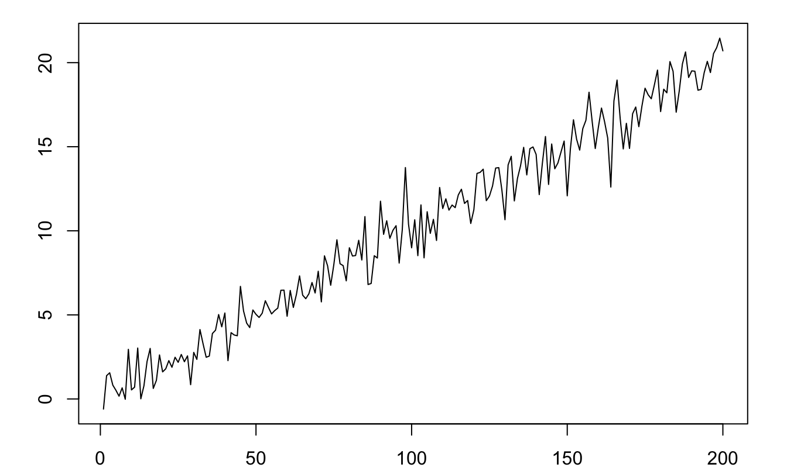
(#fig:nonstat1)Example of a process that is not covariance stationary (\(y_t = 0.1t + \varepsilon_t\), where \(\varepsilon_t \sim \mathcal{N}(0,1)\)).
(#def:strictstat) (Strict stationarity) The process \(y_t\) is strictly stationary if, for all \(t\) and all sets of integers \(J=\{j_1,\dots,j_n\}\), the distribution of \((y_{t},y_{t+j_1},\dots,y_{t+j_n})\) depends on \(J\) but not on \(t\).
The following process is covariance stationary but not strictly stationary: \[ y_t = \mathbb{I}_{\{t<1000\}}\varepsilon_{1,t}+\mathbb{I}_{\{t\ge1000\}}\varepsilon_{2,t}, \] where \(\{\varepsilon_{1,t}\}\) and \(\{\varepsilon_{2,t}\}\) are independent i.i.d. sequences, \(\varepsilon_{1,t} \sim \mathcal{N}(0,1)\), \(\varepsilon_{2,t} \sim \sqrt{\frac{\nu - 2}{\nu}} t(\nu)\), and \(\nu = 4\). Both regimes have mean zero and variance one, but their marginal distributions differ.

(#fig:nonstat2)Example of a process that is covariance stationary but not strictly stationary. The red lines delineate the 99% confidence interval of the standard normal distribution (\(\pm 2.58\)).
(#prp:gammaMinus) If \(y_t\) is covariance stationary, then \(\gamma_j = \gamma_{-j}\).
Proof. Since \(y_t\) is covariance stationary, the covariance between \(y_t\) and \(y_{t-j}\) (i.e \(\gamma_j\)) is the same as that between \(y_{t+j}\) and \(y_{t+j-j}\) (i.e. \(\gamma_{-j}\)).
(#def:autocor) (Auto-correlation) The \(j^{th}\) auto-correlation of a covariance-stationary process is: \[ \rho_j = \frac{\gamma_j}{\gamma_0}. \]
Consider a long historical time series of the Swiss GDP growth, taken from the Jordà, Schularick, and Taylor (2017) dataset.17
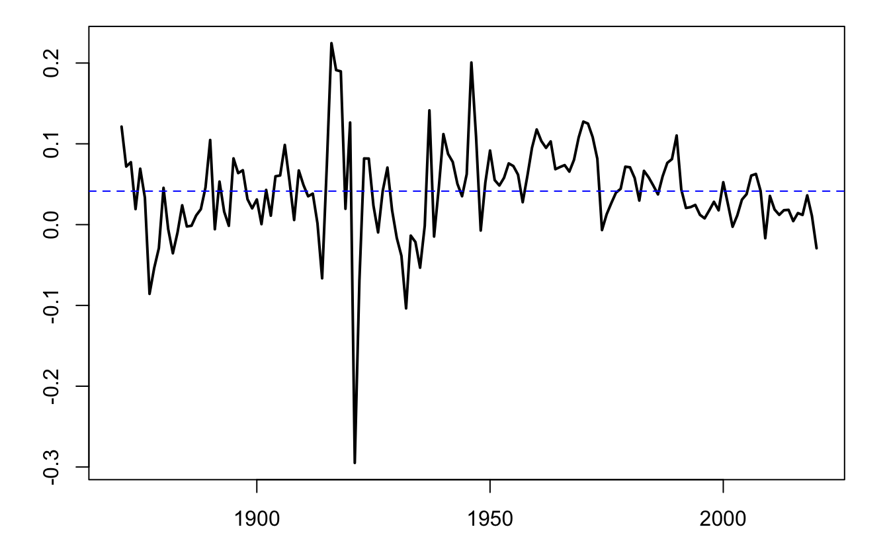
(#fig:autocov)Annual growth rate of Swiss GDP, based on the Jorda-Schularick-Taylor Macrohistory Database.
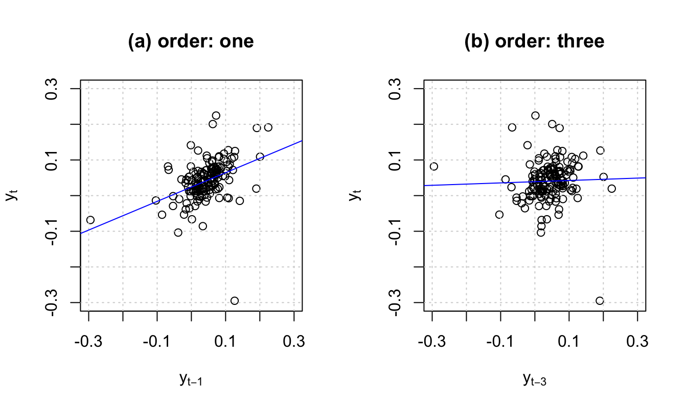
(#fig:autocov2)For order \(j\), the slope of the blue line is, approximately, \(\hat{\gamma}_j/\widehat{\mathbb{V}ar}(y_t)\), where hats indicate sample moments.
(#def:ergodicity) (Mean ergodicity) The covariance-stationary process \(y_t\) is ergodic for the mean if: \[ \mbox{plim}_{T \rightarrow +\infty} \frac{1}{T}\sum_{t=1}^T y_t = \mathbb{E}(y_t). \]
(#def:ergod2nd) (Second-moment ergodicity) The covariance-stationary process \(y_t\) is ergodic for second moments if, for all \(j\): \[ \mbox{plim}_{T \rightarrow +\infty} \frac{1}{T}\sum_{t=1}^T (y_t-\mu) (y_{t-j}-\mu) = \gamma_j. \]
It should be noted that ergodicity and stationarity are different properties. Typically if the process \(\{x_t\}\) is such that, \(\forall t\), \(x_t \equiv y\), where \(y \sim\,\mathcal{N}(0,1)\) (say), then \(\{x_t\}\) is stationary but not ergodic.
(#thm:CLTcovstat) (Sample mean of a weakly dependent stationary process) If process \(y_t\) is covariance stationary and the series of autocovariances is absolutely summable (\(\sum_{j=-\infty}^{+\infty} |\gamma_j| <\infty\)), then: \[\begin{eqnarray} \bar{y}_T \overset{m.s.}{\rightarrow} \mu &=& \mathbb{E}(y_t) (\#eq:TCL20)\\ \mbox{lim}_{T \rightarrow +\infty} T \mathbb{E}\left[(\bar{y}_T - \mu)^2\right] &=& \sum_{j=-\infty}^{+\infty} \gamma_j. (\#eq:TCL2) \end{eqnarray}\]
Covariance stationarity and summable autocovariances alone do not imply asymptotic normality. If the process additionally satisfies a suitable central-limit condition—for example, standard strong-mixing and moment conditions—then \[\begin{equation} \sqrt{T}(\bar{y}_T - \mu) \overset{d}{\rightarrow} \mathcal{N}\left(0,\sum_{j=-\infty}^{+\infty} \gamma_j \right). (\#eq:TCL4ts) \end{equation}\]
[Mean square (m.s.) and distribution (d.) convergences: see Definitions @ref(def:cvgceDistri) and @ref(def:convergenceLr).]
Proof. By Proposition @ref(prp:absMs), Eq. @ref(eq:TCL2) implies Eq. @ref(eq:TCL20). For Eq. @ref(eq:TCL2), see Appendix @ref(AppendixProof). Equation @ref(eq:TCL4ts) follows only after imposing an appropriate central-limit condition.
(#def:LRV) (Long-run variance) Under the assumptions of Theorem @ref(thm:CLTcovstat), the limit appearing in Eq. @ref(eq:TCL2) exists and is called long-run variance. It is denoted by \(S\), i.e.: \[ S = \sum_{j=-\infty}^{+\infty} \gamma_j = \mbox{lim}_{T \rightarrow +\infty} T \mathbb{E}[(\bar{y}_T - \mu)^2]. \]
If \(y_t\) is ergodic for second moments (see Def. @ref(def:ergod2nd)), a natural estimator of \(S\) is: \[\begin{equation} \hat\gamma_0 + 2 \sum_{\nu=1}^{q} \hat\gamma_\nu, (\#eq:covSmplMean) \end{equation}\] where \(\hat\gamma_\nu = \frac{1}{T}\sum_{t=\nu+1}^{T} (y_t - \bar{y})(y_{t-\nu} - \bar{y})\).
However, for small samples, Eq. @ref(eq:covSmplMean) can be negative (or, in the multivariate case, fail to be positive semidefinite). Newey and West (1987) proposed the following nonnegative estimator: \[\begin{equation} S^{NW}=\hat\gamma_0 + 2 \sum_{\nu=1}^{q}\left(1-\frac{\nu}{q+1}\right) \hat\gamma_\nu.(\#eq:NWest) \end{equation}\] For consistency, the bandwidth \(q=q_T\) must be chosen together with the sample size; standard sufficient conditions include \(q_T\rightarrow\infty\) and \(q_T/T\rightarrow0\), along with moment and weak-dependence conditions.
Theorem @ref(thm:CLTcovstat) implies that persistence reduces the precision of a sample mean for a given sample size. Figure @ref(fig:TVTCL) illustrates this point with three processes that have the same marginal variance but autocorrelations of 0%, 70%, and 99.9%. As persistence rises, the sample mean (dashed red line) can remain farther from the population mean (solid red line).
The same type of simulations can be performed using this ShinyApp (use panel “AR(1) Simulation”).
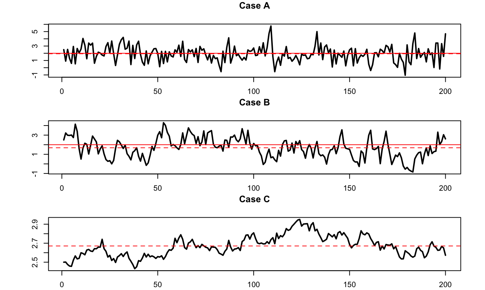
(#fig:TVTCL)The three samples have been simulated using the following data generating process: \(x_t = \mu + \rho (x_{t-1}-\mu) + \sqrt{1-\rho^2}\varepsilon_t\), where \(\varepsilon_t \sim \mathcal{N}(0,1)\). Case A: \(\rho = 0\); Case B: \(\rho = 0.7\); Case C: \(\rho = 0.999\). In the three cases, \(\mathbb{E}(x_t)=\mu=2\) and \(\mathbb{V}ar(x_t)=1\).
8.2 Univariate processes
The preceding concepts provide the language for studying particular models. We now build two basic classes from white-noise shocks: moving-average processes, which depend on current and past shocks, and autoregressive processes, which depend on their own past values.
8.2.1 Moving Average (MA) processes
(#def:unlabeled-div-35) Consider a white noise process \(\{\varepsilon_t\}_{t = -\infty}^{+\infty}\) (Def. @ref(def:whitenoise)). Then \(y_t\) is a first-order moving average process if, for all \(t\): \[ y_t = \mu + \varepsilon_t + \theta \varepsilon_{t-1}. \]
If \(\mathbb{E}(\varepsilon_t^2)=\sigma^2\), it is easily obtained that the unconditional mean and variances of \(y_t\) are: \[ \mathbb{E}(y_t) = \mu, \quad \mathbb{V}ar(y_t) = (1+\theta^2)\sigma^2. \]
The first auto-covariance is: \[ \gamma_1=\mathbb{E}\{(y_t - \mu)(y_{t-1} - \mu)\} = \theta \sigma^2. \]
Higher-order auto-covariances are zero (\(\gamma_j=0\) for \(j>1\)). Therefore: An MA(1) process is covariance-stationary (Def. @ref(def:covstat)).
For a MA(1) process, the autocorrelation of order \(j\) (see Def. @ref(def:autocor)) is given by: \[ \rho_j = \left\{ \begin{array}{lll} 1 &\mbox{ if }& j=0,\\ \theta / (1 + \theta^2) &\mbox{ if }& j = 1\\ 0 &\mbox{ if }& j>1. \end{array} \right. \]
Notice that process \(y_t\) defined through: \[ y_t = \mu + \varepsilon_t +\theta \varepsilon_{t-1}, \] where \(\mathbb{V}ar(\varepsilon_t)=\sigma^2\), has the same mean and autocovariances as \[ y_t = \mu + \varepsilon^*_t +\frac{1}{\theta}\varepsilon^*_{t-1}, \] where \(\mathbb{V}ar(\varepsilon^*_t)=\theta^2\sigma^2\). That is, even if we perfectly know the mean and auto-covariances of this process, it is not possible to identify which specification is the one that has been used to generate the data. Only one of these two specifications is said to be fundamental, that is the one that satisfies \(|\theta_1|<1\).
(#def:MAq) (MA(q) process) A \(q^{th}\) order Moving Average process is defined through: \[ y_t = \mu + \varepsilon_t + \theta_1 \varepsilon_{t-1} + \dots + \theta_q \varepsilon_{t-q}. \] where \(\{\varepsilon_t\}_{t = -\infty}^{+\infty}\) is a white noise process (Def. @ref(def:whitenoise)).
(#prp:covMAq) (Covariance-stationarity of an MA(q) process) Finite-order Moving Average processes are covariance-stationary.
Moreover, the autocovariances of an MA(q) process (as defined in Def. @ref(def:MAq)) are given by: \[\begin{equation} \gamma_j = \left\{ \begin{array}{ll} \sigma^2(\theta_j\theta_0 + \theta_{j+1}\theta_{1} + \dots + \theta_{q}\theta_{q-j}) &\mbox{for} \quad j \in \{0,\dots,q\} \\ 0 &\mbox{for} \quad j>q, \end{array} \right.(\#eq:autocovMA) \end{equation}\] where we use the notation \(\theta_0=1\), and \(\mathbb{V}ar(\varepsilon_t)=\sigma^2\).
Proof. The unconditional expectation of \(y_t\) does not depend on time, since \(\mathbb{E}(y_t)=\mu\). Let’s turn to autocovariances. We can extend the series of the \(\theta_j\)’s by setting \(\theta_j=0\) for \(j>q\). We then have: \[\begin{eqnarray*} \mathbb{E}((y_t-\mu)(y_{t-j}-\mu)) &=& \mathbb{E}\left[(\theta_0 \varepsilon_t +\theta_1 \varepsilon_{t-1} + \dots +\theta_j \varepsilon_{t-j}+\theta_{j+1} \varepsilon_{t-j-1} + \dots) \right.\times \\ &&\left. (\theta_0 \varepsilon_{t-j} +\theta_1 \varepsilon_{t-j-1} + \dots)\right]. \end{eqnarray*}\] Then use the fact that \(\mathbb{E}(\varepsilon_t\varepsilon_s)=0\) if \(t \ne s\) (because \(\{\varepsilon_t\}_{t = -\infty}^{+\infty}\) is a white noise process).
Figure @ref(fig:simMA) displays simulated paths of two MA processes (an MA(1) and an MA(4)). Such simulations can be produced by using panel “ARMA(p,q)” of this web interface.
Code
library(AEC)
T <- 100;nb.sim <- 1
y.0 <- c(0)
c <- 1;phi <- c(0);sigma <- 1
theta <- c(1,1) # MA(1) specification
y.sim <- sim.arma(c,phi,theta,sigma,T,y.0,nb.sim)
par(mfrow=c(1,2))
par(plt=c(.2,.9,.2,.85))
plot(y.sim[,1],xlab="",ylab="",type="l",lwd=2,
main=expression(paste(theta[0],"=1, ",theta[1],"=1",sep="")))
abline(h=c)
theta <- c(1,1,1,1,1) # MA(4) specification
y.sim <- sim.arma(c,phi,theta,sigma,T,y.0,nb.sim)
plot(y.sim[,1],xlab="",ylab="",type="l",lwd=2,
main=expression(paste(theta[0],"=...=",theta[4],"=1",sep="")))
abline(h=c)
(#fig:simMA)Simulation of MA processes.
What if the order \(q\) of an MA(q) process gets infinite? The notion of infinite-order Moving Average process exists and is important in time series analysis. The (infinite) sequence of \(\theta_j\) has to satisfy some conditions for such a process to be well-defined (see Theorem @ref(thm:infMA) below). These conditions relate to the “summability” of \(\{\theta_{i}\}_{i\in\mathbb{N}}\) (see Definition @ref(def:summability)).
(#def:summability) (Absolute and square summability) The sequence \(\{\theta_{i}\}_{i\in\mathbb{N}}\) is absolutely summable if \(\sum_{i=0}^{\infty}|\theta_i| < + \infty\), and it is square summable if \(\sum_{i=0}^{\infty} \theta_i^2 < + \infty\).
According to Prop. @ref(prp:absMs), absolute summability implies square summability.
(#thm:infMA) (Existence condition for an infinite MA process) If \(\{\theta_{i}\}_{i\in\mathbb{N}}\) is square summable (see Def. @ref(def:summability)) and if \(\{\varepsilon_t\}_{t = -\infty}^{+\infty}\) is a white noise process (see Def. @ref(def:whitenoise)), then \[ \mu + \sum_{i=0}^{+\infty} \theta_{i} \varepsilon_{t-i} \] defines a well-behaved [covariance-stationary] process, called infinite-order MA process (MA(\(\infty\))).
Proof. See Appendix 3.A in Hamilton. “Well behaved” means that \(\Sigma_{i=0}^{T} \theta_{t-i} \varepsilon_{t-i}\) converges in mean square (Def. @ref(def:convergenceLr)) to some random variable \(Z_t\). The proof makes use of the fact that: \[ \mathbb{E}\left[\left(\sum_{i=N}^{M}\theta_{i} \varepsilon_{t-i}\right)^2\right] = \sum_{i=N}^{M}|\theta_{i}|^2 \sigma^2, \] and that, when \(\{\theta_{i}\}\) is square summable, \(\forall \eta>0\), \(\exists N\) s.t. the right-hand-side term in the last equation is lower than \(\eta\) for all \(M \ge N\) (static Cauchy criterion, Theorem @ref(thm:cauchycritstatic)). This implies that \(\Sigma_{i=0}^{T} \theta_{i} \varepsilon_{t-i}\) converges in mean square (stochastic Cauchy criterion, see Theorem @ref(thm:cauchycritstochastic)).
(#prp:momentsMAinf) (First two moments of an infinite MA process) If \(\{\theta_{i}\}_{i\in\mathbb{N}}\) is absolutely summable, i.e. if \(\sum_{i=0}^{\infty}|\theta_i| < + \infty\), then
- \(y_t = \mu + \sum_{i=0}^{+\infty} \theta_{i} \varepsilon_{t-i}\) exists (Theorem @ref(thm:infMA)) and is such that: \[\begin{eqnarray*} \mathbb{E}(y_t) &=& \mu\\ \gamma_0 = \mathbb{E}([y_t-\mu]^2) &=& \sigma^2(\theta_0^2 +\theta_1^2 + \dots)\\ \gamma_j = \mathbb{E}([y_t-\mu][y_{t-j}-\mu]) &=& \sigma^2(\theta_0\theta_j + \theta_{1}\theta_{j+1} + \dots). \end{eqnarray*}\]
- Process \(y_t\) has absolutely summable auto-covariances, which implies that the results of Theorem @ref(thm:CLTcovstat) (Central Limit) apply.
Proof. The absolute summability of \(\{\theta_{i}\}\) and the fact that \(\mathbb{E}(\varepsilon^2)<\infty\) imply that the order of integration and summation is interchangeable (see Hamilton, 1994, Footnote p. 52), which proves (i). For (ii), see end of Appendix 3.A in Hamilton (1994).
8.2.2 Autoregressive (AR) processes
Moving-average models describe dependence directly through past shocks. Autoregressive models describe it recursively through past observations, which makes them especially natural for persistence and forecasting.
(#def:AR1) (First-order AR process (AR(1))) Consider a white noise process \(\{\varepsilon_t\}_{t = -\infty}^{+\infty}\) (see Def. @ref(def:whitenoise)). Process \(y_t\) is an AR(1) process if it is defined by the following difference equation: \[ y_t = c + \phi y_{t-1} + \varepsilon_t. \]
That kind of process can be simulated by using panel “AR(1) Simulation” of this web interface.
If \(|\phi|\ge1\), \(y_t\) is not stationary. Indeed, we have: \[ y_{t+k} = c + \varepsilon_{t+k} + \phi ( c + \varepsilon_{t+k-1})+ \phi^2 ( c + \varepsilon_{t+k-2})+ \dots + \phi^{k-1} ( c + \varepsilon_{t+1}) + \phi^k y_t. \] Therefore, the conditional variance \[ \mathbb{V}ar_t(y_{t+k}) = \sigma^2(1 + \phi^2 + \phi^4 + \dots + \phi^{2(k-1)}) \] does not converge for large \(k\)’s. This implies that \(\mathbb{V}ar(y_{t})\) does not exist.
By contrast, if \(|\phi| < 1\), one can see that: \[ y_t = c + \varepsilon_t + \phi ( c + \varepsilon_{t-1})+ \phi^2 ( c + \varepsilon_{t-2})+ \dots + \phi^k ( c + \varepsilon_{t-k}) + \dots \] Hence, if \(|\phi| < 1\), the unconditional mean and variance of \(y_t\) are: \[ \mathbb{E}(y_t) = \frac{c}{1-\phi} =: \mu \quad \mbox{and} \quad \mathbb{V}ar(y_t) = \frac{\sigma^2}{1-\phi^2}. \]
Let us compute the \(j^{th}\) autocovariance of the AR(1) process: \[\begin{eqnarray*} \mathbb{E}([y_{t} - \mu][y_{t-j} - \mu]) &=& \mathbb{E}([\varepsilon_t + \phi \varepsilon_{t-1}+ \phi^2 \varepsilon_{t-2} + \dots + \color{red}{\phi^j \varepsilon_{t-j}} + \color{blue}{\phi^{j+1} \varepsilon_{t-j-1}} \dots]\times \\ &&[\color{red}{\varepsilon_{t-j}} + \color{blue}{\phi \varepsilon_{t-j-1}} + \phi^2 \varepsilon_{t-j-2} + \dots + \phi^k \varepsilon_{t-j-k} + \dots])\\ &=& \mathbb{E}(\color{red}{\phi^j \varepsilon_{t-j}^2}+\color{blue}{\phi^{j+2} \varepsilon_{t-j-1}^2}+\phi^{j+4} \varepsilon_{t-j-2}^2+\dots)\\ &=& \frac{\phi^j \sigma^2}{1 - \phi^2}. \end{eqnarray*}\]
Therefore \(\rho_j = \phi^j\).
By what precedes, we have:
(#prp:statioAR1) (Causal covariance-stationarity of an AR(1) process) The AR(1) equation in Def. @ref(def:AR1) has a causal covariance-stationary solution—one expressible in current and past shocks—if and only if \(|\phi|<1\).
(#def:ARp) (AR(p) process) Consider a white noise process \(\{\varepsilon_t\}_{t = -\infty}^{+\infty}\) (see Def. @ref(def:whitenoise)). Process \(y_t\) is a \(p^{th}\)-order autoregressive process (AR(p)) if its dynamics is defined by the following difference equation (with \(\phi_p \ne 0\)): \[\begin{equation} y_t = c + \phi_1 y_{t-1} + \phi_2 y_{t-2} + \dots + \phi_p y_{t-p} + \varepsilon_t.(\#eq:AR) \end{equation}\]
As we will see, the covariance-stationarity of process \(y_t\) hinges on matrix \(F\) defined as: \[\begin{equation} F = \left[ \begin{array}{ccccc} \phi_1 & \phi_2 & \dots& & \phi_p \\ 1 & 0 &\dots && 0 \\ 0 & 1 &\dots && 0 \\ \vdots & & \ddots && \vdots \\ 0 & 0 &\dots &1& 0 \\ \end{array} \right].(\#eq:F) \end{equation}\]
Note that this matrix \(F\) is such that if \(y_t\) follows Eq. @ref(eq:AR), then process \(\mathbf{y}_t\) follows: \[ \mathbf{y}_t = \mathbf{c} + F \mathbf{y}_{t-1} + \boldsymbol\xi_t \] with \[ \mathbf{c} = \left[\begin{array}{c} c\\ 0\\ \vdots\\ 0 \end{array}\right], \quad \boldsymbol\xi_t = \left[\begin{array}{c} \varepsilon_t\\ 0\\ \vdots\\ 0 \end{array}\right], \quad \mathbf{y}_t = \left[\begin{array}{c} y_t\\ y_{t-1}\\ \vdots\\ y_{t-p+1} \end{array}\right]. \]
(#prp:Feigen) (The eigenvalues of matrix F) The eigenvalues of \(F\) (defined by Eq. @ref(eq:F)) are the solutions of: \[\begin{equation} \lambda^p - \phi_1 \lambda^{p-1} - \dots - \phi_{p-1}\lambda - \phi_p = 0.(\#eq:Feigen) \end{equation}\]
(#prp:stability) (Covariance-stationarity of an AR(p) process) These four statements are equivalent:
- Process \(\{y_t\}\), defined in Def. @ref(def:ARp), is covariance-stationary.
- The eigenvalues of \(F\) (as defined Eq. @ref(eq:F)) lie strictly within the unit circle.
- The roots of Eq. @ref(eq:outside) (below) lie strictly outside the unit circle. \[\begin{equation} 1 - \phi_1 z - \dots - \phi_{p-1}z^{p-1} - \phi_p z^p = 0.(\#eq:outside) \end{equation}\]
- The roots of Eq. @ref(eq:inside) (below) lie strictly inside the unit circle. \[\begin{equation} \lambda^p - \phi_1 \lambda^{p-1} - \dots - \phi_{p-1}\lambda - \phi_p = 0.(\#eq:inside) \end{equation}\]
Proof. We consider the case where the eigenvalues of \(F\) are distinct; Jordan decomposition can be used in the general case. When the eigenvalues of \(F\) are distinct, \(F\) admits the following spectral decomposition: \(F = PDP^{-1}\), where \(D\) is diagonal. Using the notations introduced in Eq. @ref(eq:F), we have: \[ \mathbf{y}_{t} = \mathbf{c} + F \mathbf{y}_{t-1} + \boldsymbol\xi_{t}. \] Let’s introduce \(\mathbf{d} = P^{-1}\mathbf{c}\), \(\mathbf{z}_t = P^{-1}\mathbf{y}_t\) and \(\boldsymbol\eta_t = P^{-1}\boldsymbol\xi_t\). We have: \[ \mathbf{z}_{t} = \mathbf{d} + D \mathbf{z}_{t-1} + \boldsymbol\eta_{t}. \] Because \(D\) is diagonal, the different component of \(\mathbf{z}_t\), denoted by \(z_{i,t}\), follow AR(1) processes. The (scalar) autoregressive parameters of these AR(1) processes are the diagonal entries of \(D\) –which also are the eigenvalues of \(F\)– that we denote by \(\lambda_i\).
Process \(y_t\) is covariance-stationary iff \(\mathbf{y}_{t}\) also is covariance-stationary, which is the case iff all \(z_{i,t}\), \(i \in [1,p]\), are covariance-stationary. By Prop. @ref(prp:statioAR1), process \(z_{i,t}\) is covariance-stationary iff \(|\lambda_i|<1\). This proves that (i) is equivalent to (ii). Prop. @ref(prp:Feigen) further proves that (ii) is equivalent to (iv). Finally, it is easily seen that (iii) is equivalent to (iv) (as long as \(\phi_p \ne 0\)).
Using the lag operator (see Eq @ref(eq:lagOp)), if \(y_t\) is a covariance-stationary AR(p) process (Def. @ref(def:ARp)), we can write: \[ y_t = \mu + \psi(L)\varepsilon_t, \] where \[\begin{equation} \psi(L) = (1 - \phi_1 L - \dots - \phi_p L^p)^{-1}, \end{equation}\] and \[\begin{equation} \mu = \mathbb{E}(y_t) = \dfrac{c}{1-\phi_1 -\dots - \phi_p}.(\#eq:EAR) \end{equation}\]
To assess stationarity, we compute the eigenvalues of the \(F\) matrices associated with the following processes (where \(\varepsilon_t\) is a white noise): \[\begin{eqnarray*} x_t &=& 0.9 x_{t-1} -0.2 x_{t-2} + \varepsilon_t\\ y_t &=& 1.1 y_{t-1} -0.3 y_{t-2} + \varepsilon_t\\ w_t &=& 1.4 w_{t-1} -0.7 w_{t-2} + \varepsilon_t\\ z_t &=& 0.9 z_{t-1} +0.2 z_{t-2} + \varepsilon_t \end{eqnarray*}\]
Code
F <- matrix(c(.9,1,-.2,0),2,2)
lambda_x <- eigen(F)$values
F[1,] <- c(1.1,-.3)
lambda_y <- eigen(F)$values
F[1,] <- c(1.4,-.7)
lambda_w <- eigen(F)$values
F[1,] <- c(.9,.2)
lambda_z <- eigen(F)$values
data_table(rbind(x=lambda_x, y=lambda_y, w=lambda_w, z=lambda_z),
col.names=c("Process", "Eigenvalue 1", "Eigenvalue 2"), digits=3, row_label="Process")| Process | Eigenvalue 1 | Eigenvalue 2 |
|---|---|---|
| x | 0.500+0.000i | 0.400+0.000i |
| y | 0.600+0.000i | 0.500+0.000i |
| w | 0.700+0.458i | 0.700-0.458i |
| z | 1.084+0.000i | -0.184+0.000i |
The absolute values of the eigenvalues associated with process \(w_t\) are both equal to 0.837. Therefore, according to Proposition @ref(prp:stability), processes \(x_t\), \(y_t\), and \(w_t\) are covariance-stationary, but not \(z_t\) (because the absolute value of one of the eigenvalues of the \(F\) matrix associated with this process is larger than 1).
The computation of the autocovariances of \(y_t\) is based on the so-called Yule-Walker equations (Eq. @ref(eq:gammas)). Let’s rewrite Eq. @ref(eq:AR): \[ (y_t-\mu) = \phi_1 (y_{t-1}-\mu) + \phi_2 (y_{t-2}-\mu) + \dots + \phi_p (y_{t-p}-\mu) + \varepsilon_t. \] Multiplying both sides by \(y_{t-j}-\mu\) and taking expectations leads to the (Yule-Walker) equations: \[\begin{equation} \gamma_j = \left\{ \begin{array}{l} \phi_1 \gamma_{j-1}+\phi_2 \gamma_{j-2}+ \dots + \phi_p \gamma_{j-p} \quad if \quad j>0\\ \phi_1 \gamma_{1}+\phi_2 \gamma_{2}+ \dots + \phi_p \gamma_{p} + \sigma^2 \quad for \quad j=0. \end{array} \right.(\#eq:gammas) \end{equation}\] Using \(\gamma_j = \gamma_{-j}\) (Prop. @ref(prp:gammaMinus)), one can express \((\gamma_0,\gamma_1,\dots,\gamma_{p})\) as functions of \((\sigma^2,\phi_1,\dots,\phi_p)\).
8.2.3 PACF approach to identify AR/MA processes
The autocorrelation patterns derived above help distinguish model classes. An MA process has an autocorrelation function that cuts off, whereas an AR process has a partial autocorrelation function that cuts off. Sample ACFs and PACFs turn these population properties into practical diagnostic tools.
We have seen that the \(k^{th}\)-order auto-correlation of a MA(q) process is null if \(k>q\). This is exploited, in practice, to determine the order of a MA process. Moreover, since this is not the case for an AR process, this can be used to distinguish an AR from an MA process.
There exists an equivalent approach to determine whether a process can be modeled as an AR process; it is based on partial auto-correlations:
(#def:partialAC) (Partial auto-correlation) In a time series context, the partial auto-correlation (\(\phi_{h,h}\)) of process \(\{y_t\}\) is defined as the partial correlation of \(y_{t+h}\) and \(y_t\) given \(y_{t+h-1},\dots,y_{t+1}\). (see Def. @ref(def:partialcorrel) for the definition of partial correlation.)
If \(h>p\), the regression of \(y_{t+h}\) on \(y_{t+h-1},\dots,y_{t+1}\) is: \[ y_{t+h} = c + \phi_1 y_{t+h-1}+\dots+ \phi_p y_{t+h-p} + \varepsilon_{t+h}. \] The residuals of the latter regressions (\(\varepsilon_{t+h}\)) are uncorrelated to \(y_t\). Then the partial autocorrelation is zero for \(h>p\).
Besides, it can be shown that \(\phi_{p,p}=\phi_p\). Hence \(\phi_{p,p}=\phi_p\) but \(\phi_{h,h}=0\) for \(h>p\). This can be used to determine the order of an AR process. By contrast (importantly) if \(y_t\) follows an MA(q) process, then \(\phi_{k,k}\) asymptotically approaches zero instead of cutting off abruptly.
Figure @ref(fig:pacf) illustrates the ACF/PACF approach using a simulated MA process in the left column and a simulated AR process in the right column.
Code
library(AEC)
par(mfrow=c(3,2))
par(plt=c(.2,.9,.2,.95))
theta <- c(1,2,1);phi=0
y.sim <- sim.arma(c=0,phi,theta,sigma=1,T=1000,y.0=0,nb.sim=1)
par(mfg=c(1,1));plot(y.sim,type="l",lwd=2)
par(mfg=c(2,1));acf(y.sim)
par(mfg=c(3,1));pacf(y.sim)
theta <- c(1);phi=0.9
y.sim <- sim.arma(c=0,phi,theta,sigma=1,T=1000,y.0=0,nb.sim=1)
par(mfg=c(1,2));plot(y.sim,type="l",lwd=2)
par(mfg=c(2,2));acf(y.sim)
par(mfg=c(3,2));pacf(y.sim)
(#fig:pacf)ACF/PACF analysis of two processes (MA process on the left, AR on the right).
8.3 Forecasting
The models above describe temporal dependence. Forecasting uses that dependence to construct the best prediction available from current information, quantify its uncertainty, and compare competing specifications out of sample.
Forecasting has always been an important part of the time series field (De Gooijer and Hyndman (2006)). Macroeconomic forecasts are done in many places: Public Administration (notably Treasuries), Central Banks, International Institutions (e.g. IMF, OECD), banks, big firms. These institutions are interested in the point estimates (\(\sim\) most likely value) of the variable of interest. They also sometimes need to measure the uncertainty (\(\sim\) dispersion of likely outcomes) associated to the point estimates.18
Forecasts produced by professional forecasters are available on these web pages:
- Philly Fed Survey of Professional Forecasters.
- ECB Survey of Professional Forecasters.
- IMF World Economic Outlook.
- OECD Global Economic Outlook.
- European Commission Economic Forecasts.
How to formalize the forecasting problem? Assume the current date is \(t\). We want to forecast the value that variable \(y_t\) will take on date \(t+1\) (i.e., \(y_{t+1}\)) based on the observation of a set of variables gathered in vector \(x_t\) (\(x_t\) may contain lagged values of \(y_t\)).
The forecaster aims at minimizing (a function of) the forecast error. It is usal to consider the following (quadratic) loss function: \[ \underbrace{\mathbb{E}([y_{t+1} - y^*_{t+1}]^2)}_{\mbox{Mean square error (MSE)}} \] where \(y^*_{t+1}\) is the forecast of \(y_{t+1}\) (function of \(x_t\)).
(#prp:smallestMSE) (Smallest MSE) The smallest MSE is obtained with the expectation of \(y_{t+1}\) conditional on \(x_t\).
Proof. See Appendix @ref(AppendixProof).
(#prp:smallestMSElinear) Among the class of linear forecasts, the smallest MSE is obtained with the linear projection of \(y_{t+1}\) on \(x_t\). This projection, denoted by \(\hat{P}(y_{t+1}|x_t):=\boldsymbol\alpha'x_t\), satisfies: \[\begin{equation} \mathbb{E}\left( [y_{t+1} - \boldsymbol\alpha'x_t]x_t \right)=\mathbf{0}.(\#eq:proj) \end{equation}\]
Proof. Consider the function \(f:\) \(\boldsymbol\alpha \rightarrow \mathbb{E}\left( [y_{t+1} - \boldsymbol\alpha'x_t]^2 \right)\). We have: \[ f(\boldsymbol\alpha) = \mathbb{E}\left( y_{t+1}^2 - 2 y_{t+1} x_t'\boldsymbol\alpha + \boldsymbol\alpha'x_t x_t'\boldsymbol\alpha \right). \] We have \(\partial f(\boldsymbol\alpha)/\partial \boldsymbol\alpha = \mathbb{E}(-2 y_{t+1} x_t + 2 x_t x_t'\boldsymbol\alpha)\). The function is minimised for \(\partial f(\boldsymbol\alpha)/\partial \boldsymbol\alpha =0\).
Eq. @ref(eq:proj) implies that \(\mathbb{E}\left( y_{t+1}x_t \right)=\mathbb{E}\left(x_tx_t' \right)\boldsymbol\alpha\). (Note that \(x_t x_t'\boldsymbol\alpha=x_t (x_t'\boldsymbol\alpha)=(\boldsymbol\alpha'x_t) x_t\).)
Hence, if \(\mathbb{E}\left(x_tx_t' \right)\) is nonsingular, \[\begin{equation} \boldsymbol\alpha=[\mathbb{E}\left(x_tx_t' \right)]^{-1}\mathbb{E}\left( y_{t+1}x_t \right).(\#eq:linproj) \end{equation}\]
The MSE then is: \[ \mathbb{E}([y_{t+1} - \boldsymbol\alpha'x_t]^2) = \mathbb{E}{(y_{t+1}^2)} - \mathbb{E}\left( y_{t+1}x_t' \right)[\mathbb{E}\left(x_tx_t' \right)]^{-1}\mathbb{E}\left(x_ty_{t+1} \right). \]
Consider the regression \(y_{t+1} = \boldsymbol\beta'\mathbf{x}_t + \varepsilon_{t+1}\). The OLS estimate is: \[ \mathbf{b} = \left[ \underbrace{ \frac{1}{T-1} \sum_{t=1}^{T-1} \mathbf{x}_t\mathbf{x}_t'}_{\mathbf{m}_1} \right]^{-1}\left[ \underbrace{ \frac{1}{T-1} \sum_{t=1}^{T-1} \mathbf{x}_t y_{t+1}}_{\mathbf{m}_2} \right]. \] If \(\{x_t,y_t\}\) is covariance-stationary and ergodic for the second moments then the sample moments (\(\mathbf{m}_1\) and \(\mathbf{m}_2\)) converges in probability to the associated population moments and \(\mathbf{b} \overset{p}{\rightarrow} \boldsymbol\alpha\) (where \(\boldsymbol\alpha\) is defined in Eq. @ref(eq:linproj)).
(#exm:fcstMAq) (Forecasting an MA(q) process) Consider the MA(q) process: \[ y_t = \mu + \varepsilon_t + \theta_1 \varepsilon_{t-1} + \dots + \theta_q \varepsilon_{t-q}, \] where \(\{\varepsilon_t\}\) is a white noise sequence (Def. @ref(def:whitenoise)).
We have:19 \[\begin{eqnarray*} &&\mathbb{E}(y_{t+h}|\varepsilon_{t},\varepsilon_{t-1},\dots) =\\ &&\left\{ \begin{array}{lll} \mu + \theta_h \varepsilon_{t} + \dots + \theta_q \varepsilon_{t-q+h} \quad &for& \quad h \in [1,q]\\ \mu \quad &for& \quad h > q \end{array} \right. \end{eqnarray*}\] and \[\begin{eqnarray*} &&\mathbb{V}ar(y_{t+h}|\varepsilon_{t},\varepsilon_{t-1},\dots)= \mathbb{E}\left( [y_{t+h} - \mathbb{E}(y_{t+h}|\varepsilon_{t},\varepsilon_{t-1},\dots)]^2 \right) =\\ &&\left\{ \begin{array}{lll} \sigma^2(1+\theta_1^2+\dots+\theta_{h-1}^2) \quad &for& \quad h \in [1,q]\\ \sigma^2(1+\theta_1^2+\dots+\theta_q^2) \quad &for& \quad h>q. \end{array} \right. \end{eqnarray*}\]
(#exm:fcstARp) (Forecasting an AR(p) process) (See this web interface.) Consider the AR(p) process: \[ y_t = c + \phi_1 y_{t-1} + \phi_2 y_{t-2} + \dots + \phi_p y_{t-p} + \varepsilon_t, \] where \(\{\varepsilon_t\}\) is a white noise sequence (Def. @ref(def:whitenoise)).
Using the notation of Eq. @ref(eq:F), we have: \[ \mathbf{y}_t - \boldsymbol\mu = F (\mathbf{y}_{t-1}- \boldsymbol\mu) + \boldsymbol\xi_t, \] with \(\boldsymbol\mu = [\mu,\dots,\mu]'\) (\(\mu\) is defined in Eq. @ref(eq:EAR)). Hence: \[ \mathbf{y}_{t+h} - \boldsymbol\mu = \boldsymbol\xi_{t+h} + F \boldsymbol\xi_{t+h-1} + \dots + F^{h-1} \boldsymbol\xi_{t+1} + F^h (\mathbf{y}_{t}- \boldsymbol\mu). \] Therefore: \[\begin{eqnarray*} \mathbb{E}(\mathbf{y}_{t+h}|y_{t},y_{t-1},\dots) &=& \boldsymbol\mu + F^{h}(\mathbf{y}_t - \boldsymbol\mu)\\ \mathbb{V}ar\left([\mathbf{y}_{t+h} - \mathbb{E}(\mathbf{y}_{t+h}|y_{t},y_{t-1},\dots)] \right) &=& \Sigma + F\Sigma F' + \dots + F^{h-1}\Sigma (F^{h-1})', \end{eqnarray*}\] where: \[ \Sigma = \left[ \begin{array}{ccc} \sigma^2 & 0& \dots\\ 0 & 0 & \\ \vdots & & \ddots \\ \end{array} \right]. \]
Alternative approach: Taking the (conditional) expectations of both sides of \[ y_{t+h} - \mu = \phi_1 (y_{t+h-1} - \mu) + \phi_2 (y_{t+h-2} - \mu) + \dots + \phi_p (y_{t+h-p} - \mu) + \varepsilon_{t+h}, \] we obtain: \[\begin{eqnarray*} \mathbb{E}(y_{t+h}|y_{t},y_{t-1},\dots) &=& \mu + \phi_1\left(\mathbb{E}[y_{t+h-1}|y_{t},y_{t-1},\dots] - \mu\right)+\\ &&\phi_2\left(\mathbb{E}[y_{t+h-2}|y_{t},y_{t-1},\dots] - \mu\right) + \dots +\\ && \phi_p\left(\mathbb{E}[y_{t+h-p}|y_{t},y_{t-1},\dots] - \mu\right), \end{eqnarray*}\] which can be exploited recursively.
The recursion begins with \(\mathbb{E}(y_{t-k}|y_{t},y_{t-1},\dots)=y_{t-k}\) (for any \(k \ge 0\)).
Assessing the performances of a forecasting model
Once one has fitted a model on a given dataset (of length \(T\), say), one can compute its mean squared error (MSE). This is an in-sample measure. If the model is estimated by OLS, adding covariates cannot increase the in-sample residual sum of squares (see Props. @ref(prp:chgeR2) and @ref(prp:chgeInR2)). Irrelevant regressors generally increase estimation variance and can worsen out-of-sample MSE, although this is not a deterministic result in every realized sample.
Therefore, it is important to analyse out-of-sample performances of the forecasting model:
- Estimate a model on a sample of reduced size (\(1,\dots,T^*\), with \(T^*<T\))
- Use the remaining available periods (\(T^*+1,\dots,T\)) to compute out-of-sample forecasting errors (and compute their MSE). In an out-of-sample exercise, it is important to make sure that the data used to produce a forecasts (as of date \(T^*\)) where indeed available on date \(T^*\).
Diebold-Mariano test
How to compare different forecasting approaches? Diebold and Mariano (1995) have proposed a simple test to address this question.
Assume that you want to compare approaches A and B. You have historical data sets and you have implemented both approaches in the past, providing you with two sets of forecasting errors: \(\{e^{A}_t\}_{t=1,\dots,T}\) and \(\{e^{B}_t\}_{t=1,\dots,T}\).
It may be the case that your forecasts serve a specific purpose and that, for instance, you dislike positive forecasting errors and you care less about negative errors. We assume you are able to formalise this by means of a loss function \(L(e)\). For instance:
- If you dislike large positive errors, you may set \(L(e)=\exp(e)\).
- If you are concerned about both positive and negative errors (indifferently), you may set \(L(e)=e^2\) (standard approach).
Let us define the sequence \(\{d_t\}_{t=1,\dots,T} \equiv \{L(e^{A}_t)-L(e^{B}_t)\}_{t=1,\dots,T}\) and assume that it is covariance stationary and satisfies the weak-dependence and moment conditions needed for the central limit theorem. We consider the null hypothesis \(H_0:\mathbb{E}(d_t)=0\). Under \(H_0\), Theorem @ref(thm:CLTcovstat) gives:
\[
\sqrt{T} \bar{d}_T \overset{d}{\rightarrow} \mathcal{N}\left(0,\sum_{j=-\infty}^{+\infty} \gamma_j \right),
\]
where the \(\gamma_j\)s are the autocovariances of \(d_t\).
Hence, assuming that \(\hat{\sigma}^2\) is a consistent estimate of \(\sum_{j=-\infty}^{+\infty} \gamma_j\) (for instance the one given by Newey and West (1987)), we have, under \(H_0\): \[ DM_T := \sqrt{T}\frac{\bar{d}_T}{\sqrt{\hat{\sigma}^2}} \overset{d}{\rightarrow} \mathcal{N}(0,1). \] \(DM_T\) is the test statistics. For a test of size \(\alpha\), the critical region is:20 \[ ]-\infty,-\Phi^{-1}(1-\alpha/2)] \cup [\Phi^{-1}(1-\alpha/2),+\infty[, \] where \(\Phi\) is the c.d.f. of the standard normal distribution.
(#exm:SwissOutOfSample) (Forecasting Swiss GDP growth) We use a long historical time series of the Swiss GDP growth taken from the Jordà, Schularick, and Taylor (2017) dataset.21
We want to forecast this GDP growth. We envision two specifications : an AR(1) specification (the one advocated by the AIC criteria), and an ARMA(2,2) specification. We are interested in 2-year-ahead forecasts (i.e., \(h=2\) since the data are yearly).
Code
library(AEC)
library(forecast)
data <- subset(JST,iso=="CHE")
T <- dim(data)[1]
y <- c(NaN,log(data$gdp[2:T]/data$gdp[1:(T-1)]))
first.date <- T-50
e1 <- NULL; e2 <- NULL;h<-2
for(T.star in first.date:(T-h)){
estim.model.1 <- arima(y[1:T.star],order=c(1,0,0))
estim.model.2 <- arima(y[1:T.star],order=c(2,0,2))
e1 <- c(e1,y[T.star+h] - predict(estim.model.1,n.ahead=h)$pred[h])
e2 <- c(e2,y[T.star+h] - predict(estim.model.2,n.ahead=h)$pred[h])
}
res.DM <- dm.test(e1,e2,h = h,alternative = "greater")
res.DM##
## Diebold-Mariano Test
##
## data: e1e2
## DM = -0.82989, Forecast horizon = 2, Loss function power = 2, p-value =
## 0.7946
## alternative hypothesis: greaterWith alternative = "greater" The alternative hypothesis is that method 2 is more accurate than method 1. Since we do not reject the null (the p-value being of 0.795), we are not led to use the more sophisticated model (ARMA(2,2)) and we keep the simple AR(1) model.
Assume now that we want to compare the AR(1) process to a multivariate (VAR) model. We consider a bivariate VAR, where GDP growth is complemented with CPI-based inflation rate.
Code
library(vars)
infl <- c(NaN,log(data$cpi[2:T]/data$cpi[1:(T-1)]))
y_var <- cbind(y,infl)
e3 <- NULL
for(T.star in first.date:(T-h)){
estim.model.3 <- VAR(y_var[2:T.star,],p=1)
e3 <- c(e3,y[T.star+h] - predict(estim.model.3,n.ahead=h)$fcst$y[h,1])
}
res.DM <- dm.test(e1,e3,h = h,alternative = "greater")
res.DM##
## Diebold-Mariano Test
##
## data: e1e3
## DM = -0.11555, Forecast horizon = 2, Loss function power = 2, p-value =
## 0.5458
## alternative hypothesis: greaterAgain, we do not find that the alternative model (here the VAR(1) model) is better than the AR(1) model to forecast GDP growth.
8.4 Chapter recap
- Definitions @ref(def:whitenoise) and @ref(def:MDS) formalize two notions of innovations; a martingale difference may remain conditionally heteroskedastic.
- Definition @ref(def:covstat) requires stable first and second moments, and Theorem @ref(thm:CLTcovstat) shows how serial dependence changes the precision of a sample mean through the long-run variance.
- Definition @ref(def:MAq) and Proposition @ref(prp:covMAq) characterize finite moving-average processes and their autocovariance cutoff.
- Definition @ref(def:AR1) introduces autoregressive dynamics; Propositions @ref(prp:statioAR1) and @ref(prp:stability) give stability conditions for AR(1) and AR(p) processes.
- Definition @ref(def:partialAC) motivates PACF-based identification by isolating dependence at a given lag after controlling for shorter lags.
- Propositions @ref(prp:smallestMSE) and @ref(prp:smallestMSElinear) characterize optimal unrestricted and linear forecasts.
- Example @ref(exm:SwissOutOfSample) illustrates why forecast models should be compared with out-of-sample loss rather than in-sample fit alone.
8.5 Exercises
Attempt each question and explain your reasoning, including for true-or-false statements. Foundation exercises apply a result directly; Standard exercises require several steps or a short proof; Advanced exercises combine several results or require a longer derivation. Worked solutions and exercise-specific hints are reserved for teaching sessions and are not included in this student edition.
(#exr:time-series-stationarity) (Stationarity of autoregressive processes) Standard | Analytical
Review Section @ref(TS).
Among the processes defined by the following difference equations, which ones admit a causal covariance-stationary solution? (We assume that \(\varepsilon_t \sim i.i.d.\,\mathcal{N}(0, \sigma^2)\).)
\(y_t = 1.1 y_{t-1} + \varepsilon_t\)
\(y_t = 1.7 y_{t-1} - 0.3 y_{t-2} + \varepsilon_t\)
\(y_t = 1.3 y_{t-1} - 0.42 y_{t-2} + \varepsilon_t\)
(#exr:time-series-yule-walker) (Yule-Walker equations for an AR(2)) Advanced | Proof
Review Section @ref(TS).
Consider the following process (assume it is stationary):
\[y_t = c + \phi_1 y_{t-1} + \phi_2 y_{t-2} + \varepsilon_t,\]
where \(\varepsilon_t \sim i.i.d. \mathcal{N}(0, \sigma^2)\).
Compute its unconditional mean \(\mu\).
What is the difference equation followed by \(x_t = y_t - \mu\)?
Multiply both sides of the \(x_t\)’s difference equation by \(x_t\) and deduce a relationship between the autocovariances \(\gamma_0\), \(\gamma_1\) and \(\gamma_2\) of \(y_t\).
Multiply both sides of the \(x_t\)’s difference equation by \(x_{t-1}\) and deduce a relationship between the autocovariances \(\gamma_0\) and \(\gamma_1\).
Multiply both sides of the \(x_t\)’s difference equation by \(x_{t-2}\) and deduce a relationship between the autocovariances \(\gamma_0\), \(\gamma_1\) and \(\gamma_2\).
From (c), (d), and (e) deduce a way to compute \(\gamma_0\), \(\gamma_1\) and \(\gamma_2\).
Given \(\gamma_0\), \(\gamma_1\), and \(\gamma_2\), explain how to compute \(\gamma_3\).
Explain how to compute \(\gamma_j\) for any \(j>2\).
(#exr:time-series-forecasting) (Two-step forecasting) Advanced | Application
Review Section @ref(forecasting).
We denote: \(\mathbb{E}_t(\cdot) = \mathbb{E}(\cdot | y_t, y_{t-1}, \dots)\) and \(\mathbb{V}ar_t(\cdot) = \mathbb{V}ar(\cdot | y_t, y_{t-1}, \dots)\).
Consider the processes introduced in the stationarity exercise. For the processes (a) and (b), compute \(\mathbb{E}_t(y_{t+2})\) and \(\mathbb{V}ar_t(y_{t+2})\).
Using the fact that \(\mathbb{P}(X < 2.58) = 0.995\) if \(X \sim \mathcal{N}(0,1)\), compute a 99% prediction interval for \(y_{t+2}\), conditional on \(y_t,y_{t-1},\dots\), for processes (a) and (b) from the stationarity exercise.
To what does \(y_{t+h} - \mathbb{E}_t(y_{t+h})\) correspond? Give a name for this expression.
Conditional on \(y_t, y_{t-1}, \dots\), what is the expected value of \(y_{t+h} - \mathbb{E}_t(y_{t+h})\)?
(#exr:time-series-ar2-true-false) (AR(2) forecasts and variances: true or false?) Advanced | True or false
Review Section @ref(forecasting).
Consider the AR(2) process \[y_t = \phi_1 y_{t-1} + \phi_2 y_{t-2} + \varepsilon_t,\] where \(\varepsilon_t \sim i.i.d.\,\mathcal{N}(0,\sigma^2)\).
The parameters \(\phi_1\) and \(\phi_2\) are nonzero and such that the process is covariance-stationary.
Using standard notations, we denote by \(\mathbb{E}_t\) and \(\mathbb{V}ar_t\) the expectation and variance conditional on the information set \(\{y_t,y_{t-1},\dots\}\). For instance, \[\mathbb{E}_t(\cdot)=\mathbb{E}(\cdot|y_t,y_{t-1},\dots).\]
For each statement, decide whether it is true or false and justify your answer.
\(\mathbb{V}ar(y_t)>\mathbb{V}ar(y_{t-2})\).
\(\mathbb{V}ar_t(y_{t+2}) = \sigma^2\).
\(\mathbb{E}_t(y_{t+1}) = \phi_1 y_t + \phi_2 y_{t-1}\).
\(\mathbb{E}(y_t)=0\).
The two solutions to the equation \(\lambda^2-\phi_1\lambda-\phi_2=0\), denoted \(\lambda_1\) and \(\lambda_2\), satisfy \(\lambda_1>1\) and \(\lambda_2>1\).
(#exr:time-series-sample-mean-true-false) (Serial dependence and the sample mean: true or false?) Advanced | True or false
Review Section @ref(TS).
Consider a covariance-stationary process \(y_t\) whose first auto-covariances are \(\gamma_0=4\), \(\gamma_1=3\), \(\gamma_2=2\), \(\gamma_3=1\), and \(\gamma_i=0\) for \(i>3\). Assume also that the process satisfies the moment and weak-dependence conditions needed for the central limit theorem.
Note that this implies that \[\sum_{i=-\infty}^{+\infty}\gamma_i = \gamma_0 + 2\sum_{i=1}^{\infty}\gamma_i = 4 + 2\times 3 + 2\times 2 + 2\times 1 = 16.\]
We use the notation \(\bar{y}_T=\displaystyle \frac{1}{T}\sum_{t=1}^T y_t\). The unconditional expectation of \(y_t\) is denoted by \(\mu\), i.e. \(\mathbb{E}(y_t)=\mu\).
For each statement, decide whether it is true or false and justify your answer.
The variance of \(y_t+y_{t-1}\) is equal to 14.
We have \(\mathbb{V}ar(y_{t-2})=\gamma_2\).
For a large \(T\), the distribution of \(\sqrt{T}(\bar{y}_T-\mu)\) is approximately \(\mathcal{N}(0,16)\).
For a large \(T\), the variance of \(\sqrt{T}(\bar{y}_T-\mu)\) is approximately equal to \(4\).
For \(T=1600\), and if \(\bar{y}_T=0.1\), then \(0\) is outside an approximated 95% confidence interval for \(\mu\).
9 Appendix
The appendix collects mathematical and statistical results used throughout the book. It is designed for reference: individual sections can be consulted when a definition, proof, distribution, or table is needed.
Prerequisites. The notation introduced in the chapter that refers to the relevant appendix result.
After consulting the relevant sections, you should be able to:
- Use principal components to summarize high-dimensional variation.
- Apply the matrix identities required in regression and likelihood calculations.
- Recall standard distributions, stochastic convergence results, and Gaussian conditioning formulas.
- Locate longer proofs and statistical quantiles without interrupting the main exposition.
Roadmap. The appendix moves from principal components and linear algebra to statistical definitions and distributions, stochastic convergence, Gaussian results, selected proofs, and statistical tables.
9.1 Principal component analysis (PCA)
Principal component analysis (PCA) reduces the dimension of a dataset when much of its variation can be summarized by a small number of linear combinations. The method is widely used in economic data analysis, visualization, and image compression.
Suppose that we observe \(T\) realizations \(x_1,\ldots,x_T\) of an \(n\)-dimensional random vector \(x\), and that each component has been centered to have mean zero.
Let \(X=[x_1,\ldots,x_T]'\) denote the resulting \(T\times n\) data matrix, and denote its \(j^{th}\) column by \(X_j\).
We seek a unit-length vector \(u\) such that the linear combination \(Xu\) has maximum sample variance. Thus, we solve \[\begin{equation} \begin{array}{clll} \underset{u}{\arg\max} & u'X'Xu. \\ \mbox{s.t. } & \left\Vert u \right\Vert =1 \end{array}(\#eq:PCA11) \end{equation}\]
Since \(X'X\) is symmetric and positive semidefinite, it admits the following decomposition: \[\begin{eqnarray*} X'X & = & PDP'\\ & = & P\left[\begin{array}{ccc} \lambda_{1}\\ & \ddots\\ & & \lambda_{n} \end{array}\right]P', \end{eqnarray*}\] where \(P\) is an orthogonal matrix whose columns are the eigenvectors of \(X'X\).
We can order the eigenvalues such that \(\lambda_{1}\geq\ldots\geq\lambda_{n}\geq0\). Some eigenvalues are zero when \(X\) does not have full column rank.
Since \(P\) is orthogonal, we have \(u'X'Xu=u'PDP'u=y'Dy\) where \(\left\Vert y\right\Vert =1\). Therefore, we have \(y_{i}^{2}\leq 1\) for any \(i\leq n\).
As a consequence: \[ y'Dy=\sum_{i=1}^{n}y_{i}^{2}\lambda_{i}\leq\lambda_{1}\sum_{i=1}^{n}y_{i}^{2}=\lambda_{1}. \]
It is easily seen that the maximum is reached for \(y=\left[1,0,\cdots,0\right]'\). Therefore, the maximum of the optimization program (Eq. @ref(eq:PCA11)) is obtained for \(u=P\left[1,0,\cdots,0\right]'\). That is, \(u\) is the eigenvector of \(X'X\) that is associated with its larger eigenvalue (first column of \(P\)).
Let us denote with \(F\) the vector that is given by the matrix product \(XP\). The columns of \(F\), denoted by \(F_{j}\), are called factors. We have: \[ F'F=P'X'XP=D. \] Therefore, in particular, the \(F_{j}\)’s are orthogonal.
Since \(X=FP'\), the \(X_{j}\)’s are linear combinations of the factors. Let us then denote with \(\hat{X}_{i,j}\) the part of \(X_{i}\) that is explained by factor \(F_{j}\), we have: \[\begin{eqnarray*} \hat{X}_{i,j} & = & p_{ij}F_{j}\\ X_{i} & = & \sum_{j}\hat{X}_{i,j}=\sum_{j}p_{ij}F_{j}. \end{eqnarray*}\]
Consider the share of variance that is explained—through the \(n\) variables (\(X_{1},\ldots,X_{n}\))—by the first factor \(F_{1}\): \[\begin{eqnarray*} \frac{\sum_{i}\hat{X}'_{i,1}\hat{X}_{i,1}}{\sum_{i}X_{i}'X_{i}} & = & \frac{\sum_{i}p_{i1}F'_{1}F_{1}p_{i1}}{tr(X'X)} = \frac{\sum_{i}p_{i1}^{2}\lambda_{1}}{tr(X'X)} = \frac{\lambda_{1}}{\sum_{i}\lambda_{i}}. \end{eqnarray*}\]
Intuitively, if the first eigenvalue is large, it means that the first factor captures a large share of the fluctutaions of the \(n\) \(X_{i}\)’s.
By the same token, it is easily seen that the fraction of the variance of the \(n\) variables that is explained by factor \(j\) is given by: \[\begin{eqnarray*} \frac{\sum_{i}\hat{X}'_{i,j}\hat{X}_{i,j}}{\sum_{i}X_{i}'X_{i}} & = & \frac{\lambda_{j}}{\sum_{i}\lambda_{i}}. \end{eqnarray*}\]
The term structure of interest rates provides a standard application. Yields at different maturities move together and can often be summarized by a few factors (see Litterman and Scheinkman 1991). We apply PCA to data from the FRED database (series DGS6MO, DGS1, and related maturities). The estimated loadings can be interpreted as level, slope, and curvature factors.
To run a PCA, one simply has to apply function prcomp to a matrix of data:
Code
Figure @ref(fig:USydsPCA1) summarizes the results. The upper-left panel reports the share of total variance explained by each principal component, and the upper-right panel displays the factor loadings. The lower panels compare observed yields with reconstructions based on only the first two components.
Code
par(mfrow=c(2,2))
par(plt=c(.1,.95,.2,.8))
barplot(PCA.yds$sdev^2/sum(PCA.yds$sdev^2),
main="Share of variance expl. by PC's")
axis(1, at=1:dim(yds)[2], labels=colnames(PCA.yds$x))
nb.PC <- 2
plot(-PCA.yds$rotation[,1],type="l",lwd=2,ylim=c(-1,1),
main="Factor loadings (1st 3 PCs)",xaxt="n",xlab="")
axis(1, at=1:dim(yds)[2], labels=colnames(yds))
lines(PCA.yds$rotation[,2],type="l",lwd=2,col="blue")
lines(PCA.yds$rotation[,3],type="l",lwd=2,col="red")
Y1.hat <- PCA.yds$x[,1:nb.PC] %*% PCA.yds$rotation["Y1",1:2]
Y1.hat <- mean(USyields$Y1) + sd(USyields$Y1) * Y1.hat
plot(USyields$date,USyields$Y1,type="l",lwd=2,
main="Fit of 1-year yields (2 PCs)",
ylab="Obs (black) / Fitted by 2PCs (dashed blue)")
lines(USyields$date,Y1.hat,col="blue",lty=2,lwd=2)
Y10.hat <- PCA.yds$x[,1:nb.PC] %*% PCA.yds$rotation["Y10",1:2]
Y10.hat <- mean(USyields$Y10) + sd(USyields$Y10) * Y10.hat
plot(USyields$date,USyields$Y10,type="l",lwd=2,
main="Fit of 10-year yields (2 PCs)",
ylab="Obs (black) / Fitted by 2PCs (dashed blue)")
lines(USyields$date,Y10.hat,col="blue",lty=2,lwd=2)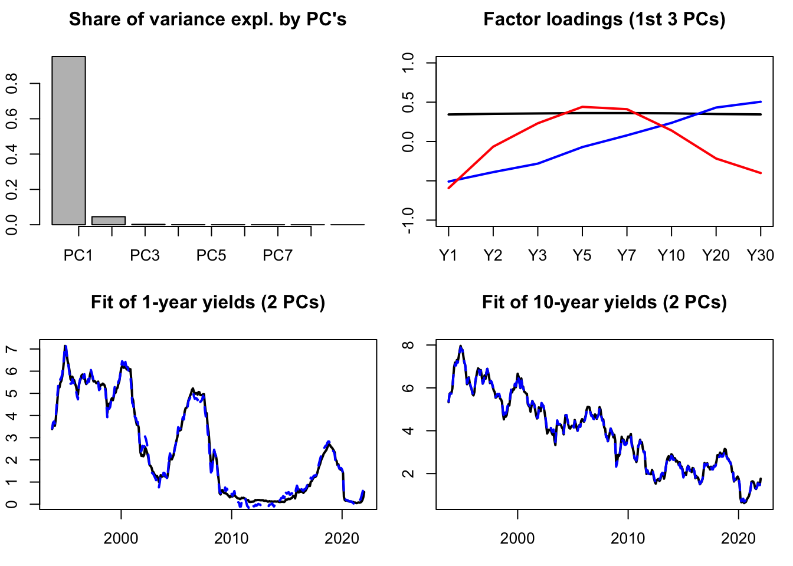
(#fig:USydsPCA1)Some PCA results. The dataset contains 8 time series of U.S. interest rates of different maturities.
9.2 Linear algebra: definitions and results
This section records the matrix definitions and identities used in the regression and estimation chapters. It is organized as a reference rather than a continuous derivation.
(#def:eigenvalues) (Eigenvalues) The eigenvalues of of a matrix \(M\) are the numbers \(\lambda\) for which: \[ |M - \lambda I| = 0, \] where \(| \bullet |\) is the determinant operator.
(#prp:determinant) (Properties of the determinant) We have:
- \(|MN|=|M|\times|N|\).
- \(|M^{-1}|=|M|^{-1}\).
- If \(M\) admits the diagonal representation \(M=TDT^{-1}\), where \(D\) is a diagonal matrix whose diagonal entries are \(\{\lambda_i\}_{i=1,\dots,n}\), then: \[ |M - \lambda I |=\prod_{i=1}^n (\lambda_i - \lambda). \]
(#def:MoorPenrose) (Moore-Penrose inverse) If \(M \in \mathbb{R}^{m \times n}\), then its Moore-Penrose pseudo inverse (exists and) is the unique matrix \(M^* \in \mathbb{R}^{n \times m}\) that satisfies:
- \(M M^* M = M\)
- \(M^* M M^* = M^*\)
- \((M M^*)'=M M^*\) .iv \((M^* M)'=M^* M\).
(#prp:MoorPenrose-properties) (Properties of the Moore-Penrose inverse)
- If \(M\) is invertible then \(M^* = M^{-1}\).
- The pseudo-inverse of a zero matrix is its transpose. * The pseudo-inverse of the pseudo-inverse is the original matrix.
(#def:idempotent) (Idempotent matrix) Matrix \(M\) is idempotent if \(M^2=M\).
If \(M\) is a symmetric idempotent matrix, then \(M'M=M\).
(#prp:rootsidempotent) (Roots of an idempotent matrix) The eigenvalues of an idempotent matrix are either 1 or 0.
Proof. If \(\lambda\) is an eigenvalue of an idempotent matrix \(M\) then \(\exists x \ne 0\) s.t. \(Mx=\lambda x\). Hence \(M^2x=\lambda M x \Rightarrow (1-\lambda)Mx=0\). Either all element of \(Mx\) are zero, in which case \(\lambda=0\) or at least one element of \(Mx\) is nonzero, in which case \(\lambda=1\).
(#prp:chi2idempotent) (Idempotent matrix and chi-square distribution) The rank of a symmetric idempotent matrix is equal to its trace.
Proof. The result follows from Prop. @ref(prp:rootsidempotent), combined with the fact that the rank of a symmetric matrix is equal to the number of its nonzero eigenvalues.
(#prp:constrainedLS) (Constrained least squares) The solution of the following optimisation problem: \[\begin{eqnarray*} \underset{\boldsymbol\beta}{\min} && || \mathbf{y} - \mathbf{X}\boldsymbol\beta ||^2 \\ && \mbox{subject to } \mathbf{R}\boldsymbol\beta = \mathbf{q} \end{eqnarray*}\] is given by: \[ \boxed{\boldsymbol\beta^r = \boldsymbol\beta_0 - (\mathbf{X}'\mathbf{X})^{-1} \mathbf{R}'\{\mathbf{R}(\mathbf{X}'\mathbf{X})^{-1}\mathbf{R}'\}^{-1}(\mathbf{R}\boldsymbol\beta_0 - \mathbf{q}),} \] where \(\boldsymbol\beta_0=(\mathbf{X}'\mathbf{X})^{-1}\mathbf{X}'\mathbf{y}\).
Proof. See for instance Jackman, 2007.
(#prp:inversepartitioned) (Inverse of a partitioned matrix) We have: \[\begin{eqnarray*} &&\left[ \begin{array}{cc} \mathbf{A}_{11} & \mathbf{A}_{12} \\ \mathbf{A}_{21} & \mathbf{A}_{22} \end{array}\right]^{-1} = \\ &&\left[ \begin{array}{cc} (\mathbf{A}_{11} - \mathbf{A}_{12}\mathbf{A}_{22}^{-1}\mathbf{A}_{21})^{-1} & - \mathbf{A}_{11}^{-1}\mathbf{A}_{12}(\mathbf{A}_{22} - \mathbf{A}_{21}\mathbf{A}_{11}^{-1}\mathbf{A}_{12})^{-1} \\ -(\mathbf{A}_{22} - \mathbf{A}_{21}\mathbf{A}_{11}^{-1}\mathbf{A}_{12})^{-1}\mathbf{A}_{21}\mathbf{A}_{11}^{-1} & (\mathbf{A}_{22} - \mathbf{A}_{21}\mathbf{A}_{11}^{-1}\mathbf{A}_{12})^{-1} \end{array} \right]. \end{eqnarray*}\]
(#def:FOD) (Matrix derivatives) Consider a function \(f:\mathbb{R}^K\rightarrow\mathbb{R}\). Its first derivative is \[ \frac{\partial f}{\partial \mathbf{b}}(\mathbf{b}) = \left[\begin{array}{c} \frac{\partial f}{\partial b_1}(\mathbf{b})\\ \vdots\\ \frac{\partial f}{\partial b_K}(\mathbf{b}) \end{array} \right]. \] We use the notation: \[ \frac{\partial f}{\partial \mathbf{b}'}(\mathbf{b}) = \left(\frac{\partial f}{\partial \mathbf{b}}(\mathbf{b})\right)'. \]
(#prp:partial) We have:
- If \(f(\mathbf{b}) = A' \mathbf{b}\) where \(A\) is a \(K \times 1\) vector then \(\frac{\partial f}{\partial \mathbf{b}}(\mathbf{b}) = A\).
- If \(f(\mathbf{b}) = \mathbf{b}'A\mathbf{b}\) where \(A\) is a \(K \times K\) matrix, then \(\frac{\partial f}{\partial \mathbf{b}}(\mathbf{b}) = (A+A')\mathbf{b}\). If \(A\) is symmetric, this simplifies to \(2A\mathbf{b}\).
(#prp:absMs) (Square and absolute summability) We have: \[ \underbrace{\sum_{i=0}^{\infty}|\theta_i| < + \infty}_{\mbox{Absolute summability}} \Rightarrow \underbrace{\sum_{i=0}^{\infty} \theta_i^2 < + \infty}_{\mbox{Square summability}}. \]
Proof. See Appendix 3.A in Hamilton. Idea: Absolute summability implies that there exist \(N\) such that, for \(j>N\), \(|\theta_j| < 1\) (deduced from Cauchy criterion, Theorem @ref(thm:cauchycritstatic) and therefore \(\theta_j^2 < |\theta_j|\).
9.3 Statistical analysis: definitions and results
The following results collect moment identities, standard distributions, and modes of stochastic convergence used throughout the book.
9.3.1 Moments and statistics
(#def:partialcorrel) (Partial correlation) The partial correlation between \(y\) and \(z\), controlling for some variables \(\mathbf{X}\) is the sample correlation between \(y^*\) and \(z^*\), where the latter two variables are the residuals in regressions of \(y\) on \(\mathbf{X}\) and of \(z\) on \(\mathbf{X}\), respectively.
This correlation is denoted by \(r_{yz}^\mathbf{X}\). By definition, we have: \[\begin{equation} r_{yz}^\mathbf{X} = \frac{\mathbf{z^*}'\mathbf{y^*}}{\sqrt{(\mathbf{z^*}'\mathbf{z^*})(\mathbf{y^*}'\mathbf{y^*})}}.(\#eq:pc) \end{equation}\]
(#def:skewnesskurtosis) (Skewness and kurtosis) Let \(Y\) be a random variable whose fourth moment exists. The expectation of \(Y\) is denoted by \(\mu\).
- The skewness of \(Y\) is given by: \[ \frac{\mathbb{E}[(Y-\mu)^3]}{\{\mathbb{E}[(Y-\mu)^2]\}^{3/2}}. \]
- The kurtosis of \(Y\) is given by: \[ \frac{\mathbb{E}[(Y-\mu)^4]}{\{\mathbb{E}[(Y-\mu)^2]\}^{2}}. \]
(#thm:CauchySchwarz) (Cauchy-Schwarz inequality) Assuming \(X\) and \(Y\) have finite variances, we have: \[ |\mathbb{C}ov(X,Y)| \le \sqrt{\mathbb{V}ar(X)\mathbb{V}ar(Y)} \] If both variances are non-zero, equality holds if and only if the centered variables are linearly dependent almost surely; equivalently, \(Y=aX+b\) almost surely for some constants \(a\) and \(b\).
Proof. If \(\mathbb{V}ar(X)=0\), this is trivial. If this is not the case, then let’s define \(Z\) as \(Z = Y - \frac{\mathbb{C}ov(X,Y)}{\mathbb{V}ar(X)}X\). It is easily seen that \(\mathbb{C}ov(X,Z)=0\). Then, the variance of \(Y=Z+\frac{\mathbb{C}ov(X,Y)}{\mathbb{V}ar(X)}X\) is equal to the sum of the variance of \(Z\) and of the variance of \(\frac{\mathbb{C}ov(X,Y)}{\mathbb{V}ar(X)}X\), that is: \[ \mathbb{V}ar(Y) = \mathbb{V}ar(Z) + \left(\frac{\mathbb{C}ov(X,Y)}{\mathbb{V}ar(X)}\right)^2\mathbb{V}ar(X) \ge \left(\frac{\mathbb{C}ov(X,Y)}{\mathbb{V}ar(X)}\right)^2\mathbb{V}ar(X). \] The equality holds iff \(\mathbb{V}ar(Z)=0\), i.e. iff \(Y = \frac{\mathbb{C}ov(X,Y)}{\mathbb{V}ar(X)}X+cst\).
(#def:asmyptlevelAppendix) (Asymptotic level) An asymptotic test with critical region \(\Omega_n\) has an asymptotic level equal to \(\alpha\) if: \[ \limsup_{n\rightarrow\infty}\;\sup_{\theta\in\Theta}\mathbb{P}_\theta(S_n\in\Omega_n)=\alpha, \] where \(S_n\) is the test statistic and \(\Theta\) is such that the null hypothesis \(H_0\) is equivalent to \(\theta \in \Theta\).
(#def:asmyptconsisttestAppendix) (Asymptotically consistent test) An asymptotic test with critical region \(\Omega_n\) is consistent if: \[ \forall \theta \in \Theta^c, \quad \mathbb{P}_\theta (S_n \in \Omega_n) \rightarrow 1, \] where \(S_n\) is the test statistic and \(\Theta^c\) is such that the null hypothesis \(H_0\) is equivalent to \(\theta \notin \Theta^c\).
(#def:Kullback) (Kullback discrepancy) Given two p.d.f. \(f\) and \(f^*\), the Kullback discrepancy is defined by: \[ I(f,f^*) = \mathbb{E}^* \left( \log \frac{f^*(Y)}{f(Y)} \right) = \int \log \frac{f^*(y)}{f(y)} f^*(y) dy. \]
(#prp:Kullback-properties) (Properties of the Kullback discrepancy) We have:
- \(I(f,f^*) \ge 0\)
- \(I(f,f^*) = 0\) iff \(f \equiv f^*\).
Proof. \(x \rightarrow -\log(x)\) is a convex function. Therefore \(\mathbb{E}^*(-\log f(Y)/f^*(Y)) \ge -\log \mathbb{E}^*(f(Y)/f^*(Y)) = 0\) (proves (i)). Since \(x \rightarrow -\log(x)\) is strictly convex, equality in (i) holds if and only if \(f(Y)/f^*(Y)\) is constant (proves (ii)).
(#def:characteristic) (Characteristic function) For any real-valued random variable \(X\), the characteristic function is defined by: \[ \phi_X: u \rightarrow \mathbb{E}[\exp(iuX)]. \]
9.3.2 Standard distributions
(#def:fstatistics) (F distribution) Consider \(n=n_1+n_2\) i.i.d. \(\mathcal{N}(0,1)\) r.v. \(X_i\). If the r.v. \(F\) is defined by: \[ F = \frac{\sum_{i=1}^{n_1} X_i^2}{\sum_{j=n_1+1}^{n_1+n_2} X_j^2}\frac{n_2}{n_1} \] then \(F \sim \mathcal{F}(n_1,n_2)\). (See Table @ref(tab:Fstat) for quantiles.)
(#def:tStudent) (Student-t distribution) \(Z\) follows a Student-t (or \(t\)) distribution with \(\nu\) degrees of freedom (d.f.) if: \[ Z = X_0 \bigg/ \sqrt{\frac{\sum_{i=1}^{\nu}X_i^2}{\nu}}, \quad X_i \sim i.i.d. \mathcal{N}(0,1). \] We have \(\mathbb{E}(Z)=0\), and \(\mathbb{V}ar(Z)=\frac{\nu}{\nu-2}\) if \(\nu>2\). (See Table @ref(tab:Student) for quantiles.)
(#def:chi2) (Chi-square distribution) \(Z\) follows a \(\chi^2\) distribution with \(\nu\) d.f. if \(Z = \sum_{i=1}^{\nu}X_i^2\) where \(X_i \sim i.i.d. \mathcal{N}(0,1)\). We have \(\mathbb{E}(Z)=\nu\). (See Table @ref(tab:Chi2) for quantiles.)
(#def:Cauchy) (Cauchy distribution)
The probability distribution function of the Cauchy distribution defined by a location parameter \(\mu\) and a scale parameter \(\gamma\) is: \[ f(x) = \frac{1}{\pi \gamma \left(1 + \left[\frac{x-\mu}{\gamma}\right]^2\right)}. \] The mean and variance of this distribution are undefined.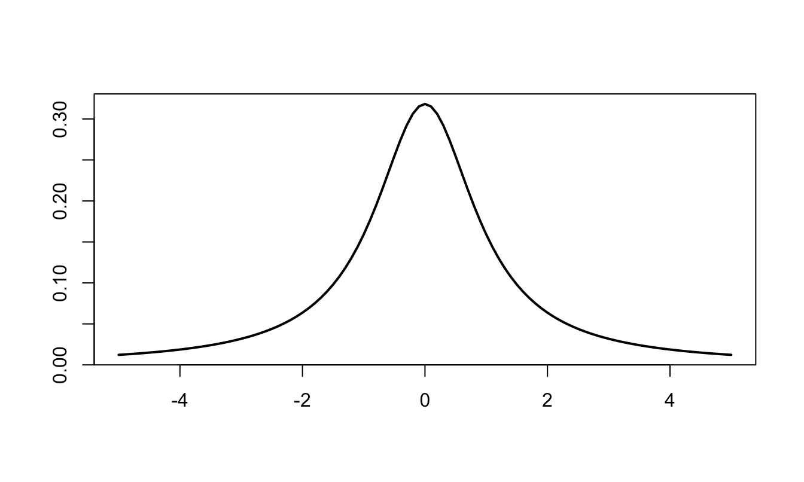
(#fig:Cauchy)Pdf of the Cauchy distribution (\(\mu=0\), \(\gamma=1\)).
(#prp:waldtypeproduct) (Inner product of a multivariate Gaussian variable) Let \(X\) be a \(n\)-dimensional multivariate Gaussian variable: \(X \sim \mathcal{N}(0,\Sigma)\). We have: \[ X' \Sigma^{-1}X \sim \chi^2(n). \]
Proof. Because \(\Sigma\) is a symmetrical definite positive matrix, it admits the spectral decomposition \(PDP'\) where \(P\) is an orthogonal matrix (i.e. \(PP'=Id\)) and D is a diagonal matrix with non-negative entries. Denoting by \(\sqrt{D^{-1}}\) the diagonal matrix whose diagonal entries are the inverse of those of \(D\), it is easily checked that the covariance matrix of \(Y:=\sqrt{D^{-1}}P'X\) is \(Id\). Therefore \(Y\) is a vector of uncorrelated Gaussian variables. The properties of Gaussian variables imply that the components of \(Y\) are then also independent. Hence \(Y'Y=\sum_i Y_i^2 \sim \chi^2(n)\).
It remains to note that \(Y'Y=X'PD^{-1}P'X=X'\mathbb{V}ar(X)^{-1}X\) to conclude.
(#def:GEVdistri) (Generalized Extreme Value (GEV) distribution) The vector of disturbances \(\boldsymbol\varepsilon=[\varepsilon_{1,1},\dots,\varepsilon_{1,K_1},\dots,\varepsilon_{J,1},\dots,\varepsilon_{J,K_J}]'\) follows the Generalized Extreme Value (GEV) distribution if its c.d.f. is: \[ F(\boldsymbol\varepsilon,\boldsymbol\rho) = \exp(-G(e^{-\varepsilon_{1,1}},\dots,e^{-\varepsilon_{J,K_J}};\boldsymbol\rho)) \] with \[\begin{eqnarray*} G(\mathbf{Y};\boldsymbol\rho) &\equiv& G(Y_{1,1},\dots,Y_{1,K_1},\dots,Y_{J,1},\dots,Y_{J,K_J};\boldsymbol\rho) \\ &=& \sum_{j=1}^J\left(\sum_{k=1}^{K_j} Y_{jk}^{1/\rho_j} \right)^{\rho_j} \end{eqnarray*}\]
9.3.3 Stochastic convergences
(#prp:chebychev) (Chebychev's inequality) If \(\mathbb{E}(|X|^r)\) is finite for some \(r>0\) then: \[ \forall \varepsilon > 0, \quad \mathbb{P}(|X - c|>\varepsilon) \le \frac{\mathbb{E}[|X - c|^r]}{\varepsilon^r}. \] In particular, for \(r=2\): \[ \forall \varepsilon > 0, \quad \mathbb{P}(|X - c|>\varepsilon) \le \frac{\mathbb{E}[(X - c)^2]}{\varepsilon^2}. \]
Proof. Remark that \(\varepsilon^r \mathbb{I}_{\{|X-c| \ge \varepsilon\}} \le |X-c|^r\) and take the expectation of both sides.
(#def:convergenceproba) (Convergence in probability) The random variable sequence \(x_n\) converges in probability to a constant \(c\) if, for every \(\varepsilon>0\), \(\lim_{n \rightarrow \infty} \mathbb{P}(|x_n - c|>\varepsilon) = 0\).
It is denoted as: \(\mbox{plim } x_n = c\).
(#def:convergenceLr) (Convergence in the Lr norm) \(x_n\) converges in the \(r\)-th mean (or in the \(L^r\)-norm) towards \(x\), if \(\mathbb{E}(|x_n|^r)\) and \(\mathbb{E}(|x|^r)\) exist and if \[ \lim_{n \rightarrow \infty} \mathbb{E}(|x_n - x|^r) = 0. \] It is denoted as: \(x_n \overset{L^r}{\rightarrow} x\).
For \(r=2\), this convergence is called mean square convergence.
(#def:convergenceAlmost) (Almost sure convergence) The random variable sequence \(x_n\) converges almost surely to \(c\) if \(\mathbb{P}(\lim_{n \rightarrow \infty} x_n = c) = 1\).
It is denoted as: \(x_n \overset{a.s.}{\rightarrow} c\).
(#def:cvgceDistri) (Convergence in distribution) \(x_n\) is said to converge in distribution (or in law) to \(x\) if \[ \lim_{n \rightarrow \infty} F_{x_n}(s) = F_{x}(s) \] for all \(s\) at which \(F_X\) –the cumulative distribution of \(X\)– is continuous.
It is denoted as: \(x_n \overset{d}{\rightarrow} x\).
(#prp:Slutsky) (Rules for limiting distributions (Slutsky)) We have:
Slutsky’s theorem: If \(x_n \overset{d}{\rightarrow} x\) and \(y_n \overset{p}{\rightarrow} c\) then \[\begin{eqnarray*} x_n y_n &\overset{d}{\rightarrow}& x c \\ x_n + y_n &\overset{d}{\rightarrow}& x + c \\ x_n/y_n &\overset{d}{\rightarrow}& x / c \quad (\mbox{if }c \ne 0) \end{eqnarray*}\]
Continuous mapping theorem: If \(x_n \overset{d}{\rightarrow} x\) and \(g\) is a continuous function then \(g(x_n) \overset{d}{\rightarrow} g(x).\)
(#prp:implicationsconv) (Implications of stochastic convergences) We have: \[\begin{align*} &\boxed{\overset{L^s}{\rightarrow}}& &\underset{1 \le r \le s}{\Rightarrow}& &\boxed{\overset{L^r}{\rightarrow}}&\\ && && &\Downarrow&\\ &\boxed{\overset{a.s.}{\rightarrow}}& &\Rightarrow& &\boxed{\overset{p}{\rightarrow}}& \Rightarrow \qquad \boxed{\overset{d}{\rightarrow}}. \end{align*}\]
Proof. (of the fact that \(\left(\overset{p}{\rightarrow}\right) \Rightarrow \left( \overset{d}{\rightarrow}\right)\)). Assume that \(X_n \overset{p}{\rightarrow} X\). Denoting by \(F\) and \(F_n\) the c.d.f. of \(X\) and \(X_n\), respectively: \[\begin{eqnarray*} F_n(x) &=& \mathbb{P}(X_n \le x,X\le x+\varepsilon) + \mathbb{P}(X_n \le x,X > x+\varepsilon)\\ &\le& F(x+\varepsilon) + \mathbb{P}(|X_n - X|>\varepsilon).(\#eq:convgce1) \end{eqnarray*}\] Besides, \[\begin{eqnarray*} F(x-\varepsilon) &=& \mathbb{P}(X \le x-\varepsilon,X_n \le x) + \mathbb{P}(X \le x-\varepsilon,X_n > x)\\ &\le& F_n(x) + \mathbb{P}(|X_n - X|>\varepsilon), \end{eqnarray*}\] which implies: \[\begin{equation} F(x-\varepsilon) - \mathbb{P}(|X_n - X|>\varepsilon) \le F_n(x).(\#eq:convgce2) \end{equation}\] Eqs. @ref(eq:convgce1) and @ref(eq:convgce2) imply: \[ F(x-\varepsilon) - \mathbb{P}(|X_n - X|>\varepsilon) \le F_n(x) \le F(x+\varepsilon) + \mathbb{P}(|X_n - X|>\varepsilon). \] Taking limits as \(n \rightarrow \infty\) yields \[ F(x-\varepsilon) \le \underset{n \rightarrow \infty}{\mbox{lim inf}}\; F_n(x) \le \underset{n \rightarrow \infty}{\mbox{lim sup}}\; F_n(x) \le F(x+\varepsilon). \] The result is then obtained by taking limits as \(\varepsilon \rightarrow 0\) (if \(F\) is continuous at \(x\)).
(#prp:cvgce11) (Convergence in distribution to a constant) If \(X_n\) converges in distribution to a constant \(c\), then \(X_n\) converges in probability to \(c\).
Proof. If \(\varepsilon>0\), we have \(\mathbb{P}(X_n < c - \varepsilon) \underset{n \rightarrow \infty}{\rightarrow} 0\) i.e. \(\mathbb{P}(X_n \ge c - \varepsilon) \underset{n \rightarrow \infty}{\rightarrow} 1\) and \(\mathbb{P}(X_n < c + \varepsilon) \underset{n \rightarrow \infty}{\rightarrow} 1\). Therefore \(\mathbb{P}(c - \varepsilon \le X_n < c + \varepsilon) \underset{n \rightarrow \infty}{\rightarrow} 1\), which gives the result.
(#exm:plimButNotLr) (Convergence in probability but not $L^r$) Let \(\{x_n\}_{n \in \mathbb{N}}\) be a series of random variables defined by: \[ x_n = n u_n, \] where \(u_n\) are independent random variables s.t. \(u_n \sim \mathcal{B}(1/n)\).
We have \(x_n \overset{p}{\rightarrow} 0\) but \(x_n \overset{L^r}{\nrightarrow} 0\) because \(\mathbb{E}(|X_n-0|)=\mathbb{E}(X_n)=1\).
(#thm:cauchycritstatic) (Cauchy criterion (non-stochastic case)) We have that \(\sum_{i=0}^{T} a_i\) converges (\(T \rightarrow \infty\)) iff, for any \(\eta > 0\), there exists an integer \(N\) such that, for all \(M\ge N\), \[ \left|\sum_{i=N+1}^{M} a_i\right| < \eta. \]
(#thm:cauchycritstochastic) (Cauchy criterion (stochastic case)) We have that \(\sum_{i=0}^{T} \theta_i \varepsilon_{t-i}\) converges in mean square (\(T \rightarrow \infty\)) to a random variable iff, for any \(\eta > 0\), there exists an integer \(N\) such that, for all \(M\ge N\), \[ \mathbb{E}\left[\left(\sum_{i=N+1}^{M} \theta_i \varepsilon_{t-i}\right)^2\right] < \eta. \]
9.3.4 Central limit theorem
(#thm:LLNappendix) (Law of large numbers) The sample mean is a consistent estimator of the population mean.
Proof. Let’s denote by \(\phi_{X_i}\) the characteristic function of a r.v. \(X_i\). If the mean of \(X_i\) is \(\mu\) then the Talyor expansion of the characteristic function is: \[ \phi_{X_i}(u) = \mathbb{E}(\exp(iuX)) = 1 + iu\mu + o(u). \] The properties of the characteristic function (see Def. @ref(def:characteristic)) imply that: \[ \phi_{\frac{1}{n}(X_1+\dots+X_n)}(u) = \prod_{i=1}^{n} \left(1 + i\frac{u}{n}\mu + o\left(\frac{u}{n}\right) \right) \rightarrow e^{iu\mu}. \] The facts that (a) \(e^{iu\mu}\) is the characteristic function of the constant \(\mu\) and (b) that a characteristic function uniquely characterises a distribution imply that the sample mean converges in distribution to the constant \(\mu\), which further implies that it converges in probability to \(\mu\).
(#thm:LindbergLevyCLTAppendix) (Lindberg-Levy Central limit theorem, CLT) If \(x_n\) is an i.i.d. sequence of random variables with mean \(\mu\) and variance \(\sigma^2\) (\(\in ]0,+\infty[\)), then: \[ \boxed{\sqrt{n} (\bar{x}_n - \mu) \overset{d}{\rightarrow} \mathcal{N}(0,\sigma^2), \quad \mbox{where} \quad \bar{x}_n = \frac{1}{n} \sum_{i=1}^{n} x_i.} \]
Proof. Let us introduce the r.v. \(Y_n:= \sqrt{n}(\bar{X}_n - \mu)\). We have \(\phi_{Y_n}(u) = \left[ \mathbb{E}\left( \exp(i \frac{1}{\sqrt{n}} u (X_1 - \mu)) \right) \right]^n\). We have: \[\begin{eqnarray*} &&\left[ \mathbb{E}\left( \exp\left(i \frac{1}{\sqrt{n}} u (X_1 - \mu)\right) \right) \right]^n\\ &=& \left[ \mathbb{E}\left( 1 + i \frac{1}{\sqrt{n}} u (X_1 - \mu) - \frac{1}{2n} u^2 (X_1 - \mu)^2 + o(u^2) \right) \right]^n \\ &=& \left( 1 - \frac{1}{2n}u^2\sigma^2 + o(u^2)\right)^n. \end{eqnarray*}\] Therefore \(\phi_{Y_n}(u) \underset{n \rightarrow \infty}{\rightarrow} \exp \left( - \frac{1}{2}u^2\sigma^2 \right)\), which is the characteristic function of \(\mathcal{N}(0,\sigma^2)\).
9.4 Some properties of Gaussian variables
Gaussian variables recur in finite-sample regression theory, likelihood calculations, and forecasting. This section gathers the conditioning and truncation formulas needed in those applications.
(#prp:bandsindependent) If \(\mathbf{A}\) is idempotent and if \(\mathbf{x}\) is Gaussian, \(\mathbf{L}\mathbf{x}\) and \(\mathbf{x}'\mathbf{A}\mathbf{x}\) are independent if \(\mathbf{L}\mathbf{A}=\mathbf{0}\).
Proof. If \(\mathbf{L}\mathbf{A}=\mathbf{0}\), then the Gaussian vectors \(\mathbf{L}\mathbf{x}\) and \(\mathbf{A}\mathbf{x}\) are independent, as are any functions of those vectors. The result follows because \(\mathbf{x}'\mathbf{A}\mathbf{x}=(\mathbf{A}\mathbf{x})'(\mathbf{A}\mathbf{x})\) is a function of \(\mathbf{A}\mathbf{x}\).
(#prp:update) (Bayesian update in a vector of Gaussian variables) If \[ \left[ \begin{array}{c} Y_1\\ Y_2 \end{array} \right] \sim \mathcal{N} \left(0, \left[\begin{array}{cc} \Omega_{11} & \Omega_{12}\\ \Omega_{21} & \Omega_{22} \end{array}\right] \right), \] then \[ Y_{2}|Y_{1} \sim \mathcal{N} \left( \Omega_{21}\Omega_{11}^{-1}Y_{1},\Omega_{22}-\Omega_{21}\Omega_{11}^{-1}\Omega_{12} \right). \] \[ Y_{1}|Y_{2} \sim \mathcal{N} \left( \Omega_{12}\Omega_{22}^{-1}Y_{2},\Omega_{11}-\Omega_{12}\Omega_{22}^{-1}\Omega_{21} \right). \]
(#prp:truncated) (Truncated distributions) If \(X\) is a random variable distributed according to some p.d.f. \(f\), with c.d.f. \(F\), with infinite support. Then the p.d.f. of \(X|a \le X < b\) is \[ g(x) = \frac{f(x)}{F(b)-F(a)}\mathbb{I}_{\{a \le x < b\}}, \] for any \(a<b\).
In partiucular, for a Gaussian variable \(X \sim \mathcal{N}(\mu,\sigma^2)\), we have \[ f(X=x|a\le X<b) = \dfrac{\dfrac{1}{\sigma}\phi\left(\dfrac{x - \mu}{\sigma}\right)}{Z}. \] with \(Z = \Phi(\beta)-\Phi(\alpha)\), where \(\alpha = \dfrac{a - \mu}{\sigma}\) and \(\beta = \dfrac{b - \mu}{\sigma}\).
Moreover: \[\begin{eqnarray} \mathbb{E}(X|a\le X<b) &=& \mu - \frac{\phi\left(\beta\right)-\phi\left(\alpha\right)}{Z}\sigma. (\#eq:Etrunc) \end{eqnarray}\]
We also have: \[\begin{eqnarray} && \mathbb{V}ar(X|a\le X<b) \nonumber\\ &=& \sigma^2\left[ 1 - \frac{\beta\phi\left(\beta\right)-\alpha\phi\left(\alpha\right)}{Z} - \left(\frac{\phi\left(\beta\right)-\phi\left(\alpha\right)}{Z}\right)^2 \right] (\#eq:Vtrunc) \end{eqnarray}\]
In particular, for \(b \rightarrow \infty\), we get: \[\begin{equation} \mathbb{V}ar(X|a < X) = \sigma^2\left[1 + \alpha\lambda(-\alpha) - \lambda(-\alpha)^2 \right], (\#eq:Vtrunc2) \end{equation}\] with \(\lambda(x)=\dfrac{\phi(x)}{\Phi(x)}\) is called the inverse Mills ratio.
Consider the case where \(a \rightarrow - \infty\) (i.e. the conditioning set is \(X<b\)) and \(\mu=0\), \(\sigma=1\). Then Eq. @ref(eq:Etrunc) gives \(\mathbb{E}(X|X<b) = - \lambda(b) = - \dfrac{\phi(b)}{\Phi(b)}\), where \(\lambda\) is the function computing the inverse Mills ratio.
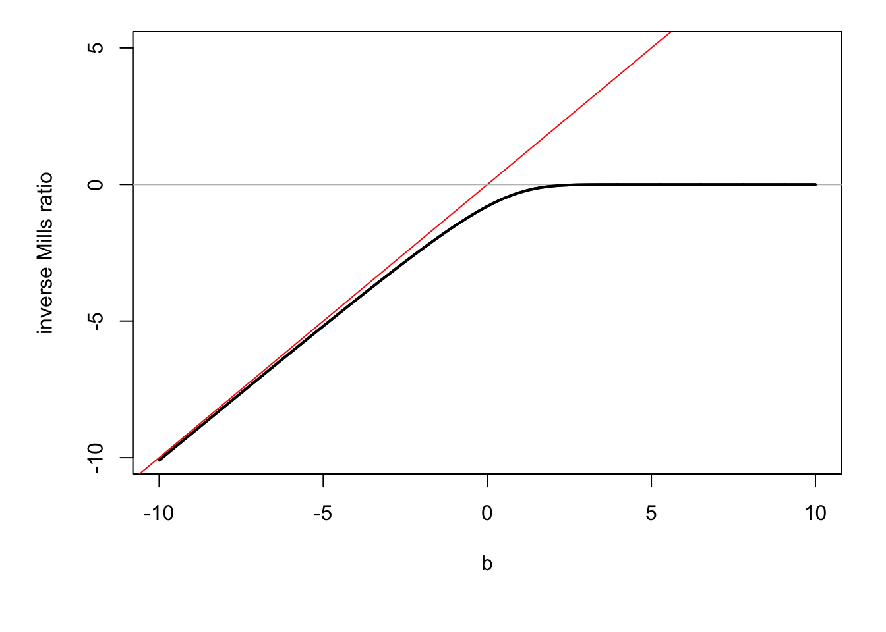
(#fig:inverseMills)\(\mathbb{E}(X|X<b)\) as a function of \(b\) when \(X\sim \mathcal{N}(0,1)\) (in black).
(#prp:pdfMultivarGaussian) (p.d.f. of a multivariate Gaussian variable) If \(Y \sim \mathcal{N}(\mu,\Omega)\), \(Y\) is an \(n\)-dimensional vector, and \(\Omega\) is positive definite, then the density function of \(Y\) is: \[ \frac{1}{(2 \pi)^{n/2}|\Omega|^{1/2}}\exp\left[-\frac{1}{2}\left(Y-\mu\right)'\Omega^{-1}\left(Y-\mu\right)\right]. \]
9.5 Proofs
The proofs below support results stated in the main chapters. They are collected here to keep the exposition there focused on interpretation and application.
Proof of Proposition @ref(prp:MLEproperties)
Proof. Assumptions (i) and (ii) (in the set of Assumptions @ref(hyp:MLEregularity)) imply that \(\boldsymbol\theta_{MLE}\) exists (\(=\mbox{argmax}_\theta (1/n)\log \mathcal{L}(\boldsymbol\theta;\mathbf{y})\)).
\((1/n)\log \mathcal{L}(\boldsymbol\theta;\mathbf{y})\) can be interpreted as the sample mean of the r.v. \(\log f(Y_i;\boldsymbol\theta)\) that are i.i.d. Therefore \((1/n)\log \mathcal{L}(\boldsymbol\theta;\mathbf{y})\) converges to \(\mathbb{E}_{\boldsymbol\theta_0}(\log f(Y;\boldsymbol\theta))\) – which exists (Assumption iv).
Because the latter convergence is uniform (Assumption v), the solution \(\boldsymbol\theta_{MLE}\) almost surely converges to the solution to the limit problem: \[ \mbox{argmax}_\theta \mathbb{E}_{\boldsymbol\theta_0}(\log f(Y;\boldsymbol\theta)) = \mbox{argmax}_\theta \int_{\mathcal{Y}} \log f(y;\boldsymbol\theta)f(y;\boldsymbol\theta_0) dy. \]
The properties of the Kullback information measure (see Prop. @ref(prp:Kullback-properties)), together with the identifiability assumption (ii), imply that the solution to the limit problem is unique and equal to \(\boldsymbol\theta_0\).
Consider a random-vector sequence \(\boldsymbol\theta\) that converges to \(\boldsymbol\theta_0\). A Taylor expansion of the score around \(\boldsymbol\theta_0\) gives \[ \frac{\partial \log \mathcal{L}(\boldsymbol\theta;\mathbf{y})}{\partial \boldsymbol\theta} = \frac{\partial \log \mathcal{L}(\boldsymbol\theta_0;\mathbf{y})}{\partial \boldsymbol\theta} + \frac{\partial^2 \log \mathcal{L}(\boldsymbol\theta_0;\mathbf{y})}{\partial \boldsymbol\theta \partial \boldsymbol\theta'}(\boldsymbol\theta - \boldsymbol\theta_0) + o_p(\boldsymbol\theta - \boldsymbol\theta_0) \]
\(\boldsymbol\theta_{MLE}\) converges to \(\boldsymbol\theta_0\) and satisfies the likelihood equation \(\frac{\partial \log \mathcal{L}(\boldsymbol\theta;\mathbf{y})}{\partial \boldsymbol\theta} = \mathbf{0}\). Therefore: \[ \frac{\partial \log \mathcal{L}(\boldsymbol\theta_0;\mathbf{y})}{\partial \boldsymbol\theta} \approx - \frac{\partial^2 \log \mathcal{L}(\boldsymbol\theta_0;\mathbf{y})}{\partial \boldsymbol\theta \partial \boldsymbol\theta'}(\boldsymbol\theta_{MLE} - \boldsymbol\theta_0), \] or equivalently: \[ \frac{1}{\sqrt{n}} \frac{\partial \log \mathcal{L}(\boldsymbol\theta_0;\mathbf{y})}{\partial \boldsymbol\theta} \approx \left(- \frac{1}{n} \sum_{i=1}^n \frac{\partial^2 \log f(y_i;\boldsymbol\theta_0)}{\partial \boldsymbol\theta \partial \boldsymbol\theta'} \right)\sqrt{n}(\boldsymbol\theta_{MLE} - \boldsymbol\theta_0), \]
By the law of large numbers, we have: \(\left(- \frac{1}{n} \sum_{i=1}^n \frac{\partial^2 \log f(y_i;\boldsymbol\theta_0)}{\partial \boldsymbol\theta \partial \boldsymbol\theta'} \right) \overset{}\rightarrow \frac{1}{n} \mathbf{I}(\boldsymbol\theta_0) = \mathcal{I}_Y(\boldsymbol\theta_0)\).
Besides, we have: \[\begin{eqnarray*} \frac{1}{\sqrt{n}} \frac{\partial \log \mathcal{L}(\boldsymbol\theta_0;\mathbf{y})}{\partial \boldsymbol\theta} &=& \sqrt{n} \left( \frac{1}{n} \sum_i \frac{\partial \log f(y_i;\boldsymbol\theta_0)}{\partial \boldsymbol\theta} \right) \\ &=& \sqrt{n} \left( \frac{1}{n} \sum_i \left\{ \frac{\partial \log f(y_i;\boldsymbol\theta_0)}{\partial \boldsymbol\theta} - \mathbb{E}_{\boldsymbol\theta_0} \frac{\partial \log f(Y_i;\boldsymbol\theta_0)}{\partial \boldsymbol\theta} \right\} \right) \end{eqnarray*}\] which converges to \(\mathcal{N}(0,\mathcal{I}_Y(\boldsymbol\theta_0))\) by the CLT.
Collecting the preceding results leads to (b). The fact that \(\boldsymbol\theta_{MLE}\) achieves the FDCR bound proves (c).
Proof of Proposition @ref(prp:Walddistri)
Proof. We have \(\sqrt{n}(\hat{\boldsymbol\theta}_{n} - \boldsymbol\theta_{0}) \overset{d}{\rightarrow} \mathcal{N}(0,\mathcal{I}(\boldsymbol\theta_0)^{-1})\) (Eq. @ref(eq:normMLE)). A Taylor expansion around \(\boldsymbol\theta_0\) gives \[\begin{equation} \sqrt{n}(h(\hat{\boldsymbol\theta}_{n}) - h(\boldsymbol\theta_{0})) \overset{d}{\rightarrow} \mathcal{N}\left(0,\frac{\partial h(\boldsymbol\theta_{0})}{\partial \boldsymbol\theta'}\mathcal{I}(\boldsymbol\theta_0)^{-1}\frac{\partial h(\boldsymbol\theta_{0})'}{\partial \boldsymbol\theta}\right). (\#eq:wald-delta-limit) \end{equation}\] Under \(H_0\), \(h(\boldsymbol\theta_{0})=0\) therefore: \[\begin{equation} \sqrt{n} h(\hat{\boldsymbol\theta}_{n}) \overset{d}{\rightarrow} \mathcal{N}\left(0,\frac{\partial h(\boldsymbol\theta_{0})}{\partial \boldsymbol\theta'}\mathcal{I}(\boldsymbol\theta_0)^{-1}\frac{\partial h(\boldsymbol\theta_{0})'}{\partial \boldsymbol\theta}\right). (\#eq:lm10) \end{equation}\] Hence \[ \sqrt{n} \left( \frac{\partial h(\boldsymbol\theta_{0})}{\partial \boldsymbol\theta'}\mathcal{I}(\boldsymbol\theta_0)^{-1}\frac{\partial h(\boldsymbol\theta_{0})'}{\partial \boldsymbol\theta} \right)^{-1/2} h(\hat{\boldsymbol\theta}_{n}) \overset{d}{\rightarrow} \mathcal{N}\left(0,Id\right). \] Taking the quadratic form, we obtain: \[ n h(\hat{\boldsymbol\theta}_{n})' \left( \frac{\partial h(\boldsymbol\theta_{0})}{\partial \boldsymbol\theta'}\mathcal{I}(\boldsymbol\theta_0)^{-1}\frac{\partial h(\boldsymbol\theta_{0})'}{\partial \boldsymbol\theta} \right)^{-1} h(\hat{\boldsymbol\theta}_{n}) \overset{d}{\rightarrow} \chi^2(r). \]
The preceding result establishes asymptotic level \(\alpha\). For consistency, consider \(\theta_0 \in \Theta\) under the alternative. Because the MLE is consistent, \(h(\hat{\boldsymbol\theta}_{n})\) converges to \(h(\boldsymbol\theta_0) \ne 0\). Equation @ref(eq:wald-delta-limit) then implies that \(\xi^W_n\) diverges to \(+\infty\), so \(\mathbb{P}_{\boldsymbol\theta}(\xi^W_n \ge \chi^2_{1-\alpha}(r)) \rightarrow 1\).
Proof of Proposition @ref(prp:LMdistri)
Proof. Notations: “\(\approx\)” means “equal up to a term that converges to 0 in probability”. We are under \(H_0\). \(\hat{\boldsymbol\theta}^0\) is the constrained ML estimator; \(\hat{\boldsymbol\theta}\) denotes the unconstrained one.
We combine the two Taylor expansion: \(h(\hat{\boldsymbol\theta}_n) \approx \dfrac{\partial h(\boldsymbol\theta_0)}{\partial \boldsymbol\theta'}(\hat{\boldsymbol\theta}_n - \boldsymbol\theta_0)\) and \(h(\hat{\boldsymbol\theta}_n^0) \approx \dfrac{\partial h(\boldsymbol\theta_0)}{\partial \boldsymbol\theta'}(\hat{\boldsymbol\theta}_n^0 - \boldsymbol\theta_0)\) and we use \(h(\hat{\boldsymbol\theta}_n^0)=0\) (by definition) to get: \[\begin{equation} \sqrt{n}h(\hat{\boldsymbol\theta}_n) \approx \dfrac{\partial h(\boldsymbol\theta_0)}{\partial \boldsymbol\theta'}\sqrt{n}(\hat{\boldsymbol\theta}_n - \hat{\boldsymbol\theta}^0_n). (\#eq:lm1) \end{equation}\] Besides, we have (using the definition of the information matrix): \[\begin{equation} \frac{1}{\sqrt{n}}\frac{\partial \log \mathcal{L}(\hat{\boldsymbol\theta}^0_n;\mathbf{y})}{\partial \boldsymbol\theta} \approx \frac{1}{\sqrt{n}}\frac{\partial \log \mathcal{L}(\boldsymbol\theta_0;\mathbf{y})}{\partial \boldsymbol\theta} - \mathcal{I}(\boldsymbol\theta_0)\sqrt{n}(\hat{\boldsymbol\theta}^0_n-\boldsymbol\theta_0) (\#eq:lm29) \end{equation}\] and: \[\begin{equation} 0=\frac{1}{\sqrt{n}}\frac{\partial \log \mathcal{L}(\hat{\boldsymbol\theta}_n;\mathbf{y})}{\partial \boldsymbol\theta} \approx \frac{1}{\sqrt{n}}\frac{\partial \log \mathcal{L}(\boldsymbol\theta_0;\mathbf{y})}{\partial \boldsymbol\theta} - \mathcal{I}(\boldsymbol\theta_0)\sqrt{n}(\hat{\boldsymbol\theta}_n-\boldsymbol\theta_0).(\#eq:lm30) \end{equation}\] Taking the difference and multiplying by \(\mathcal{I}(\boldsymbol\theta_0)^{-1}\): \[\begin{equation} \sqrt{n}(\hat{\boldsymbol\theta}_n-\hat{\boldsymbol\theta}_n^0) \approx \mathcal{I}(\boldsymbol\theta_0)^{-1}\frac{1}{\sqrt{n}}\frac{\partial \log \mathcal{L}(\hat{\boldsymbol\theta}^0_n;\mathbf{y})}{\partial \boldsymbol\theta}.(\#eq:lm2) \end{equation}\] Eqs. @ref(eq:lm1) and @ref(eq:lm2) yield to: \[\begin{equation} \sqrt{n}h(\hat{\boldsymbol\theta}_n) \approx \dfrac{\partial h(\boldsymbol\theta_0)}{\partial \boldsymbol\theta'} \mathcal{I}(\boldsymbol\theta_0)^{-1}\frac{1}{\sqrt{n}}\frac{\partial \log \mathcal{L}(\hat{\boldsymbol\theta}^0_n;\mathbf{y})}{\partial \boldsymbol\theta}.(\#eq:lm3) \end{equation}\]
Recall that \(\hat{\boldsymbol\theta}^0_n\) is the MLE of \(\boldsymbol\theta_0\) under the constraint \(h(\boldsymbol\theta)=0\). The vector of Lagrange multipliers \(\hat\lambda_n\) associated to this program satisfies: \[\begin{equation} \frac{\partial \log \mathcal{L}(\hat{\boldsymbol\theta}^0_n;\mathbf{y})}{\partial \boldsymbol\theta}+ \frac{\partial h'(\hat{\boldsymbol\theta}^0_n;\mathbf{y})}{\partial \boldsymbol\theta}\hat\lambda_n = 0.(\#eq:multiplier) \end{equation}\] Substituting the latter equation in Eq. @ref(eq:lm3) gives: \[\begin{eqnarray*} \sqrt{n}h(\hat{\boldsymbol\theta}_n) &\approx& - \dfrac{\partial h(\boldsymbol\theta_0)}{\partial \boldsymbol\theta'} \mathcal{I}(\boldsymbol\theta_0)^{-1} \frac{\partial h'(\hat{\boldsymbol\theta}^0_n;\mathbf{y})}{\partial \boldsymbol\theta} \frac{\hat\lambda_n}{\sqrt{n}} \\ &\approx& - \dfrac{\partial h(\boldsymbol\theta_0)}{\partial \boldsymbol\theta'} \mathcal{I}(\boldsymbol\theta_0)^{-1} \frac{\partial h'(\boldsymbol\theta_0;\mathbf{y})}{\partial \boldsymbol\theta} \frac{\hat\lambda_n}{\sqrt{n}}, \end{eqnarray*}\] which yields: \[\begin{equation} \frac{\hat\lambda_n}{\sqrt{n}} \approx - \left( \dfrac{\partial h(\boldsymbol\theta_0)}{\partial \boldsymbol\theta'} \mathcal{I}(\boldsymbol\theta_0)^{-1} \frac{\partial h'(\boldsymbol\theta_0;\mathbf{y})}{\partial \boldsymbol\theta} \right)^{-1} \sqrt{n}h(\hat{\boldsymbol\theta}_n).(\#eq:lm20) \end{equation}\] It follows, from Eq. @ref(eq:lm10), that: \[ \frac{\hat\lambda_n}{\sqrt{n}} \overset{d}{\rightarrow} \mathcal{N}\left(0,\left( \dfrac{\partial h(\boldsymbol\theta_0)}{\partial \boldsymbol\theta'} \mathcal{I}(\boldsymbol\theta_0)^{-1} \frac{\partial h'(\boldsymbol\theta_0;\mathbf{y})}{\partial \boldsymbol\theta} \right)^{-1}\right). \] Taking the quadratic form of the last equation gives: \[ \frac{1}{n}\hat\lambda_n' \dfrac{\partial h(\hat{\boldsymbol\theta}^0_n)}{\partial \boldsymbol\theta'} \mathcal{I}(\hat{\boldsymbol\theta}^0_n)^{-1} \frac{\partial h'(\hat{\boldsymbol\theta}^0_n;\mathbf{y})}{\partial \boldsymbol\theta} \hat\lambda_n \overset{d}{\rightarrow} \chi^2(r). \] Using Eq. @ref(eq:multiplier), it appears that the left-hand side term of the last equation is \(\xi^{LM}\) as defined in Eq. @ref(eq:xiLM). Consistency: see Remark 17.3 in Gouriéroux and Monfort (1995).
Proof of Proposition @ref(prp:equivLRLMW)
Proof. Let us first demonstrate the asymptotic equivalence of \(\xi^{LM}\) and \(\xi^{LR}\).
The second-order Taylor expansions of \(\log \mathcal{L}(\hat{\boldsymbol\theta}^0_n,\mathbf{y})\) and \(\log \mathcal{L}(\hat{\boldsymbol\theta}_n,\mathbf{y})\) are: \[\begin{eqnarray*} \log \mathcal{L}(\hat{\boldsymbol\theta}_n,\mathbf{y}) &\approx& \log \mathcal{L}(\boldsymbol\theta_0,\mathbf{y}) + \frac{\partial \log \mathcal{L}(\boldsymbol\theta_0,\mathbf{y})}{\partial \boldsymbol\theta'}(\hat{\boldsymbol\theta}_n-\boldsymbol\theta_0) \\ && - \frac{n}{2} (\hat{\boldsymbol\theta}_n-\boldsymbol\theta_0)' \mathcal{I}(\boldsymbol\theta_0) (\hat{\boldsymbol\theta}_n-\boldsymbol\theta_0)\\ \log \mathcal{L}(\hat{\boldsymbol\theta}^0_n,\mathbf{y}) &\approx& \log \mathcal{L}(\boldsymbol\theta_0,\mathbf{y}) + \frac{\partial \log \mathcal{L}(\boldsymbol\theta_0,\mathbf{y})}{\partial \boldsymbol\theta'}(\hat{\boldsymbol\theta}^0_n-\boldsymbol\theta_0) \\ && - \frac{n}{2} (\hat{\boldsymbol\theta}^0_n-\boldsymbol\theta_0)' \mathcal{I}(\boldsymbol\theta_0) (\hat{\boldsymbol\theta}^0_n-\boldsymbol\theta_0). \end{eqnarray*}\] Taking the difference, we obtain: \[\begin{eqnarray*} \xi_n^{LR} &\approx& 2\frac{\partial \log \mathcal{L}(\boldsymbol\theta_0,\mathbf{y})}{\partial \boldsymbol\theta'} (\hat{\boldsymbol\theta}_n-\hat{\boldsymbol\theta}^0_n) + n (\hat{\boldsymbol\theta}^0_n-\boldsymbol\theta_0)' \mathcal{I}(\boldsymbol\theta_0) (\hat{\boldsymbol\theta}^0_n-\boldsymbol\theta_0)\\ && - n (\hat{\boldsymbol\theta}_n-\boldsymbol\theta_0)' \mathcal{I}(\boldsymbol\theta_0) (\hat{\boldsymbol\theta}_n-\boldsymbol\theta_0). \end{eqnarray*}\] Using \(\dfrac{1}{\sqrt{n}}\frac{\partial \log \mathcal{L}(\boldsymbol\theta_0;\mathbf{y})}{\partial \boldsymbol\theta} \approx \mathcal{I}(\boldsymbol\theta_0)\sqrt{n}(\hat{\boldsymbol\theta}_n-\boldsymbol\theta_0)\) (Eq. @ref(eq:lm30)), we have: \[\begin{eqnarray*} \xi_n^{LR} &\approx& 2n(\hat{\boldsymbol\theta}_n-\boldsymbol\theta_0)'\mathcal{I}(\boldsymbol\theta_0) (\hat{\boldsymbol\theta}_n-\hat{\boldsymbol\theta}^0_n) + n (\hat{\boldsymbol\theta}^0_n-\boldsymbol\theta_0)' \mathcal{I}(\boldsymbol\theta_0) (\hat{\boldsymbol\theta}^0_n-\boldsymbol\theta_0) \\ && - n (\hat{\boldsymbol\theta}_n-\boldsymbol\theta_0)' \mathcal{I}(\boldsymbol\theta_0) (\hat{\boldsymbol\theta}_n-\boldsymbol\theta_0). \end{eqnarray*}\] In the second of the three terms in the sum, we replace \((\hat{\boldsymbol\theta}^0_n-\boldsymbol\theta_0)\) by \((\hat{\boldsymbol\theta}^0_n-\hat{\boldsymbol\theta}_n+\hat{\boldsymbol\theta}_n-\boldsymbol\theta_0)\) and we develop the associated product. This leads to: \[\begin{equation} \xi_n^{LR} \approx n (\hat{\boldsymbol\theta}^0_n-\hat{\boldsymbol\theta}_n)' \mathcal{I}(\boldsymbol\theta_0) (\hat{\boldsymbol\theta}^0_n-\hat{\boldsymbol\theta}_n). (\#eq:lr10) \end{equation}\] The difference between Eqs. @ref(eq:lm29) and @ref(eq:lm30) implies: \[ \frac{1}{\sqrt{n}}\frac{\partial \log \mathcal{L}(\hat{\boldsymbol\theta}^0_n;\mathbf{y})}{\partial \boldsymbol\theta} \approx \mathcal{I}(\boldsymbol\theta_0)\sqrt{n}(\hat{\boldsymbol\theta}_n-\hat{\boldsymbol\theta}^0_n), \] which, associated to Eq. @ref(eq:lr10), gives: \[ \xi_n^{LR} \approx \frac{1}{n} \frac{\partial \log \mathcal{L}(\hat{\boldsymbol\theta}^0_n;\mathbf{y})}{\partial \boldsymbol\theta'} \mathcal{I}(\boldsymbol\theta_0)^{-1} \frac{\partial \log \mathcal{L}(\hat{\boldsymbol\theta}^0_n;\mathbf{y})}{\partial \boldsymbol\theta} \approx \xi_n^{LM}. \] Hence \(\xi_n^{LR}\) has the same asymptotic distribution as \(\xi_n^{LM}\).
Let’s show that the LR test is consistent. For this, note that: \[\begin{eqnarray*} \frac{\log \mathcal{L}(\hat{\boldsymbol\theta},\mathbf{y}) - \log \mathcal{L}(\hat{\boldsymbol\theta}^0,\mathbf{y})}{n} &=& \frac{1}{n} \sum_{i=1}^n[\log f(y_i;\hat{\boldsymbol\theta}_n) - \log f(y_i;\hat{\boldsymbol\theta}_n^0)]\\ &\rightarrow& \mathbb{E}_0[\log f(Y;\boldsymbol\theta_0) - \log f(Y;\boldsymbol\theta_\infty)], \end{eqnarray*}\] where \(\boldsymbol\theta_\infty\), the pseudo true value, is such that \(h(\boldsymbol\theta_\infty) \ne 0\) (by definition of \(H_1\)). From the Kullback inequality and the asymptotic identifiability of \(\boldsymbol\theta_0\), it follows that \(\mathbb{E}_0[\log f(Y;\boldsymbol\theta_0) - \log f(Y;\boldsymbol\theta_\infty)] >0\). Therefore \(\xi_n^{LR} \rightarrow + \infty\) under \(H_1\).
Let us now demonstrate the equivalence of \(\xi^{LM} and \xi^{W}\).
We have (using Eq. @ref(eq:multiplier)): \[ \xi^{LM}_n = \frac{1}{n}\hat\lambda_n' \dfrac{\partial h(\hat{\boldsymbol\theta}^0_n)}{\partial \boldsymbol\theta'} \mathcal{I}(\hat{\boldsymbol\theta}^0_n)^{-1} \frac{\partial h'(\hat{\boldsymbol\theta}^0_n;\mathbf{y})}{\partial \boldsymbol\theta} \hat\lambda_n. \] Since, under \(H_0\), \(\hat{\boldsymbol\theta}_n^0\approx\hat{\boldsymbol\theta}_n \approx {\boldsymbol\theta}_0\), Eq. @ref(eq:lm20) therefore implies that: \[ \xi^{LM} \approx n h(\hat{\boldsymbol\theta}_n)' \left( \dfrac{\partial h(\hat{\boldsymbol\theta}_n)}{\partial \boldsymbol\theta'} \mathcal{I}(\hat{\boldsymbol\theta}_n)^{-1} \frac{\partial h'(\hat{\boldsymbol\theta}_n;\mathbf{y})}{\partial \boldsymbol\theta} \right)^{-1} h(\hat{\boldsymbol\theta}_n) = \xi^{W}, \] which gives the result.
Proof of Eq. @ref(eq:TCL2)
Proof. We have: \[\begin{eqnarray*} &&T\mathbb{E}\left[(\bar{y}_T - \mu)^2\right]\\ &=& T\mathbb{E}\left[\left(\frac{1}{T}\sum_{t=1}^T(y_t - \mu)\right)^2\right] = \frac{1}{T} \mathbb{E}\left[\sum_{t=1}^T(y_t - \mu)^2+2\sum_{s<t\le T}(y_t - \mu)(y_s - \mu)\right]\\ &=& \gamma_0 +\frac{2}{T}\left(\sum_{t=2}^{T}\mathbb{E}\left[(y_t - \mu)(y_{t-1} - \mu)\right]\right) +\frac{2}{T}\left(\sum_{t=3}^{T}\mathbb{E}\left[(y_t - \mu)(y_{t-2} - \mu)\right]\right) + \dots \\ &&+ \frac{2}{T}\left(\sum_{t=T-1}^{T}\mathbb{E}\left[(y_t - \mu)(y_{t-(T-2)} - \mu)\right]\right) + \frac{2}{T}\mathbb{E}\left[(y_t - \mu)(y_{t-(T-1)} - \mu)\right]\\ &=& \gamma_0 + 2 \frac{T-1}{T}\gamma_1 + \dots + 2 \frac{1}{T}\gamma_{T-1} . \end{eqnarray*}\] Therefore: \[\begin{eqnarray*} && T\mathbb{E}\left[(\bar{y}_T - \mu)^2\right] - \sum_{j=-\infty}^{+\infty} \gamma_j \\ &=& - 2\frac{1}{T}\gamma_1 - 2\frac{2}{T}\gamma_2 - \dots - 2\frac{T-1}{T}\gamma_{T-1} - 2\gamma_T - 2 \gamma_{T+1} + \dots \end{eqnarray*}\] And then: \[\begin{eqnarray*} && \left|T\mathbb{E}\left[(\bar{y}_T - \mu)^2\right] - \sum_{j=-\infty}^{+\infty} \gamma_j\right|\\ &\le& 2\frac{1}{T}|\gamma_1| + 2\frac{2}{T}|\gamma_2| + \dots + 2\frac{T-1}{T}|\gamma_{T-1}| + 2|\gamma_T| + 2 |\gamma_{T+1}| + \dots \end{eqnarray*}\]
For any \(q \le T\), we have: \[\begin{eqnarray*} \left|T\mathbb{E}\left[(\bar{y}_T - \mu)^2\right] - \sum_{j=-\infty}^{+\infty} \gamma_j\right| &\le& 2\frac{1}{T}|\gamma_1| + 2\frac{2}{T}|\gamma_2| + \dots + 2\frac{q-1}{T}|\gamma_{q-1}| +2\frac{q}{T}|\gamma_q| +\\ &&2\frac{q+1}{T}|\gamma_{q+1}| + \dots + 2\frac{T-1}{T}|\gamma_{T-1}| + 2|\gamma_T| + 2 |\gamma_{T+1}| + \dots\\ &\le& \frac{2}{T}\left(|\gamma_1| + 2|\gamma_2| + \dots + (q-1)|\gamma_{q-1}| +q|\gamma_q|\right) +\\ &&2|\gamma_{q+1}| + \dots + 2|\gamma_{T-1}| + 2|\gamma_T| + 2 |\gamma_{T+1}| + \dots \end{eqnarray*}\]
Consider \(\varepsilon > 0\). The fact that the autocovariances are absolutely summable implies that there exists \(q_0\) such that (Cauchy criterion, Theorem @ref(thm:cauchycritstatic)): \[ 2|\gamma_{q_0+1}|+2|\gamma_{q_0+2}|+2|\gamma_{q_0+3}|+\dots < \varepsilon/2. \] Then, if \(T > q_0\), it comes that: \[ \left|T \mathbb{E}\left[(\bar{y}_T - \mu)^2\right] - \sum_{j=-\infty}^{+\infty} \gamma_j\right|\le \frac{2}{T}\left(|\gamma_1| + 2|\gamma_2| + \dots + (q_0-1)|\gamma_{q_0-1}| +q_0|\gamma_{q_0}|\right) + \varepsilon/2. \] If \(T \ge 2\left(|\gamma_1| + 2|\gamma_2| + \dots + (q_0-1)|\gamma_{q_0-1}| +q_0|\gamma_{q_0}|\right)/(\varepsilon/2)\) (\(= f(q_0)\), say) then \[ \frac{2}{T}\left(|\gamma_1| + 2|\gamma_2| + \dots + (q_0-1)|\gamma_{q_0-1}| +q_0|\gamma_{q_0}|\right) \le \varepsilon/2. \] Then, if \(T>f(q_0)\) and \(T>q_0\), i.e. if \(T>\max(f(q_0),q_0)\), we have: \[ \left|T \mathbb{E}\left[(\bar{y}_T - \mu)^2\right] - \sum_{j=-\infty}^{+\infty} \gamma_j\right|\le \varepsilon. \]
Proof of Proposition @ref(prp:smallestMSE)
Proof. We have: \[\begin{eqnarray} \mathbb{E}([y_{t+1} - y^*_{t+1}]^2) &=& \mathbb{E}\left([\color{blue}{\{y_{t+1} - \mathbb{E}(y_{t+1}|x_t)\}} + \color{red}{\{\mathbb{E}(y_{t+1}|x_t) - y^*_{t+1}\}}]^2\right)\nonumber\\ &=& \mathbb{E}\left(\color{blue}{[y_{t+1} - \mathbb{E}(y_{t+1}|x_t)]}^2\right) + \mathbb{E}\left(\color{red}{[\mathbb{E}(y_{t+1}|x_t) - y^*_{t+1}]}^2\right)\nonumber\\ && + 2\mathbb{E}\left( \color{blue}{[y_{t+1} - \mathbb{E}(y_{t+1}|x_t)]}\color{red}{ [\mathbb{E}(y_{t+1}|x_t) - y^*_{t+1}]}\right). (\#eq:1) \end{eqnarray}\] Let us focus on the last term. We have: \[\begin{eqnarray*} &&\mathbb{E}\left(\color{blue}{[y_{t+1} - \mathbb{E}(y_{t+1}|x_t)]}\color{red}{ [\mathbb{E}(y_{t+1}|x_t) - y^*_{t+1}]}\right)\\ &=& \mathbb{E}( \mathbb{E}( \color{blue}{[y_{t+1} - \mathbb{E}(y_{t+1}|x_t)]}\color{red}{ \underbrace{[\mathbb{E}(y_{t+1}|x_t) - y^*_{t+1}]}_{\mbox{function of $x_t$}}}|x_t))\\ &=& \mathbb{E}( \color{red}{ [\mathbb{E}(y_{t+1}|x_t) - y^*_{t+1}]} \mathbb{E}( \color{blue}{[y_{t+1} - \mathbb{E}(y_{t+1}|x_t)]}|x_t))\\ &=& \mathbb{E}( \color{red}{ [\mathbb{E}(y_{t+1}|x_t) - y^*_{t+1}]} \color{blue}{\underbrace{[\mathbb{E}(y_{t+1}|x_t) - \mathbb{E}(y_{t+1}|x_t)]}_{=0}})=0. \end{eqnarray*}\]
Therefore, Eq. @ref(eq:1) becomes: \[\begin{eqnarray*} &&\mathbb{E}([y_{t+1} - y^*_{t+1}]^2) \\ &=& \underbrace{\mathbb{E}\left(\color{blue}{[y_{t+1} - \mathbb{E}(y_{t+1}|x_t)]}^2\right)}_{\mbox{$\ge 0$ and does not depend on $y^*_{t+1}$}} + \underbrace{\mathbb{E}\left(\color{red}{[\mathbb{E}(y_{t+1}|x_t) - y^*_{t+1}]}^2\right)}_{\mbox{$\ge 0$ and depends on $y^*_{t+1}$}}. \end{eqnarray*}\] This implies that \(\mathbb{E}([y_{t+1} - y^*_{t+1}]^2)\) is always larger than \(\color{blue}{\mathbb{E}([y_{t+1} - \mathbb{E}(y_{t+1}|x_t)]^2)}\), and is therefore minimized if the second term is equal to zero, that is if \(\mathbb{E}(y_{t+1}|x_t) = y^*_{t+1}\).
Gaussian multivariate regression: likelihood derivation
For \(y_t=\Pi'x_t+\varepsilon_t\) with independent Gaussian errors of positive definite covariance \(\Omega\) and a full-rank regressor matrix, the conditional maximum-likelihood estimator of \(\Pi\) equals equation-by-equation OLS. The covariance estimator is the residual cross-product matrix divided by the number of observations. The derivation follows.
Proof. Using Proposition @ref(prp:pdfMultivarGaussian), we obtain that, conditionally on \(x_1\), the log-likelihood is given by \[\begin{eqnarray*} \log\mathcal{L}(Y_{T};\theta) & = & -(Tn/2)\log(2\pi)+(T/2)\log\left|\Omega^{-1}\right|\\ & & -\frac{1}{2}\sum_{t=1}^{T}\left[\left(y_{t}-\Pi'x_{t}\right)'\Omega^{-1}\left(y_{t}-\Pi'x_{t}\right)\right]. \end{eqnarray*}\] Let’s rewrite the last term of the log-likelihood: \[\begin{eqnarray*} \sum_{t=1}^{T}\left[\left(y_{t}-\Pi'x_{t}\right)'\Omega^{-1}\left(y_{t}-\Pi'x_{t}\right)\right] & =\\ \sum_{t=1}^{T}\left[\left(y_{t}-\hat{\Pi}'x_{t}+\hat{\Pi}'x_{t}-\Pi'x_{t}\right)'\Omega^{-1}\left(y_{t}-\hat{\Pi}'x_{t}+\hat{\Pi}'x_{t}-\Pi'x_{t}\right)\right] & =\\ \sum_{t=1}^{T}\left[\left(\hat{\varepsilon}_{t}+(\hat{\Pi}-\Pi)'x_{t}\right)'\Omega^{-1}\left(\hat{\varepsilon}_{t}+(\hat{\Pi}-\Pi)'x_{t}\right)\right], \end{eqnarray*}\] where the \(j^{th}\) element of the \((n\times1)\) vector \(\hat{\varepsilon}_{t}\) is the sample residual, for observation \(t\), from an OLS regression of \(y_{j,t}\) on \(x_{t}\). Expanding the previous equation, we get: \[\begin{eqnarray*} &&\sum_{t=1}^{T}\left[\left(y_{t}-\Pi'x_{t}\right)'\Omega^{-1}\left(y_{t}-\Pi'x_{t}\right)\right] = \sum_{t=1}^{T}\hat{\varepsilon}_{t}'\Omega^{-1}\hat{\varepsilon}_{t}\\ &&+2\sum_{t=1}^{T}\hat{\varepsilon}_{t}'\Omega^{-1}(\hat{\Pi}-\Pi)'x_{t}+\sum_{t=1}^{T}x'_{t}(\hat{\Pi}-\Pi)\Omega^{-1}(\hat{\Pi}-\Pi)'x_{t}. \end{eqnarray*}\] Let’s apply the trace operator on the second term (that is a scalar): \[\begin{eqnarray*} \sum_{t=1}^{T}\hat{\varepsilon}_{t}'\Omega^{-1}(\hat{\Pi}-\Pi)'x_{t} & = & Tr\left(\sum_{t=1}^{T}\hat{\varepsilon}_{t}'\Omega^{-1}(\hat{\Pi}-\Pi)'x_{t}\right)\\ = Tr\left(\sum_{t=1}^{T}\Omega^{-1}(\hat{\Pi}-\Pi)'x_{t}\hat{\varepsilon}_{t}'\right) & = & Tr\left(\Omega^{-1}(\hat{\Pi}-\Pi)'\sum_{t=1}^{T}x_{t}\hat{\varepsilon}_{t}'\right). \end{eqnarray*}\] Given that, by construction (property of OLS estimates), the sample residuals are orthogonal to the explanatory variables, this term is zero. Introducing \(\tilde{x}_{t}=(\hat{\Pi}-\Pi)'x_{t}\), we have \[\begin{eqnarray*} \sum_{t=1}^{T}\left[\left(y_{t}-\Pi'x_{t}\right)'\Omega^{-1}\left(y_{t}-\Pi'x_{t}\right)\right] =\sum_{t=1}^{T}\hat{\varepsilon}_{t}'\Omega^{-1}\hat{\varepsilon}_{t}+\sum_{t=1}^{T}\tilde{x}'_{t}\Omega^{-1}\tilde{x}_{t}. \end{eqnarray*}\] Since \(\Omega\) is a positive definite matrix, \(\Omega^{-1}\) is as well. Consequently, the smallest value that the last term can take is obtained for \(\tilde{x}_{t}=0\), i.e. when \(\Pi=\hat{\Pi}.\)
The MLE of \(\Omega\) is the matrix \(\hat{\Omega}\) that maximizes \(\Omega\overset{\ell}{\rightarrow}L(Y_{T};\hat{\Pi},\Omega)\). We have: \[\begin{eqnarray*} \log\mathcal{L}(Y_{T};\hat{\Pi},\Omega) & = & -(Tn/2)\log(2\pi)+(T/2)\log\left|\Omega^{-1}\right| -\frac{1}{2}\sum_{t=1}^{T}\left[\hat{\varepsilon}_{t}'\Omega^{-1}\hat{\varepsilon}_{t}\right]. \end{eqnarray*}\]
Let \(A=\Omega^{-1}\). Differentiating the log-likelihood with respect to the symmetric precision matrix \(A\) gives \[ \frac{\partial \log\mathcal{L}(Y_{T};\hat{\Pi},A)}{\partial A}=\frac{T}{2}A^{-1}-\frac{1}{2}\sum_{t=1}^{T}\hat{\varepsilon}_{t}\hat{\varepsilon}'_{t}=0. \] Therefore \[ \hat{\Omega}=\frac{1}{T}\sum_{t=1}^{T}\hat{\varepsilon}_{t}\hat{\varepsilon}'_{t}, \] which leads to the result.
9.6 Statistical tables
| a | 0.00 | 0.01 | 0.02 | 0.03 | 0.04 | 0.05 | 0.06 | 0.07 | 0.08 | 0.09 |
|---|---|---|---|---|---|---|---|---|---|---|
| 0.0 | 0.5000 | 0.5040 | 0.5080 | 0.5120 | 0.5160 | 0.5199 | 0.5239 | 0.5279 | 0.5319 | 0.5359 |
| 0.1 | 0.5398 | 0.5438 | 0.5478 | 0.5517 | 0.5557 | 0.5596 | 0.5636 | 0.5675 | 0.5714 | 0.5753 |
| 0.2 | 0.5793 | 0.5832 | 0.5871 | 0.5910 | 0.5948 | 0.5987 | 0.6026 | 0.6064 | 0.6103 | 0.6141 |
| 0.3 | 0.6179 | 0.6217 | 0.6255 | 0.6293 | 0.6331 | 0.6368 | 0.6406 | 0.6443 | 0.6480 | 0.6517 |
| 0.4 | 0.6554 | 0.6591 | 0.6628 | 0.6664 | 0.6700 | 0.6736 | 0.6772 | 0.6808 | 0.6844 | 0.6879 |
| 0.5 | 0.6915 | 0.6950 | 0.6985 | 0.7019 | 0.7054 | 0.7088 | 0.7123 | 0.7157 | 0.7190 | 0.7224 |
| 0.6 | 0.7257 | 0.7291 | 0.7324 | 0.7357 | 0.7389 | 0.7422 | 0.7454 | 0.7486 | 0.7517 | 0.7549 |
| 0.7 | 0.7580 | 0.7611 | 0.7642 | 0.7673 | 0.7704 | 0.7734 | 0.7764 | 0.7794 | 0.7823 | 0.7852 |
| 0.8 | 0.7881 | 0.7910 | 0.7939 | 0.7967 | 0.7995 | 0.8023 | 0.8051 | 0.8078 | 0.8106 | 0.8133 |
| 0.9 | 0.8159 | 0.8186 | 0.8212 | 0.8238 | 0.8264 | 0.8289 | 0.8315 | 0.8340 | 0.8365 | 0.8389 |
| 1.0 | 0.8413 | 0.8438 | 0.8461 | 0.8485 | 0.8508 | 0.8531 | 0.8554 | 0.8577 | 0.8599 | 0.8621 |
| 1.1 | 0.8643 | 0.8665 | 0.8686 | 0.8708 | 0.8729 | 0.8749 | 0.8770 | 0.8790 | 0.8810 | 0.8830 |
| 1.2 | 0.8849 | 0.8869 | 0.8888 | 0.8907 | 0.8925 | 0.8944 | 0.8962 | 0.8980 | 0.8997 | 0.9015 |
| 1.3 | 0.9032 | 0.9049 | 0.9066 | 0.9082 | 0.9099 | 0.9115 | 0.9131 | 0.9147 | 0.9162 | 0.9177 |
| 1.4 | 0.9192 | 0.9207 | 0.9222 | 0.9236 | 0.9251 | 0.9265 | 0.9279 | 0.9292 | 0.9306 | 0.9319 |
| 1.5 | 0.9332 | 0.9345 | 0.9357 | 0.9370 | 0.9382 | 0.9394 | 0.9406 | 0.9418 | 0.9429 | 0.9441 |
| 1.6 | 0.9452 | 0.9463 | 0.9474 | 0.9484 | 0.9495 | 0.9505 | 0.9515 | 0.9525 | 0.9535 | 0.9545 |
| 1.7 | 0.9554 | 0.9564 | 0.9573 | 0.9582 | 0.9591 | 0.9599 | 0.9608 | 0.9616 | 0.9625 | 0.9633 |
| 1.8 | 0.9641 | 0.9649 | 0.9656 | 0.9664 | 0.9671 | 0.9678 | 0.9686 | 0.9693 | 0.9699 | 0.9706 |
| 1.9 | 0.9713 | 0.9719 | 0.9726 | 0.9732 | 0.9738 | 0.9744 | 0.9750 | 0.9756 | 0.9761 | 0.9767 |
| 2.0 | 0.9772 | 0.9778 | 0.9783 | 0.9788 | 0.9793 | 0.9798 | 0.9803 | 0.9808 | 0.9812 | 0.9817 |
| 2.1 | 0.9821 | 0.9826 | 0.9830 | 0.9834 | 0.9838 | 0.9842 | 0.9846 | 0.9850 | 0.9854 | 0.9857 |
| 2.2 | 0.9861 | 0.9864 | 0.9868 | 0.9871 | 0.9875 | 0.9878 | 0.9881 | 0.9884 | 0.9887 | 0.9890 |
| 2.3 | 0.9893 | 0.9896 | 0.9898 | 0.9901 | 0.9904 | 0.9906 | 0.9909 | 0.9911 | 0.9913 | 0.9916 |
| 2.4 | 0.9918 | 0.9920 | 0.9922 | 0.9925 | 0.9927 | 0.9929 | 0.9931 | 0.9932 | 0.9934 | 0.9936 |
| 2.5 | 0.9938 | 0.9940 | 0.9941 | 0.9943 | 0.9945 | 0.9946 | 0.9948 | 0.9949 | 0.9951 | 0.9952 |
| 2.6 | 0.9953 | 0.9955 | 0.9956 | 0.9957 | 0.9959 | 0.9960 | 0.9961 | 0.9962 | 0.9963 | 0.9964 |
| 2.7 | 0.9965 | 0.9966 | 0.9967 | 0.9968 | 0.9969 | 0.9970 | 0.9971 | 0.9972 | 0.9973 | 0.9974 |
| 2.8 | 0.9974 | 0.9975 | 0.9976 | 0.9977 | 0.9977 | 0.9978 | 0.9979 | 0.9979 | 0.9980 | 0.9981 |
| 2.9 | 0.9981 | 0.9982 | 0.9982 | 0.9983 | 0.9984 | 0.9984 | 0.9985 | 0.9985 | 0.9986 | 0.9986 |
| 3.0 | 0.9987 | 0.9987 | 0.9987 | 0.9988 | 0.9988 | 0.9989 | 0.9989 | 0.9989 | 0.9990 | 0.9990 |
| df | 0.05 | 0.1 | 0.75 | 0.9 | 0.95 | 0.975 | 0.99 | 0.999 |
|---|---|---|---|---|---|---|---|---|
| 1 | 0.079 | 0.158 | 2.414 | 6.314 | 12.706 | 25.452 | 63.657 | 636.619 |
| 2 | 0.071 | 0.142 | 1.604 | 2.920 | 4.303 | 6.205 | 9.925 | 31.599 |
| 3 | 0.068 | 0.137 | 1.423 | 2.353 | 3.182 | 4.177 | 5.841 | 12.924 |
| 4 | 0.067 | 0.134 | 1.344 | 2.132 | 2.776 | 3.495 | 4.604 | 8.610 |
| 5 | 0.066 | 0.132 | 1.301 | 2.015 | 2.571 | 3.163 | 4.032 | 6.869 |
| 6 | 0.065 | 0.131 | 1.273 | 1.943 | 2.447 | 2.969 | 3.707 | 5.959 |
| 7 | 0.065 | 0.130 | 1.254 | 1.895 | 2.365 | 2.841 | 3.499 | 5.408 |
| 8 | 0.065 | 0.130 | 1.240 | 1.860 | 2.306 | 2.752 | 3.355 | 5.041 |
| 9 | 0.064 | 0.129 | 1.230 | 1.833 | 2.262 | 2.685 | 3.250 | 4.781 |
| 10 | 0.064 | 0.129 | 1.221 | 1.812 | 2.228 | 2.634 | 3.169 | 4.587 |
| 20 | 0.063 | 0.127 | 1.185 | 1.725 | 2.086 | 2.423 | 2.845 | 3.850 |
| 30 | 0.063 | 0.127 | 1.173 | 1.697 | 2.042 | 2.360 | 2.750 | 3.646 |
| 40 | 0.063 | 0.126 | 1.167 | 1.684 | 2.021 | 2.329 | 2.704 | 3.551 |
| 50 | 0.063 | 0.126 | 1.164 | 1.676 | 2.009 | 2.311 | 2.678 | 3.496 |
| 60 | 0.063 | 0.126 | 1.162 | 1.671 | 2.000 | 2.299 | 2.660 | 3.460 |
| 70 | 0.063 | 0.126 | 1.160 | 1.667 | 1.994 | 2.291 | 2.648 | 3.435 |
| 80 | 0.063 | 0.126 | 1.159 | 1.664 | 1.990 | 2.284 | 2.639 | 3.416 |
| 90 | 0.063 | 0.126 | 1.158 | 1.662 | 1.987 | 2.280 | 2.632 | 3.402 |
| 100 | 0.063 | 0.126 | 1.157 | 1.660 | 1.984 | 2.276 | 2.626 | 3.390 |
| 200 | 0.063 | 0.126 | 1.154 | 1.653 | 1.972 | 2.258 | 2.601 | 3.340 |
| 500 | 0.063 | 0.126 | 1.152 | 1.648 | 1.965 | 2.248 | 2.586 | 3.310 |
| df | 0.05 | 0.1 | 0.75 | 0.9 | 0.95 | 0.975 | 0.99 | 0.999 |
|---|---|---|---|---|---|---|---|---|
| 1 | 0.004 | 0.016 | 1.323 | 2.706 | 3.841 | 5.024 | 6.635 | 10.828 |
| 2 | 0.103 | 0.211 | 2.773 | 4.605 | 5.991 | 7.378 | 9.210 | 13.816 |
| 3 | 0.352 | 0.584 | 4.108 | 6.251 | 7.815 | 9.348 | 11.345 | 16.266 |
| 4 | 0.711 | 1.064 | 5.385 | 7.779 | 9.488 | 11.143 | 13.277 | 18.467 |
| 5 | 1.145 | 1.610 | 6.626 | 9.236 | 11.070 | 12.833 | 15.086 | 20.515 |
| 6 | 1.635 | 2.204 | 7.841 | 10.645 | 12.592 | 14.449 | 16.812 | 22.458 |
| 7 | 2.167 | 2.833 | 9.037 | 12.017 | 14.067 | 16.013 | 18.475 | 24.322 |
| 8 | 2.733 | 3.490 | 10.219 | 13.362 | 15.507 | 17.535 | 20.090 | 26.124 |
| 9 | 3.325 | 4.168 | 11.389 | 14.684 | 16.919 | 19.023 | 21.666 | 27.877 |
| 10 | 3.940 | 4.865 | 12.549 | 15.987 | 18.307 | 20.483 | 23.209 | 29.588 |
| 20 | 10.851 | 12.443 | 23.828 | 28.412 | 31.410 | 34.170 | 37.566 | 45.315 |
| 30 | 18.493 | 20.599 | 34.800 | 40.256 | 43.773 | 46.979 | 50.892 | 59.703 |
| 40 | 26.509 | 29.051 | 45.616 | 51.805 | 55.758 | 59.342 | 63.691 | 73.402 |
| 50 | 34.764 | 37.689 | 56.334 | 63.167 | 67.505 | 71.420 | 76.154 | 86.661 |
| 60 | 43.188 | 46.459 | 66.981 | 74.397 | 79.082 | 83.298 | 88.379 | 99.607 |
| 70 | 51.739 | 55.329 | 77.577 | 85.527 | 90.531 | 95.023 | 100.425 | 112.317 |
| 80 | 60.391 | 64.278 | 88.130 | 96.578 | 101.879 | 106.629 | 112.329 | 124.839 |
| 90 | 69.126 | 73.291 | 98.650 | 107.565 | 113.145 | 118.136 | 124.116 | 137.208 |
| 100 | 77.929 | 82.358 | 109.141 | 118.498 | 124.342 | 129.561 | 135.807 | 149.449 |
| 200 | 168.279 | 174.835 | 213.102 | 226.021 | 233.994 | 241.058 | 249.445 | 267.541 |
| 500 | 449.147 | 459.926 | 520.950 | 540.930 | 553.127 | 563.852 | 576.493 | 603.446 |
| df2 | 1 | 2 | 3 | 4 | 5 | 6 | 7 | 8 | 9 | 10 |
|---|---|---|---|---|---|---|---|---|---|---|
| alpha = 0.9 | ||||||||||
| 5 | 4.060 | 3.780 | 3.619 | 3.520 | 3.453 | 3.405 | 3.368 | 3.339 | 3.316 | 3.297 |
| 10 | 3.285 | 2.924 | 2.728 | 2.605 | 2.522 | 2.461 | 2.414 | 2.377 | 2.347 | 2.323 |
| 15 | 3.073 | 2.695 | 2.490 | 2.361 | 2.273 | 2.208 | 2.158 | 2.119 | 2.086 | 2.059 |
| 20 | 2.975 | 2.589 | 2.380 | 2.249 | 2.158 | 2.091 | 2.040 | 1.999 | 1.965 | 1.937 |
| 50 | 2.809 | 2.412 | 2.197 | 2.061 | 1.966 | 1.895 | 1.840 | 1.796 | 1.760 | 1.729 |
| 100 | 2.756 | 2.356 | 2.139 | 2.002 | 1.906 | 1.834 | 1.778 | 1.732 | 1.695 | 1.663 |
| 500 | 2.716 | 2.313 | 2.095 | 1.956 | 1.859 | 1.786 | 1.729 | 1.683 | 1.644 | 1.612 |
| alpha = 0.95 | ||||||||||
| 5 | 6.608 | 5.786 | 5.409 | 5.192 | 5.050 | 4.950 | 4.876 | 4.818 | 4.772 | 4.735 |
| 10 | 4.965 | 4.103 | 3.708 | 3.478 | 3.326 | 3.217 | 3.135 | 3.072 | 3.020 | 2.978 |
| 15 | 4.543 | 3.682 | 3.287 | 3.056 | 2.901 | 2.790 | 2.707 | 2.641 | 2.588 | 2.544 |
| 20 | 4.351 | 3.493 | 3.098 | 2.866 | 2.711 | 2.599 | 2.514 | 2.447 | 2.393 | 2.348 |
| 50 | 4.034 | 3.183 | 2.790 | 2.557 | 2.400 | 2.286 | 2.199 | 2.130 | 2.073 | 2.026 |
| 100 | 3.936 | 3.087 | 2.696 | 2.463 | 2.305 | 2.191 | 2.103 | 2.032 | 1.975 | 1.927 |
| 500 | 3.860 | 3.014 | 2.623 | 2.390 | 2.232 | 2.117 | 2.028 | 1.957 | 1.899 | 1.850 |
| alpha = 0.99 | ||||||||||
| 5 | 16.258 | 13.274 | 12.060 | 11.392 | 10.967 | 10.672 | 10.456 | 10.289 | 10.158 | 10.051 |
| 10 | 10.044 | 7.559 | 6.552 | 5.994 | 5.636 | 5.386 | 5.200 | 5.057 | 4.942 | 4.849 |
| 15 | 8.683 | 6.359 | 5.417 | 4.893 | 4.556 | 4.318 | 4.142 | 4.004 | 3.895 | 3.805 |
| 20 | 8.096 | 5.849 | 4.938 | 4.431 | 4.103 | 3.871 | 3.699 | 3.564 | 3.457 | 3.368 |
| 50 | 7.171 | 5.057 | 4.199 | 3.720 | 3.408 | 3.186 | 3.020 | 2.890 | 2.785 | 2.698 |
| 100 | 6.895 | 4.824 | 3.984 | 3.513 | 3.206 | 2.988 | 2.823 | 2.694 | 2.590 | 2.503 |
| 500 | 6.686 | 4.648 | 3.821 | 3.357 | 3.054 | 2.838 | 2.675 | 2.547 | 2.443 | 2.356 |
References
Appendix @ref(StochConvergences) notably provides the definitions of convergence in distribution (Def. @ref(def:cvgceDistri)) and mean-square convergence (Def. @ref(def:convergenceLr)).↩︎
We can relate the two formulations through \(\Theta_0 = \{\theta:\,h(\theta)=0\}\).↩︎
Note that researchers may want to find support for the null hypothesis \(H_0\) as well as for the alternative hypothesis \(H_1\).↩︎
see Proposition @ref(prp:partial).↩︎
We have \(\frac{b_k - \beta_k}{\sqrt{\sigma^2 v_k}} | \mathbf{X} \sim \mathcal{N}(0,1)\) and \(\frac{(n-K)s^2}{\sigma^2} | \mathbf{X} \sim \chi ^2 (n-K)\). These two distributions do not depend on \(\mathbf{X}\) \(\Rightarrow\) the marginal distribution of \(t_k\) is also \(t\).↩︎
Cross-section data from the High School and Beyond survey conducted by the Department of Education in the 80s. The survey includes students from approximately 1,100 high schools.↩︎
See, e.g., this tutorial by Alexander Fischer.↩︎
See Tibshirani (2011) for a review of the lasso approach. See also Section 6.2 of James et al. (2013).↩︎
Although the bias may vanish for large \(T\)’s, it does not if \(n\) only goes to infinity.↩︎
If \(\mathbf{x}_{i,t}\) is predetermined (exogenous), we can use \(\mathbf{z}_{i,t} = [y_{i,t},\mathbf{x}_{i,t+1},\mathbf{x}_{i,t}']'\) (respectively \(\mathbf{z}_{i,t} = [y_{i,t},\mathbf{x}_{i,t+2},\mathbf{x}_{i,t+1},\mathbf{x}_{i,t}']'\)).↩︎
For more details, see, e.g., Charles Geyer’s lectures notes.↩︎
An interesting graphical presentation of the tests is proposed in Buse (1982).↩︎
See Defs. @ref(def:asmyptlevel) and @ref(def:asmyptconsisttest) for definitions of the asymptotic levels and consistency of tests.↩︎
The output of the Bayesian approach will be the (posterior) distribution of the vector of parameters (\(\boldsymbol\theta\)). When we speak about the distributions of the components of \({\boldsymbol\theta}\), we mean the marginal distributions of each component of the vector.↩︎
The proof of this claim is based on the fact that, if \({\boldsymbol\theta}_{i-1}\) is drawn from the posterior distribution, then it is also the case for \({\boldsymbol\theta}_i\).↩︎
We could also have different variances for the different components of \({\boldsymbol\theta}\). However, this may lead to complicated settings. A useful practice consists in looking for model (re)parametrization –based, e.g., on exponential and/or logistic functions– that are such that the components of \({\boldsymbol\theta}\) are all expected to be of the order of magnitude of the unity.↩︎
Version 6 of the dataset, available on this website.↩︎
In its inflation report, the Bank of England displays charts showing the conditional distribution of future inflation, called fan charts. This fan charts show the uncertainty associated with future inflation. See this page.↩︎
The present reasoning relies on the assumption that the \(\varepsilon_t\)’s are observed. But this is generally not the case in practice, where the \(\varepsilon_t\)’s generally have to be estimated.↩︎
This ShinyApp application illustrates the notion of statistical test (illustrating the p-value and the cirtical region, in particular).↩︎
See this website.↩︎